必看搞笑动漫 类型题材
必看搞笑动漫整理日常搞笑和轻松番，适合下班追的泡面番和校园喜剧。本片单共收录1079部作品，包括猫和老鼠（1965年电视版）、银魂、银魂'、哆啦A梦 大山版、日常、哆啦A梦、瑞克和莫蒂 第三季、猫的协奏曲等。可按评分、季度和观看顺序对照，适合查搞笑动漫、日常搞笑、轻松番。
#1猫和老鼠（1965年电视版）
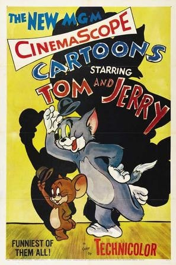
9.1「猫和老鼠（1965年电视版）」（1965）是一部TV，由短片原导演：William Hanna（《猫和老鼠》）执导，制作MGM Animation，类型包括搞笑、日常、音乐，评分9.1，在本站出现在5份片单中，例如高分美漫与动画电影、高分TV动画推荐、高分治愈系动漫推荐。页面只做片单对照，不提供播放。《猫和老鼠》（1965年电视版）是由米高梅电视公司发行、CBS电视台于1965年9月25日至1972年9月17日期间播出的一部电视动画系列。该系列主要是对1940-1958年汉纳-巴伯拉时期《猫和老鼠》剧场短片的电视改编，同时也收录了《巴尼。
#2银魂
「银魂」（2006）是一部TV，由高松信司（第1～105話）→藤田陽一（第100～201話）执导，制作Sunrise，类型包括搞笑、战斗、喜剧，评分8.7，在本站出现在6份片单中，例如高分日漫推荐、高分TV动画推荐、高分热血动漫推荐。页面只做片单对照，不提供播放。江户时代末期（本作的20年前）, 被称为“天人（あまんと）”的谜之异星人来袭。于是地球人与天人之间的战争瞬即爆发，为数众多的武士和攘夷派志士都参与与天人的战斗，幕府见识到天人强大的实力后，最终向天人低头，放弃武士不管，擅自与天人签订不平等条。
#3银魂'
「银魂'」（2011）是一部TV，由藤田陽一执导，制作Sunrise，类型包括搞笑、战斗、热血，评分8.7，在本站出现在7份片单中，例如高分日漫推荐、高分TV动画推荐、高分热血动漫推荐。页面只做片单对照，不提供播放。在2011年4月进行电视动画的第二期播放，集数承接第一期，从第202话开始。第二期动画标题做了小改动。以《银魂'》做为新标题，即在原标题的魂字右上角加了一点。
#4哆啦A梦 大山版
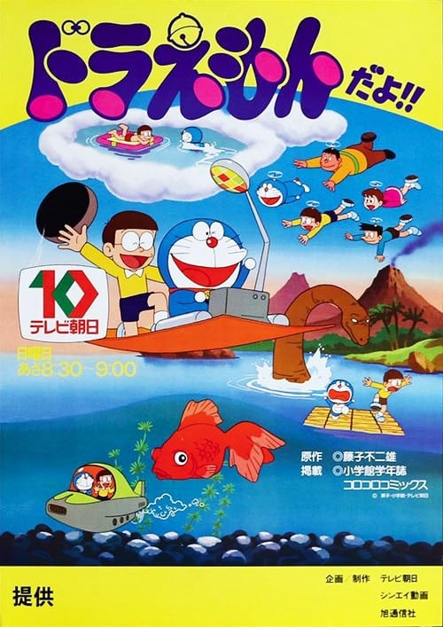
8.7「哆啦A梦 大山版」（1979）是一部TV，由無 →もとひら了→ 芝山努执导，制作シンエイ動画，类型包括搞笑、科幻、日常，评分8.7，在本站出现在6份片单中，例如高分日漫推荐、高分TV动画推荐、高分治愈系动漫推荐。页面只做片单对照，不提供播放。其实即是大家最熟悉的动画版本，有26年的历史。由于日本的哆啦A梦原声配音为大山羡代，故称之 为“大山版”。 大山版哆啦A梦哆啦A梦25年来连续放映，于八十年代曾创下30%的高收视纪绿。原作者于1997年去世后，由电视编剧自行创作的故事涌现。
#5日常
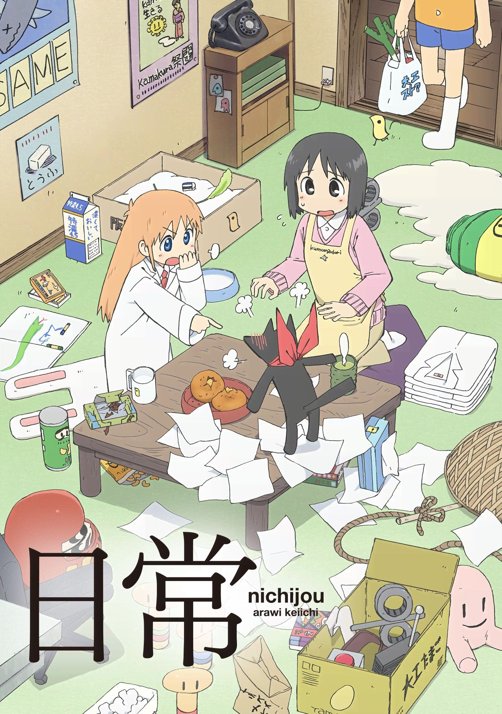
8.5「日常」（2011）是一部TV，由石原立也执导，制作京都动画，类型包括日常、搞笑、治愈，评分8.5，在本站出现在8份片单中，例如高分日漫推荐、高分TV动画推荐、高分治愈系动漫推荐。页面只做片单对照，不提供播放。故事的主角机器人——东云名乃，一直憧憬成为一名普通的女生，却因为背上的发条而感到自卑，在被自称为博士的8岁萝莉胡乱改造之后，每次都无可奈何地感到自己与“普通女生”的距离越来越远了。除了萝莉博士外，故事还出现了很多非日常角色，如年龄为20岁且。
#6哆啦A梦
「哆啦A梦」（2005）是一部TV，由善聡一郎（#1-#421）执导，制作シンエイ動画，类型包括搞笑、科幻、日常，评分8.5，在本站出现在7份片单中，例如高分日漫推荐、高分TV动画推荐、高分治愈系动漫推荐。页面只做片单对照，不提供播放。『ドラえもん』は、藤子・F・不二雄の同名の漫画を原作としたテレビアニメ。2005年（平成17年）からテレビ朝日系列にて放送されている。テレビ朝日・シンエイ動画・ADKエモーションズ制作。 2005年から放送を開始した本シリーズ（以下、本作）。
#7瑞克和莫蒂 第三季
「瑞克和莫蒂 第三季」（2017）是一部TV，由Justin Roiland执导，类型包括科幻、搞笑、冒险，评分8.5，在本站出现在7份片单中，例如高分美漫与动画电影、高分TV动画推荐、高分科幻动漫推荐。页面只做片单对照，不提供播放。Adult Swim频道续订旗下超高收视动画片《瑞克和莫蒂》（Rick and Morty）第三季。
#8猫的协奏曲
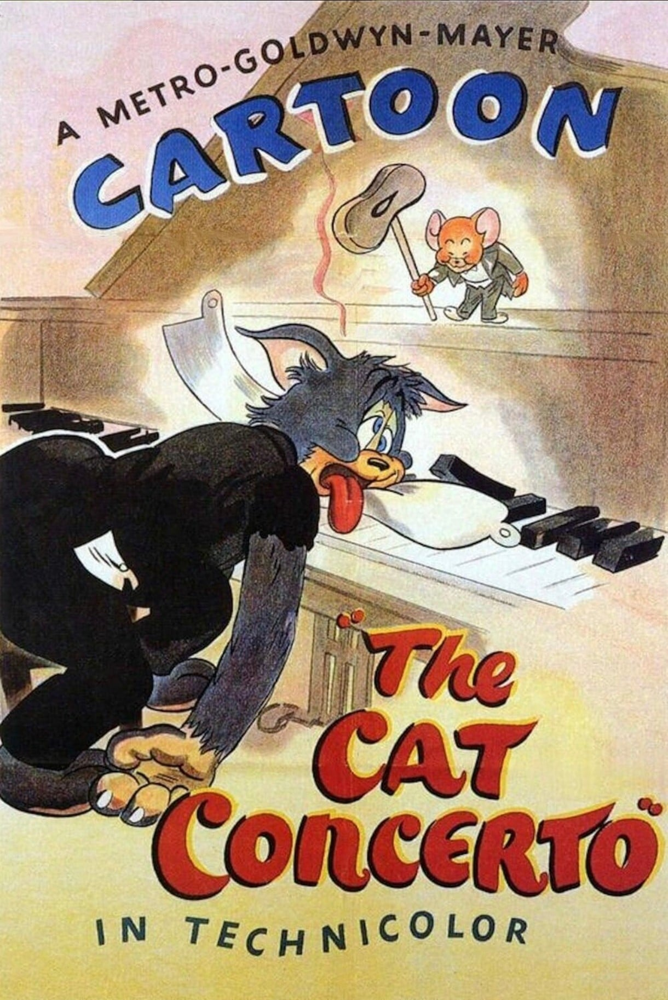
8.5「猫的协奏曲」（1947）是一部剧场版，由约瑟夫·巴伯拉执导，制作Metro-Goldwyn-Mayer cartoon studio，类型包括搞笑、音乐，评分8.5，在本站出现在5份片单中，例如高分美漫与动画电影、高分动画剧场版推荐、必看搞笑动漫。页面只做片单对照，不提供播放。身着燕尾服一本正经的钢琴家汤姆走上舞台，与乐队合作为观众演奏李斯特的《匈牙利狂想曲》。专心致志的汤姆丝毫没有料到，一位不速之客将打乱它的表演。 此时此刻，小老鼠杰瑞正在钢琴内高音区睡觉，汤姆的演奏搅扰了它的睡眠，生气的杰瑞索性起身，干扰汤姆。
#9孤独摇滚！
「孤独摇滚！」（2022）是一部TV，由斎藤圭一郎执导，制作CloverWorks，类型包括音乐、日常、搞笑，评分8.4，在本站出现在7份片单中，例如高分日漫推荐、高分TV动画推荐、高分治愈系动漫推荐。页面只做片单对照，不提供播放。作为网络吉他手“吉他英雄”而广受好评的后藤一里，在现实中却是个什么都不会的沟通障碍者。一里有着组建乐队的梦想，但因为不敢向人主动搭话而一直没有成功，直到一天在公园中被伊地知虹夏发现并邀请进入缺少吉他手的“结束乐队”。可是，完全没有和他人合作。
#10化物语
「化物语」（2009）是一部TV，由新房昭之执导，制作SHAFT，类型包括奇幻、恋爱、校园，评分8.4，在本站出现在8份片单中，例如高分日漫推荐、高分TV动画推荐、高分恋爱动漫推荐。页面只做片单对照，不提供播放。所谓怪异——是因为世界上没有那种东西的存在。 与生物有所不同——但与世界紧紧相连。 故事主人公阿良良木历，因为知道了同班同学战场原的某个“秘密”，从此被卷入一连串的怪异事件中……。
#11瑞克和莫蒂 第一季
「瑞克和莫蒂 第一季」（2013）是一部TV，由Justin Roiland执导，类型包括科幻、搞笑、奇幻，评分8.4，在本站出现在8份片单中，例如高分美漫与动画电影、高分TV动画推荐、高分治愈系动漫推荐。页面只做片单对照，不提供播放。天才兼疯子科学家Rick在失踪多年后突然回到女儿Beth的身边，并且在她的车库里搞了一个科学实验室。Rick有一把“传送门枪”，可以穿越到宇宙的各个次元。孙子Morty莫名其妙就成了他的助手，经常被拖进他的自制太空船内，跟他一同开展各种疯狂。
#12瑞克和莫蒂 第二季
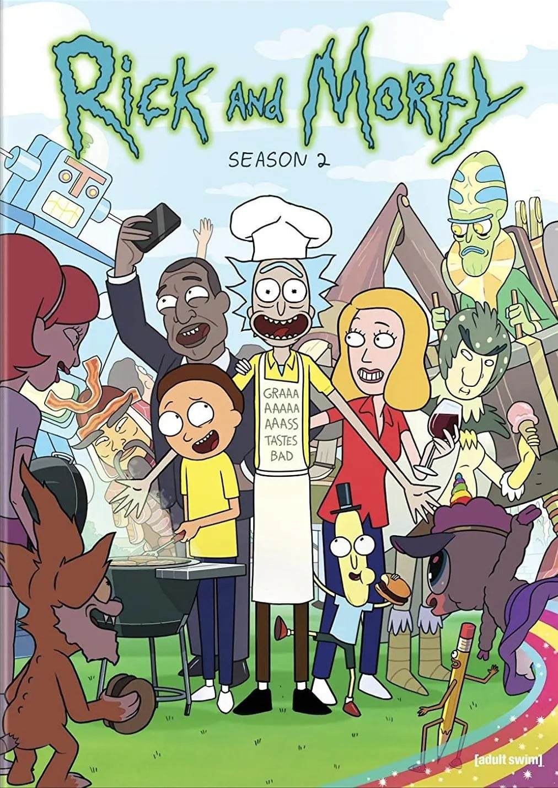
8.4「瑞克和莫蒂 第二季」（2015）是一部TV，由Justin Roiland执导，类型包括科幻、搞笑、奇幻，评分8.4，在本站出现在8份片单中，例如高分美漫与动画电影、高分TV动画推荐、高分热血动漫推荐。页面只做片单对照，不提供播放。疯子科学家Rick Sanchez在失踪20年之后突然回到女儿Beth的生活中，并且在她的车库中开了一个商店。更糟的是，Rick总是将他的孙子Morty和孙女Summer「拖」进他的疯狂实验。每当他发明一个充满科幻色彩的小玩意之后，Mort。
#13探险活宝 第九季
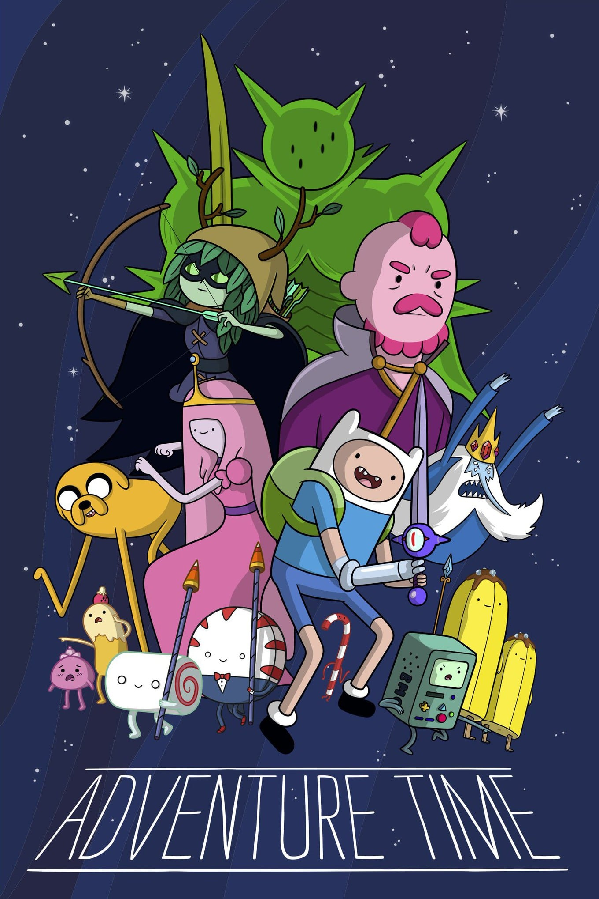
8.4「探险活宝 第九季」（2017）是一部TV，制作Frederator Studios，类型包括冒险、奇幻、搞笑，评分8.4，在本站出现在4份片单中，例如高分美漫与动画电影、高分奇幻冒险动漫、必看搞笑动漫。页面只做片单对照，不提供播放。探险活宝 第九季。2017。冒险、奇幻、搞笑。
#14辉夜大小姐想让我告白-超级浪漫-
「辉夜大小姐想让我告白-超级浪漫-」（2022）是一部TV，由畠山守(小俣真一)执导，制作A-1 Pictures，类型包括恋爱、搞笑、校园，评分8.3，在本站出现在8份片单中，例如高分日漫推荐、高分TV动画推荐、高分恋爱动漫推荐。页面只做片单对照，不提供播放。秀知院学园是秀才云集的菁英学校，在学生会中担任学生会副会长·四宫辉夜遇见了学生会长·白银御行。 原以为这两个任谁都觉得很登对的天才应该很快就会在一起，但这两人却因为过高的自尊心导致他们终没能向对方告白。 “该用什么办法才能让对方向自己告白呢。
#15幸运星
「幸运星」（2007）是一部TV，由山本寛(1-4)执导，制作京都动画，类型包括日常、搞笑、校园，评分8.3，在本站出现在9份片单中，例如高分日漫推荐、高分TV动画推荐、高分治愈系动漫推荐。页面只做片单对照，不提供播放。讲述的就是一群喜爱动画、漫画的高中女生们的日常生活。其中主角泉こなた更是为了喜欢的东西会不惜一切的女孩子，整天出入OTAKU们的的圣地秋叶原、到女仆沏茶店打工、天天都有COSPLAY。这样一名标准的AKIBA系OTAKU的她，和相对平常些的。
#16航海王
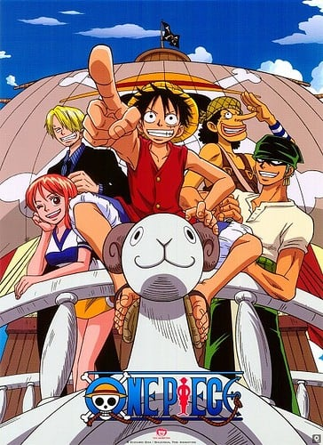
8.3「航海王」（1999）是一部TV，制作東映アニメーション，类型包括热血、战斗、冒险，评分8.3，在本站出现在8份片单中，例如本周追番表、高分日漫推荐、高分TV动画推荐。页面只做片单对照，不提供播放。有个男人，他拥有世界上一切财富、名望和权势，他就是「海盗王」高路德•罗杰。 他在临死前说过这样一句话，让全世界的人都奔向大海： 「想要我的财宝吗？想要的话就拿去吧……！你们去找吧！我把世界上的一切都放在那里了」。 后来世界上的人们将这个宝藏。
#17辉夜大小姐想让我告白 通往大人的阶梯
「辉夜大小姐想让我告白 通往大人的阶梯」（2025）是一部TV，由畠山守(小俣真一)执导，制作A-1 Pictures，类型包括恋爱、校园、搞笑，评分8.3，在本站出现在9份片单中，例如2025年秋季新番推荐、高分日漫推荐、高分TV动画推荐。页面只做片单对照，不提供播放。"每一处都令人怀念，而所有的一切都是无可替代的重要回忆。" 这里是聚集秀才的精英学校——秀知院学园。在该校学生会相遇的副会长四宫辉夜与学生会长白银御行，在经历了漫长的恋爱头脑战后，终于确定了彼此关系……。时光流逝——辉夜独自在房间里翻阅着一。
#18东京教父
「东京教父」（2003）是一部剧场版，由今敏执导，制作MADHOUSE，类型包括治愈、搞笑、剧情，评分8.3，在本站出现在9份片单中，例如高分日漫推荐、高分动画剧场版推荐、高分治愈系动漫推荐。页面只做片单对照，不提供播放。中年流浪汉金、虽身为男人但内心温柔又充满母性的阿花和离家出走少女美雪，他们三人过着无家可归的生活，一起居住在东京原宿的一个角落。 圣诞夜，三人在垃圾堆中发现一个哭泣的弃婴，在孩子的襁褓里，发现了一个酒吧的名片和照片，还有奶粉。阿花非常想要小。
#19银魂' 延长战
「银魂' 延长战」（2012）是一部TV，由藤田陽一执导，制作Sunrise，类型包括搞笑、热血、战斗，评分8.3，在本站出现在7份片单中，例如高分日漫推荐、高分TV动画推荐、高分热血动漫推荐。页面只做片单对照，不提供播放。内容是冷饭“よりぬき銀魂さん”精选集重播加新作动画。
#20蜡笔小新：大人王国的反击
「蜡笔小新：大人王国的反击」（2001）是一部剧场版，由原恵一执导，制作シンエイ動画，类型包括搞笑、家庭、治愈，评分8.3，在本站出现在8份片单中，例如高分日漫推荐、高分动画剧场版推荐、高分治愈系动漫推荐。页面只做片单对照，不提供播放。这天在小新居住的春日部附近，突然新开了一家叫“20世纪博”的游乐园。游乐园里到处播放着从前20世纪的旧的电视节目和电影，这里，一切都是从前时光的回放。每一个到了这里的大人，都沉浸在过去的旧时光里，而对小孩子来说，这些的东西一点意思都没有。令。
#21怪诞小镇 第二季
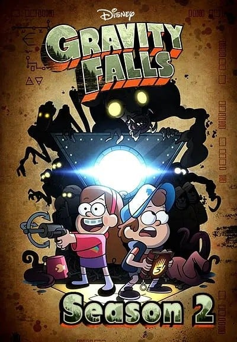
8.3「怪诞小镇 第二季」（2014）是一部TV，由John Aoshima执导，制作Disney Television Animation，类型包括奇幻、搞笑、冒险，评分8.3，在本站出现在7份片单中，例如高分美漫与动画电影、高分TV动画推荐、高分治愈系动漫推荐。页面只做片单对照，不提供播放。Dipper and Mabel Pines spend the summer at their great uncle's tourist trap, The Mystery Shack. They think it's just goi。
#22小魔女DoReMi 大合奏
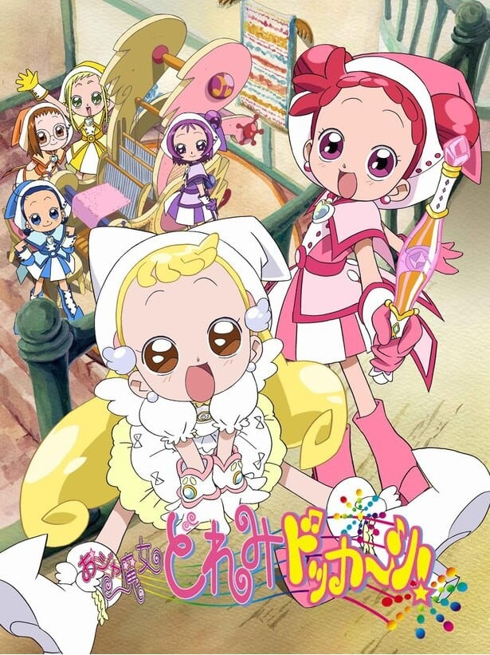
8.3「小魔女DoReMi 大合奏」（2002）是一部TV，制作東映アニメーション，类型包括治愈、校园、搞笑，评分8.3，在本站出现在7份片单中，例如高分日漫推荐、高分TV动画推荐、高分治愈系动漫推荐。页面只做片单对照，不提供播放。虽然前两任女王道鲁宾已唤起在人类世界的回忆，真身显露出来，但仍然被六条象征悲伤回忆的荆棘所围绕，因此仍继续沈睡。 又回去魔女幼稚园的小花，为了和升上六年级的DoReMi等人一起上学，使用魔法把自己变成一位12岁女孩。但因为魔法冲击太大导致她。
#23凉宫春日的忧郁
「凉宫春日的忧郁」（2006）是一部TV，由石原立也执导，制作京都动画，类型包括校园、日常、奇幻，评分8.2，在本站出现在10份片单中，例如高分日漫推荐、高分TV动画推荐、高分治愈系动漫推荐。页面只做片单对照，不提供播放。“我毕业于东中，叫做凉宫春日。我对普通的人类没有兴趣。你们之中要是有外星人、未来人、异世界人或者超能力者的话，就尽管来找我吧。”这是凉宫春日的宣言，也是她对于平庸生活的挑战。 我们可能在很小时就不再相信圣诞老人的存在，也慢慢不会再对外星人，。
#24灵能百分百 第三季
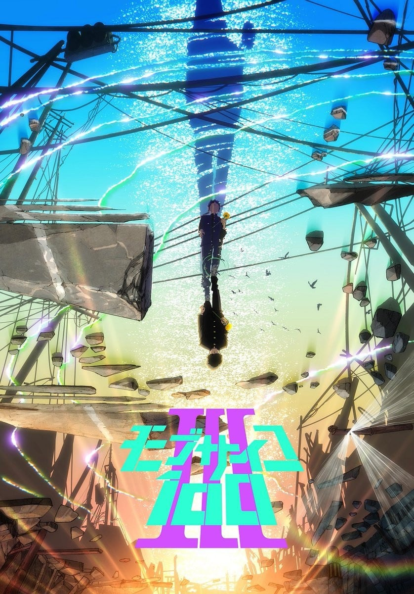
8.2「灵能百分百 第三季」（2022）是一部TV，由蓮井隆弘执导，制作BONES，类型包括战斗、热血、搞笑，评分8.2，在本站出现在7份片单中，例如高分日漫推荐、高分TV动画推荐、高分热血动漫推荐。页面只做片单对照，不提供播放。当某种数值来到「100」时，就会爆发的少年――路人。 他的外表极为普通，却是个强悍的超能力者。 他在神棍师父――灵幻新隆经营的灵能咨询所帮忙处理麻烦的委托，在这样的日子中，他希望的安稳日子会到来吗？然而超能力却会以青春为原动力失控！ 世界引。
#25欢迎加入NHK！
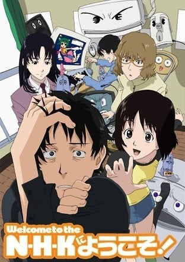
8.2「欢迎加入NHK！」（2006）是一部TV，由山本裕介执导，制作GONZO，类型包括治愈、日常、搞笑，评分8.2，在本站出现在8份片单中，例如高分日漫推荐、高分TV动画推荐、高分恋爱动漫推荐。页面只做片单对照，不提供播放。大学退学第二年的春天，主角家里蹲废材佐藤达广在一事无成下，妄想认为自己的退学跟无职是NHK的全国性阴谋，就在这个时候在他面前出现了之前遇到过叫做中原岬的神秘美少女，并坚持达广一定要加入计划治好只会窝在家里的毛病……。
#26机器人总动员
「机器人总动员」（2008）是一部剧场版，由Andrew Stanton执导，制作Pixar Animation Studios，类型包括科幻、治愈、喜剧，评分8.2，在本站出现在10份片单中，例如高分美漫与动画电影、高分动画剧场版推荐、高分治愈系动漫推荐。页面只做片单对照，不提供播放。“WALL· E”是Waste Allocation Load Lifters - Earth（地球废品分装员）的缩写，这种职业出现在2700年，因为地球的垃圾多到爆炸，整个星球几乎被垃圾掩埋了，罪魁祸首-人类-只得移居到太空船上，并且请一。
#27悠哉日常大王 Nonstop
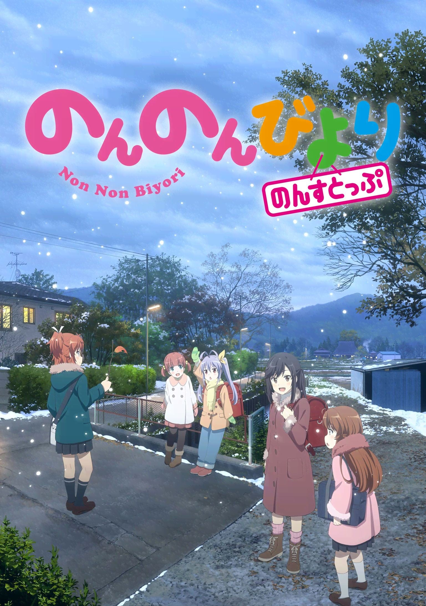
8.2「悠哉日常大王 Nonstop」（2021）是一部TV，由川面真也执导，制作SILVER LINK.，类型包括日常、治愈、百合，评分8.2，在本站出现在7份片单中，例如高分日漫推荐、高分TV动画推荐、高分治愈系动漫推荐。页面只做片单对照，不提供播放。“旭丘分校”的学生，仅有五人。虽然学年性格各不相同，但大家一起做菜、一起捉虫、一起试着练习乐器……春夏秋冬四季变换的乡村生活，一直都那么让人兴奋。虽然一如既往地平和，但在欢笑和感动当中，心中也变得温暖起来。悠哉悠哉的几位成员所度过的日常，再。
#28物语系列 外传季&怪物季
 8.2
8.2「物语系列 外传季&怪物季」（2024）是一部OVA/WEB，由吉澤翠执导，制作SHAFT，类型包括奇幻、恋爱、校园，评分8.2，在本站出现在8份片单中，例如高分日漫推荐、高分OVA与WEB动画、高分恋爱动漫推荐。页面只做片单对照，不提供播放。高中毕业后，阿良良木历的故事结束了。 这次真的结束了。 但是在历的帮助下，她们的故事还没有结束。 这是在青春中挣扎的她们的前日谭，亦或是后日谈。
#29龙珠
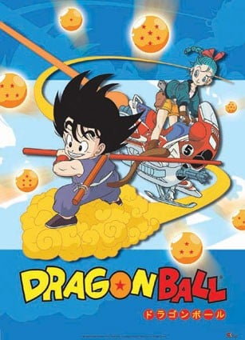
8.2「龙珠」（1986）是一部TV，制作東映アニメーション，类型包括热血、战斗、冒险，评分8.2，在本站出现在6份片单中，例如高分日漫推荐、高分TV动画推荐、高分热血动漫推荐。页面只做片单对照，不提供播放。鸟山明最早在《少年JUMP》周刊连载《龙珠》时，该漫画早期（1-194篇）比较偏重于搞笑，而且打斗一般并不在这儿占主流，因此这个时期，鸟山明的画风对人物性格刻画得很精准，可以让人爆笑起来，因此东映动画公司决定把这个时期的漫画改成一部153集。
#30银魂°
「银魂°」（2015）是一部TV，由宮脇千鶴执导，制作BN Pictures，类型包括搞笑、热血、战斗，评分8.2，在本站出现在7份片单中，例如高分日漫推荐、高分TV动画推荐、高分热血动漫推荐。页面只做片单对照，不提供播放。银魂°。2015。搞笑、热血、战斗。
#31太空丹迪 第二季
「太空丹迪 第二季」（2014）是一部TV，由夏目真悟执导，制作BONES，类型包括科幻、搞笑，评分8.2，在本站出现在6份片单中，例如高分日漫推荐、高分TV动画推荐、高分科幻动漫推荐。页面只做片单对照，不提供播放。太空丹迪 第二季。2014。科幻、搞笑。
#32日常 ETV版
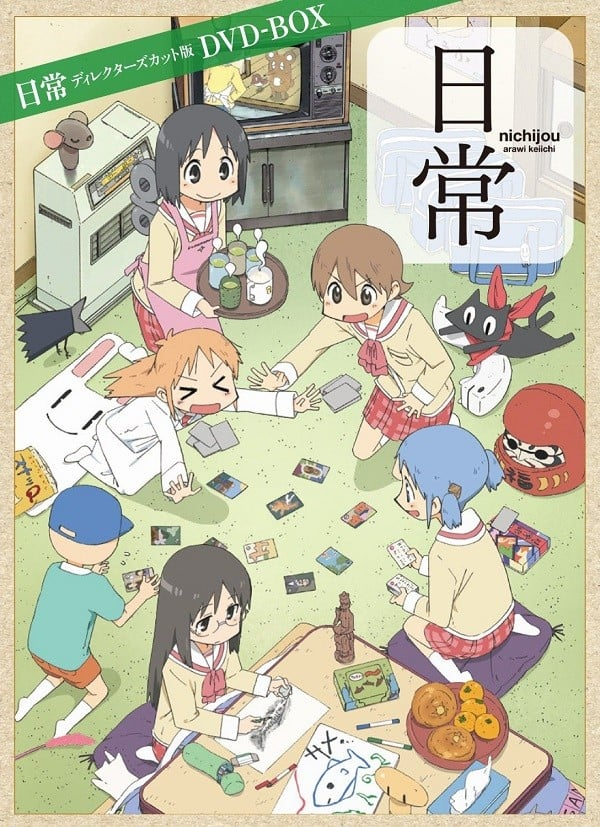
8.2「日常 ETV版」（2012）是一部TV，制作京都动画，类型包括日常、搞笑、治愈，评分8.2，在本站出现在8份片单中，例如高分日漫推荐、高分TV动画推荐、高分治愈系动漫推荐。页面只做片单对照，不提供播放。由あらゐけいいち创作的搞笑漫画「日常」，在今年4月被京都动画改编成TV动画，虽然作品播出后的人气效应远不如京阿尼出品的其他动画，但也有着其可圈可点之处。明年1月在NHK的ETV中将会播放全12话的「日常」，这是对之前播出的全26话内容进行再。
#33福星小子2 绮丽梦中人
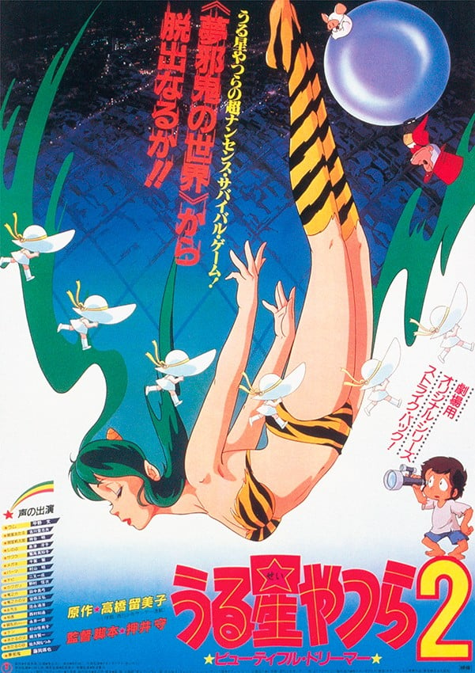
8.2「福星小子2 绮丽梦中人」（1984）是一部剧场版，由押井守执导，制作ぴえろ，类型包括奇幻、搞笑、恋爱，评分8.2，在本站出现在8份片单中，例如高分日漫推荐、高分动画剧场版推荐、高分恋爱动漫推荐。页面只做片单对照，不提供播放。友引高中即将迎来新一年的学园祭，上到老师，下到学生，却都为了这个重要节日而忙碌。虽然应名还有最后一天的准备时间，但是日复一日，年复一年，学园祭开幕式却迟迟未能举行。疲劳的温泉老师从中感到蹊跷，他感到自己与周围的人每年都过着同样的生活，却丝毫。
#34机动警察 NEW OVA
 8.2
8.2「机动警察 NEW OVA」（1990）是一部OVA/WEB，由吉永尚之执导，制作Sunrise，类型包括科幻、机战、日常，评分8.2，在本站出现在7份片单中，例如高分日漫推荐、高分OVA与WEB动画、高分治愈系动漫推荐。页面只做片单对照，不提供播放。設定・時間軸共にTVシリーズの延長にある作品。47話での放送打ち切りに伴いはみ出したTVシリーズの最終章である、グリフォン編の完結編部分と、1話完結のオリジナル・エピソードから成る。その中で12話の「ふたりの軽井沢」はダイアログの収録を先に。
#35小魔女DoReMi 童年秘密篇
 8.2
8.2「小魔女DoReMi 童年秘密篇」（2004）是一部OVA/WEB，制作東映アニメーション，类型包括搞笑、校园、奇幻，评分8.2，在本站出现在6份片单中，例如高分日漫推荐、高分OVA与WEB动画、高分校园动漫推荐。页面只做片单对照，不提供播放。在故事完结篇后所推出来的OVA。以Mo~tto! 小魔女DoReMi为蓝本，讲述穿插于第三部中的轶事。故事主要围绕在DoReMi、羽月、小爱、音符、小桃子、以及其他同学、家人和朋友的小故事。
#36斩服少女
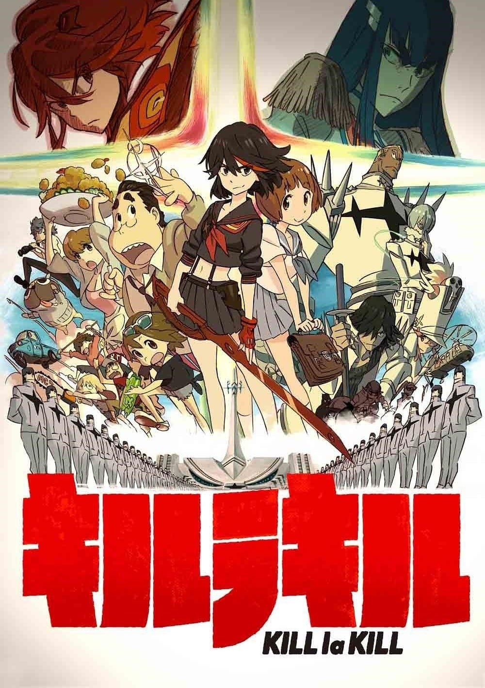
8.1「斩服少女」（2013）是一部TV，由今石洋之执导，制作TRIGGER，类型包括热血、战斗、百合，评分8.1，在本站出现在7份片单中，例如高分日漫推荐、高分TV动画推荐、高分热血动漫推荐。页面只做片单对照，不提供播放。本故事以被武力和恐怖支配的本能字学院为舞台，以为父报仇的转校生少女为中心， 围绕着在学园中“执牛耳者”的学生及学生会四大天王间的激战故事展开。 缠流子和鬼龙院皋月，两人为本作的主人公。在本作中，皋月用极制服的力量支配着学园， 而流子为查明父。
#37灵能百分百 第二季
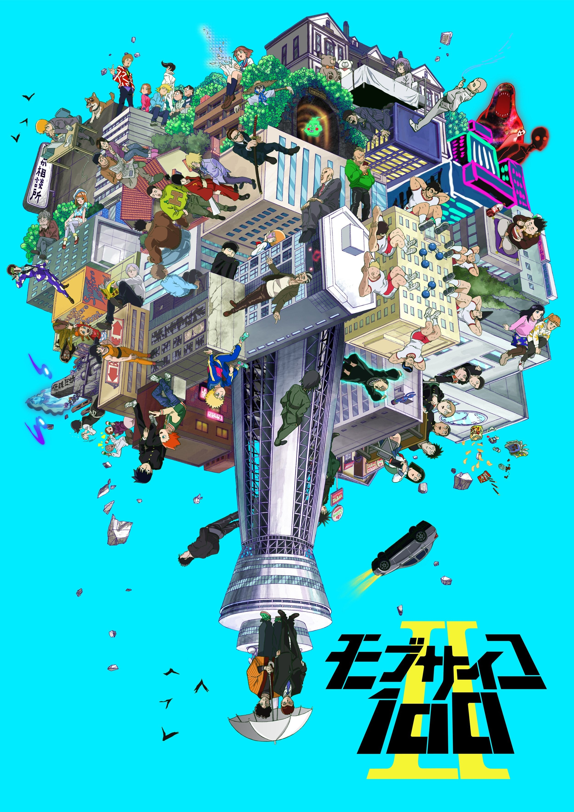
8.1「灵能百分百 第二季」（2019）是一部TV，由立川譲执导，制作BONES，类型包括超能力、战斗、搞笑，评分8.1，在本站出现在7份片单中，例如高分日漫推荐、高分TV动画推荐、高分热血动漫推荐。页面只做片单对照，不提供播放。想要过普通生活的中学2年生·影山茂夫，通称“龙套”。有着一瞬间就会混杂在人群中的不起眼外表的他，实际上拥有比任何人都要强力的超能力……这样的龙套与周围人们之间的青春与恋爱，静静地累积直至爆发的种种感情。以及，曾经阻挡在龙套面前的神秘组织“爪。
#38春宵苦短，少女前进吧！
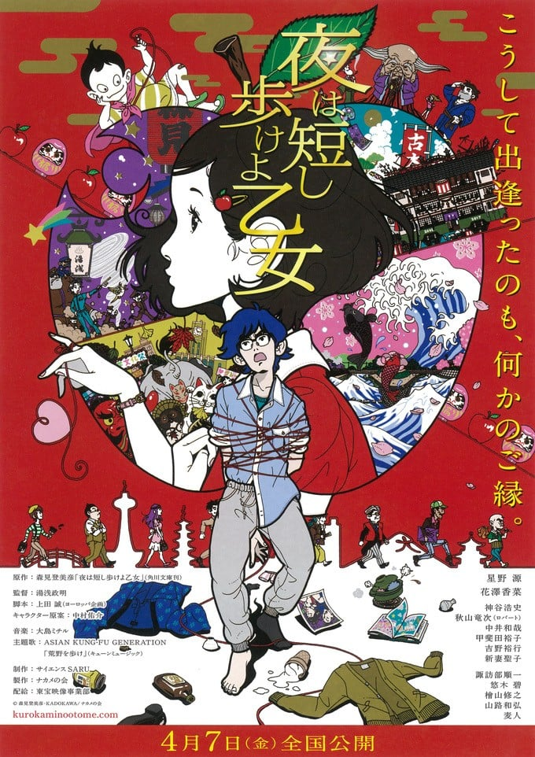
8.1「春宵苦短，少女前进吧！」（2017）是一部剧场版，由湯浅政明执导，制作サイエンスSARU，类型包括恋爱、奇幻、校园，评分8.1，在本站出现在10份片单中，例如高分日漫推荐、高分动画剧场版推荐、高分恋爱动漫推荐。页面只做片单对照，不提供播放。对学妹“黑发少女”一见倾心的“前辈”，今天也是进行着名为『尽可能进入她的眼帘』的作战——简称“尽(进)她眼作战”。 春之先斗町、夏之旧书市、秋之学园祭、而后是冬天的到来…。在京都这个城市中，在被卷入充满个性的同伴们所引发的一个个奇妙事件的同。
#39别对映像研出手！
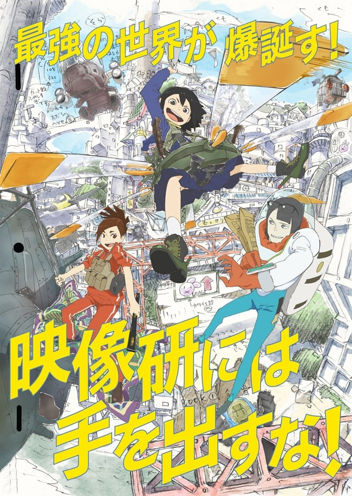
8.1「别对映像研出手！」（2020）是一部TV，由湯浅政明执导，制作サイエンスSARU，类型包括校园、日常、搞笑，评分8.1，在本站出现在8份片单中，例如高分日漫推荐、高分TV动画推荐、高分热血动漫推荐。页面只做片单对照，不提供播放。高中1年级学生浅草绿，是强调“设定即生命”的动画迷。在素描本上描绘积累各种各样的想法，却因不能一个人行动做事而无法迈出走向动画制作的一步。对于浅草这种才能，拥有制片人气质的金森沙耶香很快注意到了。同时，得知同学兼新星读者模特的水崎燕，其实希。
#40悠哉日常大王 Repeat
「悠哉日常大王 Repeat」（2015）是一部TV，由川面真也执导，制作SILVER LINK.，类型包括日常、治愈、百合，评分8.1，在本站出现在7份片单中，例如高分日漫推荐、高分TV动画推荐、高分治愈系动漫推荐。页面只做片单对照，不提供播放。「旭丘分校」只有5名学生。 虽然年纪和性格都不相同，一起赏花，一起在河边玩耍，一起挖白薯，一起挖雪洞…… 一起度过春夏秋冬，享受着田间生活。 虽然在平淡的生活中可能并未察觉，不知不觉中，一起欢笑，一起流泪，心中变得温暖起来。 这样悠哉游哉的。
#41全金属狂潮 校园篇
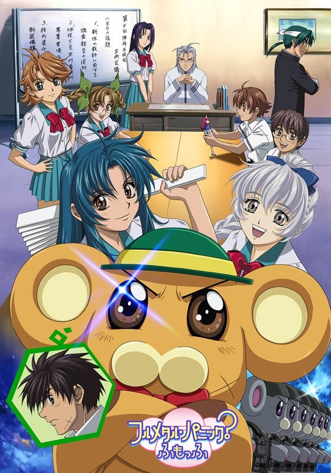
8.1「全金属狂潮 校园篇」（2003）是一部TV，由武本康弘执导，制作京都动画，类型包括搞笑、校园、科幻，评分8.1，在本站出现在9份片单中，例如高分日漫推荐、高分TV动画推荐、高分校园动漫推荐。页面只做片单对照，不提供播放。相良宗介中士是神秘的国际组织米斯利尔特殊部队成员，这一次任务是化装成高中生潜入都立阵代高校，去保护一位16岁的女高中生千鸟香奈芽，这位蓝发少女似乎和普通的女高中生没有什么两样，但却成为各国间谍秘密争夺的目标，为了保护千鸟，宗介与其他神秘组织。
#42高分少女 第二季
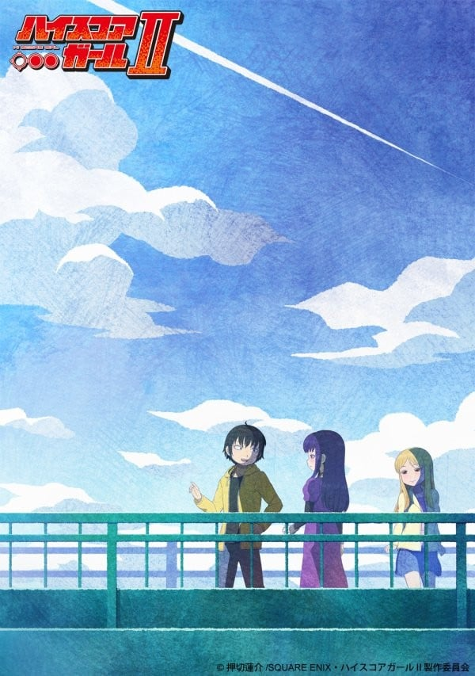
8.1「高分少女 第二季」（2019）是一部TV，由山川吉樹执导，制作J.C.STAFF，类型包括恋爱、校园、搞笑，评分8.1，在本站出现在9份片单中，例如高分日漫推荐、高分TV动画推荐、高分恋爱动漫推荐。页面只做片单对照，不提供播放。喜欢游戏的少年，因为游戏与少女相遇。 对胜利的渴望，对技术的追求，对自尊的维护，在游戏中心孕育的友情与爱慕。依靠着来自朋友、家庭和游戏角色对内心的支撑，少年少女们也在不断的成长，只要继续坚持就能无限续关？ 春雄、晶、小春挑战最终关卡的结果究。
#43黄金神威 第三季
「黄金神威 第三季」（2020）是一部TV，由難波日登志执导，制作ジェノスタジオ，类型包括冒险、搞笑、历史，评分8.1，在本站出现在8份片单中，例如高分日漫推荐、高分TV动画推荐、高分热血动漫推荐。页面只做片单对照，不提供播放。杉元とアシㇼパの再会は叶うのか!? 極寒の地で新たな局面を迎える生存競争サバイバル、樺太編が開幕ッッ!!! 網走監獄で繰り広げられた激しい攻防戦の末に、離れ離れになってしまった「不死身の杉元」こと杉元佐一とアイヌの少女・アシㇼパ。アシㇼパは。
#44蜡笔小新
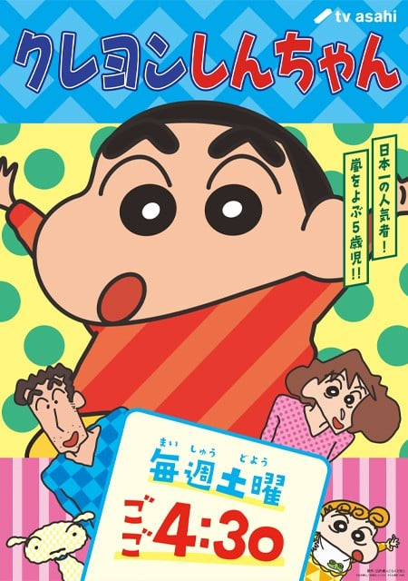
8.1「蜡笔小新」（1992）是一部TV，由本郷みつる（#1-#SP13）执导，制作シンエイ動画，类型包括搞笑、日常、治愈，评分8.1，在本站出现在6份片单中，例如高分日漫推荐、高分TV动画推荐、高分治愈系动漫推荐。页面只做片单对照，不提供播放。《蜡笔小新》（日语：クレヨンしんちゃん，英语：Crayon Shin-chan）是日本已故漫画家臼井仪人所著的漫画。由于蜡笔小新大受欢迎，动画版于1992年在朝日电视台播出。在日本，电视动画版自1992年4月13日开始，持续在朝日电视台播出。
#45海绵宝宝 第一季
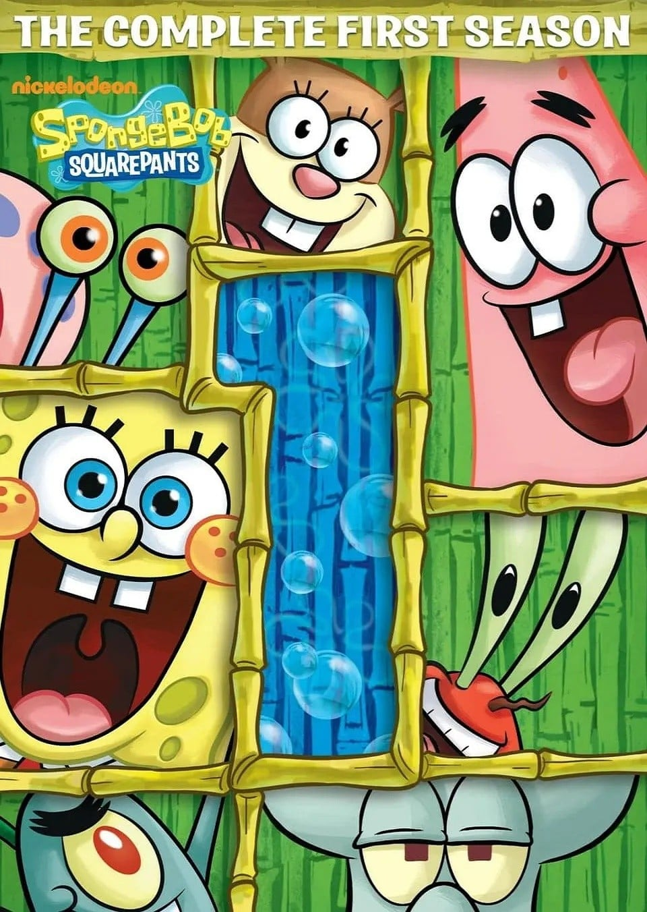
8.1「海绵宝宝 第一季」（1999）是一部TV，由Stephen Hillenburg执导，制作Nickelodeon Animation Studio，类型包括搞笑、日常、奇幻，评分8.1，在本站出现在7份片单中，例如高分美漫与动画电影、高分TV动画推荐、高分治愈系动漫推荐。页面只做片单对照，不提供播放。海绵宝宝是一块穿着短裤衬衫打领带、暴牙大眼睛的黄色海绵，他生活在太平洋中央一片名为比基尼的海底之下。这里风和日丽，平静祥和，生活无忧无虑。海绵宝宝住在一个菠萝形状的房子里，与之为伴的是他的宠物小蜗（蜗牛）。开朗、纯真的海绵宝宝有许多好朋友，。
#46降世神通：最后的气宗 第三季
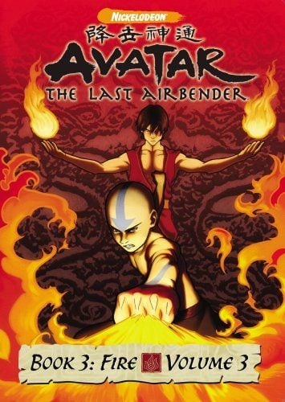
8.1「降世神通：最后的气宗 第三季」（2007）是一部TV，制作Nickelodeon Animation Studio，类型包括战斗、奇幻、搞笑，评分8.1，在本站出现在7份片单中，例如高分国漫推荐、高分TV动画推荐、高分热血动漫推荐。页面只做片单对照，不提供播放。故事具有中国神话色彩，并且人设也具有东方古韵。该动画却是在2005年获得第三十三届美国动画安妮奖最佳电视动画提名，可想而知在欧美地区已经有一定影响力。《降世神通》主要讲述的是一个虚构的东方神话冒险故事：气、火、水、土是主宰着整个世界的四大神。
#47相聚一刻
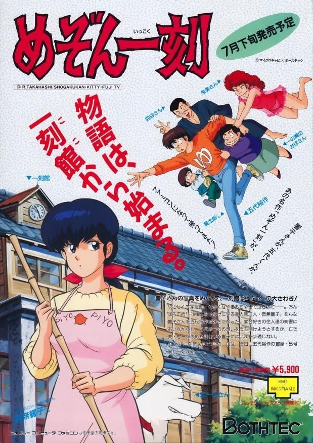
8.1「相聚一刻」（1986）是一部TV，由やまざきかずお（第1話 - 第26話）→安濃高志（第27話 - 第52話）→吉永尚之（第53話 - 第96話）执导，制作スタジオディーン，类型包括恋爱、爱情、搞笑，评分8.1，在本站出现在6份片单中，例如高分日漫推荐、高分TV动画推荐、高分恋爱动漫推荐。页面只做片单对照，不提供播放。贫穷的落榜生五代裕作住在一所名叫“一刻馆”的破旧公寓中复习备考。公寓中还住着长舌的家族主妇一濑太太、奸猾刻薄的神秘人物四谷以及泼辣开放的酒廊小姐朱美，他们日夜胡闹，令五代叫苦不迭。新来的年轻漂亮的管理员音无响子为五代带来了阳光。然而，五代优。
#48死神 千年血战篇-祸进谭-
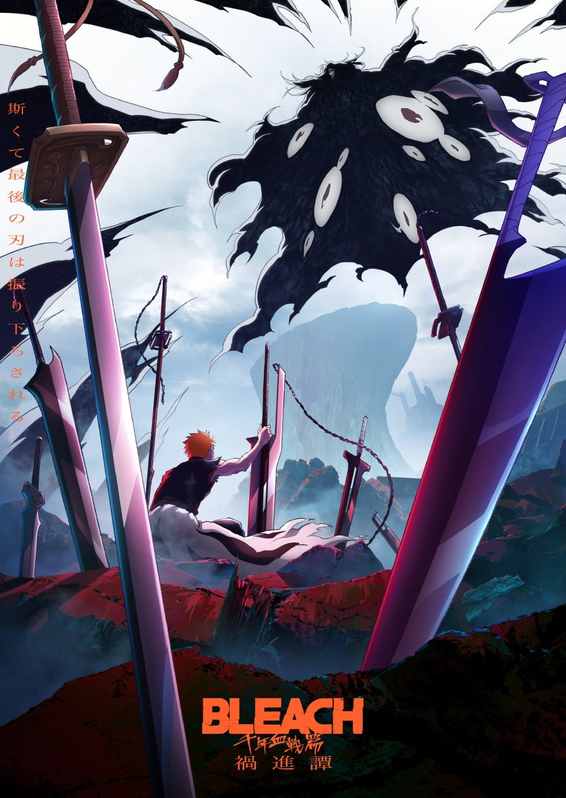
8.1「死神 千年血战篇-祸进谭-」（2026）是一部TV，由村田光执导，制作PIERROT FILMS，类型包括战斗、热血、奇幻，评分8.1，在本站出现在9份片单中，例如2026年夏季新番推荐、2026年新番总表、高分日漫推荐。页面只做片单对照，不提供播放。死神与灭却师，在历经千年的血战尽头，即使看见的是毁灭的未来……。 为了拦阻企图闯入灵王宫的优哈巴哈，隶属于王的特务「第零队」挺身迎击，但灭却师之王和他的亲卫队却击败了第零队壮烈的卍解，最终踏入灵王的大内里。 黑崎一护等人受兵主部一兵卫之托守。
#49马男波杰克6 下
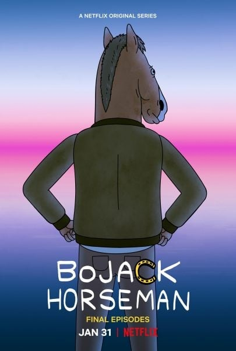
8.1「马男波杰克6 下」（2020）是一部TV，类型包括搞笑、日常、喜剧，评分8.1，在本站出现在4份片单中，例如高分美漫与动画电影、高分治愈系动漫推荐、必看搞笑动漫。页面只做片单对照，不提供播放。马男波杰克6 下。2020。搞笑、日常、喜剧。
#50飞出个未来 第6季
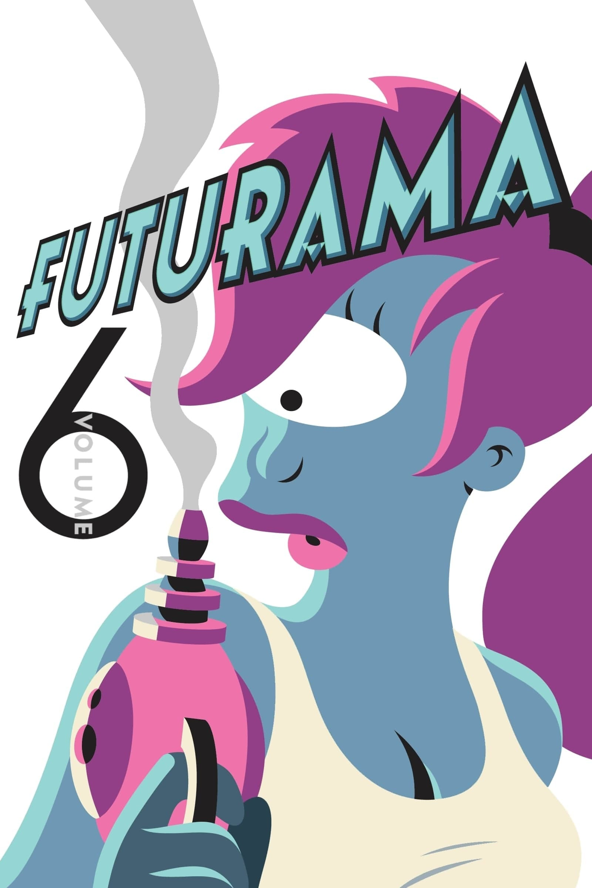
8.1「飞出个未来 第6季」（2010）是一部TV，制作20th Century Fox，类型包括科幻、搞笑、喜剧，评分8.1，在本站出现在4份片单中，例如高分美漫与动画电影、高分科幻动漫推荐、必看搞笑动漫。页面只做片单对照，不提供播放。Futurama讲述20世纪末的废柴主人公Philip J. Fry（前纽约批萨店的外送员）偶然穿越到1000年后继续过着废柴人生的故事。 原本被取消TV动画在本季复活，内容承接大电影4：绿色狂想（Futurama: Into the Wi。
#51探险活宝 第八季
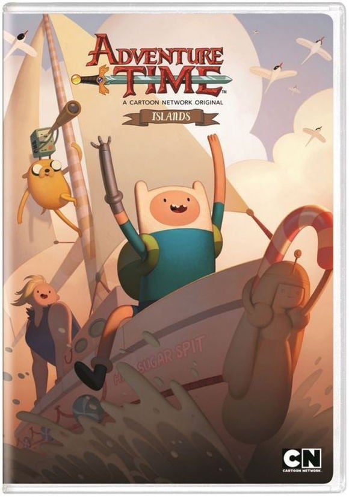
8.1「探险活宝 第八季」（2016）是一部TV，类型包括冒险、奇幻、搞笑，评分8.1，在本站出现在5份片单中，例如高分美漫与动画电影、高分治愈系动漫推荐、高分奇幻冒险动漫。页面只做片单对照，不提供播放。探险活宝 第八季。2016。冒险、奇幻、搞笑。
#52阿甘妙世界 第一季
「阿甘妙世界 第一季」（2011）是一部TV，由Mic Graves执导，类型包括搞笑、科幻、喜剧，评分8.1，在本站出现在6份片单中，例如高分美漫与动画电影、高分治愈系动漫推荐、高分科幻动漫推荐。页面只做片单对照，不提供播放。阿甘是一位魅力十足、生性乐天的12岁男孩。他做事往往因过分热衷而变成捣蛋，不过他还是会继续保持乐观的想法。阿甘拥有搞怪的冒险精神，甚麽奇怪的东西都要试试看。无论阿甘的计划最终结果如何，他都能迅速恢复心情，只可惜他从错误中学懂的，就只有如何製。
#53败犬女主太多了！
「败犬女主太多了！」（2024）是一部TV，由北村翔太郎执导，制作A-1 Pictures，类型包括恋爱、校园、搞笑，评分8.0，在本站出现在8份片单中，例如高分日漫推荐、高分TV动画推荐、高分恋爱动漫推荐。页面只做片单对照，不提供播放。没能赢得心上人恋情的女孩——“败犬女主”。 爱吃的青梅竹马系女主·八奈见杏菜。 活力充沛的运动系女主·烧盐柠檬。 怕生的小动物系女主·小鞠知花。 被有点缺憾的败犬女主——败女们环绕，新感觉、乱糟糟的败走系青春故事就此揭幕。 因失败而更加闪耀。
#54一拳超人
「一拳超人」（2015）是一部TV，由夏目真悟执导，制作MADHOUSE，类型包括热血、搞笑、战斗，评分8.0，在本站出现在7份片单中，例如高分日漫推荐、高分TV动画推荐、高分热血动漫推荐。页面只做片单对照，不提供播放。因为兴趣而开始当英雄的男人「埼玉」，在经过三年特训之後，得到了无敌的力量。 然而，他实在是强过了头，所以无论多厉害的对手，都被他一拳解决。「绝对强势的力量，实在是很无聊。」在这种普通热血的最强英雄面前，今天也出现新的敌踪。今天可以让他拿出认。
#55凉宫春日的忧郁 2009
「凉宫春日的忧郁 2009」（2009）是一部TV，由团长辅佐：武本康弘执导，制作京都动画，类型包括校园、日常、奇幻，评分8.0，在本站出现在10份片单中，例如高分日漫推荐、高分TV动画推荐、高分治愈系动漫推荐。页面只做片单对照，不提供播放。“我对普通的人类没有兴趣。你们之中要是有外星人、未来人、异世界人或者超能力者的话，就尽管来找我吧！”这是围绕着被天上天下唯我独尊超积极任性女孩凉宫春日所指挥的阿虚和SOS团而展开的微妙的非日常校园故事。 或者说本作是：某女高中生想要和外星人。
#56吊带袜天使
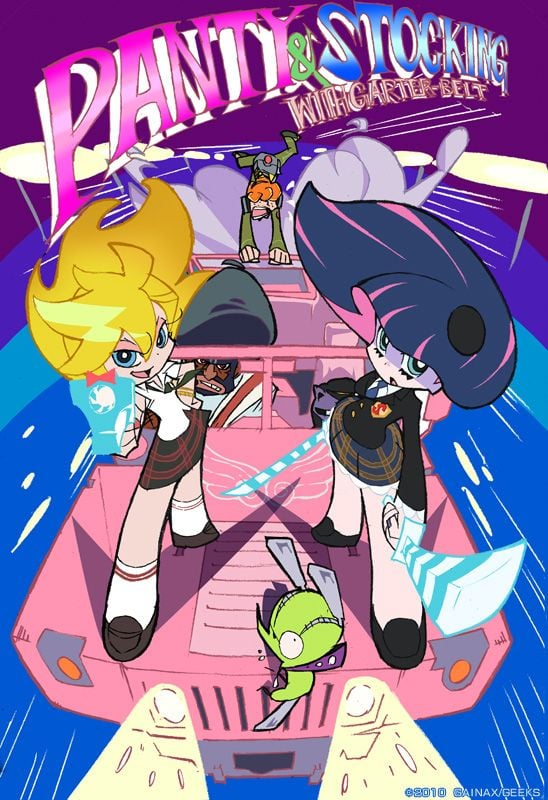
8.0「吊带袜天使」（2010）是一部TV，由今石洋之执导，制作GAINAX，类型包括搞笑、战斗、奇幻，评分8.0，在本站出现在7份片单中，例如高分日漫推荐、高分TV动画推荐、高分热血动漫推荐。页面只做片单对照，不提供播放。在天堂和地狱的裂缝之间有一座城市—堕天城（Daten City），在那里人们一直饱受“恶灵（Ghost）”的袭击。 腐蚀人心的黑暗，至今仍在悄悄地侵蚀这个城市，有人正试图以超自然力，消灭这些由欲望产生的恶灵，担负了这驱逐黑暗的使命。 因行为。
#57悠哉日常大王
「悠哉日常大王」（2013）是一部TV，由川面真也执导，制作SILVER LINK.，类型包括日常、治愈、百合，评分8.0，在本站出现在7份片单中，例如高分日漫推荐、高分TV动画推荐、高分治愈系动漫推荐。页面只做片单对照，不提供播放。作品舞台是一个挂著“牛经过注意”的看板，公车不等上5个小时不会来的乡下农村，而主角一条萤因父亲工作调职的关系从东京迁居此地，故事即是描写萤与越谷姐妹及宫内姐妹渡过的日常光景。
#58辉夜大小姐想让我告白-初吻不会结束-
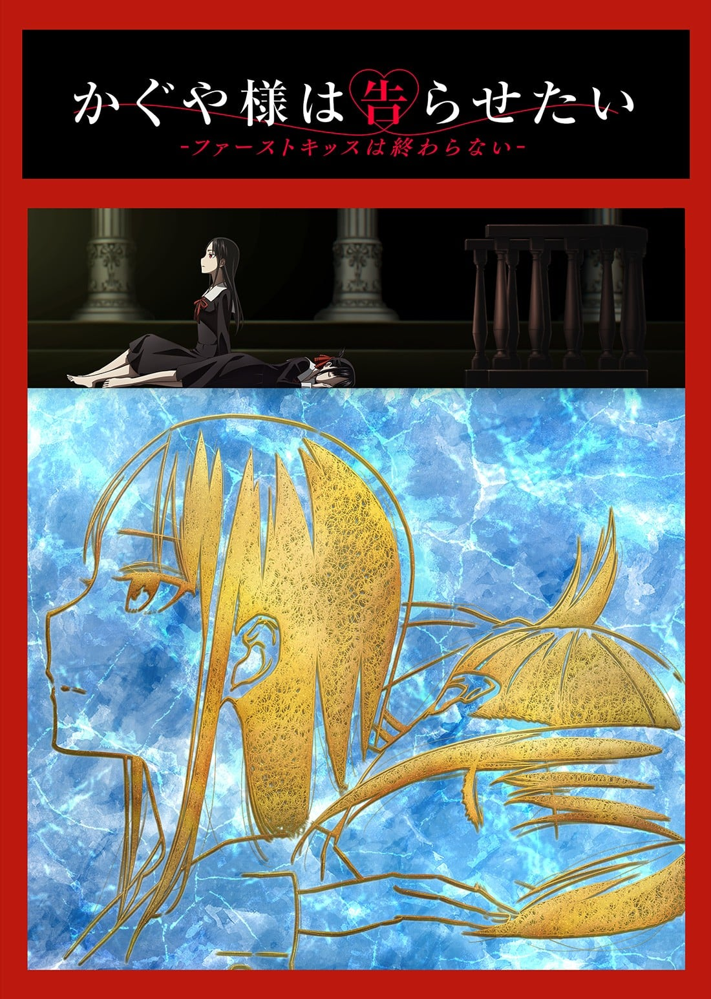
8.0「辉夜大小姐想让我告白-初吻不会结束-」（2023）是一部TV，由畠山守(小俣真一)执导，制作A-1 Pictures，类型包括恋爱、搞笑、校园，评分8.0，在本站出现在8份片单中，例如高分日漫推荐、高分TV动画推荐、高分恋爱动漫推荐。页面只做片单对照，不提供播放。两人冻结的内心，在没有下雪的东京夜空渐渐融化。 爱情喜剧，在特别却又平凡的圣诞节，重新归来 — 副会长・四宫辉夜与学生会长・白银御行在秀知院学园的学生会相遇，两名天才在历经了漫长的恋爱头脑战后，终于向对方表达了自己的心意，在“奉心祭”首度接。
#59擅长捉弄的高木同学 第三季
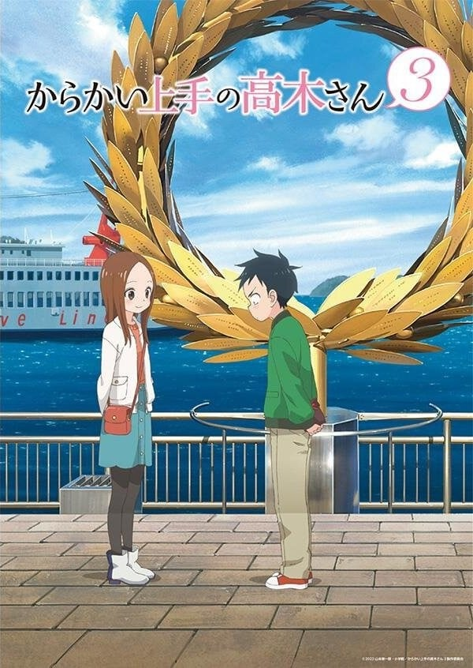
8.0「擅长捉弄的高木同学 第三季」（2022）是一部TV，由赤城博昭执导，制作シンエイ動画，类型包括恋爱、校园、日常，评分8.0，在本站出现在8份片单中，例如高分日漫推荐、高分TV动画推荐、高分恋爱动漫推荐。页面只做片单对照，不提供播放。“捉弄”缩短了二人的距离， 2022年想要守候的初恋就在这里。 在一所初中里，有一个叫做西片的男生，他时不时就会遭到同桌女生高木的捉弄。 西片每次思考对策，想要捉弄回高木，都会被高木看透。 于是西片每天都绞尽脑汁，想要扳回一城… 然而随着时。
#60辉夜大小姐想让我告白-初吻不会结束- 电影
「辉夜大小姐想让我告白-初吻不会结束- 电影」（2022）是一部剧场版，由畠山守(小俣真一)执导，制作A-1 Pictures，类型包括恋爱、校园、搞笑，评分8.0，在本站出现在9份片单中，例如高分日漫推荐、高分动画剧场版推荐、高分恋爱动漫推荐。页面只做片单对照，不提供播放。两人冻结的内心，在没有下雪的东京夜空渐渐融化。 爱情喜剧，在特别却又平凡的圣诞节，重新归来 — 副会长・四宫辉夜与学生会长・白银御行在秀知院学园的学生会相遇，两名天才在历经了漫长的恋爱头脑战后，终于向对方表达了自己的心意，在“奉心祭”首度接。
#61校园迷糊大王
「校园迷糊大王」（2004）是一部TV，由高松信司执导，制作スタジオコメット，类型包括搞笑、校园、恋爱，评分8.0，在本站出现在7份片单中，例如高分日漫推荐、高分TV动画推荐、高分恋爱动漫推荐。页面只做片单对照，不提供播放。冢本天满是高中二年级学生。和许多的女孩子一样，她也在恋爱。但是，她一直没能向她非常喜欢的人——同班同学的乌丸大路表白爱意。 天不佑人，天满突然知道乌丸还有1年就要转校了这件事！尽管如此，她还是得到了妹妹八云和友人们的协助。为了告白她一会儿化。
#62剧场版 悠哉日常大王 Vacation
「剧场版 悠哉日常大王 Vacation」（2018）是一部剧场版，由川面真也执导，制作SILVER LINK.，类型包括日常、治愈、百合，评分8.0，在本站出现在8份片单中，例如高分日漫推荐、高分动画剧场版推荐、高分治愈系动漫推荐。页面只做片单对照，不提供播放。“旭丘分校”的学生只有5人。即使学年和性格都各不相同，也总是在四季变换中一同享受着乡村生活。某天，旭丘分校的众人在百货店的抽奖中抽到了特等奖冲绳旅行券。于是，大家利用暑假时间前往冲绳……。
#63银之匙 Silver Spoon 第二季
「银之匙 Silver Spoon 第二季」（2014）是一部TV，由出合小都美执导，制作A-1 Pictures，类型包括治愈、校园、日常，评分8.0，在本站出现在7份片单中，例如高分日漫推荐、高分TV动画推荐、高分治愈系动漫推荐。页面只做片单对照，不提供播放。累計発行部数が第８巻で1000万部を記録した人気コミック『銀の匙 Silver Spoon』を原作とするテレビアニメシリーズの第２期。第１期のスタッフ・キャストが再結集しているが、監督は第１期で副監督を務めた出合小都美が起用された。
#64瑞克和莫蒂 第四季
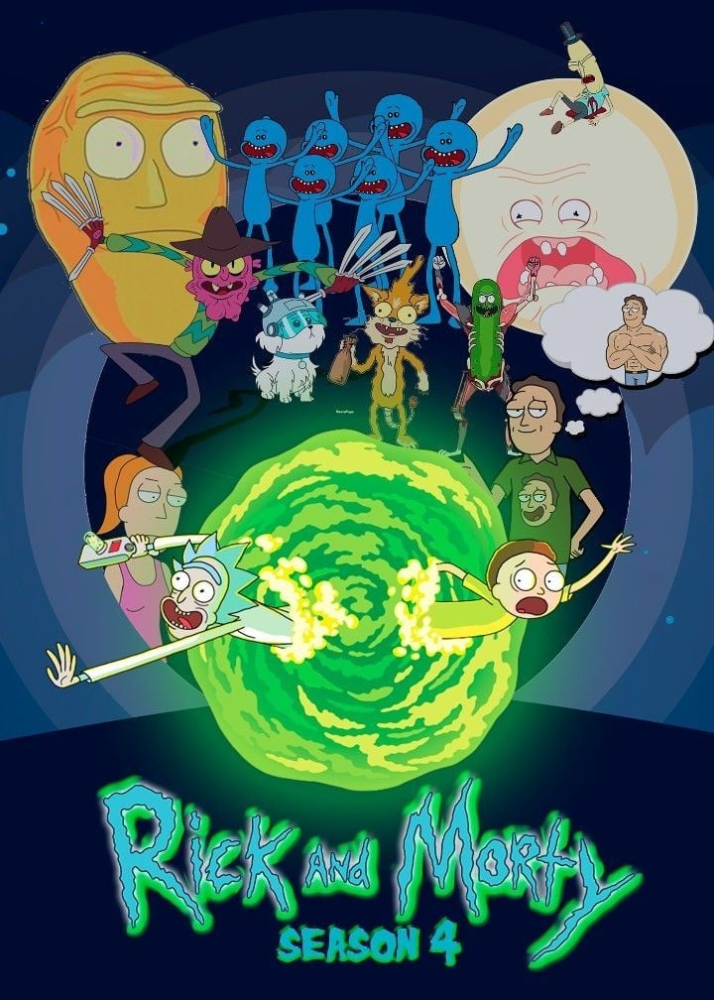
8.0「瑞克和莫蒂 第四季」（2019）是一部TV，由Justin Roiland执导，类型包括科幻、搞笑、冒险，评分8.0，在本站出现在7份片单中，例如高分美漫与动画电影、高分TV动画推荐、高分科幻动漫推荐。页面只做片单对照，不提供播放。The fourth season of the animated television series Rick and Morty was confirmed by Adult Swim in May 2018. The season i。
#65小马宝莉：友谊就是魔法 第一季
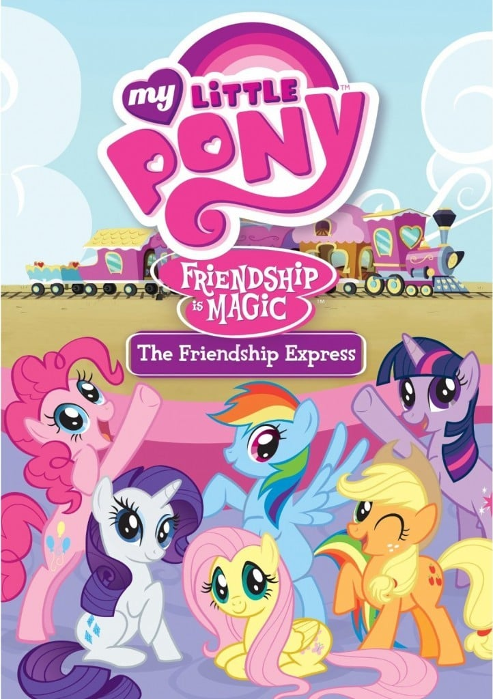
8.0「小马宝莉：友谊就是魔法 第一季」（2010）是一部TV，类型包括日常、治愈、奇幻，评分8.0，在本站出现在7份片单中，例如高分美漫与动画电影、高分TV动画推荐、高分治愈系动漫推荐。页面只做片单对照，不提供播放。2010年的10月10日，my little pony正式推出了G4“Friendship is Magic” ，比起前几代，这些小马造型更加可爱，更加Q,小马驹也在G4首次推出了羽翼独角兽，主要有7个人物，乡村小马Applejack，温柔。
#66怪诞小镇 第一季
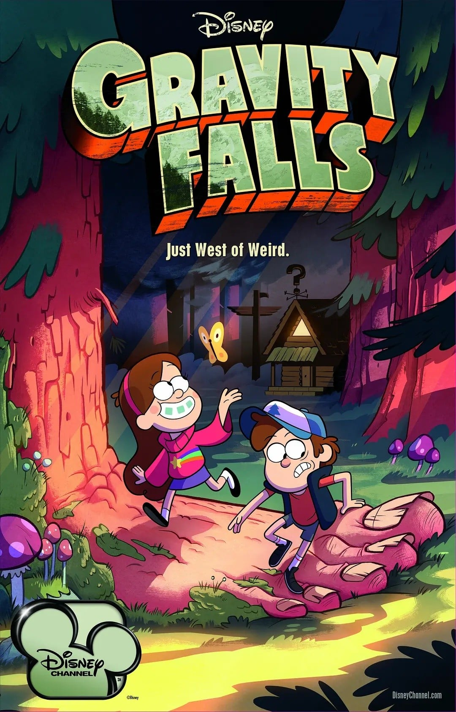
8.0「怪诞小镇 第一季」（2012）是一部TV，制作Disney Television Animation，类型包括奇幻、搞笑、日常，评分8.0，在本站出现在7份片单中，例如高分美漫与动画电影、高分TV动画推荐、高分治愈系动漫推荐。页面只做片单对照，不提供播放。暑假到了，双胞胎姐弟俩梅宝（克里斯汀·沙尔 Kristen Schaal 配音）和迪普（杰森·雷特 Jason Ritter 配音）被爸妈赶到一个偏僻小镇“重力泉”过暑假，在这里，他们的斯坦叔公经营着一家专门敲诈游客的旅游景点“神秘小屋”，。
#67鼹鼠的故事
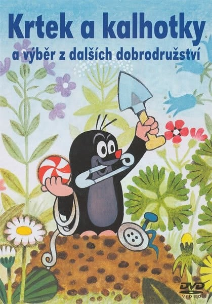
8.0「鼹鼠的故事」是一部TV，由Zdeněk Miler执导，制作Bratři v triku，类型包括治愈、搞笑，评分8.0，在本站出现在5份片单中，例如高分美漫与动画电影、高分TV动画推荐、高分治愈系动漫推荐。页面只做片单对照，不提供播放。《鼹鼠的故事》由捷克（原捷克斯洛伐克）的“Bratři v triku”工作室制作，是非常著名的动画片。电视台播放的《鼹鼠》系列大都是20世纪70年代的作品，有两部90年代出品的短片。这是一部深具自由灵动的生命气息、散发着快乐幽默的童真和意。
#68降世神通：最后的气宗 第二季
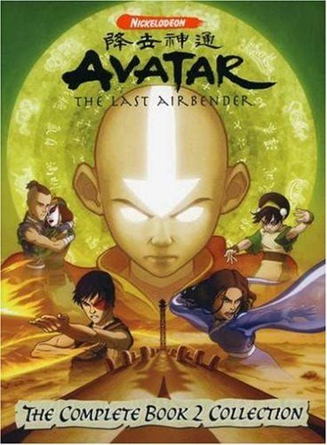
8.0「降世神通：最后的气宗 第二季」（2006）是一部TV，制作Nickelodeon Animation Studio，类型包括战斗、奇幻、搞笑，评分8.0，在本站出现在6份片单中，例如高分TV动画推荐、高分热血动漫推荐、高分奇幻冒险动漫。页面只做片单对照，不提供播放。故事具有中国神话色彩，并且人设也具有东方古韵。该动画却是在2005年获得第三十三届美国动画安妮奖最佳电视动画提名，可想而知在欧美地区已经有一定影响力。《降世神通》主要讲述的是一个虚构的东方神话冒险故事：气、火、水、土是主宰着整个世界的四大神。
#69乌龙派出所
「乌龙派出所」（1996）是一部TV，由やすみ哲夫→三沢伸→高松信司→高本宣弘→鴫野彰执导，制作ぎゃろっぷ，类型包括搞笑、日常、喜剧，评分8.0，在本站出现在5份片单中，例如高分日漫推荐、高分TV动画推荐、高分治愈系动漫推荐。页面只做片单对照，不提供播放。龟有公园前派出所隶属于东京都新葛饰署，原本只是一间平凡无奇的小派出所。但是自从大约20年前，一位举世无双的超级麻烦兼笑料制造者的警员两津勘吉被分派到此地之后，龟有这个小地方就因为他的存在，而一年365天、一天24小时都不停的有各种数不清的乌。
#70马男波杰克3
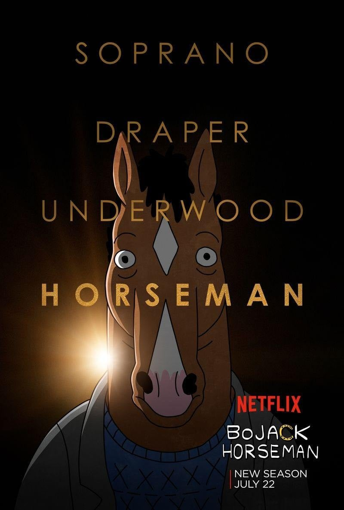
8.0「马男波杰克3」（2016）是一部TV，类型包括搞笑、日常，评分8.0，在本站出现在5份片单中，例如高分美漫与动画电影、高分TV动画推荐、高分治愈系动漫推荐。页面只做片单对照，不提供播放。《一代骄马》获得巨大成功，波杰克终于找回感觉，然而说到私人生活，则处处一塌糊涂。
#71探险活宝 第七季
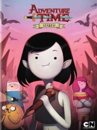
8.0「探险活宝 第七季」（2015）是一部TV，类型包括搞笑、百合、日常，评分8.0，在本站出现在6份片单中，例如高分美漫与动画电影、高分治愈系动漫推荐、高分奇幻冒险动漫。页面只做片单对照，不提供播放。探险活宝 第七季。2015。搞笑、百合、日常。
#72飞出个未来 第7季
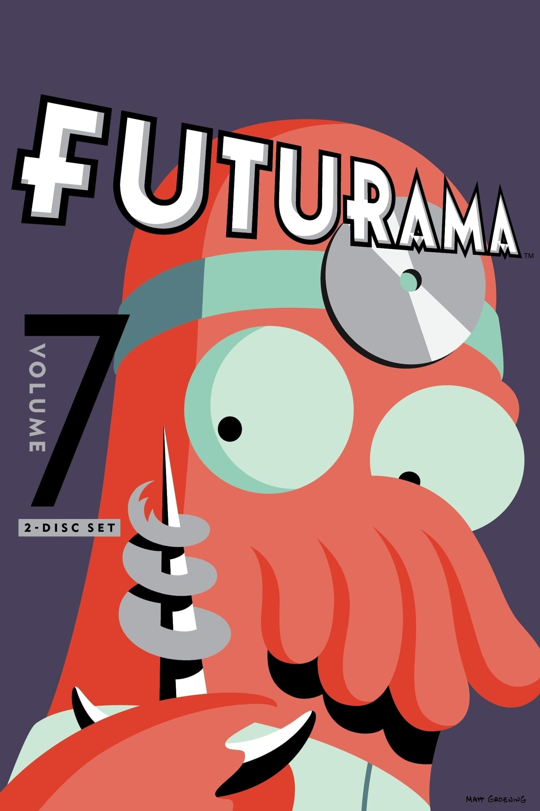
8.0「飞出个未来 第7季」（2012）是一部TV，类型包括科幻、搞笑，评分8.0，在本站出现在4份片单中，例如高分美漫与动画电影、高分科幻动漫推荐、必看搞笑动漫。页面只做片单对照，不提供播放。The new season will consist of 26 episodes, split into two parts consisting of 13 episodes. The first 13 episodes will b。
#73老鼠在曼哈顿
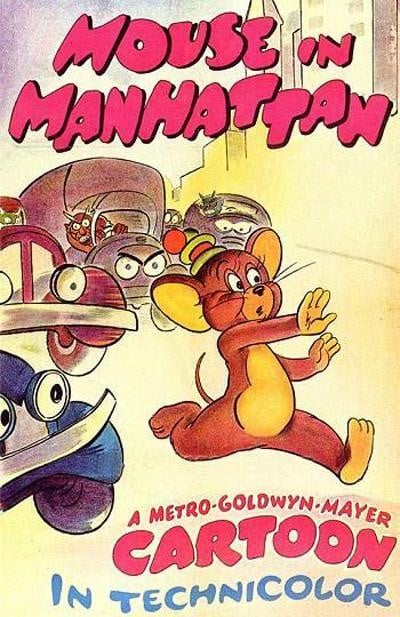
8.0「老鼠在曼哈顿」（1945）是一部剧场版，类型包括搞笑，评分8.0，在本站出现在5份片单中，例如高分美漫与动画电影、高分动画剧场版推荐、必看搞笑动漫。页面只做片单对照，不提供播放。夜深人静，温暖的乡间小屋。汤姆安然地窝在墙角熟睡，而小老鼠杰瑞却在奋笔疾书。他似乎厌倦了乡村无聊的生活，于是写信告诉汤姆，自己要去大城市闯荡，开拓视野。随着咣咣作响的火车，杰瑞来到了曼哈顿。帝国大厦的雄伟以及车水马龙的喧嚣都令他兴奋不已。他。
#74辉夜大小姐想让我告白?～天才们的恋爱头脑战～
「辉夜大小姐想让我告白?～天才们的恋爱头脑战～」（2020）是一部TV，由畠山守(小俣真一)执导，制作A-1 Pictures，类型包括恋爱、搞笑、校园，评分7.9，在本站出现在6份片单中，例如高分恋爱动漫推荐、高分治愈系动漫推荐、高分校园动漫推荐。页面只做片单对照，不提供播放。人才云集的精英校·秀知院学园，在该校的学生会相遇的副会长·四宫辉夜与学生会长·白银御行。 无论任何人都认为十分般配的这两位天才，本以为很快就会喜结良缘，但碍于过高的自尊心而仍然未能告白！ “如何让对方告白”在这样的恋爱头脑战中穷尽智略的两人。
#75男子高中生的日常
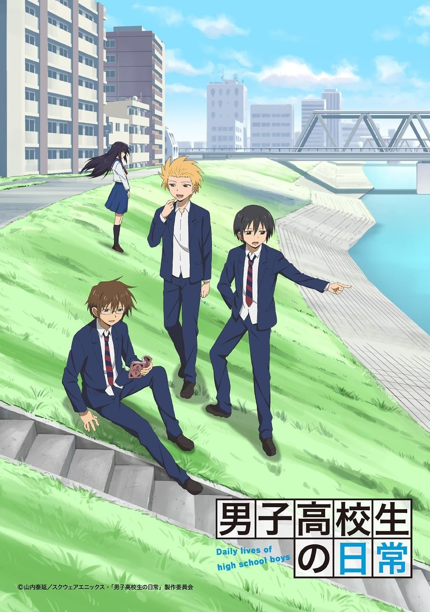
7.9「男子高中生的日常」（2012）是一部TV，由高松信司执导，制作Sunrise，类型包括搞笑、日常、校园，评分7.9，在本站出现在6份片单中，例如高分治愈系动漫推荐、高分校园动漫推荐、高分奇幻冒险动漫。页面只做片单对照，不提供播放。原作为山內泰延连载于《ガンガンONLINE》的漫画，是描写男子高中生的日常生活的轻喜剧作品。 在一个普通的城市里，一帮普通的男子高中生过着普通的日常生活。想像着机动战士和冒险故事，放学后交女朋友的方法，对女生的裙子充满幻想，在家讲恐怖鬼故事。
#76碧蓝之海
「碧蓝之海」（2018）是一部TV，由高松信司执导，制作ゼロジー，类型包括搞笑、日常、校园，评分7.9，在本站出现在6份片单中，例如高分恋爱动漫推荐、高分治愈系动漫推荐、高分校园动漫推荐。页面只做片单对照，不提供播放。北原伊织升入大学后，开始寄住在伊豆的叔父所经营的潜水用具店“Grand Blue”。传入耳中的波涛声、炽烈照射的太阳、开始一起生活的可爱表姐妹……青春的大学生活！ 这样的伊织所面临的却是——除了野球拳以外的猜拳一概不知的强壮男人们！！ 刚一。
#77人类衰退之后
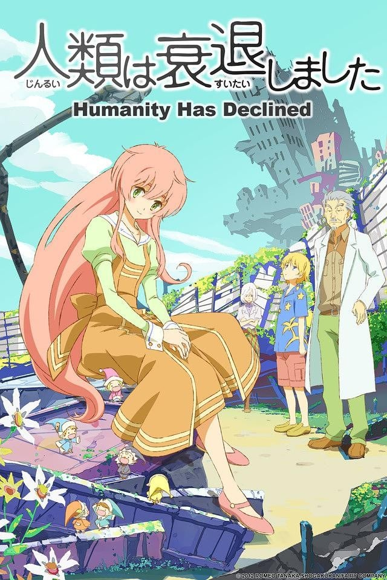
7.9「人类衰退之后」（2012）是一部TV，由岸誠二执导，制作AIC ASTA，类型包括治愈、奇幻、日常，评分7.9，在本站出现在5份片单中，例如高分治愈系动漫推荐、高分奇幻冒险动漫、必看搞笑动漫。页面只做片单对照，不提供播放。世界的人口因为不明原因而急降，逐渐步出历史的舞台，取而代之的是一种平均身高只有10公分、三头身的妖精。妖精的平均身高只有10公分，三头身的妖精们却拥有高度的智慧，而且非常喜欢吃糖果点心。主人公作为最后一届的毕业生毕业之后就回到故乡樟树之里去。
#78咒术回战 死灭回游 前篇
「咒术回战 死灭回游 前篇」（2026）是一部TV，由御所園翔太执导，制作MAPPA，类型包括战斗、奇幻、热血，评分7.9，在本站出现在7份片单中，例如2026年新番总表、高分热血动漫推荐、高分奇幻冒险动漫。页面只做片单对照，不提供播放。2018年10月31日。在万圣节热闹的涩谷车站周边，突然降下「帐」，大量一般民众被困其中。独自闯入的是现代最强的咒术师──五条悟。虎杖悠仁等众多咒术师齐聚涩谷，前所未有的大规模咒术对决「涩谷事变」正式开幕！而战斗最终导向史上最恶劣的术师──。
#79失忆投捕
「失忆投捕」（2024）是一部TV，由中園真登执导，制作MAPPA，类型包括运动、搞笑、校园，评分7.9，在本站出现在6份片单中，例如高分热血动漫推荐、高分校园动漫推荐、必看搞笑动漫。页面只做片单对照，不提供播放。在初中球界驰名的强投·清峰叶流火，与冷静捕手“智将”·要圭，这对投捕搭档。收到了来自全国各强校的热情邀约，但他们却选择进入在棒球界默默无名的学校、东京都立小手指高中就读。而且圭还因为失忆导致失去了对棒球的一切知识。 就在这时，过去因被他们两。
#80高分少女
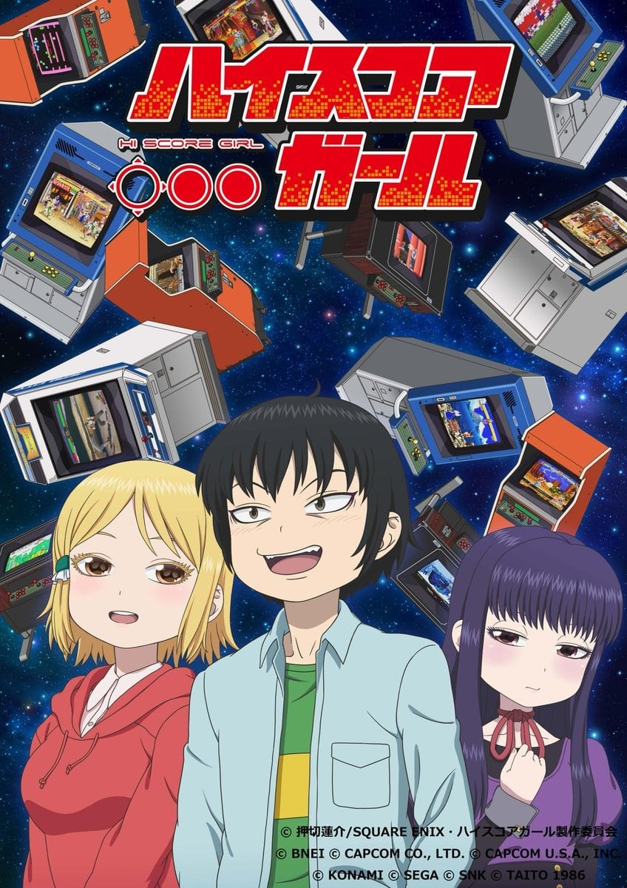
7.9「高分少女」（2018）是一部TV，由山川吉樹执导，制作J.C.STAFF，类型包括恋爱、搞笑、校园，评分7.9，在本站出现在7份片单中，例如高分恋爱动漫推荐、高分治愈系动漫推荐、高分校园动漫推荐。页面只做片单对照，不提供播放。去和比我更强的GIRL相见——。 “多边形”？那是啥？能吃吗？就在这种曾是2D全盛期的古早格斗游戏热潮到来的1991年。 在不良、阿宅、上班族蔓延的市郊游戏中心，她凛然地坐在那里——。 通过主人公春雄描绘的“90年代街机恋爱喜剧”！。
#81幸运星 OVA
 7.9
7.9「幸运星 OVA」（2008）是一部OVA/WEB，由武本康弘执导，制作京都动画，类型包括搞笑、日常、校园，评分7.9，在本站出现在8份片单中，例如高分OVA与WEB动画、高分治愈系动漫推荐、高分校园动漫推荐。页面只做片单对照，不提供播放。2007年的热门动画《幸运星》以OVA形式推出了续篇。御宅族女孩泉此方、性格迥异的柊家姐妹、经常考虑问题不周到的高良美幸，四位女孩又要开始新的故事了。 小狗Cherry的奇怪举动搞得大家哭笑不得；与老师一起玩网络游戏引出了话题大讨论；姐姐柊。
#82银之匙 Silver Spoon
「银之匙 Silver Spoon」（2013）是一部TV，由伊藤智彦执导，制作A-1 Pictures，类型包括治愈、搞笑、校园，评分7.9，在本站出现在5份片单中，例如高分治愈系动漫推荐、高分校园动漫推荐、必看搞笑动漫。页面只做片单对照，不提供播放。大虾夷农业高等学校（通称：虾夷农高）是一所坐落于北海道的农业高中，校内学生多为以将从事农业当作目标的农家子女。这所拥有在全日本所有高中中最多的占地面积，被北海道壮丽的大自然和乡村风情环抱的虾夷农高，在新学年里迎来了一位特殊的学生——八轩勇吾。
#83太空丹迪
「太空丹迪」（2014）是一部TV，由夏目真悟执导，制作BONES，类型包括科幻、搞笑，评分7.9，在本站出现在5份片单中，例如高分科幻动漫推荐、高分奇幻冒险动漫、必看搞笑动漫。页面只做片单对照，不提供播放。宇宙浪子是宇宙中一位叫作丹迪的人。身为宇宙猎人的他积极寻找未知的外星物种、因此与搭档旧型清扫机器人QT以及长得像猫的外星人阿喵一起在宇宙中到处冒险，并又为此卷入一场即将发生的阴谋之中。
#84银魂剧场版 完结篇 万事屋永不落
「银魂剧场版 完结篇 万事屋永不落」（2013）是一部剧场版，由藤田陽一执导，制作Sunrise，类型包括搞笑、热血、战斗，评分7.9，在本站出现在6份片单中，例如高分动画剧场版推荐、高分热血动漫推荐、必看搞笑动漫。页面只做片单对照，不提供播放。由于某种力量，让银时突然来到自己所不存在的未来世界。彷徨无助的他，此时邂逅了两位年青人：其中一个青年戴着眼镜，抽出他别在腰间的洞爷湖木刀，将闹事者一举制伏；另一个则是与银时服装相似，带着超大型犬的美女，这两人竟然就是成长后的新八与神乐！更让。
#85高分少女 EXTRA STAGE
 7.9
7.9「高分少女 EXTRA STAGE」（2019）是一部OVA/WEB，由山川吉樹执导，制作J.C.STAFF，类型包括恋爱、搞笑、校园，评分7.9，在本站出现在8份片单中，例如高分OVA与WEB动画、高分恋爱动漫推荐、高分治愈系动漫推荐。页面只做片单对照，不提供播放。一切都是为了重要的人…… 为了让“此刻”闪耀，不是用语言而是用拳头说话。 青春的游戏三番胜负。 来吧，堂堂正正地一决胜负吧！。
#86×××HOLiC◆继
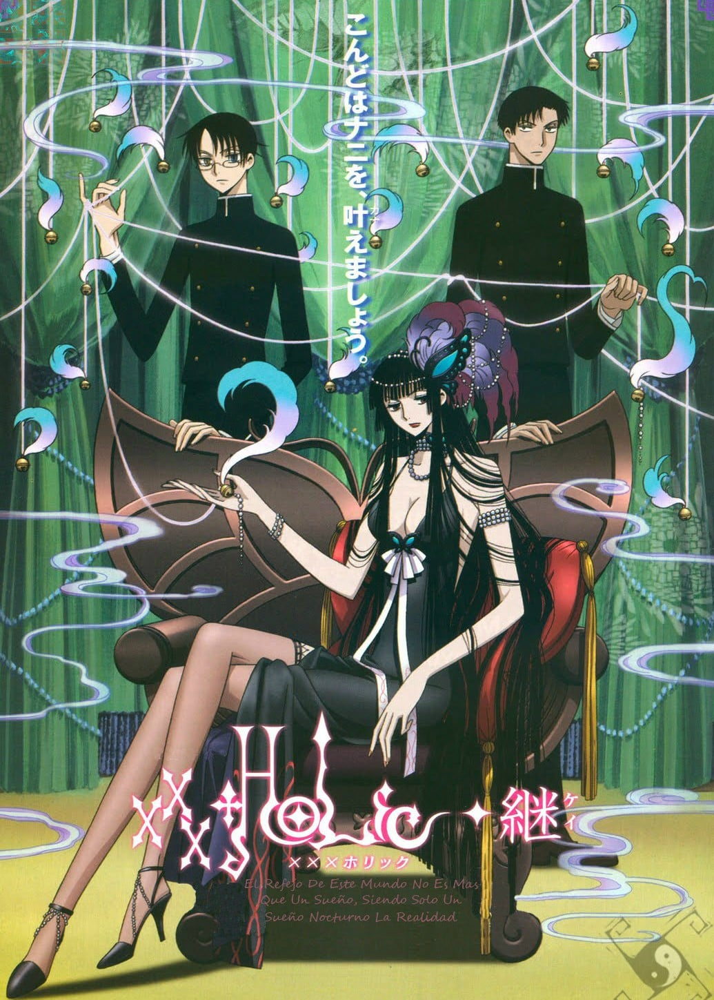
7.9「×××HOLiC◆继」（2008）是一部TV，由水島努执导，制作Production I.G，类型包括奇幻、治愈、日常，评分7.9，在本站出现在6份片单中，例如高分治愈系动漫推荐、高分异世界动漫推荐、高分奇幻冒险动漫。页面只做片单对照，不提供播放。高中生，四月一日君寻在偶然的机缘下闯入闻名异世界的次元魔女，侑子的魔法商店。四月一日在此许下要剔除自身灵能力的愿望 ，因此变成魔法商店的长期工读生，而围绕在他身边的同学小葵、百目鬼也同样是特殊能力者。在这之后，分散在其它异世界国家的小樱，小。
#87笑园漫画大王
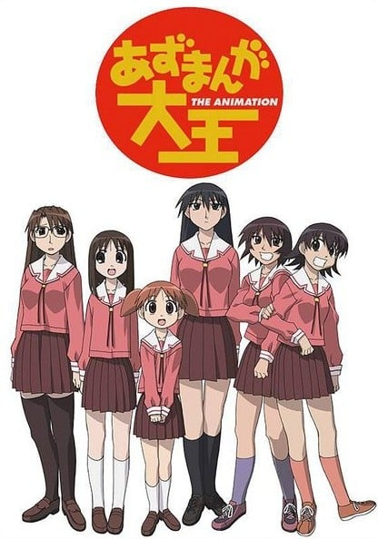
7.9「笑园漫画大王」（2002）是一部TV，由錦織博执导，制作J.C.STAFF，类型包括搞笑、校园、日常，评分7.9，在本站出现在5份片单中，例如高分治愈系动漫推荐、高分校园动漫推荐、必看搞笑动漫。页面只做片单对照，不提供播放。某天，班上转来了两个学生，一个是跳级生美滨千代，她拥有着和可爱外表完全不匹配的天才级智商，以及同智商完全不匹配的情商。另一个叫春日步，她倒是表里如一的迟钝和呆萌。很快，她们便和同学们打成了一片。泷野智人称阿智，争强好斗的同时，却有着意外的单。
#88交响情人梦
「交响情人梦」（2007）是一部TV，由カサヰケンイチ执导，制作J.C.STAFF，类型包括音乐、校园、恋爱，评分7.9，在本站出现在5份片单中，例如高分恋爱动漫推荐、高分校园动漫推荐、必看搞笑动漫。页面只做片单对照，不提供播放。出身于音乐世家的千秋真一少年时代游历欧洲的音乐之都接受音乐熏陶，一次偶然的机会结识了著名的指挥家塞巴斯蒂安·维埃拉，因为父母离婚随即回到日本。十年后长大成人的千秋成了桃桃丘音乐学院大四的学生。心高气傲的千秋一直不把身边的人放在眼里，认为自己。
#89佐贺偶像是传奇 梦想银河乐园
「佐贺偶像是传奇 梦想银河乐园」（2025）是一部剧场版，由佐藤威・石田貴史执导，制作MAPPA，类型包括搞笑、音乐、战斗，评分7.9，在本站出现在9份片单中，例如2025年秋季新番推荐、高分动画剧场版推荐、高分热血动漫推荐。页面只做片单对照，不提供播放。佐賀の存亡は、ゾンビィのアイドル＜フランシュシュ＞に託されたー。 謎のプロデューサー巽幸太郎により復活させられたゾンビたちは佐賀のご当地アイドル＜フランシュシュ＞として活動していた。2025年、佐賀万博で盛り上がる地球。万博のアンバサダーと。
#90麻辣教师GTO
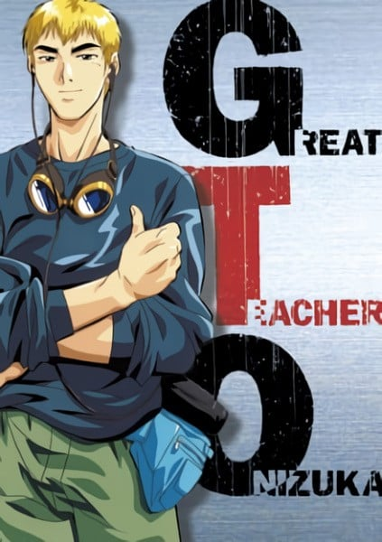
7.9「麻辣教师GTO」（1999）是一部TV，由阿部記之执导，制作ぴえろ，类型包括热血、搞笑、校园，评分7.9，在本站出现在5份片单中，例如高分热血动漫推荐、高分校园动漫推荐、必看搞笑动漫。页面只做片单对照，不提供播放。鬼塚英吉是前飞车党员，为了想要接近高中女生而决定参加代课教师的面试，训导主任内山田认为他不适合当老师，只是想接近高中女生而已，所以不打算任用他，随后又有两位学生想要找内山田算帐，内山田叫鬼冢把那两位人渣制伏就让他当老师，但是鬼冢却不满内山田。
#91悠哉日常大王 Nonstop OAD
 7.9
7.9「悠哉日常大王 Nonstop OAD」（2022）是一部OVA/WEB，由川面真也执导，制作SILVER LINK.，类型包括日常、治愈、百合，评分7.9，在本站出现在6份片单中，例如高分OVA与WEB动画、高分治愈系动漫推荐、必看搞笑动漫。页面只做片单对照，不提供播放。TVアニメ3期の新作OADを収録した豪華特装版が登場！ 特装版はアニメ未収録の原作エピソードとオリジナルストーリーからなる 『のんのんびより のんすとっぷ』の第13話を収録したBlu-rayディスクを同梱！。
#92交响情人梦Finale
「交响情人梦Finale」（2010）是一部TV，由今千秋执导，制作J.C.STAFF，类型包括音乐、恋爱、搞笑，评分7.9，在本站出现在5份片单中，例如高分恋爱动漫推荐、高分治愈系动漫推荐、必看搞笑动漫。页面只做片单对照，不提供播放。二之宫知子创作的漫画作品「交响情人梦」已于10月完满落幕，这部以古典音乐为題材的漫画，因丰富动人的剧情而大受好评，并在全日本掀起了一股古典音乐热潮。在连载的7年间曾被改编成一部电视剧、两部TV动画，随着漫画的完结，相关制作方也决定推出第3季。
#93机动战舰抚子号
「机动战舰抚子号」（1996）是一部TV，由佐藤竜雄执导，制作XEBEC，类型包括科幻、机战、搞笑，评分7.9，在本站出现在5份片单中，例如高分热血动漫推荐、高分科幻动漫推荐、必看搞笑动漫。页面只做片单对照，不提供播放。公元2195年，谜一般的兵器群“木星蜥蜴”突然出现，并以压倒性的战斗力占领了火星的殖民地以及月球的背面。地球的各地均有被称为“郁金香”的母舰降落。与此同时，民间企业ネルガル重工NERGAL完成了实验战舰ND-001ナデシコNadesico的。
#94鲁邦三世 卡里奥斯特罗之城
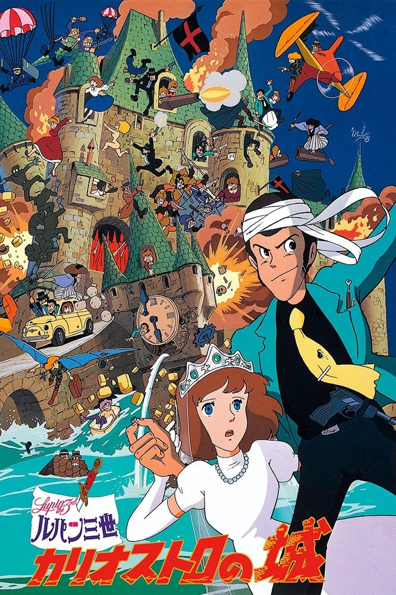
7.9「鲁邦三世 卡里奥斯特罗之城」（1979）是一部剧场版，由宫崎骏执导，类型包括冒险、喜剧、搞笑，评分7.9，在本站出现在6份片单中，例如高分动画剧场版推荐、高分奇幻冒险动漫、必看搞笑动漫。页面只做片单对照，不提供播放。世界闻名的怪盗鲁邦三世及其搭档次元大介，成功从摩纳哥国营赌场的金库中盗走一笔钜款，并甩开追兵乘车逃走。两人在车内虽然可说是被埋在钞票堆里，但眼尖的鲁邦却发现，这是史上制作最精巧的梦幻伪钞“哥德钞”。在鲁邦“不偷假货”的原则下，他将哥德钞毫不。
#95机动战舰抚子号 暗黑王子
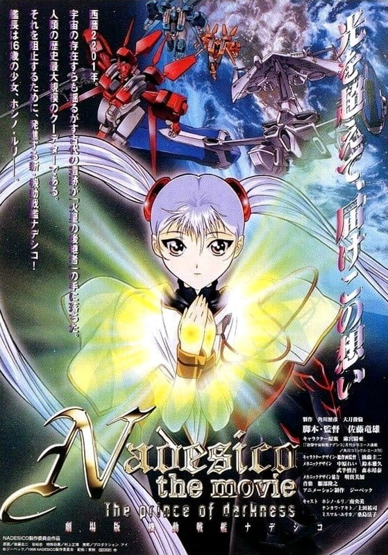
7.9「机动战舰抚子号 暗黑王子」（1998）是一部剧场版，由佐藤竜雄执导，制作XEBEC，类型包括科幻、机战、战斗，评分7.9，在本站出现在7份片单中，例如高分动画剧场版推荐、高分热血动漫推荐、高分科幻动漫推荐。页面只做片单对照，不提供播放。地球和木连结盟后，宇宙总算恢复和平。天河明人和御统由利加终于结婚了，但是在新婚旅行中，他们因乘坐的飞机失事爆炸而遇难……然后，三年过去了。八号殖民地「白雪公主」被人袭击了，以星野琉璃为舰长的Nadesico B被委派作出调查。但是琉璃与Na。
#96天体战士
「天体战士」（2008）是一部TV，由岸誠二执导，制作AIC ASTA，类型包括喜剧、搞笑、治愈，评分7.9，在本站出现在4份片单中，例如高分治愈系动漫推荐、必看搞笑动漫、漫画改编动漫推荐。页面只做片单对照，不提供播放。《天体战士》，一部很适合拍特摄片的漫画，一个很白、很无聊、很猥琐、很脑残的故事……但是，依然有人很喜欢这个故事，于是也就当然有人敢毅然决定，要拍成动画片来非礼观众的眼球，荼毒读者的大脑了。 故事发生在神奈川县川崎市，企图征服世界的恶之怪人军。
#97秀逗魔导士NEXT
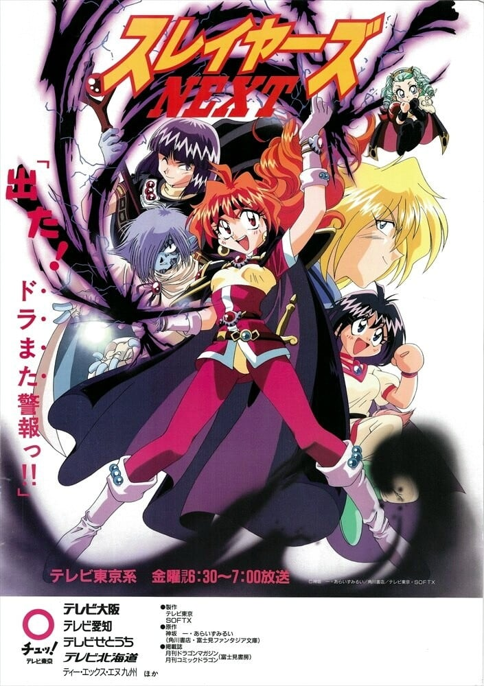
7.9「秀逗魔导士NEXT」（1996）是一部TV，由渡部高志执导，制作イージー・フイルム，类型包括搞笑、奇幻、战斗，评分7.9，在本站出现在5份片单中，例如高分热血动漫推荐、高分奇幻冒险动漫、必看搞笑动漫。页面只做片单对照，不提供播放。第二部(NEXT)讲述了人类与魔族的关系，可是说已经开始进入《秀逗魔导士》的中心主题!在这一部里所谓的魔族才真正的出现了!首先是魔族的神秘官杰洛士，他的出现可以说是引导出下面一系列故事的关键人物，也是带领主角们与魔族的关系越来越深的人物所在。
#98鲁邦三世
「鲁邦三世」（2015）是一部TV，由矢野雄一郎执导，制作Telecom Animation Film，类型包括搞笑、冒险、战斗，评分7.9，在本站出现在5份片单中，例如高分热血动漫推荐、高分奇幻冒险动漫、必看搞笑动漫。页面只做片单对照，不提供播放。《鲁邦三世》时隔30年的TV动画正统第四期，舞台是意大利和圣马力诺共和国。本片首次采用了在意大利开始先行放送之后日本再进行放送的形式：意大利RTI电视台从2015年8月30日开始放送，而日本NTV电视台从2015年10月1日开始放送。 国际。
#99祖先大人万万岁
 7.9
7.9「祖先大人万万岁」（1989）是一部OVA/WEB，由押井守执导，制作ぴえろ，类型包括家庭、奇幻、科幻，评分7.9，在本站出现在6份片单中，例如高分OVA与WEB动画、高分科幻动漫推荐、高分奇幻冒险动漫。页面只做片单对照，不提供播放。四方一家住在东京近郊的一幢普通的高层公寓里。无所事事且发福的上班族父亲四方田甲子国（よもた きねくに）42歳、厌恶与邻居社交的母亲四方田多美子（よもた たみこ）38歳、以及正处于青春期毛躁的儿子四方田犬丸（よもた いぬまる）17歳。生活中一。
#100天体战士 第2期
「天体战士 第2期」（2009）是一部TV，由松本剛彦执导，制作AIC ASTA，类型包括搞笑、治愈、日常，评分7.9，在本站出现在4份片单中，例如高分治愈系动漫推荐、必看搞笑动漫、漫画改编动漫推荐。页面只做片单对照，不提供播放。洼田诚创作的既囧又搞笑的漫画「天体战士」，故事讲述了一个怪人组织的地区指挥官班普将军，率领着超有礼貌邪恶组织弗罗夏姆，为了消灭敌人天体战士桑雷德，不断派遣旗下的怪人军团接二连三地向天体战士挑战……第2期将在秋季开播，就让本作囧无止境吧！！。
#101疯狂约会美丽都
「疯狂约会美丽都」（2003）是一部剧场版，由Sylvain Chomet执导，类型包括喜剧、治愈、剧情，评分7.9，在本站出现在7份片单中，例如高分美漫与动画电影、高分动画剧场版推荐、高分治愈系动漫推荐。页面只做片单对照，不提供播放。查宾是一个孤独的孩子，从小失去双亲的他每天跟苏沙婆婆相依为命。男孩有点自闭，喜欢跟小狗布鲁诺说话，喜欢独自骑单车。美丽都三姊妹的歌声陪伴他们过着平静日子。终于，婆婆看出了查宾单车方面的天分，要把他培养成才，于是风雨不改的陪孩子训练。 查宾终。
#102战国鬼才传
「战国鬼才传」（2011）是一部TV，由真下耕一执导，制作BeeTrain，类型包括历史、剧情、战争，评分7.9，在本站出现在3份片单中，例如必看搞笑动漫、漫画改编动漫推荐、高分动漫排行榜。页面只做片单对照，不提供播放。群雄割据的战国时代，主角古田左介是织田信长的家臣，身为武士与雅士的他，从天才信长之处学到了壮大的世界观，本身追求出人头地的机会，但在茶圣千宗易处学得了深远的精神之后，他便变成被茶道与物欲夺去灵魂的男人。 山田芳裕以搞笑的写实方法描绘古田左介。
#103马男波杰克2
 7.9
7.9「马男波杰克2」（2015）是一部OVA/WEB，类型包括搞笑、剧情、日常，评分7.9，在本站出现在5份片单中，例如高分美漫与动画电影、高分OVA与WEB动画、高分治愈系动漫推荐。页面只做片单对照，不提供播放。波杰克的自传大获成功，并成为了热门电影主角，他已经准备好重新发力，迎接自己的事业和生活的第二春了。当然了，前提是他自己不要乱搞。
#104南方公园 第16季
「南方公园 第16季」（2012）是一部TV，类型包括搞笑，评分7.9，在本站出现在3份片单中，例如高分美漫与动画电影、必看搞笑动漫、原创动画推荐。页面只做片单对照，不提供播放。南方公园 第16季。2012。搞笑。
#105南方公园 第15季
「南方公园 第15季」（2011）是一部TV，类型包括搞笑，评分7.9，在本站出现在3份片单中，例如高分美漫与动画电影、必看搞笑动漫、原创动画推荐。页面只做片单对照，不提供播放。《南方公园/South Park》是美国喜剧中心(Comedy Central)制作的一部动画剧集，由Matt Stone和Trey Parker创作,讲述的是美国科罗拉多州一个叫南方公园的小镇上四个8岁的男孩和其他镇民疯狂的生活。此剧针砭。
#106飞出个未来 第1季
「飞出个未来 第1季」（1999）是一部TV，类型包括科幻、搞笑，评分7.9，在本站出现在5份片单中，例如高分美漫与动画电影、高分科幻动漫推荐、高分奇幻冒险动漫。页面只做片单对照，不提供播放。该剧讲述了 Fry，一位20世纪的年轻人，在30世纪的冒险经历。 Phillip Fry是一个纽约市的25岁的比萨饼快递员，他的生活就是每天四处奔波.1999年的12月31日他偶然的被冰冻了起来, 当他醒过来时已是1000年以后，他也有了一。
#107南方公园 第17季
「南方公园 第17季」（2013）是一部TV，类型包括搞笑，评分7.9，在本站出现在3份片单中，例如高分美漫与动画电影、必看搞笑动漫、原创动画推荐。页面只做片单对照，不提供播放。The season will consist of 10 episodes, as Parker and Stone decided to scale back and have one uninterrupted season, as 。
#108大～集合！小魔女DoReMi
「大～集合！小魔女DoReMi」（2001）是一部TV，类型包括搞笑、治愈、校园，评分7.9，在本站出现在5份片单中，例如高分治愈系动漫推荐、高分校园动漫推荐、高分奇幻冒险动漫。页面只做片单对照，不提供播放。升上五年级后，被取消魔女资格的DoReMi等人，还是一直在魔法堂花店工作。另一方面，女王向12位元老院成员说明，尽管DoReMi等人的水晶球破碎了，但考量到她们的巨大贡献，希望让四人恢复为魔女身份。此事在元老院中发生激辩，虽然有魔女哈特等人。
#109马男波杰克4
「马男波杰克4」（2017）是一部TV，类型包括搞笑、日常，评分7.9，在本站出现在4份片单中，例如高分美漫与动画电影、高分治愈系动漫推荐、必看搞笑动漫。页面只做片单对照，不提供播放。在波杰克与自我厌恶和失败较劲的同时，托德正帮助花生酱先生竞选加州州长，而戴安在一个美臀博客找到了工作。
#110大雄与奶奶的回忆
「大雄与奶奶的回忆」（2000）是一部剧场版，类型包括治愈、科幻、喜剧，评分7.9，在本站出现在6份片单中，例如高分动画剧场版推荐、高分治愈系动漫推荐、高分科幻动漫推荐。页面只做片单对照，不提供播放。ゴミ捨て場に、幼いころにお気に入りだったクマのぬいぐるみ（以下、クマちゃん）が出されているのをたまたま見つけたのび太。つぎはぎだらけな上に今はボロボロのクマちゃんをのび太は持ち帰り、幼稚園児のときに死別したおばあちゃんがぬいぐるみを繕ってく。
#111马男波杰克5
「马男波杰克5」（2018）是一部TV，类型包括搞笑、日常、喜剧，评分7.9，在本站出现在4份片单中，例如高分美漫与动画电影、高分治愈系动漫推荐、必看搞笑动漫。页面只做片单对照，不提供播放。波杰克重返荧幕，主演凯洛琳公主制作的新侦探剧集《费尔伯特》。但他心中的恶魔也随之倾巢出动。
#112探险活宝 第三季
「探险活宝 第三季」（2011）是一部TV，类型包括奇幻、冒险、搞笑，评分7.9，在本站出现在4份片单中，例如高分美漫与动画电影、高分奇幻冒险动漫、必看搞笑动漫。页面只做片单对照，不提供播放。The third season of American animated television series Adventure Time, created by Pendleton Ward, originally aired on C。
#113探险活宝 第四季
「探险活宝 第四季」（2012）是一部TV，类型包括冒险、搞笑、奇幻，评分7.9，在本站出现在4份片单中，例如高分美漫与动画电影、高分奇幻冒险动漫、必看搞笑动漫。页面只做片单对照，不提供播放。The fourth season of the American animated television series Adventure Time, created by Pendleton Ward, originally aired。
#114探险活宝 第五季
「探险活宝 第五季」（2012）是一部TV，类型包括奇幻、冒险、搞笑，评分7.9，在本站出现在4份片单中，例如高分美漫与动画电影、高分奇幻冒险动漫、必看搞笑动漫。页面只做片单对照，不提供播放。Finn and Jake chase the Lich through a dimensional portal where they meet Prismo, who tells them that the Lich wished fo。
#115扬基都德鼠
「扬基都德鼠」（1943）是一部剧场版，由约瑟夫·巴伯拉执导，类型包括搞笑，评分7.9，在本站出现在5份片单中，例如高分美漫与动画电影、高分动画剧场版推荐、必看搞笑动漫。页面只做片单对照，不提供播放。这一天，汤姆和杰瑞之间爆发了一场声势浩大的大战。汤姆一路追逐，将小老鼠赶进了地下室的洞中。杰瑞躲在掩体后，自然不会放过死守洞口的敌人，于是用老鼠夹子发射了一枚西红柿，跟着又爬上制高点丢下一大鸡蛋。汤姆被突然到来的袭击打得措手不及，他四处逃窜。
#116飞出个未来 第4季
「飞出个未来 第4季」（2002）是一部TV，类型包括科幻、搞笑，评分7.9，在本站出现在5份片单中，例如高分美漫与动画电影、高分科幻动漫推荐、高分奇幻冒险动漫。页面只做片单对照，不提供播放。该剧讲述了 Fry，一位20世纪的年轻人在30世纪的冒险经历。Phillip Fry是一个纽约市的25岁的比萨饼快递员，他的生活就是每天四处奔波，1999年12月21日他偶然的被冰冻了起来, 当他醒过来时已是1000年以后，他也有了一个开始。
#117辉夜大小姐想让我告白～天才们的恋爱头脑战～
「辉夜大小姐想让我告白～天才们的恋爱头脑战～」（2019）是一部TV，由畠山守(小俣真一)执导，制作A-1 Pictures，类型包括恋爱、搞笑、校园，评分7.8，在本站出现在6份片单中，例如高分恋爱动漫推荐、高分治愈系动漫推荐、高分校园动漫推荐。页面只做片单对照，不提供播放。家庭背景与人品都很棒！！一大群有前途的秀才所聚集的秀知院学园！！在那里的学生会相遇的副会长·四宫辉夜与会长·白银御行原本应该是彼此受到了对方吸引…但想不到都过半年了却仍然什么事情也没发生！！最麻烦的是这两个自尊心超强、无法坦率的家伙，居然开。
#118游戏人生
「游戏人生」（2014）是一部TV，由いしづかあつこ执导，类型包括异世界、奇幻、搞笑，评分7.8，在本站出现在6份片单中，例如高分热血动漫推荐、高分异世界动漫推荐、高分奇幻冒险动漫。页面只做片单对照，不提供播放。“听说游戏玩家兄妹要征服幻想世界”空与白既是尼特族又是家里蹲，但是在网路上却是被奉为都市传说的天才游戏玩家兄妹。称世界为「烂游戏」的两人，某一天被自称是“神”的少年召唤至异世界，那是个战争为神所禁止，“游戏决定一切”的世界──没错，甚至连国。
#119月刊少女野崎君
「月刊少女野崎君」（2014）是一部TV，由山﨑みつえ执导，类型包括搞笑、恋爱、校园，评分7.8，在本站出现在7份片单中，例如高分恋爱动漫推荐、高分治愈系动漫推荐、高分校园动漫推荐。页面只做片单对照，不提供播放。高中女生佐仓千代好不容易提起勇气向同年级的野崎梅太郎告白，得到的却是野崎的亲笔签名，和“要不要来我家？”的邀请。佐仓虽然对意料之外的展开感到困惑，却还是带着期待来到野崎家，没想到等着她的却是漫画原稿，不知不觉间就顺着野崎的指示开始进行涂黑作。
#120迷宫饭
「迷宫饭」（2024）是一部TV，由宮島善博执导，制作TRIGGER，类型包括奇幻、冒险、搞笑，评分7.8，在本站出现在5份片单中，例如高分异世界动漫推荐、高分奇幻冒险动漫、必看搞笑动漫。页面只做片单对照，不提供播放。迷宫饭，不是吃就是被吃… 莱欧斯是一名冒险者，在一次探险中，迷宫深处的赤龙吃掉了他的妹妹，他侥幸逃过一命传送回到了地面。莱欧斯想要立马重新挑战迷宫，营救妹妹，但是钱和食物都留在了迷宫深处… 想到妹妹随时都有可能会被赤龙消化，导致无法复活，莱。
#121灵能百分百
「灵能百分百」（2016）是一部TV，由立川譲执导，制作BONES，类型包括搞笑、热血、战斗，评分7.8，在本站出现在5份片单中，例如高分热血动漫推荐、高分奇幻冒险动漫、必看搞笑动漫。页面只做片单对照，不提供播放。平凡的中学二年级少年影山茂夫，因其微弱的存在感与名字茂夫的谐音被周遭人称为龙套（モブ），但不起眼的他其实是强大的天生超能力者。历经每一次的成长，龙套开始认为自己的超能力是危险的存在，为了不让超能力失控，龙套无意识的压抑著情感。虽然只想平凡的。
#122我心里危险的东西
「我心里危险的东西」（2023）是一部TV，由赤城博昭执导，制作シンエイ動画，类型包括恋爱、校园、日常，评分7.8，在本站出现在7份片单中，例如高分恋爱动漫推荐、高分治愈系动漫推荐、高分校园动漫推荐。页面只做片单对照，不提供播放。有着重度中二病的阴沉少年市川京太郎，因为很看不惯位于学校金字塔顶端的阳角美少女山田杏奈，每天都在妄想着要怎么结束掉她的性命。没想到在一次偶然情况下，京太郎撞见了杏奈不为人知的一面，爱吃零食的她常躲进京太郎的圣地图书室偷吃零食，就这样图书室变。
#123佐贺偶像是传奇
「佐贺偶像是传奇」（2018）是一部TV，由境宗久执导，类型包括搞笑、音乐、百合，评分7.8，在本站出现在5份片单中，例如高分治愈系动漫推荐、必看搞笑动漫、高分女性向动漫。页面只做片单对照，不提供播放。いつもの朝。いつもの音楽。いつもの自分。 7人の少女たちの安寧は、突如崩壊する。 死して蠢く、ゾンビによって…… 否応なく踏み込んだ世界、そこは“最高×最悪のゾンビワールド” 少女たちの願いは、たった一つ。 「私たち、生きたい。」 これは、。
#124相合之物
「相合之物」（2022）是一部TV，由追崎史敏执导，制作エンカレッジフィルムズ（鵲），类型包括治愈、日常、搞笑，评分7.8，在本站出现在5份片单中，例如高分恋爱动漫推荐、高分治愈系动漫推荐、必看搞笑动漫。页面只做片单对照，不提供播放。为了追寻梦想来到东京的纳野和，得知了父亲住院的消息后，决定回到了阔别十年的老家，继承和式点心店·绿松。 但是店内已经有了另一位候补继承人：看板娘雪平一果，在纳野家一边寄居一边工作。 和被委以代替一果的父母的重任，但一果对曾经弃店的和怀有敌意。
#125佐贺偶像是传奇 复仇
「佐贺偶像是传奇 复仇」（2021）是一部TV，由境宗久执导，制作MAPPA，类型包括搞笑、音乐、治愈，评分7.8，在本站出现在6份片单中，例如高分治愈系动漫推荐、必看搞笑动漫、高分女性向动漫。页面只做片单对照，不提供播放。2018年10月、オリジナルTVアニメ「ゾンビランドサガ」の放送が深夜にひっそりと開始。 2019年、佐賀県凱旋LIVEで続篇の制作を発表したが、 今日まで沈黙を続けてきた。 そして、沈黙は破られ2021年4月オリジナルTVアニメ「ゾンビラ。
#126擅长捉弄的高木同学 第二季
「擅长捉弄的高木同学 第二季」（2019）是一部TV，由赤城博昭执导，类型包括恋爱、校园、日常，评分7.8，在本站出现在6份片单中，例如高分恋爱动漫推荐、高分治愈系动漫推荐、高分校园动漫推荐。页面只做片单对照，不提供播放。某所初中学校，男生西片总是被邻座的女生高木同学捉弄。他为了对此反击而用尽计策，却总是被高木同学看透。 季节轮回，西片升入2年级，这一次他是否能够顺利反击高木同学呢……？。
#127街角魔族 2丁目
「街角魔族 2丁目」（2022）是一部TV，由桜井弘明执导，类型包括百合、日常、搞笑，评分7.8，在本站出现在6份片单中，例如高分治愈系动漫推荐、高分奇幻冒险动漫、必看搞笑动漫。页面只做片单对照，不提供播放。大人気ご町内日常ファンタジーが帰ってくる！ 魔族の力に目覚めて以来、闇の一族の封印を解くため ポンコツながらも戦ってきた主人公・シャミ子。 ライバルだったはずの魔法少女・桃とは、なぜか協力関係になってしまい、 町から姿を消した魔法少女の謎を。
#128搞笑漫画日和
「搞笑漫画日和」（2005）是一部TV，由大地丙太郎执导，类型包括搞笑，评分7.8，在本站出现在3份片单中，例如必看搞笑动漫、漫画改编动漫推荐、高分动漫排行榜。页面只做片单对照，不提供播放。《搞笑漫画日和》是在《月刊少年JUMP》上连载的人气作品，由于该作的恶搞程度已经达到了某种无人能及的境界，因此受到日本众多动漫迷的追捧。 此作的恶搞对象通常都是些社会知名人物，比如圣德太子、松尾芭蕉等等，看到这些不仅我们想起当年那款恶搞世界。
#129有顶天家族
「有顶天家族」（2013）是一部TV，由吉原正行执导，制作P.A.WORKS，类型包括奇幻、治愈、日常，评分7.8，在本站出现在5份片单中，例如高分治愈系动漫推荐、高分奇幻冒险动漫、必看搞笑动漫。页面只做片单对照，不提供播放。作品讲述原狸猫一族名门下鸭家的家主被人类下火锅后，不中用的下鸭四兄弟与其老母撑起家道中落的下鸭家的故事。老大矢一郎个性认真，但一到紧要关头就手足无措；老二变身为青蛙，不肯出井底；老三最爱看好戏，喜欢恶作剧；老幺胆子小，变身总是忘了藏尾巴。不。
#130再见绝望先生
「再见绝望先生」（2007）是一部TV，由新房昭之执导，制作SHAFT，类型包括搞笑、校园、日常，评分7.8，在本站出现在5份片单中，例如高分治愈系动漫推荐、高分校园动漫推荐、必看搞笑动漫。页面只做片单对照，不提供播放。故事发生在一个问题班集体——2年へ组中，全班32个学生全部都曾经留过级，被喻为是“绝望的学生们”。 担任该班班主任老师的是一个名叫糸色望的青年男子。 11月4日出生，在家排行老四，戴眼镜，喜欢穿和服，所有的装扮全都是怀旧风，喜欢读书，酷爱太。
#131罗小黑战记
 7.8
7.8「罗小黑战记」（2011）是一部OVA/WEB，由木头(MTJJ)执导，制作寒木春华，类型包括战斗、治愈、奇幻，评分7.8，在本站出现在9份片单中，例如高分国漫推荐、高分OVA与WEB动画、高分热血动漫推荐。页面只做片单对照，不提供播放。这是讲述一个少女养猫的平淡故事。 号称耗资三千元打造的中国动画癫疯之作。 故事主要讲述一个少女养猫而发生的种种离奇事件，整个作品画面风格很“中国式”。故事情节搞笑！目前正在连载中。
#132即使如此小镇依然转动
「即使如此小镇依然转动」（2010）是一部TV，制作SHAFT，类型包括搞笑、日常、治愈，评分7.8，在本站出现在5份片单中，例如高分治愈系动漫推荐、高分校园动漫推荐、必看搞笑动漫。页面只做片单对照，不提供播放。女高中生岚山步鸟，在丸子商店街的咖啡厅SEASIDE的做兼职服务生。有一天，店长宣告为了咖啡厅的繁盛要构想新策略。于是，最终敲定把咖啡厅改造成时下流行的女仆咖啡厅。但是，店里的相关人员没人了解女仆咖啡厅，最后就只让服务员换上女仆装就宣布重新。
#133全金属狂潮 The Second Raid
「全金属狂潮 The Second Raid」（2005）是一部TV，由武本康弘执导，制作京都动画，类型包括科幻、机战、战斗，评分7.8，在本站出现在7份片单中，例如高分热血动漫推荐、高分恋爱动漫推荐、高分科幻动漫推荐。页面只做片单对照，不提供播放。全金属狂潮系列的第三次冲击《全金属狂潮 The Second Raid》是集搞笑、战斗、爱情、友情于一身的青春话剧，剧情角色沿袭了前两部作品，主角也仍然是相良宗介，战斗舞台则转移到了香港，大人气角色泰莎的哥哥雷纳德也终于登场了，带着他的新机。
#134监狱兔 第一季
「监狱兔 第一季」（2006）是一部TV，由富岡聡执导，类型包括搞笑、喜剧，评分7.8，在本站出现在4份片单中，例如高分美漫与动画电影、必看搞笑动漫、原创动画推荐。页面只做片单对照，不提供播放。《监狱兔》是Kanaban Graphics制作的三维动画短篇喜剧。第一、二季共26集，一集约90秒。于2008年10月继续播放第三季，直到2009年7月共推出了39集。2006年入选文化厅媒体艺术节短篇动画奖，2007年入选渥太华国际动画。
#135现视研
「现视研」（2004）是一部TV，由池端隆史执导，类型包括校园、日常、搞笑，评分7.8，在本站出现在5份片单中，例如高分治愈系动漫推荐、高分校园动漫推荐、必看搞笑动漫。页面只做片单对照，不提供播放。“现代视觉文化研究会”，简称“现视研”，是一个以研究动漫等综合性现代视觉文化为成立宗旨，但行吃喝玩乐之实的社团。主角笹原完士在成为大学新人后，跟同为一年级新生的重度御宅族高坂真琴一起加入了现视研。但在都是“御宅族”的社团活动中，高坂的青梅竹。
#136草莓棉花糖
「草莓棉花糖」（2005）是一部TV，由佐藤卓哉执导，类型包括治愈、百合、日常，评分7.8，在本站出现在5份片单中，例如高分治愈系动漫推荐、必看搞笑动漫、高分女性向动漫。页面只做片单对照，不提供播放。伸惠是短期大学的女大学生，妹妹千佳是普通的小学生。但这平凡的日子却总是充满麻烦，问题就在于千佳的同班同学，邻居美羽是个不折不扣的麻烦制造大王。经常从窗户跳入千佳房间的美羽，俨然成了这个家的一员。 千佳的好友茉莉是一个胆小又可爱的女孩，一天，。
#137灵异E接触
「灵异E接触」（2011）是一部TV，由加藤敏幸执导，制作studioぴえろ×david production，类型包括搞笑、科幻、奇幻，评分7.8，在本站出现在5份片单中，例如高分科幻动漫推荐、高分奇幻冒险动漫、必看搞笑动漫。页面只做片单对照，不提供播放。升上高中后一个人来到山形的高中生筒井雪隆住进了学生附近的宿舍，却发自己的租处已被入侵，里面有个自称自己是外星人的失忆男子。本来打算将他赶出去，但是在同情心及对方的说服下开始相信他是外星人并和他同居。安定下来不久后，王子的护卫军紧追而来，却发。
#138俗・再见绝望先生
「俗・再见绝望先生」（2008）是一部TV，由新房昭之执导，制作SHAFT，类型包括搞笑、校园、日常，评分7.8，在本站出现在6份片单中，例如高分治愈系动漫推荐、高分校园动漫推荐、必看搞笑动漫。页面只做片单对照，不提供播放。主人公糸色 望[各位请看清楚，这是三个字糸色 望]在去学校赴任2年へ组班主任的途中开始。与其说糸色 望是赴任，还不如说是在赴任中途准备找棵树自杀来得贴切，所幸得到心中充满无限阳光的美少女相救姑且保全一命，于是这位班主任灰暗的教学生涯开始了…。
#139少女与战车 最终章 第1话
 7.8
7.8「少女与战车 最终章 第1话」（2018）是一部OVA/WEB，由水島努执导，类型包括百合、战斗、搞笑，评分7.8，在本站出现在7份片单中，例如高分OVA与WEB动画、高分热血动漫推荐、高分校园动漫推荐。页面只做片单对照，不提供播放。从赌上校园存亡的对战中击败大学生选拔队后，大洗女子学园战车道部的成员们终于迎来了平稳的冬日。 但随著三年生的毕业、学生会改选、新执行部开始运转等事情，小小的变化也开始了。 有一天，在她们身上发生了骚动。为了面对新出现的难题，战车道队将重新启。
#140银魂剧场版 新译红樱篇
「银魂剧场版 新译红樱篇」（2010）是一部剧场版，由高松信司执导，类型包括搞笑、热血、战斗，评分7.8，在本站出现在6份片单中，例如高分动画剧场版推荐、高分热血动漫推荐、必看搞笑动漫。页面只做片单对照，不提供播放。本次推出的动画电影是《银魂》的第一部剧场版作品，将以TV版动画作品中拥有高人气的「红樱篇」之故事作为主轴进行制作，其中，在原作中未出场的真选组也将在故事中大显身手。
#141有顶天家族 第二季
「有顶天家族 第二季」（2017）是一部TV，由吉原正行执导，类型包括奇幻、日常、治愈，评分7.8，在本站出现在5份片单中，例如高分治愈系动漫推荐、高分奇幻冒险动漫、必看搞笑动漫。页面只做片单对照，不提供播放。人居市街内，狸猫匍地行，天狗翱长空。 居于京都下鸭神社糺之森的下鸭一家。 继承了离世的昔日狸猫界首领下鸭总一郎血脉的兄弟四人，和母亲快乐地生活着。 而以继承了父亲总一郎浓厚的“傻瓜之血”的三男矢三郎为中心，引发了一夜骚乱。 无论是下任的“伪。
#142罗小黑战记 众生之门篇
 7.8
7.8「罗小黑战记 众生之门篇」（2021）是一部OVA/WEB，由阿根(李根)执导，类型包括治愈、战斗、奇幻，评分7.8，在本站出现在8份片单中，例如高分国漫推荐、高分OVA与WEB动画、高分热血动漫推荐。页面只做片单对照，不提供播放。罗小黑战记 众生之门篇。2021。治愈、战斗、奇幻。
#143忏・再见绝望先生
「忏・再见绝望先生」（2009）是一部TV，由新房昭之执导，制作SHAFT，类型包括搞笑、校园、日常，评分7.8，在本站出现在5份片单中，例如高分治愈系动漫推荐、高分校园动漫推荐、必看搞笑动漫。页面只做片单对照，不提供播放。久米田康治自2005年开始于讲谈社发行的「周刊少年Magazine」上连载的漫画作品「忏・绝望先生」，其最大的特色是大量渗入对日本的社会现象及自我的嘲讽，并在作者久米田康治本身所具有的学识基础上，使用自行创作或特定的词汇，带出相关事件及笑点。
#144校园迷糊大王 二学期
「校园迷糊大王 二学期」（2006）是一部TV，由金﨑貴臣执导，类型包括搞笑、校园、恋爱，评分7.8，在本站出现在6份片单中，例如高分恋爱动漫推荐、高分治愈系动漫推荐、高分校园动漫推荐。页面只做片单对照，不提供播放。文化祭にクリスマス、天満の誕生日とイベント目白押しのアニメ第2期。天満に振られたと勘違いした播磨、ついにショックで国外逃亡…!?播磨の天満に対する気持ちを知った八雲は、彼を応援しようと心に決めるが、自分の気持ちにも気付き始めて…。
#145少年同盟
「少年同盟」（2011）是一部TV，由神戸守执导，类型包括治愈、校园、日常，评分7.8，在本站出现在5份片单中，例如高分治愈系动漫推荐、高分校园动漫推荐、必看搞笑动漫。页面只做片单对照，不提供播放。自少便认识的四位少年，有冷酷的双胞胎哥哥浅羽悠太、脱线的双胞胎弟弟浅羽佑希、学年首位的优等生班长冢原要、长着一张女生脸，个性温和的松冈春，这四名少年自少便组成一个属于他们的圈子，常常也因为一些很小或常给人忽略的不重要事而认真起来。在这四人少。
#146现视研2
「现视研2」（2007）是一部TV，由よしもときんじ执导，类型包括校园、日常、搞笑，评分7.8，在本站出现在6份片单中，例如高分恋爱动漫推荐、高分治愈系动漫推荐、高分校园动漫推荐。页面只做片单对照，不提供播放。シリーズ第2期（OVA版を含めれば3期）。全12話。スタッフは柳田と横手、声優など一部を除きOVA版から変更された。原作第27話「志・ミノタケ」から第42話「メンセツ」まで（作中時間で約1年3か月）の内容がアニメ化された。
#147成龙历险记 第二季
「成龙历险记 第二季」（2001）是一部TV，类型包括战斗、奇幻、搞笑，评分7.8，在本站出现在6份片单中，例如高分国漫推荐、高分热血动漫推荐、高分奇幻冒险动漫。页面只做片单对照，不提供播放。In the finale of Season 1, the Chans traveled to Hong Kong and defeated Shendu, whereupon Jade destroyed the demon with 。
#148相反的你和我 第二季
「相反的你和我 第二季」（2026）是一部TV，由長友孝和执导，类型包括恋爱、校园、搞笑，评分7.8，在本站出现在8份片单中，例如2026年夏季新番推荐、2026年新番总表、高分恋爱动漫推荐。页面只做片单对照，不提供播放。总是充满活力却在意周围目光的女孩 — 铃木，以及沉静但能坚定表达自己意见的男孩 — 谷。 这是一个由两个性格截然不同的人、彼此尊重、慢慢加深理解，并与朋友们一起度过校园生活的爱情喜剧！ [简介原文] いつも元気いっぱいだけど周りの目を気にし。
#149机动警察
「机动警察」（1989）是一部TV，由吉永尚之执导，类型包括科幻、机战、搞笑，评分7.8，在本站出现在5份片单中，例如高分热血动漫推荐、高分科幻动漫推荐、必看搞笑动漫。页面只做片单对照，不提供播放。二十一世纪初，人口不断增长，职位和房屋的需求成为了人们首要的问题。 原本的土地已经不足以满足社会的发展，于是日本政府将东京湾对出的海域进行一次大规模的填海造地工程，填平面积总共四十五万平方公尺，把木更津第一人工岛和川崎第二人工岛连接结合，长。
#150蜡笔小新：风起云涌 壮烈！战国大会战
「蜡笔小新：风起云涌 壮烈！战国大会战」（2002）是一部剧场版，由原恵一执导，类型包括搞笑、奇幻、冒险，评分7.8，在本站出现在6份片单中，例如高分动画剧场版推荐、高分奇幻冒险动漫、必看搞笑动漫。页面只做片单对照，不提供播放。某一晚，野原一家同时梦见了古装剧里才会出现的”古代美女”，虽然全家人都觉得很不可思议，却也没有深入追究。当天下午小新从幼儿园回来时，看到小白正在庭院里拼命挖洞，而当小新也跟着开始挖掘后，竟然挖出了一个箱子，里面放有小新亲笔写的书函，除了写有。
#151蜡笔小新：决一胜负！逆袭的机器人爸爸
「蜡笔小新：决一胜负！逆袭的机器人爸爸」（2014）是一部剧场版，由高橋渉执导，制作シンエイ動画，类型包括搞笑、治愈、科幻，评分7.8，在本站出现在7份片单中，例如高分动画剧场版推荐、高分治愈系动漫推荐、高分科幻动漫推荐。页面只做片单对照，不提供播放。美好的周末假期，野原新之助（矢岛晶子 配音）和爸爸广志（藤原启治 配音）一起去看机器人的科幻电影，走出电影后的父子俩兴奋地大玩合体游戏，谁知广志却不慎扭伤了腰。忍受不了老婆的碎碎念，广志去医院看病，可是周末医院休诊，父子俩只得来到公园休息，。
#152海绵宝宝 第二季
「海绵宝宝 第二季」（2000）是一部TV，由Stephen Hillenburg执导，类型包括搞笑、日常、治愈，评分7.8，在本站出现在6份片单中，例如高分美漫与动画电影、高分治愈系动漫推荐、高分奇幻冒险动漫。页面只做片单对照，不提供播放。The second season of the American animated television series SpongeBob SquarePants, created by Stephen Hillenburg, aired。
#153银魂 〜无论什么事开始虽然重要但伸个懒腰的话也不错〜
 7.8
7.8「银魂 〜无论什么事开始虽然重要但伸个懒腰的话也不错〜」（2009）是一部OVA/WEB，类型包括搞笑、日常、战斗，评分7.8，在本站出现在6份片单中，例如高分OVA与WEB动画、高分热血动漫推荐、高分治愈系动漫推荐。页面只做片单对照，不提供播放。春天晴空万里的一天，去赏花的万事屋的一行人，撞上了一样到那里去赏花的真选组。在赏花地点开始了万事屋和真选组之间的争斗，由于在有平民的地方动刀不好，所以就以“打打戴戴包剪锤”决胜负。因私怨而击溃近藤的妙，一上来就相互殴打的神乐和冲田，比试酒量。
#154小马宝莉：友谊就是魔法 第四季
「小马宝莉：友谊就是魔法 第四季」（2013）是一部TV，类型包括日常、奇幻、治愈，评分7.8，在本站出现在6份片单中，例如高分美漫与动画电影、高分治愈系动漫推荐、高分奇幻冒险动漫。页面只做片单对照，不提供播放。小马宝莉：友谊就是魔法 第四季。2013。日常、奇幻、治愈。
#155瑞克和莫蒂 第九季
「瑞克和莫蒂 第九季」（2026）是一部TV，类型包括科幻、搞笑、冒险，评分7.8，在本站出现在8份片单中，例如2026年春季新番推荐、2026年新番总表、高分美漫与动画电影。页面只做片单对照，不提供播放。瑞克和莫蒂 第九季。2026。科幻、搞笑、冒险。
#156幸福小镇 春岛篇
「幸福小镇 春岛篇」（2012）是一部TV，由李豪凌执导，制作福煦影视，类型包括搞笑、热血、战斗，评分7.8，在本站出现在4份片单中，例如高分国漫推荐、高分热血动漫推荐、必看搞笑动漫。页面只做片单对照，不提供播放。年糕星球上有一个特别的环形小岛——旋风岛，这里春夏秋冬四个季节同时并存，所以这个环形岛也就按照季节分成了春岛，秋岛，夏岛，冬岛四个部分，故事就先从春岛展开了…。
#157查理布朗和史努比
「查理布朗和史努比」（1983）是一部TV，类型包括搞笑、治愈、喜剧，评分7.8，在本站出现在4份片单中，例如高分美漫与动画电影、高分治愈系动漫推荐、必看搞笑动漫。页面只做片单对照，不提供播放。这是关于查理•布朗和他的小猎犬史努比，还有“花生帮”的朋友们之间的故事，围绕童年生活的种种快乐和烦恼而展开。每一个角色都有着不同的奇怪性格，有时候仿佛拥有超越他们年龄的智慧，让情节变得有趣而特别。查理•布朗、史努比和它的小鸟糊涂塌克、查理任。
#158南方公园 第14季
「南方公园 第14季」（2010）是一部TV，类型包括搞笑，评分7.8，在本站出现在3份片单中，例如高分美漫与动画电影、必看搞笑动漫、原创动画推荐。页面只做片单对照，不提供播放。南方公园 第14季。2010。搞笑。
#159南方公园 第13季
「南方公园 第13季」（2009）是一部TV，类型包括搞笑，评分7.8，在本站出现在3份片单中，例如高分美漫与动画电影、必看搞笑动漫、原创动画推荐。页面只做片单对照，不提供播放。The thirteenth season of South Park originally aired in the United States on Comedy Central between March 11 and Novembe。
#160第一神拳 New Challenger
「第一神拳 New Challenger」（2009）是一部TV，由宍戸淳执导，类型包括热血、运动、战斗，评分7.8，在本站出现在3份片单中，例如高分热血动漫推荐、必看搞笑动漫、漫画改编动漫推荐。页面只做片单对照，不提供播放。由森川让次老师所著的《第一神拳》（はじめの一歩），早在1989年就开始在讲谈社《周刊少年マガジン》连载，至今已连载八百多回，终于要在2009年1 月再度以动画的形式登上电视的舞台！《第一神拳》是目前连载最长的拳击漫画，更是《周刊少年マガジン。
#161南方公园 第11季
「南方公园 第11季」（2007）是一部TV，类型包括搞笑，评分7.8，在本站出现在3份片单中，例如高分美漫与动画电影、必看搞笑动漫、原创动画推荐。页面只做片单对照，不提供播放。Season 11 of South Park, an American animated television series created by Trey Parker and Matt Stone, began airing on M。
#162南方公园 第12季
「南方公园 第12季」（2008）是一部TV，类型包括搞笑，评分7.8，在本站出现在3份片单中，例如高分美漫与动画电影、必看搞笑动漫、原创动画推荐。页面只做片单对照，不提供播放。南方公园 第12季。2008。搞笑。
#163飞出个未来 第2季
「飞出个未来 第2季」（1999）是一部TV，类型包括科幻、搞笑，评分7.8，在本站出现在5份片单中，例如高分美漫与动画电影、高分科幻动漫推荐、高分奇幻冒险动漫。页面只做片单对照，不提供播放。该剧讲述了 Fry，一位20世纪的年轻人在30世纪的冒险经历。 Phillip Fry是一个纽约市的25岁的比萨饼快递员，他的生活就是每天四处奔波，1999年12月21日他偶然的被冰冻了起来, 当他醒过来时已是1000年以后，他也有了一个开。
#164飞出个未来 第3季
「飞出个未来 第3季」（2001）是一部TV，类型包括科幻、搞笑、喜剧，评分7.8，在本站出现在5份片单中，例如高分美漫与动画电影、高分科幻动漫推荐、高分奇幻冒险动漫。页面只做片单对照，不提供播放。该剧讲述了 Fry，一位20世纪的年轻人在30世纪的冒险经历。Phillip Fry是一个纽约市的25岁的比萨饼快递员，他的生活就是每天四处奔波，1999年12月21日他偶然的被冰冻了起来, 当他醒过来时已是1000年以后，他也有了一个开始。
#165为美好的世界献上祝福！
「为美好的世界献上祝福！」（2016）是一部TV，由金﨑貴臣执导，类型包括搞笑、异世界、奇幻，评分7.7，在本站出现在6份片单中，例如高分治愈系动漫推荐、高分异世界动漫推荐、高分奇幻冒险动漫。页面只做片单对照，不提供播放。热爱游戏的家里蹲少年·佐藤和真的人生，因交通事故（!?）而轻易闭幕……本该是这样，但当他醒来之时，眼前有一位自称是女神的美少女。“喂，我有点好事要告诉你。要去异世界吗？只带一样你喜欢的东西没问题喔。”“那，我就带着你好了。”由此开始，在异世。
#166为美好的世界献上祝福！ 第二季
「为美好的世界献上祝福！ 第二季」（2017）是一部TV，由金﨑貴臣执导，类型包括搞笑、异世界、奇幻，评分7.7，在本站出现在5份片单中，例如高分治愈系动漫推荐、高分异世界动漫推荐、高分奇幻冒险动漫。页面只做片单对照，不提供播放。由于意外事故而在异世界转生，热爱游戏的家里蹲·佐藤和真， 与“在如同RPG游戏一样的异世界，享受憧憬的冒险者生活！目标勇者！” 这样的梦想失之交臂，但也总算是有模有样地开始在异世界生活。 作为转生的特典被他带来同行的女神·阿库娅。每天只能击。
#167齐木楠雄的灾难
「齐木楠雄的灾难」（2016）是一部TV，由桜井弘明执导，制作EGG FIRM×J.C.STAFF，类型包括搞笑、校园、超能力，评分7.7，在本站出现在4份片单中，例如高分治愈系动漫推荐、高分校园动漫推荐、必看搞笑动漫。页面只做片单对照，不提供播放。高中生·齐木楠雄是超能力者。心灵感应、念动力、透视、预知、瞬间移动、千里眼等，不论任何事情都自由自在。但这任谁都羡慕不已的最强能力，实际上对于本人而言是引来灾难的不幸元凶。因此，他在别人面前封印了超能力，以不起眼、不和他人有所牵扯为信条，默。
#168异种族风俗娘评鉴指南
「异种族风俗娘评鉴指南」（2020）是一部TV，由小川優樹执导，制作パッショーネ，类型包括搞笑、奇幻、异世界，评分7.7，在本站出现在5份片单中，例如高分治愈系动漫推荐、高分异世界动漫推荐、高分奇幻冒险动漫。页面只做片单对照，不提供播放。ここは人間だけではなく、エルフ、獣人、悪魔に天使と、あらゆる異種族が混在し、暮らしている世界。そこには当然、あらゆる異種族のスケベなお店もあるわけで…。 足しげくムフフなサービスをしてくれるお店に通う人間の冒険者・スタンクは、ある日種族間の。
#169为美好的世界献上祝福！第三季
「为美好的世界献上祝福！第三季」（2024）是一部TV，由安部祐二郎执导，制作ドライブ，类型包括搞笑、异世界、奇幻，评分7.7，在本站出现在5份片单中，例如高分治愈系动漫推荐、高分异世界动漫推荐、高分奇幻冒险动漫。页面只做片单对照，不提供播放。交通事故（!?）によりあっけなく人生の幕を閉じるはずだった ゲームを愛するひきこもり・佐藤和真（カズマ）は、 ひょんなことから、女神・アクアを道連れに 異世界転生することに。 「RPGゲームのような異世界で、 憧れの冒険者生活エンジョイ！め。
#170电影 为美好的世界献上祝福！红传说
「电影 为美好的世界献上祝福！红传说」（2019）是一部剧场版，由金﨑貴臣执导，制作J.C.STAFF，类型包括搞笑、异世界、奇幻，评分7.7，在本站出现在7份片单中，例如高分动画剧场版推荐、高分热血动漫推荐、高分异世界动漫推荐。页面只做片单对照，不提供播放。在异世界生活连返乡之旅都是大冒险……！？ 爱打电玩的茧居族‧佐藤和真原本应该因为交通意外（！？）草草结束人生，却出人意料地带着女神‧阿克娅转生到异世界。 「在有如RPG游戏般的异世界，享受憧憬的冒险家生活！目标是成为勇者！」 转生后的和真开。
#171路人女主的养成方法 Fine
「路人女主的养成方法 Fine」（2019）是一部剧场版，由柴田彰久执导，类型包括恋爱、校园、日常，评分7.7，在本站出现在8份片单中，例如高分动画剧场版推荐、高分恋爱动漫推荐、高分治愈系动漫推荐。页面只做片单对照，不提供播放。某个春天的日子，安艺伦也决定做一部以在樱花飞舞的坡道上命中注定般相遇的少女——加藤惠为女主角的同人游戏。邀请了加入了美术部、作为同人插画家活动的泽村·斯潘塞·英梨梨，以及学年第一的优等生、作为轻小说作家活跃的霞之丘诗羽，成立了blessin。
#172齐木楠雄的灾难 第二季
「齐木楠雄的灾难 第二季」（2018）是一部TV，由桜井弘明执导，制作EGG FIRM × J.C.STAFF，类型包括搞笑、校园、日常，评分7.7，在本站出现在4份片单中，例如高分治愈系动漫推荐、高分校园动漫推荐、必看搞笑动漫。页面只做片单对照，不提供播放。齐木楠雄的灾难 第二季。2018。搞笑、校园、日常。
#173小魔女学园
「小魔女学园」（2017）是一部TV，由吉成曜执导，类型包括奇幻、百合、搞笑，评分7.7，在本站出现在5份片单中，例如高分校园动漫推荐、高分奇幻冒险动漫、必看搞笑动漫。页面只做片单对照，不提供播放。自从幼年目睹夏依妮·莎莉温的魔法表演后，梦想成为魔女的亚可，进入了与莎莉温相同的传统魔女育成名门校“露娜诺娃魔法学校”。 新的城镇，新的学校生活，以及新遇到的朋友。魔女学校中的扫帚飞行课程以及充满魔法气息的不可思议的授课等等，在这些只有魔女。
#174疯狂动物城
「疯狂动物城」（2016）是一部剧场版，由Byron Howard执导，制作Walt Disney Animation Studios，类型包括搞笑、剧情、喜剧，评分7.7，在本站出现在6份片单中，例如高分美漫与动画电影、高分动画剧场版推荐、高分奇幻冒险动漫。页面只做片单对照，不提供播放。在这个没有人类，全由动物构成的大都会里，一只叫尼克的狐狸需要和一位兔子警官朱迪通力合作，揭开颠覆动物世界的巨大危机。不过他们好像并不容易相处……。
#175摇曳百合
「摇曳百合」（2011）是一部TV，由太田雅彦执导，类型包括百合、搞笑、日常，评分7.7，在本站出现在5份片单中，例如高分治愈系动漫推荐、高分校园动漫推荐、必看搞笑动漫。页面只做片单对照，不提供播放。在七森中学的校园里，无所事事四人帮——女主角赤座灯里、暴走的岁纳京子、吐糟役的船见结衣，以及在人前会伪装成可爱女孩的吉川千夏，擅自把废了部的茶道社部室据为己用，并且自称地建立了娱乐部。擅自使用课室又引来了学生会的介入，于是各种百合妄想也在作。
#176更衣人偶坠入爱河 第二季
「更衣人偶坠入爱河 第二季」（2025）是一部TV，由篠原啓輔执导，制作CloverWorks，类型包括恋爱、校园、日常，评分7.7，在本站出现在6份片单中，例如2025年夏季新番推荐、高分恋爱动漫推荐、高分治愈系动漫推荐。页面只做片单对照，不提供播放。以某次的相遇为契机，喜多川海梦和五条新菜透过Cosplay加深了交流。 他们还有许多想Cosplay的角色和想制作的服装。 透过和同学们的交流，以及新的Cosplay同伴的相遇，近一步拓展了海梦和新菜的世界。 除此之外，新菜与令人不断脸红心。
#177暗杀教室 第二季
「暗杀教室 第二季」（2016）是一部TV，由岸誠二执导，类型包括搞笑、校园、战斗，评分7.7，在本站出现在5份片单中，例如高分热血动漫推荐、高分治愈系动漫推荐、高分校园动漫推荐。页面只做片单对照，不提供播放。暗杀教室 第二季。2016。搞笑、校园、战斗。
#178相反的你和我
「相反的你和我」（2026）是一部TV，由長友孝和执导，制作ラパントラック，类型包括恋爱、校园、搞笑，评分7.7，在本站出现在6份片单中，例如2026年新番总表、高分恋爱动漫推荐、高分治愈系动漫推荐。页面只做片单对照，不提供播放。总是充满活力却在意周围目光的女孩 — 铃木，以及沉静但能坚定表达自己意见的男孩 — 谷。 这是一个由两个性格截然不同的人、彼此尊重、慢慢加深理解，并与朋友们一起度过校园生活的爱情喜剧！ [简介原文] いつも元気いっぱいだけど周りの目を気にし。
#179摇曳百合♪♪
「摇曳百合♪♪」（2012）是一部TV，由太田雅彦执导，类型包括百合、搞笑、日常，评分7.7，在本站出现在4份片单中，例如高分治愈系动漫推荐、必看搞笑动漫、高分女性向动漫。页面只做片单对照，不提供播放。占据了旧茶道部的活动室、继续擅自进行“娱乐部”活动（虽说如此也没啥明确的活动内容）的4人组。 对她们的行为持续关注、继续多管闲事（？）的学生会。 延续第一季的爱意满载、每天元气满满的轻松百合故事。
#180彻夜之歌 第二季
「彻夜之歌 第二季」（2025）是一部TV，由板村智幸执导，制作ライデンフィルム，类型包括恋爱、奇幻、日常，评分7.7，在本站出现在6份片单中，例如2025年夏季新番推荐、高分恋爱动漫推荐、高分治愈系动漫推荐。页面只做片单对照，不提供播放。"夜はまだ終わらない" 吸血鬼になることへの戸惑いを乗り越え、 ナズナを“好き”になることを決めたコウと、コウに“惚れさせる”決意をしたナズナ。 「恋」が一体なんなのか、わからないまま二人の夜は加速していく。 吸血鬼を殺そうと企む探偵・鶯 。
#181樱兰高校男公关部
「樱兰高校男公关部」（2006）是一部TV，由五十嵐卓哉执导，类型包括搞笑、校园、恋爱，评分7.7，在本站出现在5份片单中，例如高分恋爱动漫推荐、高分治愈系动漫推荐、高分校园动漫推荐。页面只做片单对照，不提供播放。这是一个发生在贵族学校的故事。私立樱兰高校是日本上流社会的一个缩影。而这个学校最闻名的社团之一，就是六个英俊不凡的男子组成的男公关部。而庶民春绯虽然得以凭借奖学金以特优生的身份进入这个高校，却因为一次偶遇加入公关部工作。青春，友情，爱情，感。
#182元气囝仔
「元气囝仔」（2014）是一部TV，由橘正紀执导，类型包括治愈、搞笑、日常，评分7.7，在本站出现在3份片单中，例如高分治愈系动漫推荐、必看搞笑动漫、漫画改编动漫推荐。页面只做片单对照，不提供播放。因缘际会下，来到日本最西端的岛上生活的年轻帅哥书法家·半田清舟。在开始不习惯的乡村生活的“老师”面前，出现了一名天真浪漫的岛上囝仔·奈留……？在都市长大的傲娇老师和胸襟异常宽阔的岛上居民交织而成的触动人心岛屿喜剧！。
#183飞屋环游记
「飞屋环游记」（2009）是一部剧场版，由Pete Docter执导，制作Pixar Animation Studios，类型包括治愈、冒险、奇幻，评分7.7，在本站出现在8份片单中，例如高分美漫与动画电影、高分动画剧场版推荐、高分治愈系动漫推荐。页面只做片单对照，不提供播放。小男孩卡尔（Carl Fredricksen）怀揣着对于冒险的热爱偶遇假小子艾丽（Ellie），而艾丽把整个屋子当成一艘大飞船游戏居然使他对这个女孩子有些着迷，相同的爱好最终使两个人成为了一生的爱侣。 他们有一个梦想，那就是有朝一日要去南美。
#184摇曳百合 3☆High!
「摇曳百合 3☆High!」（2015）是一部TV，由畑博之执导，制作TYO Animations（ゆめ太カンパニー），类型包括百合、日常、搞笑，评分7.7，在本站出现在4份片单中，例如高分治愈系动漫推荐、必看搞笑动漫、高分女性向动漫。页面只做片单对照，不提供播放。摇曳百合 3☆High!。2015。百合、日常、搞笑。
#185擅长捉弄的高木同学 剧场版
「擅长捉弄的高木同学 剧场版」（2022）是一部剧场版，由赤城博昭执导，制作シンエイ動画，类型包括恋爱、日常、校园，评分7.7，在本站出现在7份片单中，例如高分动画剧场版推荐、高分恋爱动漫推荐、高分治愈系动漫推荐。页面只做片单对照，不提供播放。在一所初中里，有一个叫做西片的男生，时常遭到同桌女生高木同学的捉弄。每次他设法捉弄回去，都会被高木同学看透。季节变换，两个人都升上了三年级。周围的同学们开始思考将来，掺杂着不安与期待的同时，高木同学与西片之间的距离仍未改变。于是，初中最后的。
#186四叠半时光机布鲁斯
 7.7
7.7「四叠半时光机布鲁斯」（2022）是一部OVA/WEB，由夏目真悟执导，制作サイエンスSARU，类型包括科幻、恋爱、搞笑，评分7.7，在本站出现在6份片单中，例如高分OVA与WEB动画、高分恋爱动漫推荐、高分校园动漫推荐。页面只做片单对照，不提供播放。8月12日，灼热的京都左京区。“下鸭幽水庄”唯一的空调不开了。坏朋友小津昨晚把遥控器给淹了。正当“我”和电影社团“みそぎ”的冷酷美人明石商量对策时，出现了一个长相木讷、素不相识的男学生·田村。据说他是乘坐时光机从25年后的未来过来的。就在这。
#187黄金神威 第二季
「黄金神威 第二季」（2018）是一部TV，由難波日登志执导，类型包括冒险、搞笑、战斗，评分7.7，在本站出现在5份片单中，例如高分热血动漫推荐、高分奇幻冒险动漫、必看搞笑动漫。页面只做片单对照，不提供播放。寻求着阿依努的财宝的日俄战争的英雄“不死的杉元”杉元佐一和阿依努族少女阿席莉帕。在追踪着身上刺青含有藏宝地提示的24名逃犯的过程中，逐渐发现了新的事实。抢走了宝藏、杀了阿席莉帕父亲的野篦坊，正是阿席莉帕的父亲本人。为了确认事情的真伪，只能去。
#188悠哉日常大王 OAD
 7.7
7.7「悠哉日常大王 OAD」（2014）是一部OVA/WEB，由川面真也执导，制作SILVER LINK.，类型包括日常、治愈、百合，评分7.7，在本站出现在5份片单中，例如高分OVA与WEB动画、高分治愈系动漫推荐、必看搞笑动漫。页面只做片单对照，不提供播放。单行本第7卷同捆OAD。
#189搞笑漫画日和2
「搞笑漫画日和2」（2006）是一部TV，由大地丙太郎执导，制作ARTLAND，类型包括搞笑，评分7.7，在本站出现在2份片单中，例如必看搞笑动漫、漫画改编动漫推荐。页面只做片单对照，不提供播放。1話5分のショートギャグ待望の第2弾!! またまた天才コンビが贈る、 究極のシュールギャグ!! 原作：増田こうすけ×監督：大地丙太郎 面白さ更にパワーUP!! 聖徳太子＆妹子、芭蕉に曽良、うさみちゃんとクマ吉くんとかおなじみの面々と、その他。
#190搞笑漫画日和3
「搞笑漫画日和3」（2008）是一部TV，由大地丙太郎执导，制作スタジオディーン，类型包括搞笑，评分7.7，在本站出现在2份片单中，例如必看搞笑动漫、漫画改编动漫推荐。页面只做片单对照，不提供播放。《搞笑漫画日和》是一部没有条理的超搞笑漫画，2002年以JUMPFesta动画的形式被制作推出之后，引发了很大的反响，2005年被正式动画化，并附有“增田幸助剧场”这个副标题。基本上是每一话完成一个故事，不过因为每话的长度各式各样，也有二、。
#191日常 OAD
 7.7
7.7「日常 OAD」（2011）是一部OVA/WEB，由石原立也执导，类型包括日常、搞笑、校园，评分7.7，在本站出现在5份片单中，例如高分OVA与WEB动画、高分治愈系动漫推荐、高分校园动漫推荐。页面只做片单对照，不提供播放。京阿尼新作动画《日常》最终还是敲定为OAD先行TV版紧接其后的推出方式，OAD版如早前所公布的，将在3月发售的最新漫画单行版中捆绑发行，而TV版的播放时间确定为2011年4月，正式参战明年4月的新番狂潮。 除了即将捆绑发行的OAD“日常0话。
#192少女与战车 最终章 第2话
 7.7
7.7「少女与战车 最终章 第2话」（2020）是一部OVA/WEB，由水島努执导，类型包括百合、战斗、搞笑，评分7.7，在本站出现在6份片单中，例如高分OVA与WEB动画、高分热血动漫推荐、高分校园动漫推荐。页面只做片单对照，不提供播放。平和的大洗女子学园突然因为河嶋桃的留级骚动沸腾起来。 而为了可顺利通过AO入试升读大学，小桃作为队长带领大洗战车道部参与冬季大会「无限轨道杯」，却没料到面对首战对手・BC自由学园便已迎来苦战！ 难道美穗等人和小桃的未来到此为止了吗？ 胜利将。
#193悠哉日常大王 Repeat OAD
 7.7
7.7「悠哉日常大王 Repeat OAD」（2016）是一部OVA/WEB，由川面真也执导，制作SILVER LINK.，类型包括日常、治愈、百合，评分7.7，在本站出现在5份片单中，例如高分OVA与WEB动画、高分治愈系动漫推荐、必看搞笑动漫。页面只做片单对照，不提供播放。单行本第10卷同捆OAD。
#194银魂.
「银魂.」（2017）是一部TV，由宮脇千鶴执导，类型包括搞笑、热血、战斗，评分7.7，在本站出现在4份片单中，例如高分热血动漫推荐、高分治愈系动漫推荐、必看搞笑动漫。页面只做片单对照，不提供播放。银魂.。2017。搞笑、热血、战斗。
#195热带雨林的爆笑生活
「热带雨林的爆笑生活」（2001）是一部TV，由水島努执导，类型包括搞笑、日常，评分7.7，在本站出现在3份片单中，例如高分治愈系动漫推荐、必看搞笑动漫、漫画改编动漫推荐。页面只做片单对照，不提供播放。小晴，一个平凡的男孩，和有点不负责的妈妈——维达生活在热带的雨林中，每天都是在摘香蕉，打游戏，在学校和瞌睡老师与一群傻傻的同学打交道中度过。一天，维达打发小晴去摘香蕉，他却遇见了一奇怪而巨大的影子。在听见一声“咕噜”后，然后一片漆黑……在路。
#196狱・再见绝望先生
 7.7
7.7「狱・再见绝望先生」（2008）是一部OVA/WEB，由新房昭之执导，制作SHAFT，类型包括搞笑、校园、日常，评分7.7，在本站出现在5份片单中，例如高分OVA与WEB动画、高分治愈系动漫推荐、高分校园动漫推荐。页面只做片单对照，不提供播放。名为“第2.5季”的OVA獄・さよなら絶望先生、其上卷和2008年10月17日发售的单行本第十五集初回限定版一起发售、下卷在2009年2月17日和第十六集的初回限定版一起发售。每卷定价都是3470日元、和日语“再见”（さよなら）的读音相同。
#197黄金神威 第四季
「黄金神威 第四季」（2022）是一部TV，由すがはらしずたか(菅原静貴)执导，类型包括冒险、搞笑、战斗，评分7.7，在本站出现在5份片单中，例如高分热血动漫推荐、高分奇幻冒险动漫、必看搞笑动漫。页面只做片单对照，不提供播放。杉元とアシㇼパの新たな旅が始まる!! アイヌから奪われた金塊を巡る生存競争サバイバル、新章開幕ッッ!!! 極寒の地・樺太で「不死身の杉元」こと杉元佐一とアイヌの少女・アシㇼパが再会を果たした後、キロランケの死に直面したアシㇼパが金塊の謎を解。
#198幽游白书
「幽游白书」（1992）是一部TV，由阿部紀之[阿部記之]执导，类型包括热血、战斗、奇幻，评分7.7，在本站出现在4份片单中，例如高分热血动漫推荐、高分奇幻冒险动漫、必看搞笑动漫。页面只做片单对照，不提供播放。一个十四岁的不良少年，浦饭幽助为了救一名小孩而被汽车撞死了，由于灵界并没有预计到他的死亡，并没有他的容身之所，所以他得到了一个重生的机会。经过了灵界的考验，幽助终于重回自己的身体，并成为灵界侦探。 在一次任务中，幽助结识了藏马和飞影，他们三。
#199平成狸合战
「平成狸合战」（1994）是一部剧场版，由高畑勲执导，类型包括奇幻、搞笑，评分7.7，在本站出现在5份片单中，例如高分动画剧场版推荐、高分奇幻冒险动漫、必看搞笑动漫。页面只做片单对照，不提供播放。在日本人心目中，狸猫是一种神秘的动物，它们会使用一种类似障眼法的幻术，身体可以变成任意形状，或者把树叶变成钱什么的用来欺骗人类。在《百变狸猫》中，一群住在东京附近的狸猫就想利用这种幻术吓唬人类，借此使社区新建工程搁置，可惜因为内部和外部的各。
#200交响情人梦 巴黎篇
「交响情人梦 巴黎篇」（2008）是一部TV，由今千秋执导，类型包括音乐、恋爱、治愈，评分7.7，在本站出现在4份片单中，例如高分恋爱动漫推荐、高分治愈系动漫推荐、必看搞笑动漫。页面只做片单对照，不提供播放。内容改编自原作漫画第10集开始，描写千秋真一和野田惠在巴黎的故事。
#201草莓棉花糖 OVA 第2期
 7.7
7.7「草莓棉花糖 OVA 第2期」（2009）是一部OVA/WEB，由佐藤卓哉执导，类型包括治愈、日常、百合，评分7.7，在本站出现在5份片单中，例如高分OVA与WEB动画、高分治愈系动漫推荐、必看搞笑动漫。页面只做片单对照，不提供播放。「かわいいは正義！」を合言葉に、TVアニメ、OVAと二度アニメ化された「苺ましまろ」がまたまたOVAで帰ってきました！ みなさんのアンコールに応えて、ただいま！とばかりに“ましまろ”ワールドが、賑やかに帰ってきたぁ！ 二度あるアニメは三度あ。
#202草莓棉花糖 OVA 第1期
 7.7
7.7「草莓棉花糖 OVA 第1期」（2007）是一部OVA/WEB，由佐藤卓哉执导，类型包括治愈、日常、百合，评分7.7，在本站出现在5份片单中，例如高分OVA与WEB动画、高分治愈系动漫推荐、必看搞笑动漫。页面只做片单对照，不提供播放。「苺ましまろ」（原作 「電撃大王」連載）は、とってもキュートで個性的な４人の小学生と １人の二十歳の短大生の女の子が繰り広げる、 一見どこでもありそうなゆる～い日常をコミカルに描いた作品です。 おしゃれなファッション、ちょっとおませな行動、。
#203秀逗魔导士
「秀逗魔导士」（1995）是一部TV，由渡部高志执导，制作イージー・フイルム，类型包括搞笑、奇幻、战斗，评分7.7，在本站出现在4份片单中，例如高分热血动漫推荐、高分奇幻冒险动漫、必看搞笑动漫。页面只做片单对照，不提供播放。很久很久以前……在原始的混沌之海中，从无边的黑暗中诞生了唯一一个纯真的意志……这个意志所产生的力量，让原本一片虛无的混沌之海发生变化。如造物主般分出了无数世界，这些世界是由无数石柱一般长杖支撑在混沌之海上。她，是这世间万物的母亲。因此，有了。
#204成龙历险记 第三季
「成龙历险记 第三季」（2002）是一部TV，类型包括战斗、奇幻、搞笑，评分7.7，在本站出现在5份片单中，例如高分国漫推荐、高分热血动漫推荐、高分奇幻冒险动漫。页面只做片单对照，不提供播放。Valmont is freed from Shendu's possession when the Chans banish him and his siblings back to the netherworld. Due to the。
#205成龙历险记 第四季
「成龙历险记 第四季」（2003）是一部TV，类型包括奇幻、战斗、搞笑，评分7.7，在本站出现在5份片单中，例如高分国漫推荐、高分热血动漫推荐、高分奇幻冒险动漫。页面只做片单对照，不提供播放。Daolon Wong and the Enforcers have been taken into custody and incarcerated. Planning to escape Wong attempts to summon 。
#206忏・再见绝望先生 番外地
 7.7
7.7「忏・再见绝望先生 番外地」（2009）是一部OVA/WEB，由新房昭之执导，制作SHAFT，类型包括搞笑、校园、日常，评分7.7，在本站出现在5份片单中，例如高分OVA与WEB动画、高分治愈系动漫推荐、高分校园动漫推荐。页面只做片单对照，不提供播放。制作组决定再推出新的OAD懺・さよなら絶望先生 番外地。其上卷与2009年11月17日发售的单行本第十九卷初回限定版一起发售，下卷则与2010年2月17日发售的单行本第二十卷初回限定版一起发售。 作者在每一集中、大量渗入对日本的社会现象及自。
#207蜡笔小新：风起云涌！夕阳下的春日部男孩
「蜡笔小新：风起云涌！夕阳下的春日部男孩」（2004）是一部剧场版，由水島努执导，类型包括搞笑、奇幻，评分7.7，在本站出现在5份片单中，例如高分动画剧场版推荐、高分奇幻冒险动漫、必看搞笑动漫。页面只做片单对照，不提供播放。西部劇映画の世界に迷い込んでしまった、お馴染みしんちゃんたちが繰り広げる冒険を描いた長篇アニメーション・シリーズの第12作。監督は「クレヨンしんちゃん 嵐を呼ぶ 栄光のヤキニクロード」の水島努。臼井儀人による原作コミックを基に、水島監督が脚。
#208降世神通：最后的气宗 第一季
「降世神通：最后的气宗 第一季」（2005）是一部TV，类型包括战斗、搞笑、奇幻，评分7.7，在本站出现在4份片单中，例如高分热血动漫推荐、高分奇幻冒险动漫、必看搞笑动漫。页面只做片单对照，不提供播放。故事具有中国神话色彩，并且人设也具有东方古韵。该动画却是在2005年获得第三十三届美国动画安妮奖最佳电视动画提名，可想而知在欧美地区已经有一定影响力。《降世神通》主要讲述的是一个虚构的东方神话冒险故事：气、火、水、土是主宰着整个世界的四大神。
#209我的邻居山田君
「我的邻居山田君」（1999）是一部剧场版，由高畑勲执导，类型包括日常、家庭、喜剧，评分7.7，在本站出现在5份片单中，例如高分动画剧场版推荐、高分治愈系动漫推荐、必看搞笑动漫。页面只做片单对照，不提供播放。山田先生是一个在表面上具有家长威严却又因小事而感到哀愁的普通公司职员，山田太太是有着浓重关西口音的家庭主妇，儿子阿德是个刚刚进入青春期学习一般的中学生，女儿野野子则是个天真的幼稚园小朋友，还有孩子们的老外婆 ——老却经常很酷的样子，说话总是。
#210热带雨林的爆笑生活DELUXE
 7.7
7.7「热带雨林的爆笑生活DELUXE」（2002）是一部OVA/WEB，由水島努执导，类型包括搞笑、日常，评分7.7，在本站出现在4份片单中，例如高分OVA与WEB动画、高分治愈系动漫推荐、必看搞笑动漫。页面只做片单对照，不提供播放。第一部OVA《热带雨林的爆笑生活DELUXE》（以下简称DELUXE）于2002年末至2003年初制作，共12集（分为6卷）。
#211热带雨林的爆笑生活FINAL
 7.7
7.7「热带雨林的爆笑生活FINAL」（2003）是一部OVA/WEB，由水島努执导，类型包括搞笑、日常、奇幻，评分7.7，在本站出现在5份片单中，例如高分OVA与WEB动画、高分治愈系动漫推荐、高分奇幻冒险动漫。页面只做片单对照，不提供播放。第二部OVA《热带雨林的爆笑生活FINAL》（以下简称FINAL）于2003年末至2004年初制作，共14集（分为7卷）。OVA在日本KIDS STATION电视台播出。
#212小马宝莉：友谊就是魔法 第三季
「小马宝莉：友谊就是魔法 第三季」（2012）是一部TV，类型包括日常、奇幻、治愈，评分7.7，在本站出现在5份片单中，例如高分美漫与动画电影、高分治愈系动漫推荐、高分奇幻冒险动漫。页面只做片单对照，不提供播放。小马宝莉：友谊就是魔法 第三季。2012。日常、奇幻、治愈。
#213城市猎人
「城市猎人」（1987）是一部TV，由こだま兼嗣执导，类型包括热血、搞笑、战斗，评分7.7，在本站出现在3份片单中，例如高分热血动漫推荐、必看搞笑动漫、漫画改编动漫推荐。页面只做片单对照，不提供播放。《城市猎人》（シティーハンター，City Hunter）是日本漫画家北条司的漫画代表作之一，中国大陆曾以《侠探寒羽良》为名出版未授权删节本。 因为该作品的火爆，除了漫画外被改变成动画、动画电影、小说以及真人电影。 漫画《天使心》则是《城市猎。
#214马男波杰克
「马男波杰克」（2014）是一部TV，由Joel Moser执导，制作Tornante Television，类型包括搞笑、日常、剧情，评分7.7，在本站出现在4份片单中，例如高分美漫与动画电影、高分治愈系动漫推荐、必看搞笑动漫。页面只做片单对照，不提供播放。本剧的世界设定是普通人类和拟人化的动物共同生活在一起，除了外形，这些动物跟人类没什么不同。马男波杰克（威尔·阿奈特 Will Arnett 配音）就是一匹中年过气明星马，他年轻时主演的电视剧《胡闹的小马》风靡一时，而今他已是无人问津的过气明。
#215海绵宝宝 第三季
「海绵宝宝 第三季」（2001）是一部TV，类型包括搞笑、日常、奇幻，评分7.7，在本站出现在5份片单中，例如高分美漫与动画电影、高分治愈系动漫推荐、高分奇幻冒险动漫。页面只做片单对照，不提供播放。Deep down in the Pacific Ocean in the subterranean city of Bikini Bottom lives a square yellow sponge named SpongeBob Sq。
#216了不起的狐狸爸爸
「了不起的狐狸爸爸」（2009）是一部剧场版，由Wes Anderson执导，制作Indian Paintbrush，类型包括喜剧、搞笑、剧情，评分7.7，在本站出现在6份片单中，例如高分美漫与动画电影、高分动画剧场版推荐、高分治愈系动漫推荐。页面只做片单对照，不提供播放。本片根据挪威藉英国儿童文学作家罗尔德·达尔（Roald Dahl）的同名儿童故事改编。狐狸爸爸（乔治·克鲁尼 George Clooney 配音）和狐狸太太（梅丽尔斯·特里普 Meryl Streep 配音）在乳鸽场偷窃时得知狐狸太太怀孕，。
#217花田少年史
「花田少年史」（2002）是一部TV，由小島正幸执导，类型包括治愈、奇幻、日常，评分7.7，在本站出现在4份片单中，例如高分治愈系动漫推荐、高分奇幻冒险动漫、必看搞笑动漫。页面只做片单对照，不提供播放。花田一路，虽然只是一个小学三年级学生，却是村里远近闻名的小捣蛋鬼，性格属于天不怕地不怕，唯一弱点却是害怕幽灵，甚至不敢自己上厕所。一天，花田一路闯下大祸，把家里唯一的黑白电视机打坏了。为了躲避妈妈的追打，他骑着邻居的自行车逃跑，却在半路发生。
#218哆啦A梦回来了
「哆啦A梦回来了」（1998）是一部剧场版，类型包括治愈、科幻、搞笑，评分7.7，在本站出现在6份片单中，例如高分动画剧场版推荐、高分治愈系动漫推荐、高分科幻动漫推荐。页面只做片单对照，不提供播放。ドラえもん のび太の南海大冒険併映作品。
#219第一神拳 Rising
「第一神拳 Rising」（2013）是一部TV，由宍戸淳执导，类型包括热血、搞笑、运动，评分7.7，在本站出现在3份片单中，例如高分热血动漫推荐、必看搞笑动漫、漫画改编动漫推荐。页面只做片单对照，不提供播放。第一神拳 Rising。2013。热血、搞笑、运动。
#220鲁邦三世 第二期
「鲁邦三世 第二期」（1977）是一部TV，制作東京ムービー，类型包括搞笑、冒险、战斗，评分7.7，在本站出现在4份片单中，例如高分热血动漫推荐、高分奇幻冒险动漫、必看搞笑动漫。页面只做片单对照，不提供播放。ルパン一味の日本脱出から5年。世界各地で悠々自適の生活を送っていた次元、五ェ門、不二子のもとに同窓会の招待状が届く。果たして豪華客船サーロイン号に集結したルパンたち、だがそれはルパンに復讐を願うミスターXの罠だった……！ ICPOへと出向し。
#221希尔达 第一季
 7.7
7.7「希尔达 第一季」（2018）是一部OVA/WEB，由Andy Coyle执导，类型包括治愈、喜剧、奇幻，评分7.7，在本站出现在6份片单中，例如高分美漫与动画电影、高分OVA与WEB动画、高分治愈系动漫推荐。页面只做片单对照，不提供播放。Hilda is an animated television series based on the graphic novel series of the same name by Luke Pearson. Produced by S。
#222南方公园 第10季
「南方公园 第10季」（2006）是一部TV，类型包括搞笑，评分7.7，在本站出现在3份片单中，例如高分美漫与动画电影、必看搞笑动漫、原创动画推荐。页面只做片单对照，不提供播放。南方公园 第10季。2006。搞笑。
#223探险活宝 第二季
「探险活宝 第二季」（2010）是一部TV，类型包括搞笑、奇幻、冒险，评分7.7，在本站出现在4份片单中，例如高分美漫与动画电影、高分奇幻冒险动漫、必看搞笑动漫。页面只做片单对照，不提供播放。The second season of the American animated television series Adventure Time, created by Pendleton Ward, originally aired。
#224城市猎人 第二季
「城市猎人 第二季」（1988）是一部TV，类型包括搞笑、热血、战斗，评分7.7，在本站出现在3份片单中，例如高分热血动漫推荐、必看搞笑动漫、漫画改编动漫推荐。页面只做片单对照，不提供播放。大都会、多くの人々がすれ違う新宿には、様々なトラブル、犯罪、陰謀が人々を呑みこもうと身構えている。しかし、苦境に立ったら、東口の伝言板に「XYZ」と書けばいい。それは「もう後がない」という合図。トラブルスイーパー、シティーハンター冴羽 獠へ。
#225南方公园 第5季
「南方公园 第5季」（2001）是一部TV，类型包括搞笑，评分7.7，在本站出现在3份片单中，例如高分美漫与动画电影、必看搞笑动漫、原创动画推荐。页面只做片单对照，不提供播放。南方公园 第5季。2001。搞笑。
#226马男波杰克6 上
「马男波杰克6 上」（2019）是一部TV，类型包括搞笑、日常、喜剧，评分7.7，在本站出现在4份片单中，例如高分美漫与动画电影、高分治愈系动漫推荐、必看搞笑动漫。页面只做片单对照，不提供播放。在康复中心的日子迫使波杰克面对自己犯下的过错并开始着手弥补，一步一步慢慢地走上救赎之道。
#227小孤儿
 7.7
7.7「小孤儿」（1949）是一部剧场版，由约瑟夫·巴伯拉执导，类型包括搞笑，评分7.7，在本站出现在5份片单中，例如高分美漫与动画电影、高分动画剧场版推荐、必看搞笑动漫。页面只做片单对照，不提供播放。老鼠之家将小尼皮送到杰瑞这里过感恩节，小尼皮似乎永远处在饥饿的状态，而杰瑞的窝里空空如也，没有任何可以果腹的东西。走投无路的杰瑞铤而走险，带着小尼皮去喝汤姆盘子里的奶。汤姆醒来，将奶一饮而尽，两个小家伙还得继续挨饿。 幸运的是，家中的女仆为。
#228两个火枪鼠
「两个火枪鼠」（1952）是一部剧场版，由约瑟夫·巴伯拉执导，类型包括搞笑，评分7.7，在本站出现在5份片单中，例如高分美漫与动画电影、高分动画剧场版推荐、必看搞笑动漫。页面只做片单对照，不提供播放。中世纪的欧洲，某座庄严巍峨的城镇内，夜幕降临，英勇剑客杰瑞带着他那笨手笨脚的小徒弟尼波斯走在空无一人的街道上。突然，杰瑞停下脚步，仔细监听城堡上方某个房间内的谈话。原来城内当晚即将举行盛大的宴会，严厉的长官命令侍卫官汤姆用生命保护桌上的美食。
#229猫怪麦克
「猫怪麦克」（1988）是一部TV，制作スタジオ古留美，类型包括搞笑、喜剧，评分7.7，在本站出现在3份片单中，例如高分治愈系动漫推荐、必看搞笑动漫、漫画改编动漫推荐。页面只做片单对照，不提供播放。这是一部描写在日常生活中猫与人类之间相互关系的幽默故事，我们的主人公麦克，毫无疑问是只猫，但故事同样也反映了人类的态度。一天，麦克出现在漫画家小林的家中。即使从那一天起，小林和他的妻子便开始尽力与麦克相处，猫想上他自己的事情，而人类则时时要。
#230老鼠约翰
 7.7
7.7「老鼠约翰」（1953）是一部剧场版，由约瑟夫·巴伯拉执导，类型包括搞笑，评分7.7，在本站出现在5份片单中，例如高分美漫与动画电影、高分动画剧场版推荐、必看搞笑动漫。页面只做片单对照，不提供播放。维也纳著名音乐家约翰•施特劳斯的家中住着一只名为约翰的小老鼠，每当音乐家弹奏美妙的华尔兹时，小约翰就情不自禁走出洞口，随着音乐翩翩起舞。而家中的老猫汤姆却无心欣赏音乐，它把心思全放在捕捉约翰这件事上，然而每次出击都功败垂成。 一天施特劳斯外。
#231怪诞小镇短篇集
「怪诞小镇短篇集」（2013）是一部TV，类型包括搞笑、奇幻、日常，评分7.7，在本站出现在6份片单中，例如高分美漫与动画电影、高分治愈系动漫推荐、高分悬疑推理动漫。页面只做片单对照，不提供播放。A series of Gravity Falls shorts were produced to air between Seasons 1 and 2, riding the momentum of the series' succes。
#232乡下人 第一季
「乡下人 第一季」（2005）是一部TV，类型包括搞笑、喜剧，评分7.7，在本站出现在3份片单中，例如高分美漫与动画电影、必看搞笑动漫、漫画改编动漫推荐。页面只做片单对照，不提供播放。《乡下人》（The Boondocks）是由亚伦·麦克格鲁德创作的一部美国动画片。该动画与同名漫画的时空设置相同，黑人家庭弗里曼祖孙三人从伊利诺伊州芝加哥城南，搬到伍德克莱斯特（Woodcrest）一个以白人居民为主的社区中。该剧的很多喜剧。
#233少女乐队的呐喊
「少女乐队的呐喊」（2024）是一部TV，类型包括音乐、百合、搞笑，评分7.6，在本站出现在4份片单中，例如高分治愈系动漫推荐、必看搞笑动漫、高分女性向动漫。页面只做片单对照，不提供播放。无论是愤怒、喜悦还是悲伤，全都倾注其中。 高中二年级，从学校退学，只身在东京以大学为目标的主人公。被同伴背叛，不知如何是好的少女。被父母抛弃，一个人在大城市里打工维生的女孩子。 虽然这个世界总是背叛我们。虽然什么都不能称心如意。但是，因为我。
#234异世界舅舅
「异世界舅舅」（2022）是一部TV，由河合滋樹执导，类型包括搞笑、异世界、奇幻，评分7.6，在本站出现在5份片单中，例如高分治愈系动漫推荐、高分异世界动漫推荐、高分奇幻冒险动漫。页面只做片单对照，不提供播放。2017年秋，敬文的舅舅17岁时被卡车撞上，从此陷入昏迷，直到17年后他奇迹般苏醒。 敬文去医院探望舅舅，却只见他独自胡言乱语，宣称自己是从大巴哈马鲁异世界归来。 ......舅舅的脑袋显然是坏掉了。 敬文不知所措，但舅舅却施展魔法，证明自。
#235别当欧尼酱了！
「别当欧尼酱了！」（2023）是一部TV，由藤井慎吾执导，类型包括日常、搞笑、百合，评分7.6，在本站出现在4份片单中，例如高分治愈系动漫推荐、必看搞笑动漫、高分女性向动漫。页面只做片单对照，不提供播放。某天，家里蹲的啃老族绪山真寻一觉醒来发现自己变成了“女孩子”！？正当真寻不知道镜子里的美少女是自己而陷入混乱的时候，跳级进入大学的科学家妹妹绪山美波里出现了。她透露在饮料里加了一种奇怪的药物！ 真寻最近2年一直疯狂宅家玩小黄游，偶尔不得已才。
#236女高中生的无所事事
「女高中生的无所事事」（2019）是一部TV，由さんぺい聖执导，制作パッショーネ，类型包括搞笑、日常、校园，评分7.6，在本站出现在5份片单中，例如高分治愈系动漫推荐、高分校园动漫推荐、必看搞笑动漫。页面只做片单对照，不提供播放。被浪费的青春—— 偏差值差不多的田中（通称“笨蛋”）、沉迷于BL的菊池（通称：“御宅”）、面无表情的才女・鹭宫（通称“机”）。个性十足的女高中生们无所事事的日常校园生活—— [简介原文] 浪費する、青春――。 WEBコミック誌「コミックNe。
#237妄想学生会
「妄想学生会」（2010）是一部TV，由金澤洪充执导，制作GoHands，类型包括搞笑、校园、日常，评分7.6，在本站出现在4份片单中，例如高分治愈系动漫推荐、高分校园动漫推荐、必看搞笑动漫。页面只做片单对照，不提供播放。故事的舞台——私立樱才学园，原本是传统的女子高中，但因少子化问题影响，不得不改制为男女合校。作为改制后第一年入学的28名男性新生之一的津田隆利，偶然之下被拉入了学校的学生会。在外人看来，学生会是美女如云的天堂，但是津田身边的三位学生会女干部。
#238幻想嘉年华
 7.6
7.6「幻想嘉年华」（2011）是一部OVA/WEB，由岸誠二执导，制作ラルケ，类型包括搞笑、日常、奇幻，评分7.6，在本站出现在5份片单中，例如高分OVA与WEB动画、高分治愈系动漫推荐、高分奇幻冒险动漫。页面只做片单对照，不提供播放。在一间由猫经营的酒吧里，有一群猫在谈话。从他们的言谈之间可以隐约得知，一场可能会打破时空之间界限的狂凶之盛宴即将到来。 冬木市再度举行了让魔术师为之疯狂得“圣杯争霸战”，参与争夺的卫宫士郎、Saber、远坂凛、Archer、葛木宗一郎、Ri。
#239妄想学生会＊
「妄想学生会＊」（2014）是一部TV，由金澤洪充执导，类型包括搞笑、校园、日常，评分7.6，在本站出现在5份片单中，例如高分恋爱动漫推荐、高分治愈系动漫推荐、高分校园动漫推荐。页面只做片单对照，不提供播放。妄想学生会＊。2014。搞笑、校园、日常。
#240少女与战车
「少女与战车」（2012）是一部TV，由水島努执导，类型包括百合、搞笑、战斗，评分7.6，在本站出现在5份片单中，例如高分热血动漫推荐、高分校园动漫推荐、必看搞笑动漫。页面只做片单对照，不提供播放。故事舞台设置在一个将使用战车的武技“战车道”、“华道”与“茶道”并列为大和抚子必须掌握的三大本领的架空世界。因为讨厌战车道，才转学到没有战车道的大洗女子学园的美穗，没想到才刚刚转学过来就被学生会长叫了过去，会长要求美穗选择战车道的修行并且还。
#241隐瞒之事
「隐瞒之事」（2020）是一部TV，由村野佑太执导，制作亜細亜堂，类型包括日常、治愈、搞笑，评分7.6，在本站出现在3份片单中，例如高分治愈系动漫推荐、必看搞笑动漫、漫画改编动漫推荐。页面只做片单对照，不提供播放。ちょっと下品な漫画を描いてる漫画家の後藤可久士。 一人娘の小学4年生の姫。 可久士は、何においても、愛娘・姫が最優先。 親バカ・可久士が娘・姫に知られたくないこと。 それは…… 自分の仕事が『漫画家』であること。 自分の“かくしごと”が知ら。
#242南家三姐妹
「南家三姐妹」（2007）是一部TV，由太田雅彦执导，制作童夢，类型包括搞笑、日常、喜剧，评分7.6，在本站出现在4份片单中，例如高分治愈系动漫推荐、高分校园动漫推荐、必看搞笑动漫。页面只做片单对照，不提供播放。南春香是一个外表出色个性优秀的完美学生。在学校里，性格开朗温和的她是许多人爱慕的对象，保坂就是其中的一员。学校里流传着许多和春香有关的传说，她更是以“第一代首领”的名号著称。在妹妹南夏奈和南千秋的眼中，春香是一个母亲般的存在。夏奈是个四肢发。
#243来玩游戏吧
「来玩游戏吧」（2018）是一部TV，由岸誠二执导，制作Lerche(ラルケ)，类型包括搞笑、日常、校园，评分7.6，在本站出现在5份片单中，例如高分治愈系动漫推荐、高分校园动漫推荐、必看搞笑动漫。页面只做片单对照，不提供播放。生在日本长在日本、完全不会说英语的金发美少女·奥莉薇，性格认真、知性洋溢、完全不会说英语的短发眼镜娘·香纯，以及虽然性格开朗却无法成为现充的下双马尾少女·华子，三名初中女生创造出来的是“游戏研究会”！？超级可爱有趣、令人捧腹绝倒的JC女生喜。
#244全金属狂潮
「全金属狂潮」（2002）是一部TV，由千明孝一执导，制作GONZO，类型包括科幻、机战、校园，评分7.6，在本站出现在4份片单中，例如高分校园动漫推荐、高分科幻动漫推荐、必看搞笑动漫。页面只做片单对照，不提供播放。在20世纪，世界格局比较稳定的时候，各大国都想增强自己的军事力量，从而称霸世界。而Whisper[耳语者]这种特殊的人类，自从出生开始就拥有特殊的能力，不用学习也能知道超越当时科技几十年的被称为黑科技的高科技手段。为了保护世界格局的稳定，神。
#245迷糊餐厅 第二季
「迷糊餐厅 第二季」（2011）是一部TV，由大槻敦史执导，类型包括搞笑、日常、恋爱，评分7.6，在本站出现在4份片单中，例如高分恋爱动漫推荐、高分治愈系动漫推荐、必看搞笑动漫。页面只做片单对照，不提供播放。wagnaria，2011年10月，再开业！ 官网地址：http://www.wagnaria.com/。
#246荒川爆笑团2
「荒川爆笑团2」（2010）是一部TV，由新房昭之执导，制作SHAFT，类型包括搞笑、日常、恋爱，评分7.6，在本站出现在5份片单中，例如高分恋爱动漫推荐、高分治愈系动漫推荐、必看搞笑动漫。页面只做片单对照，不提供播放。“能和我谈一场恋爱么？” 舞台是荒川河畔。在那里相遇的精英青年・市之宫行（通称リク）与自称是金星人的无家美少女・ニノ，笨拙的两人的恋爱有时古怪、有时又令人心痛……。以这样的两人为中心，描绘荒川居民不断卷起骚动的日常。 元祖电波系新感觉温馨恋。
#247罗小黑战记
「罗小黑战记」（2019）是一部剧场版，由木头(MTJJ)执导，制作寒木春华，类型包括奇幻、治愈、战斗，评分7.6，在本站出现在7份片单中，例如高分动画剧场版推荐、高分热血动漫推荐、高分治愈系动漫推荐。页面只做片单对照，不提供播放。在熙攘的人类世界里，很多妖精隐匿其中，他们与人类相安无事地生活着。猫妖罗小黑因为家园被破坏，开始了它的流浪之旅。这场旅途中惺惺相惜的妖精同类与和谐包容的人类伙伴相继出现，让小黑陷入了两难抉择，究竟何处才是真正的归属？。
#248请问您今天要来点兔子吗？BLOOM
「请问您今天要来点兔子吗？BLOOM」（2020）是一部TV，由橋本裕之执导，制作エンカレッジフィルムズ（鵲），类型包括百合、日常、治愈，评分7.6，在本站出现在4份片单中，例如高分治愈系动漫推荐、必看搞笑动漫、高分女性向动漫。页面只做片单对照，不提供播放。心爱来到这木造街道，也已度过第二次夏天，季节即将来到，充满各式祭典的秋天。学校也好、Rabbit House也好，今天也有许多有趣的事。心爱、智乃、还有大家，未来仍有更多令人兴奋的事件。
#249小魔女学园
「小魔女学园」（2013）是一部剧场版，由吉成曜执导，制作TRIGGER，类型包括奇幻、百合、校园，评分7.6，在本站出现在7份片单中，例如高分动画剧场版推荐、高分校园动漫推荐、高分奇幻冒险动漫。页面只做片单对照，不提供播放。文化庁若手アニメーター育成プロジェクト『アニメミライ2013』 从小受到魔法秀影响，喜欢上魔法的篝敦子，如愿进入了欧洲的魔女育成名校《露娜诺娃魔法学校》。与当初所期待的不同，每天千篇一律的枯燥课程令敦子非常失望。想要打破这种沉闷、保守的气氛。
#250异兽魔都
「异兽魔都」（2020）是一部TV，由林祐一郎执导，类型包括奇幻、战斗、搞笑，评分7.6，在本站出现在5份片单中，例如高分热血动漫推荐、高分悬疑推理动漫、高分奇幻冒险动漫。页面只做片单对照，不提供播放。欢迎光临，混沌。 被魔法作用下头部变成了蜥蜴同时也完全丧失了记忆的男子·开曼。 开曼为了变回人脸和找回记忆，和搭档的二阶堂一起在寻找着给自己下了这个魔法的魔法师。 自己到底是谁……。
#251南家三姐妹 我回来了
「南家三姐妹 我回来了」（2013）是一部TV，由川口敬一郎执导，类型包括日常、搞笑、治愈，评分7.6，在本站出现在4份片单中，例如高分治愈系动漫推荐、高分校园动漫推荐、必看搞笑动漫。页面只做片单对照，不提供播放。讲述了南家三姐妹，春香、夏奈和千秋三人在家和校园里的日常生活以及周围人们故事。
#252妄想学生会 OAD
 7.6
7.6「妄想学生会 OAD」（2011）是一部OVA/WEB，由金澤洪充执导，类型包括搞笑、校园、日常，评分7.6，在本站出现在5份片单中，例如高分OVA与WEB动画、高分治愈系动漫推荐、高分校园动漫推荐。页面只做片单对照，不提供播放。这部「妄想学生会」将依然以男生28人、女生524人的樱才学园学生会作为故事主要的舞台，依然将以糟糕NETA乱飞的风格呈献给各位观众。 出演这次OAD的STAFF、CAST依然和TV保持一致。
#253家庭教师HITMAN REBORN!
「家庭教师HITMAN REBORN!」（2006）是一部TV，由今泉賢一执导，制作ARTLAND，类型包括热血、战斗、搞笑，评分7.6，在本站出现在4份片单中，例如高分热血动漫推荐、高分奇幻冒险动漫、必看搞笑动漫。页面只做片单对照，不提供播放。《家庭教師HITMAN REBORN!》是一部熱血動漫，故事圍繞彭格列（意大利黑手黨）第十代首領沢田綱吉與其家族成員的成長而展開的一系列故事。彭格列初代後裔沢田綱吉是一個做什麼都不行的“廢柴綱”，但是為了培養成為彭格列家族首領，從意大利來了。
#254JOJO的奇妙冒险 幻影血脉
「JOJO的奇妙冒险 幻影血脉」（2007）是一部剧场版，由羽山淳一执导，制作A.P.P.P.，类型包括热血、战斗、奇幻，评分7.6，在本站出现在6份片单中，例如高分动画剧场版推荐、高分热血动漫推荐、高分奇幻冒险动漫。页面只做片单对照，不提供播放。注意：此条目为2007年的《JOJO的奇妙冒险 幻影之血》失传剧场版条目，并非TV版幻影之血单独条目，请勿混淆错标。 《JOJO的奇妙冒险：幻影之血》是一部2007年2月17日上映的91分钟的动画电影，基于荒木飞吕彦长期连载的《JOJO的奇。
#255成龙历险记 第一季
「成龙历险记 第一季」（2000）是一部TV，由Phil Weinstein执导，类型包括搞笑、战斗、热血，评分7.6，在本站出现在5份片单中，例如高分国漫推荐、高分热血动漫推荐、高分奇幻冒险动漫。页面只做片单对照，不提供播放。《成龙历险记》是一部动画风格的冒险喜剧片，描写了成龙和他11岁的侄女小玉，历险于世界各地的故事。帮助成龙和小玉是他们在美国的叔叔（中文直译老爹），老爹是一个古物店的老板，又是一个法师。在本片中有成龙真人拍摄的片段。片中成龙的声音也是基于他本。
#256妄想学生会＊ OAD
 7.6
7.6「妄想学生会＊ OAD」（2014）是一部OVA/WEB，由金澤洪充执导，类型包括搞笑、校园、日常，评分7.6，在本站出现在5份片单中，例如高分OVA与WEB动画、高分治愈系动漫推荐、高分校园动漫推荐。页面只做片单对照，不提供播放。2期OAD系列。 2#14は2014年5月16日発売 第10巻限定版同梱DVDに収録。 2#16は2015年2月17日発売 第11巻限定版同梱DVDに収録。 2#17は2015年9月17日発売 第12巻限定版同梱DVDに収録。 2#18は2。
#257搞笑漫画日和＋
「搞笑漫画日和＋」（2010）是一部TV，由大地丙太郎执导，类型包括搞笑，评分7.6，在本站出现在2份片单中，例如必看搞笑动漫、漫画改编动漫推荐。页面只做片单对照，不提供播放。增田幸助所著的漫画「搞笑漫画日和」，自2000年1月开始在集英社发行的「月刊少年JUMP」上连载以来，因满载无厘头笑点的剧情和对名人名作的滑稽戏仿而大受欢迎。由动画界的名监督大地丙太郎执导的TV动画，在忠实原作的基础上，以更加独特的表现手法。
#258监狱兔 第四季
「监狱兔 第四季」（2011）是一部TV，类型包括搞笑、喜剧、日常，评分7.6，在本站出现在3份片单中，例如高分治愈系动漫推荐、必看搞笑动漫、原创动画推荐。页面只做片单对照，不提供播放。故事围绕着两只在1961年的苏联时于监狱服刑的兔子普京(プーチン)和基里连科(キレネンコ)展开。 接第三季结尾，普京和基里连科得到了兹鲁宗洛夫的财产，打算要安定下来。普京把损坏的机械列克修好，而基里连科还像往常一样沉迷于鞋类杂志。然而复活的。
#259少女与战车 最终章 第3话
 7.6
7.6「少女与战车 最终章 第3话」（2021）是一部OVA/WEB，由水島努执导，类型包括战斗、百合、校园，评分7.6，在本站出现在6份片单中，例如高分OVA与WEB动画、高分热血动漫推荐、高分校园动漫推荐。页面只做片单对照，不提供播放。胜出与BC自由学园对决的首战后，大洗女子学园战车道部进入冬季大会「无限轨道杯」的第二轮比赛。面对以「突击」战法来势汹汹的知波单学园，大洗女子学园迎来苦战！丛林加夜战，被逼到绝境的美穗等人会有扭转局面的对策吗？ 与此同时，亦不能错过其他学校的。
#260乱马1/2
「乱马1/2」（1989）是一部TV，由芝山努执导，类型包括搞笑、奇幻、日常，评分7.6，在本站出现在5份片单中，例如高分恋爱动漫推荐、高分治愈系动漫推荐、高分奇幻冒险动漫。页面只做片单对照，不提供播放。早乙女乱马是一名修习武学的日本少年，来到中国青海咒泉乡（虚构的地点）修行，不慎落入“女溺泉”（又称娘溺泉），因而遇到冷水就会变成女孩，遇到热水又会恢复成男孩。而他的父亲，朋友等也因为曾经掉到不同的泉水里会变身为熊猫、小黑猪、猫、鸭子等等。这。
#261玩具总动员3
 7.6
7.6「玩具总动员3」（2010）是一部剧场版，由Lee Unkrich执导，制作Pixar Animation Studios，类型包括搞笑、治愈、奇幻，评分7.6，在本站出现在8份片单中，例如高分美漫与动画电影、高分动画剧场版推荐、高分治愈系动漫推荐。页面只做片单对照，不提供播放。距上一次的冒险已经过去11个年头，转眼间安迪（约翰·莫里斯 John Morris 配音）变成了17岁的阳光男孩。这年夏天，安迪即将开始大学生活，他必须将自己的房间收拾整齐留给妹妹。此前，伍迪（汤姆·汉克斯 Tom Hanks 配音）与巴斯。
#262校园迷糊大王 一学期补习
 7.6
7.6「校园迷糊大王 一学期补习」（2005）是一部OVA/WEB，由高松信司执导，制作スタジオコメット，类型包括校园、搞笑、喜剧，评分7.6，在本站出现在5份片单中，例如高分OVA与WEB动画、高分恋爱动漫推荐、高分校园动漫推荐。页面只做片单对照，不提供播放。故事讲述的是茶道部全体赴温泉疗养，忽悠忽悠的泡澡放松心情，不愿错过良机的众男生尾随而至……。
#263樱桃小丸子
「樱桃小丸子」（1995）是一部TV，由須田裕美子执导，制作日本アニメーション，类型包括搞笑、日常、治愈，评分7.6，在本站出现在3份片单中，例如高分治愈系动漫推荐、必看搞笑动漫、漫画改编动漫推荐。页面只做片单对照，不提供播放。『ちびまる子ちゃん』（ちびまるこちゃん）は、さくらももこによる日本の漫画作品やそれを元にしたアニメ作品、またはその主人公のあだ名。作者の子供時代の思い出を軸に、普通の小学生の生活を綴るコメディ。また、ドラマでまる子を演じた森迫永依・伊藤綺夏。
#264哆啦A梦：新·大雄与铁人兵团
「哆啦A梦：新·大雄与铁人兵团」（2011）是一部剧场版，由寺本幸代执导，类型包括科幻、喜剧、冒险，评分7.6，在本站出现在6份片单中，例如高分动画剧场版推荐、高分科幻动漫推荐、高分奇幻冒险动漫。页面只做片单对照，不提供播放。到北极游玩的大雄，发现了一颗球，当大雄拿起那颗球，天上竟然掉下了机器人的零件，于是大雄把它带回去。完成后，却有一个名叫莉露露的女孩要要回去，但大雄等人却完全没有想到，拥有毁灭性武器的机器人、与其主人莉露露的目的居然是要毁灭地球…… 因此,本。
#265不可思议的教室
「不可思议的教室」（2005）是一部TV，由新房昭之执导，制作ガンジス，类型包括搞笑、校园、日常，评分7.6，在本站出现在4份片单中，例如高分治愈系动漫推荐、高分校园动漫推荐、必看搞笑动漫。页面只做片单对照，不提供播放。11岁的桃月学院高中老师丽贝卡·宫本，毕业于美国麻省理工大学，是一个超级天才混血儿。担当1年级C班导师的她，发现自己班上的学生全部是些不可思议的怪人——宫本老师愉快而又多灾多难的教书生涯，就在这样的一群人中展开了……。
#266逮捕令
「逮捕令」（1996）是一部TV，由わたなべひろし(～30話)执导，类型包括搞笑、日常，评分7.6，在本站出现在3份片单中，例如高分治愈系动漫推荐、必看搞笑动漫、漫画改编动漫推荐。页面只做片单对照，不提供播放。故事是在叙述警视厅墨东警署交通科的二个女警员─小早川美幸和辻本夏实的故事，除了发生在她们身上的各个事件外，再加上她们和周遭朋友的关系所构成的轻松风格写实喜剧。
#267黄金神威 最终章
「黄金神威 最终章」（2026）是一部TV，由菅原静貴执导，制作Brain's Base，类型包括战斗、冒险、搞笑，评分7.6，在本站出现在6份片单中，例如2026年新番总表、高分热血动漫推荐、高分奇幻冒险动漫。页面只做片单对照，不提供播放。杉元とアシリパの旅はクライマックスへ!! アイヌから奪われた金塊を巡る生存競争サバイバル、最終章に突入ッッ!!! 樺太から北海道に帰還した「不死身の杉元」こと杉元佐ーとアイヌの少女・アシリパは、白石由竹と共に再び金塊探しの旅を開始。 その最。
#268哆啦A梦：大雄与铁人兵团
「哆啦A梦：大雄与铁人兵团」（1986）是一部剧场版，由芝山努执导，类型包括科幻、喜剧、搞笑，评分7.6，在本站出现在5份片单中，例如高分动画剧场版推荐、高分科幻动漫推荐、必看搞笑动漫。页面只做片单对照，不提供播放。利用任意门到了北极的大雄，无意间发现了机器人的零件，但是因为零件太大，于是就和哆啦A梦将零件拿到镜面世界这个无人的世界里组装。组装完成后，哆啦A梦就将他取名为“圣诞武士”。当正在高兴的操控圣诞武士时，无意间发现他居然着装著毁灭性的导弹…。 。
#269重金属摇滚双面人
 7.6
7.6「重金属摇滚双面人」（2008）是一部OVA/WEB，类型包括搞笑、音乐，评分7.6，在本站出现在3份片单中，例如高分OVA与WEB动画、必看搞笑动漫、漫画改编动漫推荐。页面只做片单对照，不提供播放。《重金摇滚双面人》是若杉公德所画作的日本漫画，以死亡金属音乐为主题，题目源自于美国流行乐队KISS的名曲《Detroit Rock City》，由白泉社出版。漫画中的重金摇滚乐歌词都以粗口和污秽的言词为主，但配合各种讽刺和恶搞而作的变态行为。
#270空中秋千
「空中秋千」（2009）是一部TV，类型包括治愈、奇幻、剧情，评分7.6，在本站出现在4份片单中，例如高分治愈系动漫推荐、高分奇幻冒险动漫、必看搞笑动漫。页面只做片单对照，不提供播放。突然遭遇失败的空中秋千运动员、有极度恐高证的小流氓、有妄想证且自我感觉过分良好的模特……像这些抱着各种烦恼的病人，不断地拜访伊良部综合医院。在这里担任心理治疗的是院长的儿子伊良部一郎，他的助手是拥有F-CUP的性感护士真由美。对待病人，伊良。
#271忍者杀手 特别编辑版
「忍者杀手 特别编辑版」（2016）是一部TV，类型包括战斗、搞笑、热血，评分7.6，在本站出现在4份片单中，例如高分热血动漫推荐、高分奇幻冒险动漫、必看搞笑动漫。页面只做片单对照，不提供播放。根据布拉德利、菲利普合著（由“翻译”本兌有和杉ライカ二人声称）的SF小说改编的动画作品，网络动画版于2015年4月开始在NICONICO动画等网站开播。话数进行过再编辑的TV版将于2016年4月播放。
#272鲁邦三世 次元大介的墓标
「鲁邦三世 次元大介的墓标」（2014）是一部剧场版，由小池健执导，类型包括战斗、冒险、搞笑，评分7.6，在本站出现在6份片单中，例如高分动画剧场版推荐、高分热血动漫推荐、高分奇幻冒险动漫。页面只做片单对照，不提供播放。据悉这次是剧场版。动画将由「红线」（又名「超时空甩尾」）的监督小池健指导，动画全名为「鲁邦三世 次元大介的墓标」，预计在今年初夏上映。 动画「鲁邦三世～名为峰不二子的女人～」曾大胆采用峰不二子作为主角，讲述了她和鲁邦三世、次元大介、石川五右。
#273秀逗魔导士TRY
「秀逗魔导士TRY」（1997）是一部TV，由渡部高志执导，制作イージー・フイルム，类型包括搞笑、奇幻、热血，评分7.6，在本站出现在4份片单中，例如高分热血动漫推荐、高分奇幻冒险动漫、必看搞笑动漫。页面只做片单对照，不提供播放。第三部(TRY)里讲述了人类，魔族与神族之间的恩怨!这一部可说是三部中魔法场面最为华丽的一部。而故事的内容也真正的进入了主题!神族的巫女菲莉雅在收到火龙王的神谕后，找到了莉娜他们，希望他们能够拯救这个世界，而莉娜却完全没有要拯救世界的意思，。
#274甜甜私房猫 第二季
「甜甜私房猫 第二季」（2009）是一部TV，由増原光幸执导，制作MADHOUSE，类型包括治愈、搞笑、日常，评分7.6，在本站出现在3份片单中，例如高分治愈系动漫推荐、必看搞笑动漫、漫画改编动漫推荐。页面只做片单对照，不提供播放。描述一只黑灰斑纹的小猫跟丢母亲又找不到回家的路，在筋疲力尽累瘫之际巧遇一个跌倒的小男孩，从此由男孩一家暂时照顾。因男孩家为禁止饲养宠物的公寓，一家人还得费尽心机不让邻居发现小猫的存在，只是偏偏一直找不到饲主又和小猫日久生情。在经历某些事情后。
#275南方公园 第1季
「南方公园 第1季」（1997）是一部TV，类型包括搞笑，评分7.6，在本站出现在3份片单中，例如高分美漫与动画电影、必看搞笑动漫、原创动画推荐。页面只做片单对照，不提供播放。南方公园 第1季。1997。搞笑。
#276小马宝莉：友谊就是魔法 第六季
「小马宝莉：友谊就是魔法 第六季」（2016）是一部TV，类型包括日常、奇幻、搞笑，评分7.6，在本站出现在6份片单中，例如高分美漫与动画电影、高分治愈系动漫推荐、高分奇幻冒险动漫。页面只做片单对照，不提供播放。小马宝莉：友谊就是魔法 第六季。2016。日常、奇幻、搞笑。
#277美妙天堂
「美妙天堂」（2014）是一部TV，由森脇真琴执导，制作タツノコプロ・DONGWOO A&E，类型包括搞笑、百合、音乐，评分7.6，在本站出现在4份片单中，例如高分校园动漫推荐、必看搞笑动漫、高分女性向动漫。页面只做片单对照，不提供播放。某一天，一封招待信送到了一群妙龄少女的手中。这个招待信可不一般，那是融合了时尚、舞蹈、音乐等女孩子梦想的“PuRiPaRa”世界入场券。在那儿，每天都可以参加唱歌、跳舞、时尚比拼的竞赛， 而比赛实况也将通过电视和网络向全世界播出。如今顶级的。
#278第四届东方M-1漫才大赛
 7.6
7.6「第四届东方M-1漫才大赛」（2009）是一部OVA/WEB，类型包括搞笑、百合、奇幻，评分7.6，在本站出现在5份片单中，例如高分OVA与WEB动画、高分奇幻冒险动漫、必看搞笑动漫。页面只做片单对照，不提供播放。いえろ～ぜぶら 漫才アニメ第二弾 東方キャラによる漫才アニメDVD！！。
#279探险活宝 第一季
「探险活宝 第一季」（2010）是一部TV，类型包括奇幻、搞笑、冒险，评分7.6，在本站出现在4份片单中，例如高分美漫与动画电影、高分奇幻冒险动漫、必看搞笑动漫。页面只做片单对照，不提供播放。作品中描述两个好朋友—人类小男孩Finn（台译阿宝、直译芬）和拥有魔力的狗Jake（台译老皮、直译杰克）在Land of Ooo（台译哇赛秘境、直译噢噢噢大陆、）的冒险旅程。
#280蜘蛛侠 第一季
「蜘蛛侠 第一季」（1994）是一部TV，类型包括科幻、战斗、搞笑，评分7.6，在本站出现在5份片单中，例如高分美漫与动画电影、高分热血动漫推荐、高分科幻动漫推荐。页面只做片单对照，不提供播放。繁华大都会纽约，光影交错的人间乐土，相应有层出不穷的罪恶侵蚀着这片土地。小青年彼得·帕克（Christopher Daniel Barnes 配音）和唯一的亲人梅婶（Linda Gary 饰）相依为命，如许许多多美国青年一样穿行在繁忙的闹市。
#281来来猫
「来来猫」（2009）是一部TV，由大地丙太郎执导，制作ダックスプロダクション，类型包括治愈、日常、搞笑，评分7.6，在本站出现在3份片单中，例如高分治愈系动漫推荐、必看搞笑动漫、漫画改编动漫推荐。页面只做片单对照，不提供播放。故事开始时，主角遇到了沉稳的小猫“文小姐”，接着在公园里遇到了任性的小猫“碰子”，接着还有淘气但很有兄长气质的“波”也加入了进来。后来又捡到了一只猫，并给它起名为“留”，寓意“猫到此为止了”。不知不觉中，主角与这四只被称为“佝偻猫愚连队”的。
#282南方公园 第18季
「南方公园 第18季」（2014）是一部TV，类型包括搞笑，评分7.6，在本站出现在3份片单中，例如高分美漫与动画电影、必看搞笑动漫、原创动画推荐。页面只做片单对照，不提供播放。The eighteenth season will premiere on September 24, 2014 as part of the 2014–15 television season.。
#283第三届东方M-1漫才大赛
 7.6
7.6「第三届东方M-1漫才大赛」（2008）是一部OVA/WEB，类型包括搞笑、百合，评分7.6，在本站出现在4份片单中，例如高分OVA与WEB动画、必看搞笑动漫、高分女性向动漫。页面只做片单对照，不提供播放。何と今回はDVD！ 本家にも負けない笑いの弾幕の数々！ やめて！もう残機はゼロよ！ 第3回東方M-1ぐらんぷりとは、同人音楽サークル「いえろ～ぜぶら」が製作した電子メディア同人作品「東方M-1ぐらんぷり」のシリーズ第3弾、アニメ化第1弾であ。
#284南方公园 第3季
「南方公园 第3季」（1999）是一部TV，类型包括搞笑、喜剧，评分7.6，在本站出现在3份片单中，例如高分美漫与动画电影、必看搞笑动漫、原创动画推荐。页面只做片单对照，不提供播放。南方公园 第3季。1999。搞笑、喜剧。
#285南方公园 第8季
「南方公园 第8季」（2004）是一部TV，类型包括搞笑，评分7.6，在本站出现在3份片单中，例如高分美漫与动画电影、必看搞笑动漫、原创动画推荐。页面只做片单对照，不提供播放。南方公园 第8季。2004。搞笑。
#286南方公园 第7季
「南方公园 第7季」（2003）是一部TV，类型包括搞笑，评分7.6，在本站出现在3份片单中，例如高分美漫与动画电影、必看搞笑动漫、原创动画推荐。页面只做片单对照，不提供播放。南方公园 第7季。2003。搞笑。
#287南方公园 第9季
「南方公园 第9季」（2005）是一部TV，类型包括搞笑，评分7.6，在本站出现在3份片单中，例如高分美漫与动画电影、必看搞笑动漫、原创动画推荐。页面只做片单对照，不提供播放。南方公园 第9季。2005。搞笑。
#288南方公园剧场版
 7.6
7.6「南方公园剧场版」（1999）是一部剧场版，由Trey Parker执导，制作Comedy Central Films，类型包括搞笑、音乐、喜剧，评分7.6，在本站出现在5份片单中，例如高分美漫与动画电影、高分动画剧场版推荐、必看搞笑动漫。页面只做片单对照，不提供播放。南方公园剧场版是美国系列动画剧《南方公园》的电影版本，发行于1999年，并于同年获得奥斯卡金像奖最佳喜剧/音乐剧电影奖提名。该影片融合了大量迪士尼动画电影及百老汇歌剧的表演形式，并通过自身故事针砭时政，极尽恶搞、讽刺之能事。影片中12首歌曲。
#289老鼠的麻烦
 7.6
7.6「老鼠的麻烦」（1944）是一部剧场版，由约瑟夫·巴伯拉执导，类型包括搞笑、治愈，评分7.6，在本站出现在6份片单中，例如高分美漫与动画电影、高分动画剧场版推荐、高分治愈系动漫推荐。页面只做片单对照，不提供播放。汤姆邮购了一本书，名为《如何捉老鼠》。它按照书中的章节逐个尝试，要么不灵验，要么就被杰瑞一一破解。两个小家伙的战争并未就此结束，它们在家中大打出手，从最初的老鼠夹子到各类工具再到烟花炮竹，无所不用其极，都成了它们的制胜武器。然而无论汤姆多么。
#290企鹅家族
「企鹅家族」（1986）是一部TV，类型包括搞笑、家庭，评分7.6，在本站出现在4份片单中，例如高分美漫与动画电影、高分奇幻冒险动漫、必看搞笑动漫。页面只做片单对照，不提供播放。(Season 1-4) 在遥远的南极，白茫茫的一片世界中，住着Pingu一家。Pingu活泼好动，鬼点子不少，经常惹得企鹅妈妈生气，或是把家里弄得底朝天，有时还和朋友们来些大冒险，尤其是在妹妹出生以后，更甚。但在调皮淘气间，Pingu也在。
#291飞哥与小佛 第二季
「飞哥与小佛 第二季」（2009）是一部TV，由Zac Moncrief执导，制作Disney Television Animation，类型包括科幻、喜剧、奇幻，评分7.6，在本站出现在5份片单中，例如高分美漫与动画电影、高分科幻动漫推荐、高分奇幻冒险动漫。页面只做片单对照，不提供播放。From time machines and robots to microscopic voyages, each day is an adventure for Phineas and Ferb. While their sister,。
#292德克斯特的实验室 第一季
「德克斯特的实验室 第一季」（1996）是一部TV，制作Hanna-Barbera Productions，类型包括搞笑，评分7.6，在本站出现在3份片单中，例如高分美漫与动画电影、必看搞笑动漫、原创动画推荐。页面只做片单对照，不提供播放。故事的基礎是一位大約8歲名為德克斯特（Dexter）的神童，在他房間的櫥櫃後面，有一間塞滿各式先進器材的秘密實驗室，要進入必須說出不同的密碼，或啟動書櫃中的隱藏開關。德克斯特有個討人厭的姊姊「蒂蒂」（Dee Dee），經常擅自闖入他的實驗室。
#293强力牛乳
「强力牛乳」（1947）是一部剧场版，由Joseph Barbera执导，类型包括搞笑，评分7.6，在本站出现在3份片单中，例如高分美漫与动画电影、必看搞笑动漫、原创动画推荐。页面只做片单对照，不提供播放。清晨，送奶工将一瓶新鲜的牛奶放到了门口。馋嘴的汤姆趁主人不注意，偷偷将牛奶收入自己的囊中。正当他打算好好享用盘中的牛奶时，却发现小老鼠杰瑞丝毫不见外地来到盘子边大快朵颐。小气的汤姆自然不会允许杰瑞分享自己的美食，他三番五次想敢走这个讨厌的小。
#294偶像大陆美妙天堂
 7.6
7.6「偶像大陆美妙天堂」（2021）是一部OVA/WEB，由森脇真琴执导，制作タツノコプロ，类型包括音乐、百合、搞笑，评分7.6，在本站出现在5份片单中，例如高分OVA与WEB动画、高分奇幻冒险动漫、必看搞笑动漫。页面只做片单对照，不提供播放。アプリの事前登録開始と同日の12月6日には、同名のWebアニメ『アイドルランドプリパラ』が2021年春にスタートする予定も発表された。テレビアニメ第2作『アイドルタイムプリパラ』が2018年3月に終了して以来3年ぶりの新作となり、メインスタ。
#295职场小烈 第三季
 7.6
7.6「职场小烈 第三季」（2020）是一部OVA/WEB，类型包括搞笑，评分7.6，在本站出现在3份片单中，例如高分OVA与WEB动画、必看搞笑动漫、原创动画推荐。页面只做片单对照，不提供播放。为了还清债务，烈子做起了兼职。当她发现与自己共事的是一个地下偶像团体时，再次爆发出了怒火激情。
#296我的青春恋爱物语果然有问题
「我的青春恋爱物语果然有问题」（2013）是一部TV，由吉村愛执导，类型包括恋爱、校园、日常，评分7.5，在本站出现在6份片单中，例如高分恋爱动漫推荐、高分治愈系动漫推荐、高分校园动漫推荐。页面只做片单对照，不提供播放。别扭的，没有朋友，没有女朋友，对着那些讴歌青春的同学吐槽着“他们都是骗子，都在说谎，快点爆发把我”的男主角的爱情物语，将来的梦想是“不工作”—— 这样的高中生八幡被生活指导老师的带到了学校第一美少女雪乃所属的“侍奉部”，与美少女意想不到的相。
#297胆大党
「胆大党」（2024）是一部TV，由山代風我执导，类型包括战斗、奇幻、科幻，评分7.5，在本站出现在5份片单中，例如高分热血动漫推荐、高分科幻动漫推荐、高分奇幻冒险动漫。页面只做片单对照，不提供播放。出生于灵媒师家族的女高中生·小桃，与她同年级的超自然爱好者·厄卡伦。 小桃在厄卡伦遭到班上同学欺凌时保护了他，两人以此为契机开始有了交流。“相信幽灵存在但否定外星人存在”的小桃，和“相信外星人存在但否定幽灵存在”的厄卡伦争论不休。 为了让对。
#298小林家的龙女仆S
「小林家的龙女仆S」（2021）是一部TV，由石原立也执导，类型包括日常、搞笑、百合，评分7.5，在本站出现在5份片单中，例如高分治愈系动漫推荐、高分奇幻冒险动漫、必看搞笑动漫。页面只做片单对照，不提供播放。那位不可思议的龙女仆再度登场！ 因为各种奇妙的原因而作为小林家的女仆而工作中的龙·托尔。 偶尔（胡说，是经常）给亲爱的小林添麻烦，总算是融入了人类社会，成为了一个完美的（骗人，也就还行）女仆。 同样是龙的康娜、露科亚、法夫纳、艾露玛一行，也。
#299擅长捉弄的高木同学
「擅长捉弄的高木同学」（2018）是一部TV，由赤城博昭执导，类型包括恋爱、校园、日常，评分7.5，在本站出现在5份片单中，例如高分恋爱动漫推荐、高分治愈系动漫推荐、高分校园动漫推荐。页面只做片单对照，不提供播放。“今天一定要捉弄高木同学，让她害羞！” 某所中学，在各种方面都被邻座的女生高木同学捉弄的男生西片。 他为了对此反击而每天奋斗，但……？ 这样的高木同学与西片带来的全力“捉弄”青春大战开始了！。
#300街角魔族
「街角魔族」（2019）是一部TV，由桜井弘明执导，类型包括百合、日常、搞笑，评分7.5，在本站出现在5份片单中，例如高分治愈系动漫推荐、高分奇幻冒险动漫、必看搞笑动漫。页面只做片单对照，不提供播放。某日突然觉醒暗之力的女子高中生 吉田优子，为着解除施加在暗之一族身上的诅咒，为打倒魔法少女不懈努力。竟对曾经的救命恩人下手？！ 但是却完全没有胜算！ 废柴贫穷魔族与沉稳肌肉魔法少女之间的日常魔法喜剧，就此开幕！。
#301笨蛋，测验，召唤兽！
「笨蛋，测验，召唤兽！」（2011）是一部TV，由大沼心执导，制作SILVER LINK.，类型包括搞笑、校园、恋爱，评分7.5，在本站出现在6份片单中，例如高分恋爱动漫推荐、高分治愈系动漫推荐、高分校园动漫推荐。页面只做片单对照，不提供播放。文月学园是按照升学考试的成绩严格分班。集中优等生的A班有着可调节后倾角度的斜靠椅和空调设备，成绩最差的F班只有破烂的矮饭桌和腐烂的榻榻米。F班学生吉井明久为了暗自憧憬的活力少女姫路瑞希，以F班的代表坂本雄二为契机开始挑起战争……。
#302电影 中二病也要谈恋爱！ -Take On Me-
「电影 中二病也要谈恋爱！ -Take On Me-」（2018）是一部剧场版，由石原立也执导，制作京都动画，类型包括恋爱、校园、搞笑，评分7.5，在本站出现在8份片单中，例如高分动画剧场版推荐、高分恋爱动漫推荐、高分治愈系动漫推荐。页面只做片单对照，不提供播放。“18岁，高中的最后一年。但六花却……依然是中二病！” 在大学考试逼近的高三的春假，勇太与六花依然在一起生活，但看起来至今依然尚未缔结上级契约。就在某天，十花突然说要带六花去意大利生活：因为工作已经稳定下来，所以想要全家一起搬过去住。虽然勇。
#303卫宫家今天的饭
 7.5
7.5「卫宫家今天的饭」（2017）是一部OVA/WEB，由三浦貴博・佐藤哲人执导，类型包括日常、治愈、搞笑，评分7.5，在本站出现在5份片单中，例如高分OVA与WEB动画、高分治愈系动漫推荐、高分奇幻冒险动漫。页面只做片单对照，不提供播放。Fate×料理所交织而出的美味并温柔的世界—— 那里是随处都可见的稍稍有些热闹的餐桌上的光景。 春夏秋冬、在卫宫家每天都能享受到美味的料理。 今天做些什么呢。
#304小城日常
「小城日常」（2025）是一部TV，由石立太一执导，类型包括日常、搞笑、治愈，评分7.5，在本站出现在4份片单中，例如2025年夏季新番推荐、高分治愈系动漫推荐、必看搞笑动漫。页面只做片单对照，不提供播放。この街、ただの街にあらず。 笑いあり プププッ ラブあり キュンキュン ホロリあり ホロリホロリ 住人たちが織りなす 予測不能な平凡ライフ！ ワクワクが連鎖する CITYへようこそ。 [中文简介] 这座城镇，绝非寻常之地。 有欢笑（噗嗤嗤！。
#305请问您今天要来点兔子吗？？
「请问您今天要来点兔子吗？？」（2015）是一部TV，由橋本裕之执导，制作KINEMA CITRUS，类型包括百合、治愈、日常，评分7.5，在本站出现在4份片单中，例如高分治愈系动漫推荐、必看搞笑动漫、高分女性向动漫。页面只做片单对照，不提供播放。道に迷って喫茶ラビットハウスにやってきたココア。 実は、そこが彼女が住み込むことになっていた喫茶店で…。 ちっちゃくてクールなチノ、軍人気質なリゼ、おっとり和風な千夜、気品あふれる庶民派のシャロと全方位的なかわいさの登場人物に、チノの同級生。
#306荒川爆笑团
「荒川爆笑团」（2010）是一部TV，由新房昭之执导，制作SHAFT，类型包括搞笑、日常、恋爱，评分7.5，在本站出现在4份片单中，例如高分恋爱动漫推荐、高分治愈系动漫推荐、必看搞笑动漫。页面只做片单对照，不提供播放。故事主人翁市之宫行是企业社长的儿子，事刻准备着继承那间世界顶尖的家族生意。从年幼的时候开始，父亲就告诉他“不欠人，不求人”的道理，生活时刻遵守家训。 可是，在一次意外溺水，行被住在桥下荒川钓鱼的ニノ救回性命，就此欠下救命之恩。为了报恩，ニノ。
#307凭物语
「凭物语」（2014）是一部TV，由板村智幸执导，制作SHAFT，类型包括奇幻、恋爱、校园，评分7.5，在本站出现在5份片单中，例如高分恋爱动漫推荐、高分校园动漫推荐、高分奇幻冒险动漫。页面只做片单对照，不提供播放。在贝木泥舟的暗中活跃下，千石抚子的事件得到解决已经过了2个月。 苦于应考学习的阿良良木历的身体开始出现了“不可忽视”的变化。 向影缝余弦和斧乃木余接求助的历，了解到了似乎是至今为止的报应般的这一变化的原因。 青春，是离不开分别的话语的。
#308齐木楠雄的灾难 完结篇
「齐木楠雄的灾难 完结篇」（2018）是一部TV，由桜井弘明执导，制作EGG FIRM×J.C.STAFF，类型包括搞笑、校园、超能力，评分7.5，在本站出现在4份片单中，例如高分治愈系动漫推荐、高分校园动漫推荐、必看搞笑动漫。页面只做片单对照，不提供播放。完結編では、原作漫画の「忍舞市旅行エピソード」も描かれるぞ！ 忍舞市に集合した斉木たちを襲う災難とは…!? 更にメインビジュアルに空助と鳥束とねこ戦車が登場！ いつもの「澄んだ目をした煩悩だらけのエロ霊能力者・鳥束」の様子が何だかおかしい…。
#309迷糊餐厅
「迷糊餐厅」（2010）是一部TV，由平池芳正执导，制作A-1 Pictures，类型包括搞笑、日常、恋爱，评分7.5，在本站出现在4份片单中，例如高分恋爱动漫推荐、高分治愈系动漫推荐、必看搞笑动漫。页面只做片单对照，不提供播放。在史克威尔艾尼克斯的漫画杂志YOUNG GANGAN2005年1号开始连载的四格漫画。以北海道某处被常客评论为“危险的感觉令人上瘾”的餐厅“瓦古娜利亚”为舞台，充满各种奇人异事的四格漫画。登场角色彼此间吐槽相当轻快。 平时以六页为一个单位连。
#310新 吊带袜天使
「新 吊带袜天使」（2025）是一部TV，由今石洋之执导，制作TRIGGER，类型包括搞笑、战斗、奇幻，评分7.5，在本站出现在5份片单中，例如2025年夏季新番推荐、高分热血动漫推荐、高分奇幻冒险动漫。页面只做片单对照，不提供播放。神と悪魔の狭間の街、ダテンシティ。 今日も人知れず恐ろしい悪霊＜ゴースト＞たちが街を蝕む。 そんな時、人々の欲望や怨念の魂たる悪霊＜ゴースト＞を、人知の及ばぬ光をもって消し去る者達がいた。 その名は、天使 パンティ＆ストッキング！！ 地上に。
#311明天，美食广场见。
「明天，美食广场见。」（2025）是一部TV，由古賀一臣执导，类型包括日常、百合、搞笑，评分7.5，在本站出现在6份片单中，例如2025年夏季新番推荐、高分治愈系动漫推荐、高分校园动漫推荐。页面只做片单对照，不提供播放。話しかけ難い雰囲気を漂わせる和田と、 ギャルのような見た目で周囲から恐れられている山本。 クラスではそれぞれ一人きりで過ごす和田と山本は、 別々の高校に通っているものの、 毎日のようにショッピングセンターのフードコートに集まっている。 と言。
#312血界战线 & BEYOND
「血界战线 & BEYOND」（2017）是一部TV，由高柳滋仁执导，制作BONES，类型包括战斗、奇幻、热血，评分7.5，在本站出现在5份片单中，例如高分热血动漫推荐、高分异世界动漫推荐、高分奇幻冒险动漫。页面只做片单对照，不提供播放。曾经被称为纽约的城市，仅仅一晚便消失无踪。 出现在那里的城市“赫尔沙雷姆兹·罗特”。在浓雾的另一侧展开，连结“异世界”与现世的这一地区，变化成了各怀心思的人们所跋扈的“地球上最危险的城市”。 为了保护这座混沌之城的均衡，持续着不为人知的活动。
#313平稳世代的韦驮天们
「平稳世代的韦驮天们」（2021）是一部TV，由城所聖明执导，类型包括战斗、奇幻、搞笑，评分7.5，在本站出现在4份片单中，例如高分热血动漫推荐、高分奇幻冒险动漫、必看搞笑动漫。页面只做片单对照，不提供播放。“韦驮天” × “魔族” × “人类”，世人无从知晓的禁断大逃杀开始—— 经过一番壮烈的战斗，以压倒性的速度与强大而自豪的战斗诸神“韦驮天”封印了导致世界毁灭的“魔族”，自那以后过了800年。 如今，“那场战斗”不过是遥远神话当中的传说故事。
#314出包王女Darkness
「出包王女Darkness」（2012）是一部TV，由大槻敦史执导，类型包括校园、搞笑、恋爱，评分7.5，在本站出现在5份片单中，例如高分恋爱动漫推荐、高分治愈系动漫推荐、高分校园动漫推荐。页面只做片单对照，不提供播放。梨斗出包连连的每一天回来了。菈菈的双胞胎妹妹‧梦梦与娜娜转学到彩南高中。为了帮助梨斗变成肉食系男孩，梦梦正策划着「打造后宫」这样的诡异计划……？！不仅如此，还出现了神秘敌人袭击梨斗？！。
#315齐木楠雄的灾难 再始动篇
 7.5
7.5「齐木楠雄的灾难 再始动篇」（2019）是一部OVA/WEB，由桜井弘明执导，制作EGG FIRM×J.C.STAFF，类型包括搞笑、校园、日常，评分7.5，在本站出现在5份片单中，例如高分OVA与WEB动画、高分治愈系动漫推荐、高分校园动漫推荐。页面只做片单对照，不提供播放。楠雄和他那帮自称为朋友的人回来面对更多的超能力灾难。如果说以前他的问题不够多，那现在可谓是麻烦缠身。
#316乱马1/2
「乱马1/2」（2024）是一部TV，由宇田鋼之介执导，类型包括恋爱、搞笑、日常，评分7.5，在本站出现在5份片单中，例如高分恋爱动漫推荐、高分治愈系动漫推荐、高分奇幻冒险动漫。页面只做片单对照，不提供播放。早乙女乱馬と、 天道道場三女の天道あかねは親が決めた許婚同士。 しかし乱馬にはある悩みが…。 中国での修行中、伝説の修行場「呪泉郷」に落ちてしまい、 水をかぶると女に、 お湯をかぶると男に戻る という、不思議な体質になってしまっていた！？ 。
#317飞翔的魔女
「飞翔的魔女」（2016）是一部TV，由桜美かつし执导，制作J.C.STAFF，类型包括日常、治愈、搞笑，评分7.5，在本站出现在4份片单中，例如高分治愈系动漫推荐、高分奇幻冒险动漫、必看搞笑动漫。页面只做片单对照，不提供播放。在青森开始做魔女！ 青森——在这片被丰饶的大自然围绕的土地上，有时会发生些不可思议的事情。 木幡真琴15岁，魔女。和黑猫千户一同从横滨过来的她，开始在青森的亲戚家里修行。虽然现在还只是仅仅能飞上天空这种程度，但她仍然和表兄妹圭和千夏一起度过。
#318恶魔阿萨谢尔在召唤你
「恶魔阿萨谢尔在召唤你」（2011）是一部TV，由水島努执导，类型包括搞笑、奇幻、日常，评分7.5，在本站出现在4份片单中，例如高分治愈系动漫推荐、高分奇幻冒险动漫、必看搞笑动漫。页面只做片单对照，不提供播放。芥边侦探事务所，最强的无敌恶魔使芥边以及工读生助手佐隈，依照委托人的要求，召唤出恶魔来执行被委托案件。 然而，召唤出来的恶魔虽然每个都赫赫有名，但每个却也都有着奇妙的中二病性格，让每次的案件都不是这么的顺利…… 原作在日本青年向双周刊《EV。
#319黄金神威
「黄金神威」（2018）是一部TV，由難波日登志执导，类型包括冒险、战斗、搞笑，评分7.5，在本站出现在4份片单中，例如高分热血动漫推荐、高分奇幻冒险动漫、必看搞笑动漫。页面只做片单对照，不提供播放。为了实现日俄战争中死去好友寅次，临死之前「治好我妻子眼睛」的愿望，军人杉元为了筹集到金钱而从东京前往北海道，因为传说在北海道土著阿依努族中有大批金块存在，而在旅途中杉元结识了土著阿依努人女孩阿希莉。 在阿希莉被熊袭击时，杉元及时出手救了女孩。
#320为美好的世界献上祝福！第三季 ーBONUS STAGEー
 7.5
7.5「为美好的世界献上祝福！第三季 ーBONUS STAGEー」（2025）是一部OVA/WEB，由安部祐二郎执导，类型包括搞笑、异世界、奇幻，评分7.5，在本站出现在6份片单中，例如高分OVA与WEB动画、高分热血动漫推荐、高分异世界动漫推荐。页面只做片单对照，不提供播放。交通事故（!?）によりあっけなく人生の幕を閉じるはずだったゲームを愛するひきこもりの佐藤和真（カズマ）は、ひょんなことから、女神アクアを道連れに異世界へ転生する。 冒険者生活や勇者への憧れに胸を高鳴らせたのも束の間、転生したカズマには厄介な。
#321银河特急 银河☆地铁
「银河特急 银河☆地铁」（2025）是一部TV，由亀山陽平执导，类型包括科幻、搞笑、悬疑，评分7.5，在本站出现在6份片单中，例如2025年夏季新番推荐、高分科幻动漫推荐、高分悬疑推理动漫。页面只做片单对照，不提供播放。銀河道路交通法違反で逮捕されてしまった強化人間のチハルとサイボーグのマキナ。二人に課せられたのは惑星間走行列車・通称ミルキー☆サブウェイの清掃作業。簡単な任務のはずだったが、やがて二人は大きな事件に巻き込まれていってしまう！意図なし！主義な。
#322迷糊餐厅 第三季
「迷糊餐厅 第三季」（2015）是一部TV，由鎌倉由実执导，类型包括搞笑、日常、恋爱，评分7.5，在本站出现在4份片单中，例如高分恋爱动漫推荐、高分治愈系动漫推荐、必看搞笑动漫。页面只做片单对照，不提供播放。迷糊餐厅 第三季。2015。搞笑、日常、恋爱。
#323小魔女学园 魔法游行
「小魔女学园 魔法游行」（2015）是一部剧场版，由吉成曜执导，制作TRIGGER，类型包括奇幻、百合、校园，评分7.5，在本站出现在7份片单中，例如高分动画剧场版推荐、高分校园动漫推荐、高分奇幻冒险动漫。页面只做片单对照，不提供播放。「ルーナノーヴァ」は魔女をめざす少女たちが集まる伝統ある魔法学校。主人公のアッコはいまだホウキにも乗れず友達のロッテ、スーシィと共にあいかわらずな騒動の毎日を送っていた。 ある日、授業の失敗の罰として先生から言い渡されたのは、落第ギリギリの。
#324妄想学生会 OVA
 7.5
7.5「妄想学生会 OVA」（2012）是一部OVA/WEB，由金澤洪充执导，类型包括搞笑、校园、日常，评分7.5，在本站出现在5份片单中，例如高分OVA与WEB动画、高分治愈系动漫推荐、高分校园动漫推荐。页面只做片单对照，不提供播放。圧倒的な女子高生天国の中、ひょんなことから生徒会副会長に就任した津田タカトシ。 彼は作中登場キャラの中でも、ゴクゴク普通な一般・常識人。 堅いイメージの生徒会。だがそこは、想像を遥かに絶するメンバーがいた… 収録の第16話は何がくるのか見て。
#325排球少年 TO THE TOP
「排球少年 TO THE TOP」（2020）是一部TV，由佐藤雅子执导，类型包括运动、热血、校园，评分7.5，在本站出现在4份片单中，例如高分热血动漫推荐、高分校园动漫推荐、必看搞笑动漫。页面只做片单对照，不提供播放。春季的高中排球宫城县预选中，在一番激斗后取胜，终于实现在全国大赛中出场这一夙愿的乌野高中排球部。就在他们为全国大赛做准备的时候，传来了影山受到全日本青年强化合宿召集的消息。而月岛也受到宫城县一年级选拔强化合宿的召集。同为一年级，对于差距感到。
#326忍者杀手
 7.5
7.5「忍者杀手」（2015）是一部OVA/WEB，由雨宮哲执导，类型包括战斗、搞笑、热血，评分7.5，在本站出现在5份片单中，例如高分OVA与WEB动画、高分热血动漫推荐、高分科幻动漫推荐。页面只做片单对照，不提供播放。2014年4月にアニメ化が発表された。『ニンジャスレイヤー フロムアニメイシヨン』のタイトルで、2015年4月よりニコニコ動画などの動画配信サービスにて配信され、2016年にスペシャル・エディシヨン版と銘打ったTVシリーズが地上波で放送され。
#327剧场版 妄想学生会
「剧场版 妄想学生会」（2017）是一部剧场版，由金澤洪充执导，类型包括搞笑、校园、日常，评分7.5，在本站出现在7份片单中，例如高分动画剧场版推荐、高分恋爱动漫推荐、高分治愈系动漫推荐。页面只做片单对照，不提供播放。「週刊少年マガジン」連載の氏家ト全による人気ギャグ漫画をアニメ化し、2010年にシリーズ第1期、14年に第2期がテレビ放送された「生徒会役員共」の劇場版。少子化の影響で女子高から共学化され、男女比が28：524という圧倒的に女子が多い私立桜。
#328摇曳百合 夏日时光！
 7.5
7.5「摇曳百合 夏日时光！」（2015）是一部OVA/WEB，由畑博之执导，制作TYO Animations（ゆめ太カンパニー），类型包括百合、日常、搞笑，评分7.5，在本站出现在5份片单中，例如高分OVA与WEB动画、高分治愈系动漫推荐、必看搞笑动漫。页面只做片单对照，不提供播放。「コミック百合姫」に連載された人気コミックを原作に、2011年にテレビシリーズ第1期、12年に第2期が放送された日常系アニメ「ゆるゆり」のOVA。廃部になった茶道部の部室に集まり、特に明確な活動目的もない「ごらく部」を続ける赤座あかり、歳納。
#329境界线上的地平线 第二季
「境界线上的地平线 第二季」（2012）是一部TV，制作サンライズ第8スタジオ，类型包括搞笑、战斗、科幻，评分7.5，在本站出现在5份片单中，例如高分热血动漫推荐、高分科幻动漫推荐、高分奇幻冒险动漫。页面只做片单对照，不提供播放。剧情紧接前作展开，航空都市舰武藏在救出赫莱森·阿利亚达斯特之后，离开三河启航前往英国，希望能获得英国的支援。但由于无敌舰队海战历史再现开战在即，三征西班牙害怕英国与武藏联手，决定先声夺人攻击武藏。 面对三征西班牙精锐攻击，武藏与之相对后顺利。
#330死神 千年血战篇-诀别谭-
「死神 千年血战篇-诀别谭-」（2023）是一部TV，由田口智久执导，类型包括热血、战斗、奇幻，评分7.5，在本站出现在4份片单中，例如高分热血动漫推荐、高分奇幻冒险动漫、必看搞笑动漫。页面只做片单对照，不提供播放。突如《見えざる帝国》の襲撃を受けた尸魂界を救うべく、 死神代行・黒崎一護は、躊躇うことなく戦いに身を投じる。 だが、滅却師の始祖・ユーハバッハの命を受けた星十字騎士団の侵攻により、 多くの死神たちが次々と無惨に散っていった。 卍解を奪う手段。
#331BanG Dream! 少女乐团派对！☆PICO
「BanG Dream! 少女乐团派对！☆PICO」（2018）是一部TV，由宮嶋星矢执导，制作DMM.futureworks，类型包括搞笑、音乐、百合，评分7.5，在本站出现在4份片单中，例如高分治愈系动漫推荐、必看搞笑动漫、高分女性向动漫。页面只做片单对照，不提供播放。あのガルパキャラがちっちゃくなってミニアニメで大あばれ！ バンドガール達の隠れた聖地、 ライブハウス「さーくる」を舞台に、 ちっちゃくなったガルパのキャラ達が大活躍！ 期待の超新星「Poppin'Party」、 頂点に咲き誇る蒼き薔薇「Ro。
#332恶魔阿萨谢尔在召唤你Z
「恶魔阿萨谢尔在召唤你Z」（2013）是一部TV，由水島努执导，制作Production I.G，类型包括搞笑、奇幻、日常，评分7.5，在本站出现在4份片单中，例如高分治愈系动漫推荐、高分奇幻冒险动漫、必看搞笑动漫。页面只做片单对照，不提供播放。芥边侦探事务所，最强的无敌恶魔使芥边以及工读生助手佐隈，依照委托人的要求，召唤出恶魔来执行被委托案件。 然而，召唤出来的恶魔虽然每个都赫赫有名，但每个却也都有着奇妙的中二病性格，让每次的案件都不是这么的顺利…… 原作在日本青年向双周刊《EV。
#333男子高中生的日常 特典
 7.5
7.5「男子高中生的日常 特典」（2012）是一部OVA/WEB，类型包括搞笑、日常、校园，评分7.5，在本站出现在5份片单中，例如高分OVA与WEB动画、高分治愈系动漫推荐、高分校园动漫推荐。页面只做片单对照，不提供播放。通常特典 男子高校生と理想（1巻特典映像） 男子高校生と孤独（2巻特典映像） 男子高校生とチャック（3巻特典映像） 男子高校生とひっかけ（4巻特典映像） 男子高校生としゃっくり（5巻特典映像） 男子高校生と気遣い（6巻特典映像）。
#334摇曳百合 夏日时光！+
「摇曳百合 夏日时光！+」（2015）是一部TV，由畑博之执导，制作TYO Animations（ゆめ太カンパニー），类型包括百合、日常、搞笑，评分7.5，在本站出现在4份片单中，例如高分治愈系动漫推荐、必看搞笑动漫、高分女性向动漫。页面只做片单对照，不提供播放。7月25日｢なちゅやちゅみ｣をテレビ東京で放送 8月と9月完全新作アニメ｢なちゅやちゅみ＋｣放送（それぞれ単発）。
#335白熊咖啡馆
「白熊咖啡馆」（2012）是一部TV，类型包括治愈、搞笑、日常，评分7.5，在本站出现在3份片单中，例如高分治愈系动漫推荐、必看搞笑动漫、漫画改编动漫推荐。页面只做片单对照，不提供播放。原作是在《月刊flowers》上连载的动物漫画，讲述咖啡馆主人白熊和常客熊猫、企鹅等动物的故事。动画为4季预定年番。
#336妄想学生会＊ OVA
 7.5
7.5「妄想学生会＊ OVA」（2014）是一部OVA/WEB，由金澤洪充执导，类型包括搞笑、校园、日常，评分7.5，在本站出现在5份片单中，例如高分OVA与WEB动画、高分治愈系动漫推荐、高分校园动漫推荐。页面只做片单对照，不提供播放。2期OVA系列。 2#15は2014年10月22日発売 『生徒会役員共* OVA』。
#337头脑特工队
 7.5
7.5「头脑特工队」（2015）是一部剧场版，由Pete Docter执导，制作Pixar Animation Studios，类型包括搞笑、治愈、奇幻，评分7.5，在本站出现在9份片单中，例如高分美漫与动画电影、高分动画剧场版推荐、高分治愈系动漫推荐。页面只做片单对照，不提供播放。主角莱莉因为父亲工作的因素举家搬迁至旧金山，要准备适应新环境，但就在此时，莱莉脑中控制欢乐与忧伤的两位脑内大臣乐乐与忧忧迷失在茫茫脑海中，大脑总部只剩下掌管愤怒、害怕与厌恶的三位干部负责，导致本来乐观的莱莉变成愤世忌俗少女。乐乐与忧忧必须要。
#338摇曳百合、
 7.5
7.5「摇曳百合、」（2019）是一部OVA/WEB，由山岸大悟执导，类型包括百合、日常、搞笑，评分7.5，在本站出现在6份片单中，例如高分OVA与WEB动画、高分治愈系动漫推荐、高分校园动漫推荐。页面只做片单对照，不提供播放。変わらない毎日が帰ってきた！ 赤座あかり・歳納京子・船見結衣・吉川ちなつの ４人が行っている部活動「ごらく部」。 それに目をつけ、ちょっかい（？）を 出し続ける「生徒会」。 愛が溢れまくりで明日から元気に生きていけること 請け合いのまったり。
#339糖果男孩
 7.5
7.5「糖果男孩」（2008）是一部OVA/WEB，由ほしかわたかふみ执导，制作AIC，类型包括百合、治愈、校园，评分7.5，在本站出现在6份片单中，例如高分OVA与WEB动画、高分治愈系动漫推荐、高分校园动漫推荐。页面只做片单对照，不提供播放。关于孪生姐妹之间超过亲情以上的暧昧关系，以及两姐妹在一个学妹的出现所产生的隔阂。剧中樱井雪乃和樱井奏是双胞胎。在同学的渲染下，奏误会雪乃对学妹神山咲夜产生情愫，进而疏远和雪乃的关系。雪乃察觉奏对自己的冷漠，大胆向奏告白示爱，两姐妹终于认清对。
#340剧场版 妄想学生会2
「剧场版 妄想学生会2」（2021）是一部剧场版，由金澤洪充执导，类型包括搞笑、校园、日常，评分7.5，在本站出现在7份片单中，例如高分动画剧场版推荐、高分恋爱动漫推荐、高分治愈系动漫推荐。页面只做片单对照，不提供播放。少数の男子に多数の女子というハーレム状態の学園を舞台に、下ネタ交じりのギャグがさく裂する脱力系コメディ「生徒会役員共」の劇場版アニメ第2弾。原作は「週刊少年マガジン」連載の氏家ト全による4コマ漫画で、これまで劇場版のほかテレビシリーズ2期や。
#341大室家 亲爱的姐妹们
「大室家 亲爱的姐妹们」（2024）是一部剧场版，由龍輪直征执导，制作パッショーネ&スタジオリングス，类型包括百合、日常、搞笑，评分7.5，在本站出现在6份片单中，例如高分动画剧场版推荐、高分治愈系动漫推荐、必看搞笑动漫。页面只做片单对照，不提供播放。中学1年生の大室櫻子は、学校でも家でも元気いっぱい。 三姉妹の中心として姉の撫子、妹の花子に呆れられながらも楽しい毎日を過ごしている。 今日は学校で向日葵に宿題を手伝ってもらい意気揚々と帰宅した櫻子。 しかし家は静まり返っており誰もいない様。
#342无敌破坏王
「无敌破坏王」（2012）是一部剧场版，制作Walt Disney Animation Studios，类型包括搞笑、治愈、奇幻，评分7.5，在本站出现在7份片单中，例如高分美漫与动画电影、高分动画剧场版推荐、高分治愈系动漫推荐。页面只做片单对照，不提供播放。无敌破坏王（约翰·C·赖利 John C. Reilly 配音）生活在一个80年代出品的低精度游戏中。他的设定身份是一个反派，每天的生活就是在游戏《快手阿修》中大搞破坏，其后由玩家操作的英雄人物快手阿修（杰克·麦克布瑞尔 Jack McBr。
#343瑞克和莫蒂 第五季
「瑞克和莫蒂 第五季」（2021）是一部TV，类型包括科幻、搞笑、奇幻，评分7.5，在本站出现在5份片单中，例如高分美漫与动画电影、高分科幻动漫推荐、高分奇幻冒险动漫。页面只做片单对照，不提供播放。Season 5 is the upcoming fifth season of Rick and Morty. Season 5 will consist of 10 episodes. Production of the season 。
#344超元气三姐妹 增量中！
「超元气三姐妹 增量中！」（2011）是一部TV，由太田雅彦执导，类型包括搞笑、日常、校园，评分7.5，在本站出现在4份片单中，例如高分治愈系动漫推荐、高分校园动漫推荐、必看搞笑动漫。页面只做片单对照，不提供播放。《超元气三姐妹》近日正式确定了第二季的开播，第二季题目确定为《超元气三姐妹 增量中！》，将于2011年1月开始放送。 《超元气三姐妹》改编自连载于《周刊少年Champion》的樱井纪雄老师的同名作品，TV第一季于2010年7月至10月间播放。
#345现视研 OVA
 7.5
7.5「现视研 OVA」（2006）是一部OVA/WEB，由水島努执导，类型包括校园、日常、搞笑，评分7.5，在本站出现在6份片单中，例如高分OVA与WEB动画、高分恋爱动漫推荐、高分治愈系动漫推荐。页面只做片单对照，不提供播放。2006年12月22日より発売された『くじびきアンバランス DVD-BOX』の購入特典として同梱された完全新作。全3話。2008年6月には1巻にまとめた『げんしけんOVA COLLECTION』が発売された。2007年12月31日にキッズス。
#346他和她的故事
「他和她的故事」（1998）是一部TV，由庵野秀明 (第1話 - 第15话)→あんのひであき (第16话)→アンノヒデアキ (第17话 -)执导，制作J.C.STAFF，类型包括恋爱、校园、搞笑，评分7.5，在本站出现在5份片单中，例如高分恋爱动漫推荐、高分校园动漫推荐、必看搞笑动漫。页面只做片单对照，不提供播放。宫泽雪野是公认的模范优等生，无论是成绩、性格、还是外貌都无可挑剔。因此，同学们将她作为偶像一样崇拜。但是，真正的雪野是一个虚荣心极强的人，为了获得别人的赞赏，几乎什么事情都做得出来。好脾气是装出来的，好成绩是通宵学出来的，可爱的样子是对着镜。
#347恶魔阿萨谢尔在召唤你
 7.5
7.5「恶魔阿萨谢尔在召唤你」（2010）是一部OVA/WEB，由水島努执导，类型包括搞笑、奇幻，评分7.5，在本站出现在4份片单中，例如高分OVA与WEB动画、高分奇幻冒险动漫、必看搞笑动漫。页面只做片单对照，不提供播放。以恶魔侦探芥辺和侦探事务所内工作的一群恶魔们为主角，喜欢恶作剧的他们一边办案、一边也闹出了不少令人捧腹的趣事。
#348阿凡提的故事
「阿凡提的故事」（1979）是一部TV，由曲建方执导，制作上海美术电影制片厂，类型包括搞笑，评分7.5，在本站出现在2份片单中，例如必看搞笑动漫、原创动画推荐。页面只做片单对照，不提供播放。阿凡提布偶戏系列美术片于1979年至1988年上海美术电影制片厂拍摄。根据流传于新疆民间的《阿凡提故事》改编。第一部影片成功后，继续拍成多集系列片。 影片曾获1979年文化部优秀美术片奖；1980年第三届中国电影“百花奖”最佳美术片奖，全国。
#349银魂. 走光篇
「银魂. 走光篇」（2017）是一部TV，由宮脇千鶴执导，类型包括搞笑、热血、战斗，评分7.5，在本站出现在4份片单中，例如高分热血动漫推荐、高分治愈系动漫推荐、必看搞笑动漫。页面只做片单对照，不提供播放。动画第4期的分割播放，副标题为“走光篇”（ポロリ篇），内容为原作漫画尚未动画化的日常内容。
#350大室家 亲爱的朋友们
「大室家 亲爱的朋友们」（2024）是一部剧场版，由龍輪直征执导，制作パッショーネ&スタジオリングス，类型包括百合、日常、搞笑，评分7.5，在本站出现在6份片单中，例如高分动画剧场版推荐、高分治愈系动漫推荐、必看搞笑动漫。页面只做片单对照，不提供播放。その日の大室家は、いつになく緊張感に包まれていた。 「やだし。だったらもう――姉妹、やめるし」と花子が怒りをにじませると、 その言葉を聞いて櫻子は思わず泣きそうになる。 「そんなに、そんなに…私のお下がりのパーカーがいやか!?」。 ケンカの。
#351宝可梦 太阳&月亮
「宝可梦 太阳&月亮」（2016）是一部TV，由冨安大貴执导，制作OLM TEAM KATO，类型包括搞笑、日常、战斗，评分7.5，在本站出现在5份片单中，例如高分热血动漫推荐、高分治愈系动漫推荐、高分奇幻冒险动漫。页面只做片单对照，不提供播放。小智与皮卡丘新的冒险开始了！新的冒险舞台是自然资源丰富的阿罗拉地区。在阿罗拉地区，这个四处都是蔚蓝的天空和蓝色的大海的地方，等待着小智和皮卡丘的是？新的精灵宝可梦，新的伙伴，以及新的经历……新的冒险旅程终于拉开了帷幕！去吧！全力！大冒险！。
#352双恋 Alternative
「双恋 Alternative」（2005）是一部TV，由チーフディレクター：平尾隆之执导，制作ufotable × studio FLAG × feel.，类型包括恋爱、日常、治愈，评分7.5，在本站出现在5份片单中，例如高分恋爱动漫推荐、高分治愈系动漫推荐、必看搞笑动漫。页面只做片单对照，不提供播放。“二子魂川”小镇的居民大多是双胞胎。在二子魂川经营侦探事务所的双叶恋太郎，与两个性格截然不同的双胞胎助手，白钟沙罗和白钟双树，展开令人羡慕的三人恋爱生活。 作品的中文名字容易让人理解为《双恋》的第二季作品，但实际上是另一部重新设定的作品。故。
#353福星小子 第二季
「福星小子 第二季」（2024）是一部TV，由髙橋秀弥・木村泰大执导，类型包括恋爱、搞笑、日常，评分7.5，在本站出现在5份片单中，例如高分恋爱动漫推荐、高分治愈系动漫推荐、高分校园动漫推荐。页面只做片单对照，不提供播放。福星小子 第二季。2024。恋爱、搞笑、日常。
#354成龙历险记 第五季
「成龙历险记 第五季」（2004）是一部TV，类型包括战斗、奇幻、搞笑，评分7.5，在本站出现在5份片单中，例如高分国漫推荐、高分热血动漫推荐、高分奇幻冒险动漫。页面只做片单对照，不提供播放。The Chans are caught in the middle of a race against time as Future Jade battles Shendu's son Drago in order to prevent 。
#355道子与哈金
「道子与哈金」（2008）是一部TV，由山本沙代执导，类型包括百合、搞笑、热血，评分7.5，在本站出现在4份片单中，例如高分热血动漫推荐、必看搞笑动漫、高分女性向动漫。页面只做片单对照，不提供播放。孤儿哈金从小被神父收养，没想到，表面上光鲜伪善的神职人员背地里却是个以虐待儿童为乐的禽兽。虽然生活在非人的待遇之下，但单纯的哈金从来都没有放弃过可以获得自由的梦想，没想到，这一天，她的梦想竟然成为了现实。当那个名为道子的美丽女人出现在她的面。
#356超超超超超喜欢你的100个女朋友 第三季
「超超超超超喜欢你的100个女朋友 第三季」（2026）是一部TV，由佐藤光执导，类型包括恋爱、搞笑、校园，评分7.5，在本站出现在6份片单中，例如2026年夏季新番推荐、2026年新番总表、高分恋爱动漫推荐。页面只做片单对照，不提供播放。中学で失恋100回を達成した愛城恋太郎は、高校でこそ彼女を！と願い訪れた神社で、現れた恋の神様から「高校で出会う運命の人は100人いる」と告げられる。 しかし神様いわく、運命の人と出会った人間は、その相手と愛し合って幸せになれなければ死んで。
#357甜甜私房猫
「甜甜私房猫」（2008）是一部TV，类型包括治愈、日常、搞笑，评分7.5，在本站出现在3份片单中，例如高分治愈系动漫推荐、必看搞笑动漫、漫画改编动漫推荐。页面只做片单对照，不提供播放。初次散步就迷路的虎斑条纹小猫“chi”，被亲切的山田捡了回去，不过山田家住的却是禁止养宠物的公寓。由于无法找到新的饲主，山田一家只能偷偷地养起了它。小猫是如此淘气、如此容易让他们心惊胆战，却又是如此可爱，可爱到让人忘了一切，只剩下孩子一样单。
#358摸索吧！部活剧 再来一个
「摸索吧！部活剧 再来一个」（2014）是一部TV，由石ダテコー太郎执导，类型包括搞笑、日常、校园，评分7.5，在本站出现在5份片单中，例如高分治愈系动漫推荐、高分校园动漫推荐、必看搞笑动漫。页面只做片单对照，不提供播放。摸索吧！部活剧 再来一个。2014。搞笑、日常、校园。
#359哆啦A梦：大雄的奇幻大冒险
「哆啦A梦：大雄的奇幻大冒险」（2007）是一部剧场版，由寺本幸代执导，类型包括奇幻、喜剧、冒险，评分7.5，在本站出现在6份片单中，例如高分动画剧场版推荐、高分科幻动漫推荐、高分奇幻冒险动漫。页面只做片单对照，不提供播放。‘大雄的新魔界大冒险~7人的魔法使者~’（のび太の新魔界大冒険 ～7人の魔法使い～）是2007年3月10日公映的多啦A梦电影作品第27部作品（新系列的第2作）。作品改编自1984年3月17日公映的‘大雄的魔界大冒险’。票房收入35亿4000。
#360逮捕令 OVA
 7.5
7.5「逮捕令 OVA」（1994）是一部OVA/WEB，由古橋一浩执导，类型包括搞笑、日常、热血，评分7.5，在本站出现在6份片单中，例如高分OVA与WEB动画、高分热血动漫推荐、高分治愈系动漫推荐。页面只做片单对照，不提供播放。藤島康介原作の人気ポリスアクションをＯＶ化。監督は初期ＯＶＡシリーズの全ての作品で監督を務めた古橋一浩が手がける。墨東署に配属になった夏実は初出勤早々に大遅刻してしまう。急ぐために裏道を走っていると、警邏中だった美幸に捕まり、違反キップを切。
#361嘟嘟猫观察日记
「嘟嘟猫观察日记」（2012）是一部TV，类型包括治愈、搞笑、日常，评分7.5，在本站出现在3份片单中，例如高分治愈系动漫推荐、必看搞笑动漫、漫画改编动漫推荐。页面只做片单对照，不提供播放。原作是《まんがライフ》（竹書房）上连载的四格漫画，以主人公圆嘟嘟的猫・佐藤ポヨ为中心，讲述饲主佐藤萌和周围人的故事。
#362阿拉蕾
「阿拉蕾」（1997）是一部TV，类型包括搞笑、科幻，评分7.5，在本站出现在3份片单中，例如高分科幻动漫推荐、必看搞笑动漫、漫画改编动漫推荐。页面只做片单对照，不提供播放。1997年重制版 作者在作品虚构“企鹅村”的远离城市的偏僻村庄。村中有一名自以为是天才的则卷千兵卫博士。他想制造一个和真人一样的机器人，所以制造了则卷阿拉蕾。一系列荒诞不稽的故事从此展开。
#363灌篮高手 全国制霸吧！樱木花道
「灌篮高手 全国制霸吧！樱木花道」（1994）是一部剧场版，由有迫俊彦执导，类型包括热血、运动、搞笑，评分7.5，在本站出现在6份片单中，例如高分动画剧场版推荐、高分热血动漫推荐、高分校园动漫推荐。页面只做片单对照，不提供播放。县预选赛第4回合，湘北vs津久武，对方是赤木国中的队友。
#364鲁邦三世 第一期
「鲁邦三世 第一期」（1971）是一部TV，类型包括搞笑、冒险、战斗，评分7.5，在本站出现在4份片单中，例如高分热血动漫推荐、高分奇幻冒险动漫、必看搞笑动漫。页面只做片单对照，不提供播放。鲁邦三世 (TV第1期)是动画鲁邦三世的作品里面，作为连续电视系列1971年10月24日-1972年3月26日播出的系列。
#365飞哥与小佛 第一季
「飞哥与小佛 第一季」（2007）是一部TV，类型包括搞笑、科幻、日常，评分7.5，在本站出现在6份片单中，例如高分美漫与动画电影、高分治愈系动漫推荐、高分科幻动漫推荐。页面只做片单对照，不提供播放。飞哥与小佛（Phineas and Ferb）是DisneyChannel（迪士尼频道）中的一个节目，于2007年出第一季，2009年出第二季，目前正在播出第三季。播出时间：逢星期一至五，上午十一点，晚上六点半（台湾迪士尼下午两点）。现在少。
#366忍者乱太郎 1期
「忍者乱太郎 1期」（1993）是一部TV，类型包括搞笑，评分7.5，在本站出现在2份片单中，例如必看搞笑动漫、漫画改编动漫推荐。页面只做片单对照，不提供播放。時は戦国乱世。先祖代々ヒラ忍者の血筋である乱太郎は、父の勧めで忍術学園に入学し、一流のエリート忍者になるべく勉強する。しかし、友達のしんべヱ・きり丸と共に、常に成績は落第点。追試、補習授業は当たり前。頑張っても空回りする3人組に先生達も振り。
#367金色的卡修
「金色的卡修」（2003）是一部TV，制作東映アニメーション，类型包括搞笑、热血、战斗，评分7.5，在本站出现在4份片单中，例如高分热血动漫推荐、高分奇幻冒险动漫、必看搞笑动漫。页面只做片单对照，不提供播放。绝顶聪明而备感孤独的天才中学生高嶺清人，在他身边突然出现的魔法少年賈修…… 与手持魔法红书念出咒语的清人并肩作战，和同样被送到人间，一共100位魔界小孩，竞争角逐魔界之王的宝座，在奋战的过程中，启发賈修成为慈悲的王者的决心，个性真诚纯洁的賈。
#368甜梦猫
「甜梦猫」（2020）是一部TV，由桜井弘明执导，制作J.C.STAFF，类型包括治愈、搞笑、日常，评分7.5，在本站出现在4份片单中，例如高分治愈系动漫推荐、高分奇幻冒险动漫、必看搞笑动漫。页面只做片单对照，不提供播放。日向ゆめは、とっても明るく元気な中学1年生。ゆめは入学式の前日、お空の上から落ちてきた謎のぬいぐるみを拾います。 そのぬいぐるみは自らを「みゅー」と名乗り、突然話し始めたのです。しかも、「みゅー」はパートナーと心と心を通じ合わせると、同じ夢。
#369小魔女DoReMi ♯
「小魔女DoReMi ♯」（2000）是一部TV，类型包括校园、治愈、搞笑，评分7.5，在本站出现在5份片单中，例如高分治愈系动漫推荐、高分校园动漫推荐、高分奇幻冒险动漫。页面只做片单对照，不提供播放。即将升上四年级的DoReMi、羽月、小爱及音符已经成为好朋友，但同时也失去魔女身份。一天晚上，她们四人回到了魔法堂想和魔女莉卡道别，但魔女莉卡她们却不辞而别。而在无意间发现女王变出来的魔女莉卡的吹风机，因此想借口把吹风机送回给魔女莉卡以重回。
#370魔角侦探之大三角计划
「魔角侦探之大三角计划」（2012）是一部TV，由刘宁执导，类型包括搞笑、推理、奇幻，评分7.5，在本站出现在5份片单中，例如高分国漫推荐、高分悬疑推理动漫、高分奇幻冒险动漫。页面只做片单对照，不提供播放。在魔角侦探第一季的故事里头,光明之眼召唤洪水的计划失败了,其中两个重要干部MR.K和肉抖抖下落不明......金抢鱼镇恢复平静,然而,罪恶从来都不会停下他的脚步......一个前所未有的惊天阴谋"大三角计划"在暗的里悄悄进行,而齐乐天的真实。
#371第六届东方M-1漫才大赛
 7.5
7.5「第六届东方M-1漫才大赛」（2011）是一部OVA/WEB，类型包括搞笑、百合、奇幻，评分7.5，在本站出现在5份片单中，例如高分OVA与WEB动画、高分奇幻冒险动漫、必看搞笑动漫。页面只做片单对照，不提供播放。「第6回東方Ｍ-1ぐらんぷり」がいよいよ開幕！ 今年も、幻想郷の漫才頂上決戦が始まった！！ 今、幻想郷で誰が一番面白いのか！？ 今大会、歴代優勝者五組で争われる真の頂上決戦！ 優勝賞品「喜道五麗書」を手にするのは！？ 真のグランドチャンピオ。
#372辛普森一家 第一季
「辛普森一家 第一季」（1989）是一部TV，类型包括搞笑、日常，评分7.5，在本站出现在4份片单中，例如高分美漫与动画电影、高分治愈系动漫推荐、必看搞笑动漫。页面只做片单对照，不提供播放。《辛普森一家》（英语：The Simpsons）是马特·格勒宁为美国福克斯广播公司创作的一部动画情景喜剧。该剧通过对霍默、玛琦、巴特、莉萨和玛吉一家五口生活的描绘，戏仿了美国中产阶级的生活方式。空间设定于虚构小镇春田镇的《辛普森一家》，用搞。
#373南方公园 第2季
「南方公园 第2季」（1998）是一部TV，类型包括搞笑，评分7.5，在本站出现在3份片单中，例如高分美漫与动画电影、必看搞笑动漫、原创动画推荐。页面只做片单对照，不提供播放。《南方公园/South Park》是美国喜剧中心(Comedy Central)制作的一部动画剧集，由Matt Stone和Trey Parker创作,讲述的是美国科罗拉多州一个叫南方公园的小镇上四个8岁的男孩和其他镇民疯狂的生活。此剧针砭。
#374大坏狐狸的故事
 7.5
7.5「大坏狐狸的故事」（2017）是一部剧场版，由Patrick Imbert执导，类型包括搞笑、治愈、喜剧，评分7.5，在本站出现在6份片单中，例如高分美漫与动画电影、高分动画剧场版推荐、高分治愈系动漫推荐。页面只做片单对照，不提供播放。谁要是以为村里太平安详那TA就大错特错了，因为村子里有一群异常欢脱的动物们。一只狐狸被误认为一只母鸡，一只和白鹳纠缠不清的兔子，还有一门想取代圣诞老人的鸭子。你们打算来度假吗？嗯，路过别停，直接开走吧…… 面对一只傻兔子，一头园丁猪，一只懒。
#375南方公园 第4季
「南方公园 第4季」（2000）是一部TV，类型包括搞笑，评分7.5，在本站出现在3份片单中，例如高分美漫与动画电影、必看搞笑动漫、原创动画推荐。页面只做片单对照，不提供播放。南方公园 第4季。2000。搞笑。
#376南方公园 第6季
「南方公园 第6季」（2002）是一部TV，类型包括搞笑，评分7.5，在本站出现在3份片单中，例如高分美漫与动画电影、必看搞笑动漫、原创动画推荐。页面只做片单对照，不提供播放。南方公园 第6季。2002。搞笑。
#377蝙蝠侠 (1992)
「蝙蝠侠 (1992)」（1992）是一部TV，由Kevin Altieri执导，类型包括科幻、剧情、喜剧，评分7.5，在本站出现在4份片单中，例如高分美漫与动画电影、高分科幻动漫推荐、必看搞笑动漫。页面只做片单对照，不提供播放。黑暗笼罩的哥谭镇，暗夜里总在上演一幕幕追逐。布鲁斯·韦恩白天是社交宠儿、巨富青年，夜晚则是行走在夜间的蝙蝠侠，他利用自己的财富、智慧和高科技装备，致力于打击哥谭镇的犯罪。他的对手有珠宝大盗、美艳的猫女，玩世不恭、搞出各种致命恶作剧的小丑，失。
#378第八届东方M-1漫才大赛
 7.5
7.5「第八届东方M-1漫才大赛」（2013）是一部OVA/WEB，制作沌x，类型包括搞笑、百合，评分7.5，在本站出现在4份片单中，例如高分OVA与WEB动画、必看搞笑动漫、高分女性向动漫。页面只做片单对照，不提供播放。コミックマーケット85新作 「あ～るの～と」がお赠りする东方漫才アニメDVD第六弾！！ 『第8回东方M-1ぐらんぷり』のご绍介 ■スペース 12月30日(2日目) 东地区シ-44ab 第８回东方Ｍ－１ぐらんぷりが今年も开幕！！！ 种族を问わ。
#379小红帽恰恰
「小红帽恰恰」（1994）是一部TV，由辻初樹执导，制作ぎゃろっぷ，类型包括校园、搞笑、奇幻，评分7.5，在本站出现在4份片单中，例如高分校园动漫推荐、高分奇幻冒险动漫、必看搞笑动漫。页面只做片单对照，不提供播放。恰恰是一個戴著小紅帽的見習小魔女，與魔法師傅聖洛威住在摩奇摩奇山上。當恰恰與好朋友阿力和希尼一起用魔法飾物，恰恰就能變身成魔法公主。 恰恰其實是國王及王后的女兒，大魔王在恰恰幼年時攻擊城堡，把國王和王后變成石像，恰恰則被塞拉維救走了。大魔王。
#380新我们这一家
「新我们这一家」（2015）是一部TV，制作シンエイ動画，类型包括搞笑、日常，评分7.5，在本站出现在3份片单中，例如高分治愈系动漫推荐、必看搞笑动漫、漫画改编动漫推荐。页面只做片单对照，不提供播放。母、父、みかん、ユズヒコ、いわゆるふつうの4人家族「タチバナ家」。この家族の日常を中心に、学校生活、母の交友関係などなど、人々の暮らしがいきいきと描かれています。「そうそう！」と共感できるエピソードもあれば、「えっ！」と驚く発見もある。時に。
#381第一届东方M-1漫才大赛 重制版
 7.5
7.5「第一届东方M-1漫才大赛 重制版」（2013）是一部OVA/WEB，制作沌x，类型包括搞笑、百合，评分7.5，在本站出现在4份片单中，例如高分OVA与WEB动画、必看搞笑动漫、高分女性向动漫。页面只做片单对照，不提供播放。幻想郷の本格漫才バトルが大復活！！ 伝説の始まり 「第1回東方M-1ぐらんぷり」が アニメーションとなって甦る！！ ～東方M-1ぐらんぷり～ それは、幻想郷の漫才師たちが最高峰の名誉と優勝賞品をかけて 繰り広げる壮絶な戦い、幻想郷史上最大の。
#382哆啦A梦 日视版
「哆啦A梦 日视版」（1973）是一部TV，由岡迫和之执导，制作日本テレビ動画，类型包括科幻、日常、搞笑，评分7.5，在本站出现在4份片单中，例如高分治愈系动漫推荐、高分科幻动漫推荐、必看搞笑动漫。页面只做片单对照，不提供播放。《哆啦A梦》在朝日电视台热播了三十年，鲜少有人知道，《哆啦A梦》最初是在日本电视台播出的。不过，日本电视台版由于只播出半年，再加上后续几乎没有重播，因此被称为“旧哆啦”、“日本电视台版哆啦”或“虚幻的哆啦A梦”。 日本电视台版的《哆啦A梦》。
#383城市猎人 第三季
「城市猎人 第三季」（1989）是一部TV，类型包括搞笑、热血、战斗，评分7.5，在本站出现在3份片单中，例如高分热血动漫推荐、必看搞笑动漫、漫画改编动漫推荐。页面只做片单对照，不提供播放。シティーハンターと呼ばれる冴羽 獠は、大都会新宿を拠点とする凄腕のスイーパー（始末屋）。普段は女好きで無節操、だが受けた依頼は必ず成し遂げるという獠のもとに、様々な美女から依頼が舞いこんでくる。獠は愛用の銃であるコルトパイソン357マグナム。
#384战斗机甲萨芬格尔
「战斗机甲萨芬格尔」（1982）是一部TV，类型包括科幻、机战、搞笑，评分7.5，在本站出现在4份片单中，例如高分热血动漫推荐、高分科幻动漫推荐、必看搞笑动漫。页面只做片单对照，不提供播放。惑星ゾラと呼ばれる地球。ここは盗んだ物も3日間守り通して逃げのびれば自分の物になる、という掟が通る無法の星。 その大地を駆ける暴走族、サンドラット団は、ウォーカーマシンに襲われたところを、負傷した少年ジロンに助けられた。サンドラットの女リー。
#385喜羊羊与灰太狼之奇妙大营救
「喜羊羊与灰太狼之奇妙大营救」（2022）是一部TV，由梁嘉琪执导，类型包括搞笑、热血、奇幻，评分7.5，在本站出现在5份片单中，例如高分国漫推荐、高分热血动漫推荐、高分奇幻冒险动漫。页面只做片单对照，不提供播放。奇猫国遭到妙狗国的占领，小羊们变成猫出发营救，却被敌人出招击落。喜羊羊在妙狗国醒来，发现与同伴分散在了妙狗国的五层区域，历经千辛万苦，喜羊羊找齐伙伴并意外解开封印获得新奇力，谁料这一切都是狗国王的阴谋……。
#386住宅区友夫
「住宅区友夫」（2013）是一部TV，类型包括治愈、日常、搞笑，评分7.5，在本站出现在3份片单中，例如高分治愈系动漫推荐、必看搞笑动漫、漫画改编动漫推荐。页面只做片单对照，不提供播放。居住在枝岛小区29号楼的小学四年级生木下友夫，平时与做兼职的母亲和正在读初中的姐姐一起生活，他最喜欢的爸爸则独自在外地工作。 家庭情况中流，在班里的人气也一般般，运动和学习也不太理想。尽管如此，友夫还是健康快乐地过着每一天。 作品主要描述友。
#387中二病也要谈恋爱！
「中二病也要谈恋爱！」（2012）是一部TV，由石原立也执导，类型包括恋爱、搞笑、校园，评分7.4，在本站出现在5份片单中，例如高分恋爱动漫推荐、高分治愈系动漫推荐、高分校园动漫推荐。页面只做片单对照，不提供播放。富㭴勇太于初中毕业的时候，决定同时为自己举办中二病毕业的仪式。打算顺利渡过高中生活的他，在开学日以最后的中二语录完全封锁这段黑历史。可惜天意弄人，勇太遇上了现任中二病患者暨同班同学小鸟游六花，更被对方看出中二病的残余症状。六花于是以此威逼勇。
#388小林家的龙女仆
「小林家的龙女仆」（2017）是一部TV，由武本康弘执导，制作京都动画，类型包括日常、搞笑、百合，评分7.4，在本站出现在5份片单中，例如高分治愈系动漫推荐、必看搞笑动漫、高分女性向动漫。页面只做片单对照，不提供播放。在单身的辛苦OL小林身边突然出现的女仆装束的美少女托尔。 长着角和尾巴的她的身姿正是所谓的龙娘。 在醉酒的小林邀请下说要到家里去的托尔，鬼使神差地开始以小林家女仆的身份工作……！？ “女仆”+“龙”=“女仆龙”有着笨手笨脚的可爱之处！ 龙娘。
#389【我推的孩子】
「【我推的孩子】」（2023）是一部TV，由平牧大輔执导，类型包括恋爱、悬疑、转生，评分7.4，在本站出现在5份片单中，例如高分恋爱动漫推荐、高分异世界动漫推荐、高分悬疑推理动漫。页面只做片单对照，不提供播放。“在演艺圈里，谎言就是武器。 ” 在小城市工作的妇产科医生・五郎，有一天他所推的偶像“B小町”出现在了他的面前。“B小町”有着一个禁忌的秘密。 如此这般的两人实现了最糟糕的相遇，从此命运的齿轮开始转动——。
#390我的青春恋爱物语果然有问题 续
「我的青春恋爱物语果然有问题 续」（2015）是一部TV，由及川啓执导，类型包括恋爱、校园、日常，评分7.4，在本站出现在6份片单中，例如高分恋爱动漫推荐、高分治愈系动漫推荐、高分校园动漫推荐。页面只做片单对照，不提供播放。因过去的心理阴影而以独自的别扭思考回路讴歌着“独自生活”的比企谷八幡，由于意外的事件而被生活指导担当教师平冢静带去“侍奉部”并加入其中。他和同社团所属的令人窒息的完美美少女·雪之下雪乃，以及班级上位阶级所属的时髦女子·由比滨结衣一同，从解决。
#391笨蛋，测验，召唤兽
「笨蛋，测验，召唤兽」（2010）是一部TV，由大沼心执导，制作SILVER LINK.，类型包括搞笑、校园、日常，评分7.4，在本站出现在5份片单中，例如高分恋爱动漫推荐、高分治愈系动漫推荐、高分校园动漫推荐。页面只做片单对照，不提供播放。文月学园的学生的学习成绩一直十分低下，而在偶然的机会下，学园以科学和超自然能力为基础开发出了“考试召唤系统”，系统的应用在学园里掀起了一股新风潮。学园实行按成绩分班制，主人公·吉井明久自信满满地接受了考试，而迎接他的却是最差的班级·F班，这。
#392我们不可能成为恋人！绝对不行。 (※似乎可行？)
「我们不可能成为恋人！绝对不行。 (※似乎可行？)」（2025）是一部TV，由内沼菜摘执导，类型包括百合、校园、喜剧，评分7.4，在本站出现在6份片单中，例如2025年夏季新番推荐、高分恋爱动漫推荐、高分校园动漫推荐。页面只做片单对照，不提供播放。「勝ち取るんだ最高の学園生活を！」 ぼっちな中学生時代から変わるため、高校デビューを果たした甘織れな子。しかし根が陰キャ気質のせいで、憧れの陽キャ生活に馴染めず窒息寸前に…。 現役モデルの完璧美少女、王塚真唯 優しくてふわふわ天使の、瀬名紫。
#393暗杀教室
「暗杀教室」（2015）是一部TV，由岸誠二执导，类型包括搞笑、校园、战斗，评分7.4，在本站出现在5份片单中，例如高分热血动漫推荐、高分治愈系动漫推荐、高分校园动漫推荐。页面只做片单对照，不提供播放。故事讲述了将月球炸掉了七成并扬言要炸掉地球的“杀老师”，赴任椚丘中学3年E班的教师。而以日本为首的各国首脑在得知这一消息后决定将暗杀他的重任交付给3年E班的学生们，寄望他们能在一年之内把老师除掉，成功得手后的报酬为一百亿日元。于是，各路同学。
#394彻夜之歌
「彻夜之歌」（2022）是一部TV，由板村智幸执导，类型包括恋爱、奇幻、日常，评分7.4，在本站出现在5份片单中，例如高分恋爱动漫推荐、高分治愈系动漫推荐、高分奇幻冒险动漫。页面只做片单对照，不提供播放。“我第一次在夜里，没跟任何人说就出来了。” 讨厌女生的初中二年级学生夜守光，现在不知为何不去上学了。 而且，每天晚上都睡不着觉。 有一天，小光第一次在夜里没告诉任何人就出去了。 夜风怡人，自由自在，与白天完全不同。小光发现夜晚才是他的归宿。
#395血界战线
「血界战线」（2015）是一部TV，由松本理恵执导，类型包括战斗、奇幻、热血，评分7.4，在本站出现在4份片单中，例如高分热血动漫推荐、高分奇幻冒险动漫、必看搞笑动漫。页面只做片单对照，不提供播放。从古以来，在暗夜的世界里有一种种族他们被称为“血界之族”这个种族拥有超乎于常人的力量！ 因此对人类的生存造成了威胁而对这一种族也出现了为了保护人类而存在的猎人们，他们通常被称为“獠牙狩猎者”…… 现时的纽约变成了歪曲的异界与人类的交界处，笼。
#396NEW GAME!
「NEW GAME!」（2016）是一部TV，由藤原佳幸执导，类型包括百合、日常、治愈，评分7.4，在本站出现在4份片单中，例如高分治愈系动漫推荐、必看搞笑动漫、高分女性向动漫。页面只做片单对照，不提供播放。高中毕业后，进入了曾制作自己自幼便入迷的游戏的制作公司“Eagle Jump”的青叶，在那里与担任这款游戏角色设计师的八神光相遇了。 开始在憧憬的人手下工作的青叶，虽然对于第一次的工作感到困惑，但在以光为首的充满个性的前辈社员的帮助下一点一。
#397学生会的一己之见
「学生会的一己之见」（2009）是一部TV，由佐藤卓哉执导，类型包括校园、搞笑、日常，评分7.4，在本站出现在6份片单中，例如高分恋爱动漫推荐、高分治愈系动漫推荐、高分校园动漫推荐。页面只做片单对照，不提供播放。在私立碧阳学园。学生会成员的选举，有一套特殊的制度。 不举行一般的选举，只是单纯地用《人气投票》来选取学生会成员。 因此，每年被选出的基本上是《可爱的女孩》。这是因为美男子会遭到男性学生的不满，而美少女对男女学生来说，都是喜欢的对象。 可是。
#398NEW GAME!!
「NEW GAME!!」（2017）是一部TV，由藤原佳幸执导，类型包括百合、日常、搞笑，评分7.4，在本站出现在4份片单中，例如高分治愈系动漫推荐、必看搞笑动漫、高分女性向动漫。页面只做片单对照，不提供播放。——有想要实现的梦想！ 高中毕业后，进入游戏制作公司“Eagle Jump”的凉风青叶，开始参与她自幼热衷的游戏《妖精物语》系列的最新作《妖精物语3》的制作。 与使自己立志成为角色设计师的契机——八神光相遇，由此开始，在可靠的前辈们帮助下，。
#399超超超超超喜欢你的100个女朋友 第二季
「超超超超超喜欢你的100个女朋友 第二季」（2025）是一部TV，由佐藤光执导，类型包括恋爱、搞笑、校园，评分7.4，在本站出现在5份片单中，例如高分恋爱动漫推荐、高分治愈系动漫推荐、高分校园动漫推荐。页面只做片单对照，不提供播放。爱城恋太郎在初中的失恋次数达到了100次的大关，他抱着高中一定要交到女朋友的心愿造访神社。出现在那里的恋爱之神告诉他「你会在高中遇见的真命天女有100人」。 然而神表示，和命中注定的人相遇的人，如果不和那个人彼此相爱并获得幸福的话就会死掉…。
#400旋风管家
「旋风管家」（2007）是一部TV，由川口敬一郎执导，制作SynergySP，类型包括搞笑、喜剧、日常，评分7.4，在本站出现在4份片单中，例如高分恋爱动漫推荐、高分治愈系动漫推荐、必看搞笑动漫。页面只做片单对照，不提供播放。故事讲述了公立高中一年级生的绫崎飒，因其父母性格懒散，使得他不得不每天都打工养家。圣诞夜，回到家中的绫崎飒发现父母留给他一张白条，原来，父母欠下了一亿五千万日圆债务后逃之夭夭。为了还债甚至还企图贩卖绫崎飒的器官。被黑道追杀走投无路的绫崎飒，。
#401濑户的花嫁
「濑户的花嫁」（2007）是一部TV，由岸誠二执导，类型包括搞笑、恋爱、校园，评分7.4，在本站出现在5份片单中，例如高分恋爱动漫推荐、高分治愈系动漫推荐、高分校园动漫推荐。页面只做片单对照，不提供播放。满潮永澄是个就读于埼玉县某中学的平凡中学生。某个暑假他在海边渡假时突然溺水，意识模糊之际为美丽的人鱼濑户灿小姐所救。但是，人鱼世界中有一条规矩：被人类得见人鱼真身的话，那双方必须要有一方选择死亡。而能回避这条铁律的最后手段就是也变成人鱼家族。
#402宇宙巡警露露子
「宇宙巡警露露子」（2016）是一部TV，由今石洋之执导，类型包括搞笑、恋爱、战斗，评分7.4，在本站出现在5份片单中，例如高分热血动漫推荐、高分恋爱动漫推荐、高分科幻动漫推荐。页面只做片单对照，不提供播放。在宇宙人与地球人共同生活的银河指定宇宙移民特区OGIKUBO和父亲两人生活，随处可见的“超普通”现役女初中生露露子。在过着普通生活的露露子面前突然出现的神秘转学生AΩ·诺瓦。这次“相遇”让露露子的命运卷起波澜。
#403小凉宫春日的忧郁
 7.4
7.4「小凉宫春日的忧郁」（2009）是一部OVA/WEB，由武本康弘执导，类型包括搞笑、校园、日常，评分7.4，在本站出现在5份片单中，例如高分OVA与WEB动画、高分治愈系动漫推荐、高分校园动漫推荐。页面只做片单对照，不提供播放。凉宫春日酱的忧郁是由作家ぷよ根据谷川流的原作改编的漫画二次创作。版权和凉宫春日一样归于角川书店所有。漫画以四格为主要表现形式，里面的主人公基本保留了原有的个性，但同时又新增不少搞笑有趣的新设定，因此一经推出就大受欢迎。目前凉宫春日酱的忧郁已。
#404妖精的尾巴
「妖精的尾巴」（2009）是一部TV，由石平信司执导，制作A-1 Pictures，类型包括热血、战斗、奇幻，评分7.4，在本站出现在4份片单中，例如高分热血动漫推荐、高分奇幻冒险动漫、必看搞笑动漫。页面只做片单对照，不提供播放。故事叙述在一个充满魔法的世界－“亚斯蓝德（Earth land）”中，位于菲欧烈王国的一个众多厉害魔导士云集的魔导士公会“妖精尾巴”。露西·哈特菲利亚一直希望能加入，成为其中的成员。在纳兹·多拉格尼尔的引导下，露西终于得尝所愿，并结识了许多。
#405出包王女Darkness 第二季
「出包王女Darkness 第二季」（2015）是一部TV，由大槻敦史执导，类型包括搞笑、校园、恋爱，评分7.4，在本站出现在5份片单中，例如高分恋爱动漫推荐、高分治愈系动漫推荐、高分校园动漫推荐。页面只做片单对照，不提供播放。出包王女Darkness 第二季。2015。搞笑、校园、恋爱。
#406噬魂师
「噬魂师」（2008）是一部TV，由五十嵐卓哉执导，类型包括热血、战斗、奇幻，评分7.4，在本站出现在4份片单中，例如高分热血动漫推荐、高分奇幻冒险动漫、必看搞笑动漫。页面只做片单对照，不提供播放。死神武器职人专门学院，简称“死武专”，学院里的学生分为“工匠”和“武器”，他们的目的是收集“99个偏离人类轨道形成‘鬼神之卵’的灵魂”和“1个魔女的灵魂”，当“武器”吞噬这100个灵魂后就能升级成为死神专用武器 Death Scythe，而。
#407女子落语
「女子落语」（2012）是一部TV，由水島努执导，类型包括搞笑、日常、百合，评分7.4，在本站出现在4份片单中，例如高分治愈系动漫推荐、必看搞笑动漫、高分女性向动漫。页面只做片单对照，不提供播放。由久米田康治所著、泰(ヤス)负责作画的漫画作品「女子落」，于今年1月初宣布了动画化的消息。这也是久米田康治继「再见！绝望先生」、「妄想改造人改藏」后第三部被改编成动画的作品，了解久米田康治的人都知道，富有个性的他创作出的作品也都独具特色，这。
#408听着这电波
「听着这电波」（2020）是一部TV，由南川達馬执导，类型包括搞笑、日常、治愈，评分7.4，在本站出现在3份片单中，例如高分治愈系动漫推荐、必看搞笑动漫、漫画改编动漫推荐。页面只做片单对照，不提供播放。“唉呀……过了25岁跟男人分手的话好难受啊！” 居住在北海道札幌，在浓汤咖喱店工作的鼓田美奈丽，在酒馆里与刚认识的当地广播局的导播·麻藤兼嗣谈起了自己的失恋经历。 第二天，就在她跟往常一样准备在工作岗位上开始工作时，店内播放的广播传来了美奈。
#409请问您今天要来点兔子吗？？～Dear My Sister～
「请问您今天要来点兔子吗？？～Dear My Sister～」（2017）是一部剧场版，由橋本裕之执导，制作production dóA，类型包括百合、日常、治愈，评分7.4，在本站出现在4份片单中，例如高分治愈系动漫推荐、必看搞笑动漫、高分女性向动漫。页面只做片单对照，不提供播放。转学的高中女生保登心爱来到一个充满木㐀房屋与石板路的小镇，寻找寄宿家庭时却迷了路，意外走进咖啡店“Rabbit House”，遇到了娇小的少女智乃、一只安哥拉兔提比，原来“Rabbit House”就是她要找的寄宿家庭。在这里就读的高中规定。
#410彼方的阿斯特拉
「彼方的阿斯特拉」（2019）是一部TV，由安藤正臣执导，制作ラルケ，类型包括科幻、悬疑、冒险，评分7.4，在本站出现在6份片单中，例如高分科幻动漫推荐、高分悬疑推理动漫、高分奇幻冒险动漫。页面只做片单对照，不提供播放。在往来宇宙已是司空见惯的近未来，9名少年少女踏上前去行星露营的旅程。他们怀着对宇宙旅行感到激动不已的心情出发，但等待他们的是出乎意料的事态……。
#411三颗星彩色冒险
「三颗星彩色冒险」（2018）是一部TV，由河村智之执导，类型包括日常、搞笑、治愈，评分7.4，在本站出现在5份片单中，例如高分治愈系动漫推荐、高分奇幻冒险动漫、必看搞笑动漫。页面只做片单对照，不提供播放。默默坐落于上野的公园的秘密基地。 在那里的是3位小学生少女——。 没错，她们正是守护上野的正义组织“COLORS”！！ 结衣、小幸、琴叶3人今天也为了守护上野的和平， 每日每夜（骗你的，只到傍晚而已）在街上来回奔走！！。
#412少女与战车 这次是真正的安齐奥战！
 7.4
7.4「少女与战车 这次是真正的安齐奥战！」（2014）是一部OVA/WEB，由水島努执导，类型包括百合、搞笑、战斗，评分7.4，在本站出现在5份片单中，例如高分OVA与WEB动画、高分热血动漫推荐、必看搞笑动漫。页面只做片单对照，不提供播放。サンダース大付属高校を何とか下し、2回戦に進出した大洗女子学園。その2回戦の相手は、安斎千代美（アンチョビ）隊長のもと1回戦を勝ち進んできたアンツィオ高校であった。強力な戦車を保有しているとは言えないアンツィオだったが、長年の努力の末、アン。
#413出包王女Darkness OAD
 7.4
7.4「出包王女Darkness OAD」（2012）是一部OVA/WEB，由大槻敦史执导，类型包括搞笑、校园、恋爱，评分7.4，在本站出现在6份片单中，例如高分OVA与WEB动画、高分恋爱动漫推荐、高分治愈系动漫推荐。页面只做片单对照，不提供播放。单行本第五卷限定版同捆OAD于2012年8月17日发售。 单行本第六卷限定版同捆OAD于2012年12月19日发售。 单行本第八卷限定版同捆OAD于2013年8月19日发售。 单行本第九卷限定版同捆OAD于2013年12月4日发售。 单行本。
#414阿松
「阿松」（2015）是一部TV，由藤田陽一执导，类型包括搞笑、日常，评分7.4，在本站出现在3份片单中，例如高分治愈系动漫推荐、必看搞笑动漫、漫画改编动漫推荐。页面只做片单对照，不提供播放。为纪念漫画作者赤冢不二夫80周年诞辰，以“即使长大了，依然是笨蛋”为标语，将故事时间轴转移到了六胞胎已经成年后的背景下，然而他们却一如既往地选择了家里蹲，每天过着无所事事的日子。作品在维持了原作风格的同时，大胆融入了各种NETA和现实要素。
#415超元气三姐妹
「超元气三姐妹」（2010）是一部TV，由太田雅彦执导，类型包括搞笑、日常、校园，评分7.4，在本站出现在5份片单中，例如高分治愈系动漫推荐、高分校园动漫推荐、必看搞笑动漫。页面只做片单对照，不提供播放。改编自樱井纪雄的同名漫画作品，《超元气3姐妹》故事以丸井家就读小学六年级的三胞胎姐妹为中心，长女「三叶」是一个稍嫌早熟的虐待狂少女，以女王自居的她，认为所有的人都要对他服从。次女「双叶」是个有点色色的少女，头脑简单四肢发达的她，最喜欢的东西。
#416凸变英雄
 7.4
7.4「凸变英雄」（2016）是一部OVA/WEB，由李豪凌执导，制作STUDIO.LAN！，类型包括搞笑、战斗、喜剧，评分7.4，在本站出现在7份片单中，例如高分国漫推荐、高分OVA与WEB动画、高分热血动漫推荐。页面只做片单对照，不提供播放。马桶垫设计师伢叔是个吊儿郎当的风流老爸，他与妻子离婚后和女儿小敏同住一个屋檐下。但两人却格格不入，日常充满着争执和吐槽。某日，伢叔被吸入马桶中，获得了拯救地球的重要使命，而形象却从高富帅变成了矮挫丑。与此同时，外星侵略者如期而至，超能英雄与。
#417死神 千年血战篇-相克谭-
「死神 千年血战篇-相克谭-」（2024）是一部TV，由村田光执导，类型包括战斗、热血、奇幻，评分7.4，在本站出现在4份片单中，例如高分热血动漫推荐、高分奇幻冒险动漫、必看搞笑动漫。页面只做片单对照，不提供播放。まさしく「最終決戦」にふさわしい実力派スタッフ陣で挑む、ファイナル・シリーズ。 はたして、黒崎一護が たどり着くのは――。
#418噗妮露是可爱史莱姆 第二季
「噗妮露是可爱史莱姆 第二季」（2025）是一部TV，由伊部勇志执导，制作TOHO animation STUDIO，类型包括搞笑、日常、喜剧，评分7.4，在本站出现在5份片单中，例如2025年夏季新番推荐、高分治愈系动漫推荐、高分奇幻冒险动漫。页面只做片单对照，不提供播放。噗妮露是可爱史莱姆 第二季。2025。搞笑、日常、喜剧。
#419现视研 二代目
「现视研 二代目」（2013）是一部TV，由水島努执导，制作Production I.G，类型包括日常、搞笑、校园，评分7.4，在本站出现在5份片单中，例如高分恋爱动漫推荐、高分治愈系动漫推荐、高分校园动漫推荐。页面只做片单对照，不提供播放。椎应大学现代视觉文化研究会、通称「现视研」。 成为新会长的荻上千佳，借鉴着去年的迎新活动经验，在今年也力争拉入更多的新生入部。在迎新会场，把仍然自娱自乐地玩着COSPLAY的前会长·大野加奈子放在一边，荻上现场表演了即兴手绘大幅插画的功夫！。
#420全金属狂潮 The Second Raid OVA 战队长悠闲的一天
 7.4
7.4「全金属狂潮 The Second Raid OVA 战队长悠闲的一天」（2006）是一部OVA/WEB，由武本康弘执导，类型包括搞笑、科幻、机战，评分7.4，在本站出现在5份片单中，例如高分OVA与WEB动画、高分治愈系动漫推荐、高分科幻动漫推荐。页面只做片单对照，不提供播放。做料理的加里宁？看动画片的克鲁佐？这些正剧中无法表现出来的人物的另一面，在这部短篇中将一一呈现。故事以泰莎舰长的日记作为铺垫，从更私人的角度描写泰莎对舰内众人的看法，以及对宗介的感情。当然，整个故事的基调还是轻松活泼的，一些经典搞笑的段子也。
#421黄金宝贝
 7.4
7.4「黄金宝贝」（1995）是一部OVA/WEB，由北久保弘之执导，制作A.P.P.P.，类型包括搞笑、喜剧、日常，评分7.4，在本站出现在5份片单中，例如高分OVA与WEB动画、高分治愈系动漫推荐、必看搞笑动漫。页面只做片单对照，不提供播放。大江锦太郎，25岁，东京大学法学部中辍生，提前修完所有学分后主动退学。退学之后他便从事各种职业，动画6集换了6个职业，进行人生的学习。他骑着自己的爱车，在旅行兼职中与每个美少女的邂逅，其中发生的搞笑故事，今天也不断的向前迈进，而他或许是拯救。
#422BanG Dream! 少女乐团派对！☆PICO～大份～
 7.4
7.4「BanG Dream! 少女乐团派对！☆PICO～大份～」（2020）是一部OVA/WEB，由宮嶋星矢执导，制作DMM.futureworks，类型包括搞笑、音乐、百合，评分7.4，在本站出现在5份片单中，例如高分OVA与WEB动画、高分治愈系动漫推荐、必看搞笑动漫。页面只做片单对照，不提供播放。バンドガール達隠れた聖地、ライブハウス「さーくる」を舞台に、 ちっちゃくなったガルパのキャラ達が再集結！ 「Poppin'Party」「Afterglow」「Pastel＊Palettes」 「Roselia」「ハロー、ハッピーワールド！」。
#423黑塔利亚 第2期
 7.4
7.4「黑塔利亚 第2期」（2009）是一部OVA/WEB，制作Studio DEEN（スタジオディーン），类型包括搞笑、历史、日常，评分7.4，在本站出现在4份片单中，例如高分OVA与WEB动画、高分治愈系动漫推荐、必看搞笑动漫。页面只做片单对照，不提供播放。以世界史为主轴，将世界上各式各样国家固有的风俗、风潮、风气、水土等模拟到人物身上，将国家拟人化的历史喜剧。以主角意大利所属的轴心国为中心，在史实中夹杂民族诙谐，描写各国的各种事情。
#424美食总动员
「美食总动员」（2007）是一部剧场版，由Brad Bird执导，类型包括治愈、搞笑、喜剧，评分7.4，在本站出现在4份片单中，例如高分美漫与动画电影、高分治愈系动漫推荐、必看搞笑动漫。页面只做片单对照，不提供播放。小老鼠雷米在嗅觉方面有着无与伦比的天赋，不想过与垃圾堆为伴的生活，心怀成为五星大厨的梦想。 一个偶然的机会，他认识了古斯特餐厅的学徒林奎尼，这个倒霉的学徒生性害羞，在厨艺上更是没有什么天赋，并且遭到餐厅大厨的排挤，即将被解雇。这一人一鼠结成。
#425监狱兔 第二季
「监狱兔 第二季」（2007）是一部TV，由富岡聡执导，类型包括搞笑、喜剧、日常，评分7.4，在本站出现在4份片单中，例如高分热血动漫推荐、高分治愈系动漫推荐、必看搞笑动漫。页面只做片单对照，不提供播放。在普京出狱当天，基廉列克在球鞋杂志里发现了限量版的帆布鞋即将发售，因而决定要逃狱，普京也在逃狱行动中被误认为同党而被迫跟了上去。故事讲述了他们于山坡道间驾车时发生的事情。这一集中也出现了两名警察兔，因为和基廉列克结下梁子而展开了追捕行动。
#426BanG Dream! 少女乐团派对！☆PICO FEVER！
 7.4
7.4「BanG Dream! 少女乐团派对！☆PICO FEVER！」（2021）是一部OVA/WEB，类型包括搞笑、音乐、百合，评分7.4，在本站出现在5份片单中，例如高分OVA与WEB动画、高分治愈系动漫推荐、必看搞笑动漫。页面只做片单对照，不提供播放。BanG Dream! 少女乐团派对！☆PICO FEVER！。2021。搞笑、音乐、百合。
#427监狱兔 第三季
「监狱兔 第三季」（2008）是一部TV，由富岡聡执导，类型包括搞笑、喜剧、日常，评分7.4，在本站出现在4份片单中，例如高分热血动漫推荐、高分治愈系动漫推荐、必看搞笑动漫。页面只做片单对照，不提供播放。依照其帆布鞋发行的日期，发生在1961年9月21日以后。讲述基廉列克等人到达一座城市里，进入一所商店打算购买限量版帆布鞋，然而该商店的老板觊觎基廉列克的金钱而打算除之为快，而基廉列克为了得到被收走的帆布鞋而逐层向上突破的故事。此集出现了由普。
#428Keroro军曹
「Keroro军曹」（2004）是一部TV，由山本裕介（1-103）→近藤信宏（104-358）执导，类型包括搞笑、科幻、日常，评分7.4，在本站出现在4份片单中，例如高分治愈系动漫推荐、高分科幻动漫推荐、必看搞笑动漫。页面只做片单对照，不提供播放。“伽玛（Gamma）星云第58号行星·宇宙侵略军特殊先锋部队队长”Keroro军曹，为了要进行征服蓝星（K隆星（ケロン星）人对地球的称呼）前的准备工作，而潜入日向家。但却轻易的被冬树和夏美掳获，侵略用武器Kero球也落入冬树手中。其后，侵略。
#429瑞克和莫蒂 第六季
「瑞克和莫蒂 第六季」（2022）是一部TV，类型包括科幻、搞笑、冒险，评分7.4，在本站出现在5份片单中，例如高分美漫与动画电影、高分科幻动漫推荐、高分奇幻冒险动漫。页面只做片单对照，不提供播放。瑞克和莫蒂 第六季。2022。科幻、搞笑、冒险。
#430海月姬
「海月姬」（2010）是一部TV，由大森貴弘执导，制作Brain's Base，类型包括搞笑、恋爱、日常，评分7.4，在本站出现在4份片单中，例如高分恋爱动漫推荐、高分治愈系动漫推荐、必看搞笑动漫。页面只做片单对照，不提供播放。仓下月海是一名梦想着成为插画家，并且非常喜欢水母的女孩。她为了梦想而来到东京，后入住了女生公寓“天水馆”，这里的住客大多是宅女，对她们来讲拥有时尚感的人就全是她们的敌人。一天，为了营救水母，月海遇到了一名超美的伪娘。于是发生在宅女、伪娘之间。
#431萌菌物语
「萌菌物语」（2007）是一部TV，由矢野雄一郎执导，制作白組，类型包括校园、治愈、日常，评分7.4，在本站出现在4份片单中，例如高分治愈系动漫推荐、高分校园动漫推荐、必看搞笑动漫。页面只做片单对照，不提供播放。拥有用肉眼看见“菌”能力的少年泽木惣右卫门直保和青梅竹马结城萤进入农业大学所发生一连串的趣事，透过直保和其他人物的互动可以了解许多跟菌相关的知识，也因为直保的特殊能力而招惹许多事情……。
#432哆啦A梦：大雄的新恐龙
「哆啦A梦：大雄的新恐龙」（2020）是一部剧场版，由今井一暁执导，类型包括冒险、奇幻、科幻，评分7.4，在本站出现在4份片单中，例如高分科幻动漫推荐、高分奇幻冒险动漫、必看搞笑动漫。页面只做片单对照，不提供播放。のび太が恐竜博の化石発掘体験で見つけた１つの化石。 絶対に恐竜のたまごだ！と信じたのび太が、ドラえもんのひみつ道具“タイムふろしき”で化石を元の状態に戻すと……生まれたのは双子の恐竜！しかも、未発見の新種だった。 のび太に似てちょっと頼りな。
#433哆啦A梦：大雄的恐龙2006
「哆啦A梦：大雄的恐龙2006」（2006）是一部剧场版，由渡辺歩执导，类型包括科幻、喜剧、冒险，评分7.4，在本站出现在5份片单中，例如高分治愈系动漫推荐、高分科幻动漫推荐、高分奇幻冒险动漫。页面只做片单对照，不提供播放。大雄在尋找化石時無意中發現了一個白堊紀時代在日本附近生活的恐龍蛋，恐龍蛋在大雄的照顧下孵化出了一隻應該已經絕種的小長頸龍－皮皮。後來因為皮皮越長越大，家裡無法飼養，大雄只好將皮皮放到公園的水塘中。不料卻引起附近居民的大騷動，於是哆啦Ａ夢及大。
#434机动警察 OVA
 7.4
7.4「机动警察 OVA」（1988）是一部OVA/WEB，由押井守（ヘッドギア）执导，类型包括科幻、机战、搞笑，评分7.4，在本站出现在5份片单中，例如高分OVA与WEB动画、高分治愈系动漫推荐、高分科幻动漫推荐。页面只做片单对照，不提供播放。「機動警察パトレイバー」シリーズ、全ての原点がここに！ゆうきまさみ、出渕裕、伊藤和典、高田明美、押井守の５人からなるクリエイター集団「ヘッドギア」が生み出し、メディアミックスアニメの先駆けとなったシリーズ。特車二課の活躍を描く、近未来ポリス。
#435侦探歌剧 少女福尔摩斯 第二幕
「侦探歌剧 少女福尔摩斯 第二幕」（2012）是一部TV，由森脇真琴执导，制作J.C.STAFF，类型包括搞笑、百合、日常，评分7.4，在本站出现在4份片单中，例如高分治愈系动漫推荐、必看搞笑动漫、高分女性向动漫。页面只做片单对照，不提供播放。せっかくトイズが戻ってきたのもつかの間、またまたトイズを失ってしまったミルキィホームズの4人。好敵手の復活を強く望む「怪盗帝国」のリーダー・アルセーヌは、ミルキィホームズがトイズを取り戻すようにと、陰になり日向になり4人をサポートするが4人。
#436瑞克和莫蒂 第七季
「瑞克和莫蒂 第七季」（2023）是一部TV，类型包括科幻、搞笑、冒险，评分7.4，在本站出现在5份片单中，例如高分美漫与动画电影、高分科幻动漫推荐、高分奇幻冒险动漫。页面只做片单对照，不提供播放。瑞克和莫蒂 第七季。2023。科幻、搞笑、冒险。
#437咱们裸熊
「咱们裸熊」（2015）是一部TV，由Manny Hernandez执导，类型包括搞笑、治愈、日常，评分7.4，在本站出现在5份片单中，例如高分美漫与动画电影、高分热血动漫推荐、高分治愈系动漫推荐。页面只做片单对照，不提供播放。改编自新加坡华裔Daniel Chong网络漫画《三裸熊》。生活在旧金山地区附近森林的山洞里的三只熊兄弟——热血行动派的棕熊大大(Grizz)，离不开手机性格敏感又柔软的熊猫胖达(Panda)和话少面瘫却十项全能的冷幽默北极熊(Ice Be。
#438哆啦A梦：大雄的猫狗时空传
「哆啦A梦：大雄的猫狗时空传」（2004）是一部剧场版，由芝山努执导，类型包括科幻、喜剧、搞笑，评分7.4，在本站出现在4份片单中，例如高分科幻动漫推荐、高分奇幻冒险动漫、必看搞笑动漫。页面只做片单对照，不提供播放。大雄一天相救并收养一只差点溺水的狗，取名为“阿一”。某日，大雄和哆啦A梦还有静香为了不让妈妈知道大雄收养狗而用任意门逃到后山，并发现后山大量被遗弃的猫狗，于是连同胖虎和小夫一起带了许多的野猫野狗坐时光机回到还未有任何生物存在的三亿年前的地球。
#439超译百人一首 歌之恋
「超译百人一首 歌之恋」（2012）是一部TV，制作TYO Animations（ゆめ太カンパニー），类型包括恋爱、治愈、历史，评分7.4，在本站出现在4份片单中，例如高分恋爱动漫推荐、高分治愈系动漫推荐、必看搞笑动漫。页面只做片单对照，不提供播放。原作是在NicoNico动画知名的杉田圭（cdm）的漫画出道作。是以百人一首和歌为题材，将紫式部、在原业平、藤原定家等歌人的作品，在平安时代的背景下加入现代流行语和外来语搞笑新译成爱情故事。
#440蜡笔小新：风起云涌 光荣烧肉之路
「蜡笔小新：风起云涌 光荣烧肉之路」（2003）是一部剧场版，由水島努执导，类型包括搞笑、冒险，评分7.4，在本站出现在3份片单中，例如高分奇幻冒险动漫、必看搞笑动漫、漫画改编动漫推荐。页面只做片单对照，不提供播放。一天早晨，小新一家人正为了晚上的烧肉大餐而兴奋莫名，却被一名突然闯入的男子打乱了一切，自此原本过著安逸生活的一家人竟成了通缉要犯，还被神秘组织“甜蜜男孩”追讨一项没有人知道是什么的“那个东西”！为了能如原订计划吃到超豪华烧肉大餐，一家人把时。
#441樱桃小丸子
「樱桃小丸子」（1990）是一部TV，由芝山努执导，类型包括搞笑、日常、治愈，评分7.4，在本站出现在4份片单中，例如高分治愈系动漫推荐、高分校园动漫推荐、必看搞笑动漫。页面只做片单对照，不提供播放。故事围绕着小丸子以及其家人和同学展开，有关于亲情、友谊等，或是一些生活小事，但当中有笑有泪，令人回想起童年的稚气。 在1990年至1992年，《樱桃小丸子》第一次动画化，于富士电视台播出。
#442恋爱情结
「恋爱情结」（2007）是一部TV，类型包括搞笑、恋爱、校园，评分7.4，在本站出现在5份片单中，例如高分恋爱动漫推荐、高分校园动漫推荐、必看搞笑动漫。页面只做片单对照，不提供播放。身高172cm的高个女生小泉理沙，和身高156.2cm的可爱男生大谷敦士，从进入每户学园之后，就互相吐槽、彼此抬杠，是大家眼中的斗嘴好搭档。可是在高一那年的圣诞节，两人的关系却产生了微妙的变化。理沙发现自己渐渐爱上了大谷，会随着他的一言一行。
#443麦兜故事
「麦兜故事」（2001）是一部剧场版，由謝立文执导，类型包括治愈、搞笑、日常，评分7.4，在本站出现在4份片单中，例如高分国漫推荐、高分治愈系动漫推荐、必看搞笑动漫。页面只做片单对照，不提供播放。这是关于九龙大角咀猪样小朋友麦兜的成长故事，由他的出生、上幼儿园、上中学、再讲讲讲讲，到负家产的故事。麦兜单纯乐观、资质平平，却有很多梦想。麦太是单亲妈妈，把所有梦想寄托在儿子身上。希望、失望、希望、失望……一个一个的，都是失败，但麦兜还是。
#444功夫兔与菜包狗
 7.4
7.4「功夫兔与菜包狗」（2014）是一部OVA/WEB，由李智勇执导，类型包括搞笑、战斗、武侠，评分7.4，在本站出现在6份片单中，例如高分国漫推荐、高分OVA与WEB动画、高分热血动漫推荐。页面只做片单对照，不提供播放。故事发生在一个年轻人家中，他画出了一只聪明却叛逆的兔子，和一只忠诚却自负的狗 从此，抓住兔子就成了主人和狗的精神理想和肉体梦魇，他们屡战屡败，屡败屡战 穿越到书中追兔子，钻进大脑打怪兽，与外星人联手，操纵巨人去战斗 一场场华丽的功夫比拼，一。
#445哆啦A梦：大雄的魔界大冒险
「哆啦A梦：大雄的魔界大冒险」（1984）是一部剧场版，由芝山努执导，类型包括科幻、奇幻、搞笑，评分7.4，在本站出现在4份片单中，例如高分科幻动漫推荐、高分奇幻冒险动漫、必看搞笑动漫。页面只做片单对照，不提供播放。在现实世界诸事不顺的大雄，抱怨这个世界没有魔法。某天他无意间发现自己跟哆啦A梦的石像，正好奇这些石像的来龙去脉时，憧憬魔法的大雄突发奇想使用如果电话亭实现梦想，而石像亦随之消失。可是变出来的魔法世界并不是大雄的理想国，所以让大雄感到沮丧。有。
#446鲁邦三世 PART5
「鲁邦三世 PART5」（2018）是一部TV，由矢野雄一郎执导，类型包括搞笑、冒险、战斗，评分7.4，在本站出现在6份片单中，例如高分热血动漫推荐、高分科幻动漫推荐、高分奇幻冒险动漫。页面只做片单对照，不提供播放。鲁邦三世与次元大介身处法国。故事在某处乡间小镇的公寓一室开始。 包括毒品枪械等非法物资在内，任何物品都能购买的地下网站，“马可波罗”。为了盗取虚拟货币，鲁邦等人侵入了戒备森严的巨大服务器设施。他们在那里遇到了神秘的天才黑客少女，阿米。 鲁邦。
#447橙路
「橙路」（1987）是一部TV，由小林治执导，类型包括恋爱、校园、搞笑，评分7.4，在本站出现在5份片单中，例如高分恋爱动漫推荐、高分校园动漫推荐、高分奇幻冒险动漫。页面只做片单对照，不提供播放。故事的主角春日恭介，因为其家族春日家拥有超能力（超能力来源是母亲的家系，父亲是普通人），每当被人发现其家族秘密便需要搬家。这次因为他的妹妹春日久留美在运动会运用超能力，在3秒内跑完100米，使他们不得不搬第七次家。 刚转入新学校的恭介，在一。
#448再见绝望先生 Blu-ray BOX化纪念话
 7.4
7.4「再见绝望先生 Blu-ray BOX化纪念话」（2012）是一部OVA/WEB，由新房昭之执导，制作SHAFT，类型包括搞笑、日常、校园，评分7.4，在本站出现在5份片单中，例如高分OVA与WEB动画、高分治愈系动漫推荐、高分校园动漫推荐。页面只做片单对照，不提供播放。集齐全三季 さよなら絶望先生 BD可以召唤出的隐藏话。
#449乱马1/2 热斗篇
「乱马1/2 热斗篇」（1989）是一部TV，由澤井幸次(19-24执导，类型包括搞笑、恋爱、战斗，评分7.4，在本站出现在5份片单中，例如高分热血动漫推荐、高分恋爱动漫推荐、高分治愈系动漫推荐。页面只做片单对照，不提供播放。前作の終了から1ヵ月後に、放送時間枠を変更して開始された新シリーズ。およそ20話で終わった前作と異なり、結果的に本作は約3年のロングラン放映を成し遂げた。またアニメオリジナルの部分が濃い点も本作の特徴である。通学先の風林館高校や私生活で男と。
#450兰戈
「兰戈」（2011）是一部剧场版，由戈尔·维宾斯基执导，类型包括搞笑、奇幻、战斗，评分7.4，在本站出现在5份片单中，例如高分美漫与动画电影、高分热血动漫推荐、高分奇幻冒险动漫。页面只做片单对照，不提供播放。兰戈是一只被饲养在玻璃箱里的变色龙，它时常幻想自己是一个伟大的英雄。突然，它就从当代的美国社会穿越到了一个老旧的西部边陲小镇。这个小镇叫做德特。（Dirt，有肮脏的含义） 由于一上来就阴错阳差地结束了一只鹰的寿命，兰戈莫名其妙地成为了小镇的。
#451小魔女DoReMi
「小魔女DoReMi」（1999）是一部TV，制作東映アニメーション，类型包括校园、搞笑、治愈，评分7.4，在本站出现在6份片单中，例如高分治愈系动漫推荐、高分校园动漫推荐、高分奇幻冒险动漫。页面只做片单对照，不提供播放。自称为“世界上最不幸的美少女”的春风DoReMi，一直相信这世界上有魔女，并希望自己成为魔女后可以向喜欢的人（当时是五十岚学长）表白。 有一天放学时，春风DoReMi经过一间名叫“新旗山莉卡魔法堂”的店铺。进入一探究竟时，碰巧拆穿了当时魔法。
#452咕噜咕噜魔法阵
「咕噜咕噜魔法阵」（2017）是一部TV，由博史池畠执导，类型包括搞笑、奇幻、恋爱，评分7.4，在本站出现在4份片单中，例如高分恋爱动漫推荐、高分奇幻冒险动漫、必看搞笑动漫。页面只做片单对照，不提供播放。被勇者迷父母养育成长的少年尼克。某天，父母得知了哥达国国王为了讨伐魔王而募集勇者一事，于是尼克被勇者迷父母说着“到出发旅行的日子了！”而强行展开了旅程。尼克按照村子的惯例，在旅行前前往村子边缘的怪人魔法婆婆家里，并在那里遇见了使用名为“咕噜。
#453穿靴子的猫：最后的愿望
「穿靴子的猫：最后的愿望」（2022）是一部剧场版，由Joel Crawford执导，类型包括奇幻、搞笑、热血，评分7.4，在本站出现在5份片单中，例如高分美漫与动画电影、高分热血动漫推荐、高分奇幻冒险动漫。页面只做片单对照，不提供播放。Puss in Boots discovers that his passion for adventure has taken its toll: he has burned through eight of his nine lives。
#454魁！！库洛马迪高校
「魁！！库洛马迪高校」（2003）是一部TV，由桜井弘明执导，制作Production I.G，类型包括搞笑、校园，评分7.4，在本站出现在3份片单中，例如高分校园动漫推荐、必看搞笑动漫、漫画改编动漫推荐。页面只做片单对照，不提供播放。周刊少年magazine上连载中的最凶搞笑漫画『魁！！クロマティ高校』决定动画化！在化不可能为可能的クロマティ高校里，无论从哪方面而言都是危险分子的家伙们正在无差别胡闹！真诚而正派（？）的主人公神山、白痴中的白痴林田、唯一的逗哏角色前田、不。
#455福星小子
「福星小子」（1981）是一部TV，制作ぴえろ（～129話），类型包括搞笑、恋爱、日常，评分7.4，在本站出现在5份片单中，例如高分恋爱动漫推荐、高分治愈系动漫推荐、高分奇幻冒险动漫。页面只做片单对照，不提供播放。福星小子描述的是外星鬼族女子拉姆与地球少年诸星当之间的爱情故事。拉姆是遥远的鬼星公主，随其父踏上了企图征服地球的旅程，然而却在一场决定地球命运的捉迷藏对决中被诸星当打败。随后双方就上演了一场又一场令人捧腹大笑的爱情欢笑故事。
#456咱们裸熊 第二季
「咱们裸熊 第二季」（2016）是一部TV，类型包括搞笑、治愈，评分7.4，在本站出现在4份片单中，例如高分美漫与动画电影、高分治愈系动漫推荐、必看搞笑动漫。页面只做片单对照，不提供播放。咱们裸熊 第二季。2016。搞笑、治愈。
#457大雄的结婚前夜
「大雄的结婚前夜」（1999）是一部剧场版，类型包括科幻、治愈、爱情，评分7.4，在本站出现在5份片单中，例如高分恋爱动漫推荐、高分治愈系动漫推荐、高分科幻动漫推荐。页面只做片单对照，不提供播放。静香和出木杉英才在空地排练白雪公主话剧，撞见这个情形的大雄开始焦虑未来能否真的娶静香并共组家庭。 因此他决定与哆啦A梦搭乘时光机，到未来看看大雄婚礼，结果哆啦A梦按早了一天，因此到了婚礼的前一天。大雄和哆啦A梦经历了一系列事情，受到了很深的。
#458加菲猫
「加菲猫」（1982）是一部TV，类型包括搞笑、日常，评分7.4，在本站出现在4份片单中，例如高分美漫与动画电影、高分治愈系动漫推荐、必看搞笑动漫。页面只做片单对照，不提供播放。加菲是一只橙色、只吃人类食物的猫，包括一只不太聪明的宠物狗欧迪（Odie）及它们的主人乔恩·艾伯克。 加菲猫系列自推出以来受到众多观众的喜爱，是一个成功的虚拟角色。
#459海绵宝宝 第四季
「海绵宝宝 第四季」（2005）是一部TV，类型包括搞笑、日常、奇幻，评分7.4，在本站出现在5份片单中，例如高分美漫与动画电影、高分治愈系动漫推荐、高分奇幻冒险动漫。页面只做片单对照，不提供播放。Deep down in the Pacific Ocean in the subterranean city of Bikini Bottom lives a square yellow sponge named SpongeBob Sq。
#460终极蜘蛛侠 第一季
「终极蜘蛛侠 第一季」（2012）是一部TV，类型包括搞笑、热血、科幻，评分7.4，在本站出现在5份片单中，例如高分美漫与动画电影、高分热血动漫推荐、高分科幻动漫推荐。页面只做片单对照，不提供播放。在本剧开始，Peter Parker成为蜘蛛侠已有一年。他扬善惩恶，但仍在学习如何成为一位超级英雄。 神盾的Nick Fury提供给Peter Parker一个机会，训练他成为一位真正的超级英雄，成为终极蜘蛛侠。 终极蜘蛛侠是基于Brian。
#461热情闪耀！光之美少女
「热情闪耀！光之美少女」（2021）是一部TV，制作東映アニメーション，类型包括百合、搞笑、战斗，评分7.4，在本站出现在5份片单中，例如高分热血动漫推荐、高分校园动漫推荐、必看搞笑动漫。页面只做片单对照，不提供播放。在小岛上出生长大、今年春天开始到城市去念初中一年级的女孩“夏海真夏”。 从故乡的小岛搬来城市那天，真夏与独自来陆地寻找“传说中的战士・光之美少女”的人鱼少女“萝拉”相遇了。 萝拉的故乡“人鱼之国・Grand Ocean”被住在黑暗的海底的“。
#462玩偶游戏
「玩偶游戏」（1996）是一部TV，由大地丙太郎执导，类型包括恋爱、校园、搞笑，评分7.4，在本站出现在6份片单中，例如高分恋爱动漫推荐、高分治愈系动漫推荐、高分校园动漫推荐。页面只做片单对照，不提供播放。以“小孩子”的角度去探讨学级崩坏、青少年犯罪、家庭关系破裂、父母离异等现代的社会问题。作品超越了一般的少女漫画，得到社会各年代的支持。主角是一名童星，在作品发表时童星是非常备受注目的。在漫画连载初期到动漫放映初期的1996年间，童星是社会的。
#463咕噜咕噜魔法阵
「咕噜咕噜魔法阵」（1994）是一部TV，由中西伸彰执导，制作日本アニメーション，类型包括搞笑、奇幻、喜剧，评分7.4，在本站出现在4份片单中，例如高分热血动漫推荐、高分奇幻冒险动漫、必看搞笑动漫。页面只做片单对照，不提供播放。三百年前﹐魔法师纪力为了统治世界﹐于是召唤了很多妖怪﹐向人类发动战争。而当时哥达国的国王胡加三世召集了大批使用光魔法的人士展开对抗。可是战争十分激烈﹐双方死伤惨重。胡加三世就找了一个使用黑暗魔法但站在正义一边的神秘部族﹐那个部族使用一种神秘。
#464我们这一家
「我们这一家」（2002）是一部TV，由大地丙太郎（第1回 - 第4回） → やすみ哲夫（第9回 - ）执导，类型包括治愈、日常、搞笑，评分7.4，在本站出现在3份片单中，例如高分治愈系动漫推荐、必看搞笑动漫、漫画改编动漫推荐。页面只做片单对照，不提供播放。《我们这一家》（あたしンち；ATASHIn'CHI）是以日本漫画家Eiko Kera（けらえいこ）为原创的动漫作品。原文名是“私の家”（あたしのうち，意即“我的家”）的口语化及女性说法。 故事题材以作者的家庭为蓝本，内容贴近大众，有亲情、友。
#465美妙天堂 第二期
「美妙天堂 第二期」（2015）是一部TV，由森脇真琴执导，类型包括百合、搞笑、音乐，评分7.4，在本站出现在4份片单中，例如高分校园动漫推荐、必看搞笑动漫、高分女性向动漫。页面只做片单对照，不提供播放。时隔不久，「美妙天堂」的新地区开放了！ 在被取名为「梦幻剧场」的表演会场，魅力所引领命运的５人组合，献上最好的演唱会，并为最盛大规模的活动「美妙天堂梦幻巡游」拉开了序幕。「美妙天堂」的偶像们将会遇上兴趣盎然的新故事。被命运选中的５人将会是谁。
#466第七届东方M-1漫才大赛
 7.4
7.4「第七届东方M-1漫才大赛」（2012）是一部OVA/WEB，制作沌x，类型包括搞笑、百合、奇幻，评分7.4，在本站出现在5份片单中，例如高分OVA与WEB动画、高分奇幻冒险动漫、必看搞笑动漫。页面只做片单对照，不提供播放。これまで数々の爆笑と伝説を生んできた東方M-1ぐらんぷりが 遂に2ndステージへ突入！ 新勢力である道教を用いる伝説のコンビが決勝へ進出し、 第7回大会に波乱を巻き起こす！ 更に命蓮寺からの刺客や神奈子様が早苗と組みリベンジに挑む等 白熱の。
#467南方公园 第19季
「南方公园 第19季」（2015）是一部TV，类型包括搞笑，评分7.4，在本站出现在3份片单中，例如高分美漫与动画电影、必看搞笑动漫、原创动画推荐。页面只做片单对照，不提供播放。南方公园 第19季。2015。搞笑。
#468森林好小子
「森林好小子」（1988）是一部TV，由小林治执导，类型包括搞笑，评分7.4，在本站出现在2份片单中，例如必看搞笑动漫、漫画改编动漫推荐。页面只做片单对照，不提供播放。国宝 憲一（ケンイチ）は幼い頃、父の不注意から川に流され、山で行方不明になってしまう。しかし、山に住む空手家に拾われたケンイチは野生児としてたくましく（?）成長する。そして本当の家族と街への憧れからケンイチは下山し、程なく本当の家族と再会す。
#469gdgd妖精s
「gdgd妖精s」（2011）是一部TV，由菅原そうた执导，类型包括搞笑，评分7.4，在本站出现在4份片单中，例如高分治愈系动漫推荐、高分奇幻冒险动漫、必看搞笑动漫。页面只做片单对照，不提供播放。搞笑短片动画《gdgd妖精s》描写的是皮克匹克、希露希露和库洛库洛三位妖精的日常搞笑故事，采用全CG技术制作，每话包括三位妖精的日常聊天、在“精神与时间小屋”使用魔法进行比赛，以及通过镜之湖来观察“另一边”的世界等几个环节。动画第一期曾于2。
#470第五届东方M-1漫才大赛
 7.4
7.4「第五届东方M-1漫才大赛」（2010）是一部OVA/WEB，类型包括搞笑、百合，评分7.4，在本站出现在4份片单中，例如高分OVA与WEB动画、必看搞笑动漫、高分女性向动漫。页面只做片单对照，不提供播放。「第5回東方M-1ぐらんぷり」がいよいよ開幕！ 過去4回、東方M-1には突如として我々の度肝を抜く 全く無名の幻想郷芸人達が現れ、大会を大きく盛り上げてきた。 そして、今大会では謎に包まれた命蓮寺の芸人達が決勝進出！ 果たしてどんなネタを披。
#471怪鸭历险记
「怪鸭历险记」（1988）是一部TV，由Carlos Alfonso执导，制作Cosgrove Hall Films，类型包括搞笑、奇幻，评分7.4，在本站出现在4份片单中，例如高分美漫与动画电影、高分奇幻冒险动漫、必看搞笑动漫。页面只做片单对照，不提供播放。在位于特兰斯瓦尼亚某座山顶的一桩阴森古堡内，生活着令周围居民毛骨悚然、谈之色变的传奇人物，他就是著名的吸血怪鸭达寇拉伯爵（戴维·杰森 David Jason 配音）。这个几乎拥有不死之身的怪物一度是所有人的噩梦，可是某天不知道什么原因，达寇。
#472咕噜咕噜魔法阵 心跳传说
「咕噜咕噜魔法阵 心跳传说」（2000）是一部TV，由高木淳执导，制作日本アニメーション，类型包括搞笑、治愈、奇幻，评分7.4，在本站出现在5份片单中，例如高分恋爱动漫推荐、高分治愈系动漫推荐、高分奇幻冒险动漫。页面只做片单对照，不提供播放。正如前系列，勇者仁杰和魔法使歌莉的最终目的是要把魔王纪力打倒。究竟在这新系列中他们要做什么呢？是歌莉要把藏于各地的魔神呼唤出来，以确认他们的魔力并收为己用。而仁杰，需要寻找自然界四王──风、水、地、火的王，并得到他们的承认，从而集齐四柄剑─。
#473钢铁巨人
「钢铁巨人」（1999）是一部剧场版，由Brad Bird执导，类型包括科幻、喜剧、剧情，评分7.4，在本站出现在4份片单中，例如高分美漫与动画电影、高分科幻动漫推荐、必看搞笑动漫。页面只做片单对照，不提供播放。在1957年的十月，美国有很多值得忧虑的事情：摇滚、电视、炸弹威胁，尤其是在四日这一天，苏联成功地将第一颗人造卫星送入了轨道。空间技术竞争开始公开进行，冷战越来越烈，人们开始对什么都不信任，甚至包括他们的邻居和朋友。 在缅因州的小镇洛克威尔。
#474银河天使Z
「银河天使Z」（2002）是一部TV，由浅香守生・大橋誉志光执导，类型包括搞笑、科幻、治愈，评分7.4，在本站出现在4份片单中，例如高分治愈系动漫推荐、高分科幻动漫推荐、必看搞笑动漫。页面只做片单对照，不提供播放。“银河天使队”是特兰斯巴尔皇国近卫军所属的特殊部队。任务是收集古代文明遗留下的“遗失科技”。但是实际上，从猫的搜索、VIP和犯罪者的护送、垃圾处理到钉在行星上的钉子的拔除，可谓是无所不做的万事屋。
#475猫和老鼠: 飙风天王
 7.4
7.4「猫和老鼠: 飙风天王」（2005）是一部OVA/WEB，由Bill Kopp执导，类型包括搞笑、剧情，评分7.4，在本站出现在4份片单中，例如高分美漫与动画电影、高分OVA与WEB动画、必看搞笑动漫。页面只做片单对照，不提供播放。破坏他们的房子在追逐后,汤姆和杰里世界各地参加比赛,获胜者得到一个新的豪华的房子。After wrecking their house during a chase, Tom and Jerry enter a race around th。
#476鲁邦三世 Episode:0 初次交锋
「鲁邦三世 Episode:0 初次交锋」（2002）是一部TV，由大原実执导，类型包括冒险、搞笑、战斗，评分7.4，在本站出现在4份片单中，例如高分热血动漫推荐、高分奇幻冒险动漫、必看搞笑动漫。页面只做片单对照，不提供播放。ルパンたちが出会う以前の物語。ダイアモンドよりも硬い金属を造れる錬金術の書を狙いマフィアの根城に乗り込んだルパンだが、マフィアの用心棒で凄腕のガンマン・次元大介によって返り討ちにされる。直後、まんまと宝を盗み出したルパンのライバル・ブラッド。
#477第一届东方M-1漫才大赛
 7.4
7.4「第一届东方M-1漫才大赛」（2007）是一部OVA/WEB，类型包括搞笑、百合、奇幻，评分7.4，在本站出现在5份片单中，例如高分OVA与WEB动画、高分奇幻冒险动漫、必看搞笑动漫。页面只做片单对照，不提供播放。第一届东方M-1漫才大赛。2007。搞笑、百合、奇幻。
#478gdgd妖精s 第2季
「gdgd妖精s 第2季」（2013）是一部TV，由菅原そうた执导，类型包括搞笑、日常、奇幻，评分7.4，在本站出现在4份片单中，例如高分治愈系动漫推荐、高分奇幻冒险动漫、必看搞笑动漫。页面只做片单对照，不提供播放。曾于2011年秋在NICONICO动画网站和TOKYO MX电视台放送的搞笑短片动画《gdgd妖精s》，10月12日在动画官网放出了第二期制作决定的消息，预定2013年1月放送。两期的主标题没有分别，惟第2期副标题标示特别拉长的尾音。此外，。
#479哈哈镜花缘
「哈哈镜花缘」是一部TV，由蔡志军执导，类型包括搞笑，评分7.4，在本站出现在2份片单中，例如必看搞笑动漫、轻小说改编动漫推荐。页面只做片单对照，不提供播放。中国十大古典白话名著《镜花缘》曾被译成英、法、德、日等多国文字。苏联学者费施曼承称之是：“融幻想小说、历史小说、讽刺小说和游记小说于一炉的巨箸。”原作者以域外奇谈为假托，影射世俗，借以抒发愤世嫉恶之情，寄托自己对理想社会的向往。 此动画片就。
#480黑衣警探 第一季
「黑衣警探 第一季」（1997）是一部TV，类型包括科幻、热血、喜剧，评分7.4，在本站出现在5份片单中，例如高分美漫与动画电影、高分热血动漫推荐、高分科幻动漫推荐。页面只做片单对照，不提供播放。故事发生在未来时代，由于宇宙战乱不断，大批外星人纷纷到地球避难。这里所说的黑衣人是专门对付外星人的特殊警察，他们的职责就是监视在地球上生活的外星人以及外星人对地球有什么举动。 K和J是MIB的成员，他们的任务就是监督外星人在地球上的活动。然。
#481克劳斯：圣诞节的秘密
「克劳斯：圣诞节的秘密」（2019）是一部剧场版，由Sergio Pablos执导，类型包括治愈、搞笑、冒险，评分7.4，在本站出现在5份片单中，例如高分美漫与动画电影、高分治愈系动漫推荐、高分奇幻冒险动漫。页面只做片单对照，不提供播放。《克劳斯：圣诞节的秘密》是一部节日喜剧动画片，由《神偷奶爸》联合创剧人Sergio Pablos担任导演。 贾斯帕被认为是邮政学院最差的学生，他驻扎在北极圈内的一个冰冻岛屿上，那里的当地人之间几乎不交流，更不用说写信了。当贾斯帕准备放弃之时。
#482城市猎人`91
「城市猎人`91」（1991）是一部TV，类型包括搞笑、热血、剧情，评分7.4，在本站出现在3份片单中，例如高分热血动漫推荐、必看搞笑动漫、漫画改编动漫推荐。页面只做片单对照，不提供播放。放送自体は10話で一旦終了し、後に11 - 13話は1時間半のスペシャル枠で放映。また、前作までは、一話完結でなく、次回に続くエピソードについて、それぞれのサブタイトルに（前編）、（後編）とつける形をとっていたが、本作では次回に続く場合でも。
#483第九届东方M-1漫才大赛
 7.4
7.4「第九届东方M-1漫才大赛」（2014）是一部OVA/WEB，制作沌x，类型包括搞笑、百合，评分7.4，在本站出现在5份片单中，例如高分OVA与WEB动画、高分奇幻冒险动漫、必看搞笑动漫。页面只做片单对照，不提供播放。「あ～るの～と」が贈る 東方漫才アニメーション第９弾！ 魔法や妖術を使わず、己のお笑い魂をただ一本のマイクにぶつける。 幻想郷でときめく漫才師たちが真剣勝負で挑む年に一度の大イベント！ ～第９回東方M-1ぐらんぷり～ 遂に豊聡耳神子が秦ここ。
#484星蝶公主 第二季
「星蝶公主 第二季」（2016）是一部TV，类型包括搞笑、奇幻、治愈，评分7.4，在本站出现在6份片单中，例如高分美漫与动画电影、高分恋爱动漫推荐、高分治愈系动漫推荐。页面只做片单对照，不提供播放。Star Butterfly is a magical princess from the dimension of Mewni. On her 14th birthday, she receives the family heirloom。
#485小麻烦千惠 剧场版
「小麻烦千惠 剧场版」（1981）是一部剧场版，由高畑勲执导，制作東京ムービー新社，类型包括搞笑，评分7.4，在本站出现在3份片单中，例如高分治愈系动漫推荐、必看搞笑动漫、漫画改编动漫推荐。页面只做片单对照，不提供播放。高畑勲監督が、はるき悦巳の同名漫画をアニメーション映画化。大阪の下町を舞台に、しっかり者の小学生チエと周囲の人々が織り成す日常を人情味あふれるタッチで描く。小学5年生のチエは、ぐうたらな父親テツに代わり、家業のホルモン焼き店をひとりで切り盛。
#486职场小烈 第二季
 7.4
7.4「职场小烈 第二季」（2019）是一部OVA/WEB，类型包括搞笑，评分7.4，在本站出现在3份片单中，例如高分OVA与WEB动画、必看搞笑动漫、漫画改编动漫推荐。页面只做片单对照，不提供播放。从母亲催婚到噩梦般的新同事，烈子在卡拉 OK 包房里仍有许多愤怒需要宣泄。
#487鬼灭之刃
「鬼灭之刃」（2019）是一部TV，由外崎春雄执导，制作ufotable，类型包括热血、战斗、奇幻，评分7.3，在本站出现在6份片单中，例如高分热血动漫推荐、高分奇幻冒险动漫、必看搞笑动漫。页面只做片单对照，不提供播放。大正时期、日本。 卖炭的心地善良的少年·炭治郎，有一天被鬼杀死了家人。 而唯一幸存下来的妹妹祢豆子变成了鬼。 被绝望的现实打垮的炭治郎，为了让妹妹变回人类并讨伐杀害家人的鬼，决心沿着“鬼杀队”的道路前进。 人与鬼交织的悲哀的兄妹的故事，现在。
#488路人女主的养成方法 ♭
「路人女主的养成方法 ♭」（2017）是一部TV，由亀井幹太执导，类型包括恋爱、校园、日常，评分7.3，在本站出现在6份片单中，例如高分恋爱动漫推荐、高分治愈系动漫推荐、高分校园动漫推荐。页面只做片单对照，不提供播放。御宅族高中生“安艺伦也”，某天在樱花飞舞的坂道上遇见了，不起眼的普通少女兼同班同学“加藤惠”。 想要以惠为主要女主角制作Galgame的伦也，邀请了金发青梅竹马“泽村·斯宾塞·英梨梨”担当原画，年级第一的优等生前辈“霞之丘诗羽”担当剧本，并。
#489间谍过家家 第2部分
「间谍过家家 第2部分」（2022）是一部TV，由古橋一浩执导，制作WIT STUDIO×CloverWorks，类型包括搞笑、日常、治愈，评分7.3，在本站出现在4份片单中，例如高分热血动漫推荐、高分治愈系动漫推荐、必看搞笑动漫。页面只做片单对照，不提供播放。人人都有不愿对他人露出的一面。 这是一个情报战的年代，全球各国都全力参与其中，表面上却不动声色。 东国和西国已陷入冷战长达十多年。“黄昏”是一名顶尖间谍，隶属西国专门对付东国的情报局 WISE。他奉命执行一项秘密任务：追踪东国国家统一党党魁。
#490鬼灭之刃 游郭篇
「鬼灭之刃 游郭篇」（2021）是一部TV，由外崎春雄执导，制作ufotable，类型包括热血、战斗、奇幻，评分7.3，在本站出现在6份片单中，例如高分热血动漫推荐、高分奇幻冒险动漫、必看搞笑动漫。页面只做片单对照，不提供播放。结束了无限列车的任务，炭治郎前往下一个任务地点。与鬼杀队最强之一的音柱·宇髄天元一同前往鬼所栖身的游郭之中。新的战斗即将开幕。
#491天使降临到了我身边！
「天使降临到了我身边！」（2019）是一部TV，由平牧大輔执导，类型包括百合、日常、搞笑，评分7.3，在本站出现在4份片单中，例如高分治愈系动漫推荐、必看搞笑动漫、高分女性向动漫。页面只做片单对照，不提供播放。怕生的御宅族女大学生宫子，遇到了天使般的小学生！？ 在看到妹妹带来的新朋友小花的瞬间，宫子就无法抑制住心跳！！ 她为了和小花成为朋友而奋斗，但…… “想要和超绝可爱的她做朋友”系小品喜剧，开幕♪。
#492想要成为影之实力者！ 第二季
「想要成为影之实力者！ 第二季」（2023）是一部TV，由中西和也执导，类型包括异世界、搞笑、战斗，评分7.3，在本站出现在5份片单中，例如高分热血动漫推荐、高分异世界动漫推荐、高分奇幻冒险动漫。页面只做片单对照，不提供播放。接下来的舞台是由“血之女王”、“妖狐”、“暴君”三势力统治的无法都市。 那里是无赖横行、弱肉强食的世界。为了讨伐吸血鬼们的支配者“血之女王”被姐姐克莱儿带走的希德，因为有机会做出“影之实力者”的行为而兴奋不已……。 围绕“血之女王”的阴谋开。
#493超超超超超喜欢你的100个女朋友
「超超超超超喜欢你的100个女朋友」（2023）是一部TV，由佐藤光执导，类型包括恋爱、搞笑、校园，评分7.3，在本站出现在5份片单中，例如高分恋爱动漫推荐、高分治愈系动漫推荐、高分校园动漫推荐。页面只做片单对照，不提供播放。爱城恋太郎在初中的失恋次数达到了100次的大关，他抱着高中一定要交到女朋友的心愿造访神社。出现在那里的恋爱之神告诉他「你会在高中遇见的真命天女有100人」。 然而神表示，和命中注定的人相遇的人，如果不和那个人彼此相爱并获得幸福的话就会死掉…。
#494鬼灭之刃 无限列车篇
「鬼灭之刃 无限列车篇」（2021）是一部TV，由外崎春雄执导，制作ufotable，类型包括战斗、热血、奇幻，评分7.3，在本站出现在6份片单中，例如高分热血动漫推荐、高分奇幻冒险动漫、必看搞笑动漫。页面只做片单对照，不提供播放。第1話は、煉獄杏寿郎が鬼殺隊本部を旅立ち無限列車へと向かう道中の任務を描いた完全新作エピソード。第2話～第7話は、無限列車での任務を、新作追加映像、新主題歌映像などと共に描きます。
#495请问您今天要来点兔子吗？
「请问您今天要来点兔子吗？」（2014）是一部TV，由橋本裕之执导，类型包括百合、治愈、日常，评分7.3，在本站出现在4份片单中，例如高分治愈系动漫推荐、必看搞笑动漫、高分女性向动漫。页面只做片单对照，不提供播放。为了便于上高中，高中入学新生心爱准备搬来这由石板路、木制房组成的街道。她在寻找寄宿的地点时迷路了，迷茫之中来到了一家名为“rabbit house”的咖啡店门前。看到这间名字都充满小兔风格的可爱咖啡店，心爱忍不住踏进了店门。在店里，她遇见了。
#496碧蓝之海 第二季
「碧蓝之海 第二季」（2025）是一部TV，由高松信司执导，制作ゼロジー×リーベル，类型包括搞笑、喜剧、日常，评分7.3，在本站出现在5份片单中，例如2025年夏季新番推荐、高分治愈系动漫推荐、高分校园动漫推荐。页面只做片单对照，不提供播放。我们的夏天不会结束！北原伊织在伊豆开始大学生活已经三个月—— 寄住的潜水商店「Grand Blue」里，他和可爱的表妹古手川千纱同住一个屋檐下。再加上表姊古手川奈奈华、散发成熟魅力令人难以抗拒的滨冈梓，以及同学吉原爱菜，共同度过了顺风顺水的。
#497胆大党 第二季
「胆大党 第二季」（2025）是一部TV，由山代風我・Abel Gongora执导，类型包括战斗、奇幻、搞笑，评分7.3，在本站出现在6份片单中，例如2025年夏季新番推荐、高分热血动漫推荐、高分校园动漫推荐。页面只做片单对照，不提供播放。霊媒師の家系に生まれた女子高生・モモ＜綾瀬桃＞と、 同級生でオカルトマニアのオカルン＜高倉健＞。 モモがクラスのいじめっ子からオカルンを助けたことをきっかけに 話すようになった2人だったが、 「幽霊は信じているが宇宙人否定派」のモモと、 「。
#498天降之物
「天降之物」（2009）是一部TV，由斎藤久执导，类型包括搞笑、奇幻、日常，评分7.3，在本站出现在5份片单中，例如高分恋爱动漫推荐、高分治愈系动漫推荐、高分奇幻冒险动漫。页面只做片单对照，不提供播放。被美丽的自然所包围的小镇，空美町。住在那里的樱井智树是一名将“和平第一”作为标语的普通学生。不过，自从某日从天空中掉下一位名为伊卡洛斯的女孩，他平静的日常生活开始脱轨了。自称“娱乐用万能天使”的她，将降落后见到的第一位人类，也就是智树称呼为。
#499监狱学园
「监狱学园」（2015）是一部TV，由水島努执导，类型包括搞笑、校园、热血，评分7.3，在本站出现在4份片单中，例如高分热血动漫推荐、高分校园动漫推荐、必看搞笑动漫。页面只做片单对照，不提供播放。进入了原为女校、有着1016名女学生的私立八光学园的仅仅五名男学生，清志、岳人、真吾、让、安德雷。他们刚一入学，就在是个男人都会产生的邪念驱使下前去偷窥女浴室，作为惩罚，被管理着学园纪律的“里学生会”的三名美女投入了惩罚大楼（=通称：监狱）。
#500深夜重拳
「深夜重拳」（2024）是一部TV，由本間修执导，类型包括搞笑、百合、奇幻，评分7.3，在本站出现在5份片单中，例如高分治愈系动漫推荐、高分奇幻冒险动漫、必看搞笑动漫。页面只做片单对照，不提供播放。全世界最多觀看次數的影片分享平台「NewTube」。 三人組NewTuber「活力姐妹」中的「真吉」真咲真希， 由於直播中的問題行為引發炎上， 最終被頻道開除並趕了出來。 為了絕地反擊，真咲遇到了對她有命運感應的吸血鬼利布。 有了利布那超凡。
#501天降之物f
「天降之物f」（2010）是一部TV，由斎藤久执导，制作AIC ASTA，类型包括搞笑、奇幻、恋爱，评分7.3，在本站出现在5份片单中，例如高分恋爱动漫推荐、高分治愈系动漫推荐、高分奇幻冒险动漫。页面只做片单对照，不提供播放。动画《天降之物》第2季，《天降之物 F》，其中f是 forte 的缩写。关于本次的第二季标题中的 F，官方解释为フォルテ（有 plus 的意思），包含着比前作更加强烈，更加大胆的理念！ 继战略用人造天使-伊卡洛斯（α）、电子战用人造天使-尼。
#502我们不可能成为恋人！绝对不行。 (※似乎可行？) 〜再次闪耀！〜
「我们不可能成为恋人！绝对不行。 (※似乎可行？) 〜再次闪耀！〜」（2026）是一部TV，由内沼菜摘执导，类型包括百合、校园、喜剧，评分7.3，在本站出现在6份片单中，例如2026年新番总表、高分恋爱动漫推荐、高分校园动漫推荐。页面只做片单对照，不提供播放。わたしはわたしを、好きになりたいから！ 陰キャでダメダメだった過去を捨て、高校デビューを果たした少女、 甘織れな子。 運よくカーストトップの陽キャグループに 入ったと思いきや、 何とその中の二人から告白されちゃった！？ 学園のスパダリ・王塚。
#503只有神知道的世界 第二季
「只有神知道的世界 第二季」（2011）是一部TV，由高柳滋仁执导，类型包括恋爱、校园、搞笑，评分7.3，在本站出现在5份片单中，例如高分恋爱动漫推荐、高分校园动漫推荐、高分奇幻冒险动漫。页面只做片单对照，不提供播放。故事将继续讲诉桂木桂马在笨蛋恶魔艾露西的帮助下狩猎驱魂的故事，艾露西在地狱的好朋友白娅也将露面。
#504为美好的世界献上祝福！ OAD
 7.3
7.3「为美好的世界献上祝福！ OAD」（2016）是一部OVA/WEB，由金﨑貴臣执导，类型包括搞笑、异世界、奇幻，评分7.3，在本站出现在6份片单中，例如高分OVA与WEB动画、高分治愈系动漫推荐、高分异世界动漫推荐。页面只做片单对照，不提供播放。原作小说第9卷、第12卷限定版同捆DVD。
#505间谍过家家 第三季
「间谍过家家 第三季」（2025）是一部TV，由今井友紀子执导，制作WIT STUDIO×CloverWorks，类型包括日常、搞笑、喜剧，评分7.3，在本站出现在4份片单中，例如2025年秋季新番推荐、高分治愈系动漫推荐、必看搞笑动漫。页面只做片单对照，不提供播放。人はみな 誰にも見せぬ自分を 持っている―― 世界各国が水面下で熾烈な情報戦を繰り広げていた時代。 東国オスタニアと西国ウェスタリスは、十数年間にわたる冷戦状態にあった。 西国の情報局対東課〈WISEワイズ〉所属である凄腕スパイの〈黄昏たそ。
#506悲喜渔生
「悲喜渔生」（2024）是一部TV，由上村泰执导，类型包括日常、治愈、运动，评分7.3，在本站出现在4份片单中，例如高分治愈系动漫推荐、必看搞笑动漫、高分女性向动漫。页面只做片单对照，不提供播放。大学生佐佐木常宏身背巨额债务，又被医生告知只余两年寿命。 他终日郁郁寡欢，在一次被催债人追逐中失足坠海，幸而被热爱垂钓的少女花以及钓友贵明救助。 在花的劝说下，常宏开始了人生中第一次垂钓，与其他钓友也逐渐熟悉，并开始在花以及贵明工作的便利店。
#507只有神知道的世界 女神篇
「只有神知道的世界 女神篇」（2013）是一部TV，由大脊戸聡执导，类型包括恋爱、校园、搞笑，评分7.3，在本站出现在6份片单中，例如高分恋爱动漫推荐、高分校园动漫推荐、高分奇幻冒险动漫。页面只做片单对照，不提供播放。已经确定将于今年7月在TV东京电视台开播的「只有神知道的世界」TV动画第3季，近日于杂志公开了第3季的主线！新篇章将以原作漫画中的女神篇为主题，讲述男主桂木桂马率领众后宫寻找未知女神的故事，动画中桂木桂马将对过去攻略过的少女们进行再攻略！。
#508笨蛋，测验，召唤兽 ～祭～
 7.3
7.3「笨蛋，测验，召唤兽 ～祭～」（2011）是一部OVA/WEB，由大沼心执导，制作SILVER LINK.，类型包括搞笑、校园、恋爱，评分7.3，在本站出现在6份片单中，例如高分OVA与WEB动画、高分恋爱动漫推荐、高分治愈系动漫推荐。页面只做片单对照，不提供播放。拥有根据科学、偶然性和神秘学开发出的「试验召唤系统」的文月学园，即将迎来被称为「清凉祭」的学园祭，为了准备迎接每年都会有众多来宾的学园祭，吉井明久等人所在的2年F班又将引起怎样的骚动呢？。
#509藤本树17-26
 7.3
7.3「藤本树17-26」（2025）是一部OVA/WEB，由長屋誠志郎执导，制作ZEXCS，类型包括奇幻、恋爱、校园，评分7.3，在本站出现在7份片单中，例如2025年秋季新番推荐、高分OVA与WEB动画、高分恋爱动漫推荐。页面只做片单对照，不提供播放。以《炎拳》、《链锯人》和《Look Back -蓦然回首-》响乎盛名的鬼才漫画家藤本树，于其17至26岁期间所创作的八部短篇作品生动地描绘了青春爱恋、混乱、疯狂，以及人际之间的情感纠葛，如今这些作品全部动画化！ PART.1聚焦于《17-2。
#510尼古喵喵
「尼古喵喵」（2026）是一部TV，由木村拓执导，制作バイブリーアニメーションスタジオ，类型包括搞笑、日常、喜剧，评分7.3，在本站出现在6份片单中，例如2026年夏季新番推荐、2026年新番总表、高分治愈系动漫推荐。页面只做片单对照，不提供播放。在一个人类与兽人共存的世界里，住着一只整天抽着烟、过着懒散生活的兽人——「尼古喵喵」。没钱！没生活能力！简直是个废物！礼仪和道德早就跟烟蒂一起被丢进垃圾桶了。一只又臭、又脏、又懒惰的猫。每天都过着抽烟、吐烟、闲聊，日复一日的生活。虽然很邋遢。
#511秘密内幕～女子警察的逆袭～
「秘密内幕～女子警察的逆袭～」（2022）是一部TV，由佐藤雄三执导，类型包括搞笑、日常、百合，评分7.3，在本站出现在4份片单中，例如高分治愈系动漫推荐、必看搞笑动漫、高分女性向动漫。页面只做片单对照，不提供播放。“警察太苦了，我要辞职！” 参加了各种公务员考试，考上了的只有警察。 在以这个能想到的最肤浅的理由成为警察之后，川合麻依后悔了。 早知道这工作这么累又这么不讨好，我是绝对不会当警察的！ 川合将辞职信攥在手里，决心开始第二人生， 就在此时，新。
#512哆啦A梦：伴我同行
「哆啦A梦：伴我同行」（2014）是一部剧场版，由八木竜一执导，类型包括治愈、科幻、搞笑，评分7.3，在本站出现在4份片单中，例如高分治愈系动漫推荐、高分科幻动漫推荐、必看搞笑动漫。页面只做片单对照，不提供播放。为了什么都做不来的野比大雄，22 世纪的玄孙野比世修送了猫型机器人──哆啦A梦来现代。 笨笨的野比大雄原本自己开了间公司，但很不幸的倒闭，之后剩下了一屁股债务，子孙们吃了莫大的苦。于是，野比世修才打算送哆啦A梦到现代，打算改变大雄的未来，并。
#513旋风管家 第二季
「旋风管家 第二季」（2009）是一部TV，由岩崎良明执导，类型包括搞笑、恋爱、日常，评分7.3，在本站出现在5份片单中，例如高分恋爱动漫推荐、高分治愈系动漫推荐、高分校园动漫推荐。页面只做片单对照，不提供播放。恋爱与管家的大骚动!! 这部电视动画的第二季改编自一部受欢迎的漫画。高中生绫崎飒为了替父母偿还他们所欠下的1亿5000万日元债务，成为了大富豪千金三千院凪的管家。为了侍奉凪、保护凪，以及偿还对凪的债务，绫崎日夜努力，立志成为一流的管家。 恋。
#514女神异闻录4
「女神异闻录4」（2011）是一部TV，由岸誠二执导，类型包括奇幻、战斗、校园，评分7.3，在本站出现在5份片单中，例如高分热血动漫推荐、高分校园动漫推荐、高分奇幻冒险动漫。页面只做片单对照，不提供播放。因为双亲要往海外出差，只剩下主角一个人留在日本，于是以一年为期限住在舅父的家里。在他转校到的八十神高中，流传着奇妙的都市传说，“在雨夜的12点，看着没有开着的电视上自己的脸，就会浮现另一个人的映像”。主角和同伴在亲身尝试的时候被拉进了异空间。
#515乱马1/2 第二季
「乱马1/2 第二季」（2025）是一部TV，由宇田鋼之介执导，制作MAPPA，类型包括恋爱、喜剧、日常，评分7.3，在本站出现在6份片单中，例如2025年秋季新番推荐、高分恋爱动漫推荐、高分治愈系动漫推荐。页面只做片单对照，不提供播放。早乙女乱馬と、 天道道場三女の天道あかねは親が決めた許婚同士。 しかし乱馬にはある悩みが…。 中国での修行中、伝説の修行場「呪泉郷」に落ちてしまい、 水をかぶると女に、 お湯をかぶると男に戻る という、不思議な体質になってしまっていた！？ 。
#516幻想嘉年华 Special Season
 7.3
7.3「幻想嘉年华 Special Season」（2013）是一部OVA/WEB，由岸誠二执导，制作ラルケ，类型包括搞笑、日常、奇幻，评分7.3，在本站出现在5份片单中，例如高分OVA与WEB动画、高分治愈系动漫推荐、高分奇幻冒险动漫。页面只做片单对照，不提供播放。幻想嘉年华 Special Season。2013。搞笑、日常、奇幻。
#517请问您今天要来点兔子吗？？～Sing for You～
 7.3
7.3「请问您今天要来点兔子吗？？～Sing for You～」（2019）是一部OVA/WEB，由橋本裕之执导，类型包括百合、日常、治愈，评分7.3，在本站出现在5份片单中，例如高分OVA与WEB动画、高分治愈系动漫推荐、必看搞笑动漫。页面只做片单对照，不提供播放。音楽会のソロパートに選ばれたチノ。特訓をお願いされたリゼは、人前で歌うことに慣れさせようとカラオケ大会を開催しますが、チノの練習というよりは、みんなで盛り上がってしまいます。緊張したチノは当日ちゃんと歌えるのでしょうか──!?。
#518灵能百分百 REIGEN ～不为人知的奇迹的灵能力者～
 7.3
7.3「灵能百分百 REIGEN ～不为人知的奇迹的灵能力者～」（2018）是一部OVA/WEB，由立川譲执导，类型包括超能力、战斗、搞笑，评分7.3，在本站出现在4份片单中，例如高分OVA与WEB动画、高分热血动漫推荐、必看搞笑动漫。页面只做片单对照，不提供播放。テレビアニメ放送終了から約1年… 多くのテレビアニメ「モブサイコ100」ファンの皆様に支えていただき、 この度スペシャルイベントを開催させていただきます!! 今回は、サイコヘルメット教の集いではなく… なんと、“霊幻”が主役のアニメを特別上。
#519玩具总动员
「玩具总动员」（1995）是一部剧场版，由John Lasseter执导，类型包括搞笑、奇幻、冒险，评分7.3，在本站出现在5份片单中，例如高分美漫与动画电影、高分治愈系动漫推荐、高分奇幻冒险动漫。页面只做片单对照，不提供播放。小主人家境富裕，拥有一屋的玩具。其中他最爱的是牛仔玩偶胡迪，胡迪因此成为众玩具的“老大”。当小主人出门在外时，一屋的玩具自成世界，过着自己的生活。一天，小主人带回了一个新的玩意：太空战警巴斯光年。巴斯光年长相新奇，功能先进，令小主人爱不释手。
#520花与爱丽丝杀人事件
「花与爱丽丝杀人事件」（2015）是一部剧场版，由岩井俊二执导，类型包括校园、治愈、搞笑，评分7.3，在本站出现在5份片单中，例如高分治愈系动漫推荐、高分校园动漫推荐、必看搞笑动漫。页面只做片单对照，不提供播放。2015年2月20日上映之日本长篇电影动画，是前两篇《花与爱丽丝》之关联作品。作为04版的前传故事，讲述两位少女初次相遇相识的故事。导演同样由岩井俊二担当，配音由前篇之主演铃木杏与苍井优担当。本作采用“前期录音”方式制作动画。这部电影其实是。
#521幻想嘉年华 EX Season
 7.3
7.3「幻想嘉年华 EX Season」（2011）是一部OVA/WEB，由岸誠二执导，制作ラルケ，类型包括搞笑、奇幻、日常，评分7.3，在本站出现在5份片单中，例如高分OVA与WEB动画、高分治愈系动漫推荐、高分奇幻冒险动漫。页面只做片单对照，不提供播放。幻想嘉年华 EX Season。2011。搞笑、奇幻、日常。
#522公主大人“拷问”的时间到了 第二季
「公主大人“拷问”的时间到了 第二季」（2026）是一部TV，由金森陽子执导，制作PINE JAM，类型包括日常、搞笑、奇幻，评分7.3，在本站出现在6份片单中，例如2026年新番总表、高分治愈系动漫推荐、高分奇幻冒险动漫。页面只做片单对照，不提供播放。国王军与魔王军展开冲突已有数载。既是王女也是国王军第三骑士团「骑士团长」的公主，如今成为了魔王军的阶下囚。魔王军为了得到国王军的机密而「拷问」被囚禁于魔王军的国王军公主。 「公主殿下，『拷问』的时间到了。」 在牢中遭到监禁的公主面前，是一连。
#523科学小飞侠Crowds
「科学小飞侠Crowds」（2013）是一部TV，由中村健治执导，类型包括科幻、战斗、奇幻，评分7.3，在本站出现在5份片单中，例如高分热血动漫推荐、高分科幻动漫推荐、高分奇幻冒险动漫。页面只做片单对照，不提供播放。故事发生在虚构的日本第二首都——2015年的东京都立川市，在高科技的应用下智能手机和社交网络已经成为和人们不可分割的一部分。不过在城市中出现了麻烦与骚乱的未知存在“MESS”，而主角一行则是作为解决此事的“Gatchaman”，利用特殊的笔。
#524南家三姐妹 久候多时
 7.3
7.3「南家三姐妹 久候多时」（2012）是一部OVA/WEB，由川口敬一郎执导，类型包括搞笑、日常、治愈，评分7.3，在本站出现在6份片单中，例如高分OVA与WEB动画、高分治愈系动漫推荐、高分校园动漫推荐。页面只做片单对照，不提供播放。『南家三姐妹』原作漫画10卷付OAD动画，制作方和TV动画4期相同。 动画内容为漫画第179话「暑いからね」、第181话「どことなく」、第185话「魔法の言葉」、第189话「フンイキ」、第192话「気まぐれ」这5话的故事。
#525飙速宅男
「飙速宅男」（2013）是一部TV，由鍋島修执导，类型包括运动、热血、搞笑，评分7.3，在本站出现在4份片单中，例如高分热血动漫推荐、高分校园动漫推荐、必看搞笑动漫。页面只做片单对照，不提供播放。本作的主角是千叶县立总北高中的新生小野田坂道，他是一名热爱动画、游戏和秋叶原的御宅族。这样的他由于在初中时代没有遇到拥有相同喜好的同学，所以他打算在进入高中以后一定要加入动漫画研究部。只不过，想加入的社团却因为成员不足而活动休止了。面对如此。
#526黑塔利亚 第3期
 7.3
7.3「黑塔利亚 第3期」（2010）是一部OVA/WEB，由ボブ白旗执导，制作松田桂一，类型包括搞笑、历史、日常，评分7.3，在本站出现在4份片单中，例如高分OVA与WEB动画、高分治愈系动漫推荐、必看搞笑动漫。页面只做片单对照，不提供播放。以世界史为主轴，将世界上各式各样国家固有的风俗、风潮、风气、水土等模拟到人物身上，将国家拟人化的历史喜剧。以主角意大利所属的轴心国为中心，在史实中夹杂民族诙谐，描写各国的各种事情。
#527PUI PUI 天竺鼠车车
「PUI PUI 天竺鼠车车」（2021）是一部TV，由見里朝希执导，制作シンエイ動画×ジャパングリーンハーツ，类型包括治愈、搞笑，评分7.3，在本站出现在3份片单中，例如高分治愈系动漫推荐、必看搞笑动漫、原创动画推荐。页面只做片单对照，不提供播放。故事舞台发生在一个天竺鼠变成车子的世界。疗愈系的车“天竺鼠车车”。圆滚滚的眼睛和又大又圆的屁股，短短的手脚。常常一脸傻乎乎地四处奔波的天竺鼠车车。即使塞车了，只要看着前面的天竺鼠车车的屁股就能被疗愈，就算制造了一些麻烦，因为毛茸茸太可爱了也。
#528南家三姐妹 夏日假期
 7.3
7.3「南家三姐妹 夏日假期」（2013）是一部OVA/WEB，由川口敬一郎执导，类型包括日常、搞笑、治愈，评分7.3，在本站出现在5份片单中，例如高分OVA与WEB动画、高分治愈系动漫推荐、高分校园动漫推荐。页面只做片单对照，不提供播放。2013年8月6日発売の単行本第11巻限定版同梱のOAD。テレビアニメ4期と同一スタッフで制作された。桜場コハルが脚本に加わった第200話ベースのオリジナルストーリー長編1話と短編1話が収録されている。
#529打，打个大西瓜
 7.3
7.3「打，打个大西瓜」（2008）是一部OVA/WEB，由饺克力(杨宇)执导，制作饺克力(杨宇)，类型包括战争、搞笑，评分7.3，在本站出现在4份片单中，例如高分国漫推荐、高分OVA与WEB动画、必看搞笑动漫。页面只做片单对照，不提供播放。《打，打个大西瓜》（英文名See Through)，片长16分钟，是一部反战题材的动画片，讲述的是两个霸主为了争夺土地而展开了世界大战，双方的两名飞行兵在空中相互纠缠，两人在偶然的情况下一起落难到大海中的一个小岛上，本来敌对的两人后来成了生。
#530剧场编集版 隐瞒之事 -秘密是什么-
「剧场编集版 隐瞒之事 -秘密是什么-」（2021）是一部剧场版，由村野佑太执导，类型包括治愈、日常、搞笑，评分7.3，在本站出现在3份片单中，例如高分治愈系动漫推荐、必看搞笑动漫、漫画改编动漫推荐。页面只做片单对照，不提供播放。愛と笑い、そして感動の父娘物語がスクリーンに！ 漫画家の後藤可久士と一人娘の小学4年生の姫。愛と笑いにかくされた2人の"かくしごと"に日本中が涙した――。 そして今回、劇場編集版として新規カットを追加し、TVアニメで描かれなかったもうひとつ。
#531恶魔阿萨谢尔在召唤你 路西法篇
 7.3
7.3「恶魔阿萨谢尔在召唤你 路西法篇」（2012）是一部OVA/WEB，由水島努执导，制作Production I.G，类型包括搞笑、奇幻，评分7.3，在本站出现在4份片单中，例如高分OVA与WEB动画、高分奇幻冒险动漫、必看搞笑动漫。页面只做片单对照，不提供播放。7巻に続き、限定版コミックス第8巻の発売が決定しました！ 今回の限定版は、オリジナルアニメーションDVD付き！待望の「ルシファー編」を約25分のボリュームで完全収録！！ 新作アニメーション「ルシファー編」（約25分収録） アザゼル新OADは。
#532下一站巨星
「下一站巨星」（2008）是一部TV，由佐山聖子执导，类型包括搞笑、恋爱、少女，评分7.3，在本站出现在4份片单中，例如高分恋爱动漫推荐、必看搞笑动漫、高分女性向动漫。页面只做片单对照，不提供播放。故事內容講述女主角最上恭子本來只是一名京都的國中畢業生，因為青梅竹馬──不破尚的請求而放棄高中随他來到東京。不破尚為成為藝人而努力，但恭子為了照顧他每天瘋狂打工、完全不顧自己卻無怨無悔。不破尚來東京不久後迅速走紅，開始疏離恭子。终於有一天恭。
#533加油吧！中村君！！
「加油吧！中村君！！」（2026）是一部TV，由梅木葵执导，制作ドライブ，类型包括校园、喜剧、搞笑，评分7.3，在本站出现在6份片单中，例如2026年春季新番推荐、2026年新番总表、高分治愈系动漫推荐。页面只做片单对照，不提供播放。「怎么办，我好喜欢、真的好喜欢他……！」主角中村男久斗是个随处可见、性格内向的男高中生。在没有任何朋友的他面前，出现了同班同学——广濑爱贵。这是什么感觉…！？明明连朋友都还不算，但每天只要看到广濑，心就都怦怦直跳、停不下来！！以 80 至 。
#534女子落 OAD
 7.3
7.3「女子落 OAD」（2013）是一部OVA/WEB，由水島努执导，类型包括搞笑、日常、百合，评分7.3，在本站出现在5份片单中，例如高分OVA与WEB动画、高分治愈系动漫推荐、必看搞笑动漫。页面只做片单对照，不提供播放。单行本第5卷限定版同捆OAD。
#535银魂 THE FINAL
「银魂 THE FINAL」（2021）是一部剧场版，由宮脇千鶴执导，类型包括搞笑、战斗、热血，评分7.3，在本站出现在4份片单中，例如高分热血动漫推荐、高分治愈系动漫推荐、必看搞笑动漫。页面只做片单对照，不提供播放。地球滅亡までのカウントダウンが迫る中、かつての盟友である銀時、高杉、桂は、それぞれの思いを胸に奔走する。そんな銀時たちの前に立ちはだかったのは、幼少時代の彼らを教え導いた師匠・吉田松陽の別人格である虚（うつろ）だった。銀時たちを援護するべく。
#536枪神
「枪神」（1998）是一部TV，由西村聡执导，制作MADHOUSE，类型包括搞笑、热血、战斗，评分7.3，在本站出现在4份片单中，例如高分热血动漫推荐、高分科幻动漫推荐、必看搞笑动漫。页面只做片单对照，不提供播放。故事发生在一个沙漠星球，背景有科幻色彩，情调景色与美国西部牛仔片相似，沙漠中每个市镇大街上有酒吧有旅店，不同的只是蓬车队换成了巨型陆上蒸汽船。 主角 Vash the Stampede 是悬赏六百亿的头号通缉犯，他拥有神乎其技接近无敌的枪法。
#537欢乐树伙伴
 7.3
7.3「欢乐树伙伴」（1999）是一部OVA/WEB，由Rhode Montijo执导，类型包括惊悚、搞笑、治愈，评分7.3，在本站出现在6份片单中，例如高分美漫与动画电影、高分OVA与WEB动画、高分治愈系动漫推荐。页面只做片单对照，不提供播放。《快活林》（直译：《开心树朋友》）是Mondo Mini Show的卡通系列，充满黑色幽默的喜剧。创立者有Kenn Navarro、Warren Graff Aubrey Ankrum、Rhode Montijo等人。 在本作的官方网页上，。
#538银魂 爱染香篇
 7.3
7.3「银魂 爱染香篇」（2016）是一部OVA/WEB，由宮脇千鶴执导，类型包括搞笑、战斗、热血，评分7.3，在本站出现在5份片单中，例如高分OVA与WEB动画、高分热血动漫推荐、高分治愈系动漫推荐。页面只做片单对照，不提供播放。限定版单行本第65卷、第66卷同捆OAD，分别收录“爱染香篇”前篇和后篇。
#539哆啦A梦：大雄与梦幻三剑士
「哆啦A梦：大雄与梦幻三剑士」（1994）是一部剧场版，由芝山努执导，类型包括奇幻、科幻、喜剧，评分7.3，在本站出现在4份片单中，例如高分科幻动漫推荐、高分奇幻冒险动漫、必看搞笑动漫。页面只做片单对照，不提供播放。现实世界里的大雄一事无成，利用哆啦A梦的造梦机（港'94：“发梦机”），在梦境世界却成为英雄剑士，与妖怪军团作战，但是梦境渐渐与现实交错，发生不可思议的事情。大雄使用了哆啦A梦的任意选择梦境机套装，并配上“梦幻三剑士”（港'94：“魔域三剑。
#540哆啦A梦：大雄与云之王国
「哆啦A梦：大雄与云之王国」（1992）是一部剧场版，由芝山努执导，类型包括科幻、搞笑、喜剧，评分7.3，在本站出现在4份片单中，例如高分科幻动漫推荐、高分奇幻冒险动漫、必看搞笑动漫。页面只做片单对照，不提供播放。大雄相信天空上有天国，遭到好友们的嘲笑，心有不甘的大雄向哆啦A梦求助，并借用其未来的道具打造属于自己的云之王国，大雄的好友们被邀请加入投资云之王国的打造，并在建好后大家共同度过一段快乐而温馨的时光。 漂浮的云之王国停在阿尔卑斯山上，大雄他们。
#541夏之岚!～春夏冬中～
「夏之岚!～春夏冬中～」（2009）是一部TV，由新房昭之执导，制作SHAFT，类型包括搞笑、恋爱、日常，评分7.3，在本站出现在5份片单中，例如高分恋爱动漫推荐、高分治愈系动漫推荐、高分科幻动漫推荐。页面只做片单对照，不提供播放。夏之岚!～春夏冬中～。2009。搞笑、恋爱、日常。
#542摸索吧！部活剧 Spinoff 和噗噜噗噜夏露姆游玩吧
「摸索吧！部活剧 Spinoff 和噗噜噗噜夏露姆游玩吧」（2015）是一部TV，由石ダテコー太郎（1-7话）执导，类型包括搞笑、日常、校园，评分7.3，在本站出现在5份片单中，例如高分治愈系动漫推荐、高分校园动漫推荐、必看搞笑动漫。页面只做片单对照，不提供播放。摸索吧！部活剧 Spinoff 和噗噜噗噜夏露姆游玩吧。2015。搞笑、日常、校园。
#543Smile 光之美少女！
「Smile 光之美少女！」（2012）是一部TV，制作東映アニメーション，类型包括百合、搞笑，评分7.3，在本站出现在3份片单中，例如必看搞笑动漫、高分女性向动漫、原创动画推荐。页面只做片单对照，不提供播放。本作是系列中从第四季Yes! 光之美少女5以来，再次出现五人的组合模式。 “如果笑口常开，快乐未来将在等待”则为本作的主题标语，内容描绘主角们一同成长的过程，即使遇到许多困难而挫败，但只要一抹微笑，便有强劲力量、力争上游以及绝不放弃的心。 。
#544我的女神 OVA
 7.3
7.3「我的女神 OVA」（1993）是一部OVA/WEB，由合田浩章执导，类型包括恋爱、治愈、日常，评分7.3，在本站出现在5份片单中，例如高分OVA与WEB动画、高分恋爱动漫推荐、高分治愈系动漫推荐。页面只做片单对照，不提供播放。1993年から1994年にかけて全5巻が制作・発売された。第5話は最終回で想定したストーリーと原作者本人が語っている。なお、アメリカで発売されたレーザーディスク版は両面で完全英語版と完全日本語版の全く同じものが収録されていた（ただし、日本語。
#5452112年哆啦A梦的诞生
「2112年哆啦A梦的诞生」（1995）是一部剧场版，类型包括科幻、搞笑、治愈，评分7.3，在本站出现在5份片单中，例如高分治愈系动漫推荐、高分科幻动漫推荐、高分奇幻冒险动漫。页面只做片单对照，不提供播放。1969年11月，漫画家藤子不二雄（当时尚未与藤子不二雄Ⓐ分家）正在为在新年连载的漫画想不出点子而苦恼…… 哆啦A梦最初是被作为批量生产用于照顾小孩子的猫型机器人中的一员。当时身体为蛋黄色、声音音调较高、有着尖形耳朵。由于正在被生产出来的时。
#546不可思议的教室 OVA
 7.3
7.3「不可思议的教室 OVA」（2009）是一部OVA/WEB，由新房昭之执导，制作ガンジス，类型包括搞笑、日常、校园，评分7.3，在本站出现在5份片单中，例如高分OVA与WEB动画、高分治愈系动漫推荐、高分校园动漫推荐。页面只做片单对照，不提供播放。随「ぱにぽにだっしゅ!」DVDBOX发售新增的新作OVA。
#547氰化欢乐秀 第一季
 7.3
7.3「氰化欢乐秀 第一季」（2014）是一部OVA/WEB，类型包括搞笑、喜剧，评分7.3，在本站出现在4份片单中，例如高分美漫与动画电影、高分OVA与WEB动画、必看搞笑动漫。页面只做片单对照，不提供播放。氰化欢乐秀（The Cyanide & Happiness Show）是一部国外制作的搞笑同人动画短片。氰化欢乐秀专业开脑洞，让你的生活乐起来~！。
#548终极蜘蛛侠 第二季
「终极蜘蛛侠 第二季」（2013）是一部TV，类型包括科幻、战斗、搞笑，评分7.3，在本站出现在5份片单中，例如高分美漫与动画电影、高分热血动漫推荐、高分科幻动漫推荐。页面只做片单对照，不提供播放。在本剧开始，Peter Parker成为蜘蛛侠已有一年。他扬善惩恶，但仍在学习如何成为一位超级英雄。 神盾的Nick Fury提供给Peter Parker一个机会，训练他成为一位真正的超级英雄，成为终极蜘蛛侠。 终极蜘蛛侠是基于Brian。
#549美妙天堂 第三期
「美妙天堂 第三期」（2016）是一部TV，由森脇真琴执导，制作タツノコプロ・DONGWOO A&E，类型包括搞笑、百合、音乐，评分7.3，在本站出现在3份片单中，例如必看搞笑动漫、高分女性向动漫、原创动画推荐。页面只做片单对照，不提供播放。一个神秘的名叫朱露露的婴儿突然出现在少女偶像们的身边，最先发现她的真中啦啦因为各种原因自然而然地成为了她的母亲，暂时照顾她，升级为“妈妈”。此外，新系列还将出现神秘的三人偶像组合，更有位超酷新角色登场！啦啦的偶像之路能否一帆风顺呢？。
#550师兄啊师兄 第二季
 7.3
7.3「师兄啊师兄 第二季」（2023）是一部OVA/WEB，由金蕾执导，类型包括搞笑、战斗，评分7.3，在本站出现在5份片单中，例如高分国漫推荐、高分OVA与WEB动画、高分热血动漫推荐。页面只做片单对照，不提供播放。身患绝症的年轻人李长寿，意外重生在封神大战之前的上古时代，成了一个炼气士。为了修得长生不老且能在残酷的洪荒安身立命，他低调行事，凡事谋而后动，从不轻易步入危险之中，藏底牌，修遁术，炼丹毒，直到有一天，他的师傅突然给他收了个师妹回来，本想低调。
#551有兽焉 第三季
 7.3
7.3「有兽焉 第三季」（2024）是一部OVA/WEB，由张喆执导，类型包括奇幻、治愈、喜剧，评分7.3，在本站出现在6份片单中，例如高分国漫推荐、高分OVA与WEB动画、高分治愈系动漫推荐。页面只做片单对照，不提供播放。有兽焉 第三季。2024。奇幻、治愈、喜剧。
#552咒术回战 怀玉･玉折 / 涩谷事变
「咒术回战 怀玉･玉折 / 涩谷事变」（2023）是一部TV，由御所園翔太执导，制作MAPPA，类型包括战斗、热血、奇幻，评分7.2，在本站出现在5份片单中，例如高分热血动漫推荐、高分奇幻冒险动漫、必看搞笑动漫。页面只做片单对照，不提供播放。这是最强的两人一去不复返的青春。 2018年6月，虎杖悠仁让两面宿傩寄宿于自身体内。 2017年12月，乙骨忧太解开祈本里香的诅咒。 然后时光一路回溯至2006年─春天。高专时代的五条悟与夏油杰。身为表现活跃的咒术师并所向无敌的两人，接到来。
#553间谍过家家 第二季
「间谍过家家 第二季」（2023）是一部TV，由古橋一浩・原田孝宏执导，制作WIT STUDIO×CloverWorks，类型包括搞笑、日常、战斗，评分7.2，在本站出现在4份片单中，例如高分热血动漫推荐、高分治愈系动漫推荐、必看搞笑动漫。页面只做片单对照，不提供播放。每一个人，都有不能展现给任何人看的一面── 这是个世界各国都在台面下进行激烈情报战的时代。东国Ostania与西国Westalis，两国之间已持续冷战了十多年。 隶属于西国情报局对东课〈WISE〉的干练间谍──〈黄昏〉，被指派一项极机密任务。
#554【我推的孩子】 第三季
「【我推的孩子】 第三季」（2026）是一部TV，由平牧大輔执导，制作動画工房，类型包括恋爱、悬疑、奇幻，评分7.2，在本站出现在6份片单中，例如2026年新番总表、高分恋爱动漫推荐、高分悬疑推理动漫。页面只做片单对照，不提供播放。故事迈向全新舞台—— 自「POP IN 2」发行已过了半年。多亏了MEM CYO的努力，如今的 B小町已在爆红前夕。 阿库亚走在全方位艺人的道路上，茜则是在实力派女演员的路上逐步前进。 然而另一方面，佳奈却失去了以往的开朗。 而为了追查小爱。
#555忍者与杀手二人组的日常生活
「忍者与杀手二人组的日常生活」（2025）是一部TV，由宮本幸裕执导，制作SHAFT，类型包括百合、日常、喜剧，评分7.2，在本站出现在4份片单中，例如高分治愈系动漫推荐、必看搞笑动漫、高分女性向动漫。页面只做片单对照，不提供播放。从忍者村逃出来的女忍者里子，倒在街上时被碰巧路过的女高中生木叶拯救了。 可是才过不久，里子就被村里派来的追兵发现了。 然而，木叶却轻易地将追兵击败，原来她的真面目竟然是杀手。 不谙世事的女忍者与杀手女高中生危险的同居生活就此开始！。
#556噗妮露是可爱史莱姆
「噗妮露是可爱史莱姆」（2024）是一部TV，由伊部勇志执导，类型包括搞笑、日常、奇幻，评分7.2，在本站出现在6份片单中，例如高分治愈系动漫推荐、高分校园动漫推荐、高分奇幻冒险动漫。页面只做片单对照，不提供播放。这是关于噗妮露和初中生小太郎不再是朋友的故事……。 河合井小太郎是一名国中二年级的男生，小学时他创造的史莱姆获得了生命。从那时起，他和名为噗妮露的史莱姆作为「朋友」和睦共处在一起。然而，随着七年的时间过去，噗妮露竟变成了超绝美少女！面对噗妮。
#557石纪元 新世界
「石纪元 新世界」（2023）是一部TV，由松下周平执导，类型包括科幻、热血、搞笑，评分7.2，在本站出现在4份片单中，例如高分热血动漫推荐、高分科幻动漫推荐、必看搞笑动漫。页面只做片单对照，不提供播放。自全人类被神秘现象瞬间石化之后，已过去了几千年—— 千空，一个有着超越常人的头脑，彻头彻尾的科学少年醒来了。 面对着文明已经灭绝的石之世界，千空决心以科学的力量重建地球，他找来了同伴，建立起了“科学王国”。 但是，他们碰上了由灵长类最强高中。
#558超能陆战队
「超能陆战队」（2014）是一部剧场版，由Don Hall执导，制作Walt Disney Animation Studios，类型包括科幻、治愈、战斗，评分7.2，在本站出现在6份片单中，例如高分美漫与动画电影、高分热血动漫推荐、高分治愈系动漫推荐。页面只做片单对照，不提供播放。影片故事设定在一个融合东西方文化（旧金山+东京）的虚构大都市旧京山（SanFransokyo）中，一位精通机器人技术的小神童滨田广（Hiro Hamada）发现，这座充斥高新技术的城市正遭遇着一场犯罪危机，为了拆穿阴谋拯救家园，他将携伙伴机。
#559哎咕岛消失的舔甜歌姬
「哎咕岛消失的舔甜歌姬」（2024）是一部TV，由モリ・マサ执导，类型包括搞笑、悬疑、奇幻，评分7.2，在本站出现在5份片单中，例如高分恋爱动漫推荐、高分悬疑推理动漫、高分奇幻冒险动漫。页面只做片单对照，不提供播放。“エンドオブザワールド”は誰の手に……！？ とある海にぷっかりと浮かぶ『エグー島（とう）』。 この島の唯一の娯楽は歌姫“エンドオブザワールド”。 村人たちは日々、彼女の歌声に酔いしれていた。 しかし、そんなのどかな時間は一瞬で壊れる。 －歌。
#560神偷奶爸
「神偷奶爸」（2010）是一部剧场版，由Chris Renaud执导，制作Illumination Entertainment，类型包括搞笑、治愈、战斗，评分7.2，在本站出现在5份片单中，例如高分美漫与动画电影、高分热血动漫推荐、高分治愈系动漫推荐。页面只做片单对照，不提供播放。一直以来，自诩为全世界最让人胆战心惊的超级混蛋的格鲁 （ 史蒂夫·卡瑞尔 配音），始终觉得没有人可以阻挡他充满着邪恶趣味的前进脚步，可是当他才炼设鸦与3个小女孩的生命有所交集之后，他很快就意识到，自己即将面对的是有史以来最艰难的挑战。 在一。
#561攻壳机动队 THE GHOST IN THE SHELL
「攻壳机动队 THE GHOST IN THE SHELL」（2026）是一部TV，由モコちゃん执导，制作サイエンスSARU，类型包括科幻、赛博朋克、战斗，评分7.2，在本站出现在7份片单中，例如2026年夏季新番推荐、2026年新番总表、本周追番表。页面只做片单对照，不提供播放。公元2029年。企业网络覆盖全球，电子和光在世界各地传播，但信息化尚未让国家和民族消失的近未来日本。接受过全身义体化改造的生化人草薙素子，率领着一支包含队员巴特在内的精锐部队，她渴望建立一支专门用来预防犯罪的特种部队。因此，拥有类似构想的内。
#562我心里危险的东西 推危短篇
 7.2
7.2「我心里危险的东西 推危短篇」（2023）是一部OVA/WEB，类型包括恋爱、校园、搞笑，评分7.2，在本站出现在6份片单中，例如高分OVA与WEB动画、高分恋爱动漫推荐、高分治愈系动漫推荐。页面只做片单对照，不提供播放。我心里危险的东西 推危短篇。2023。恋爱、校园、搞笑。
#563怪兽电力公司
「怪兽电力公司」（2001）是一部剧场版，由Pete Docter执导，制作Pixar Animation Studios，类型包括搞笑、奇幻、治愈，评分7.2，在本站出现在6份片单中，例如高分美漫与动画电影、高分治愈系动漫推荐、高分奇幻冒险动漫。页面只做片单对照，不提供播放。我们不知道，在那样的世界里住着那样一群怪物。他们长相滑稽，却必须装作狰狞。因为，在夜深的时候，他们要悄悄的出现在孩子的衣橱里，吓唬刚刚甜美睡去的宝宝。一切，只因为他们是怪物电力公司的员工，而孩子的尖叫，则是怪物王国发电的全部能量。怪物们害怕。
#564Grow Up Show ～向日葵马戏团～
「Grow Up Show ～向日葵马戏团～」（2026）是一部TV，由亀井幹太执导，制作A-1 Pictures×Psyde Kick Studio，类型包括百合、日常、搞笑，评分7.2，在本站出现在6份片单中，例如2026年夏季新番推荐、2026年新番总表、高分治愈系动漫推荐。页面只做片单对照，不提供播放。大约在昭和30年代（1950年代中期至1960年代中期），以正处于经济高度成长期的日本为背景，那是一个马戏团作为主流娱乐、深深融入人们日常生活的时代。 为了争夺只有顶尖马戏团才被允许参加的世界级盛典——「Circus Collection」。
#565炒翻天
「炒翻天」（2026）是一部TV，由あおきえい执导，制作TROYCA，类型包括热血、战斗、搞笑，评分7.2，在本站出现在6份片单中，例如2026年夏季新番推荐、2026年新番总表、高分热血动漫推荐。页面只做片单对照，不提供播放。かつて「週刊少年チャンピオン」で連載スタートした、西条真二による料理漫画『鉄鍋のジャン』。 主人公は、相手を打ち負かすためならどんな手段も厭わない、悪魔のような中華料理人“ジャン”。 常識を超えた料理の数々と、倫理観を吹き飛ばす超個性的なキ。
#566吉伊卡哇
「吉伊卡哇」（2022）是一部TV，类型包括搞笑、治愈、日常，评分7.2，在本站出现在4份片单中，例如高分治愈系动漫推荐、高分奇幻冒险动漫、必看搞笑动漫。页面只做片单对照，不提供播放。「なんか小さくてかわいいやつ」通称「ちいかわ」たちが送る楽しくて、ちょっぴり切ない物語。時には辛いことで泣いちゃうけれど「ちいかわ」の周りにはやさしい友達や個性豊かなキャラクターがたくさん！ イラストレーター・ナガノによる大人気マンガ「ちい。
#567歪小子斯科特
 7.2
7.2「歪小子斯科特」（2023）是一部OVA/WEB，由Abel Gongora执导，类型包括恋爱、战斗、搞笑，评分7.2，在本站出现在7份片单中，例如高分美漫与动画电影、高分OVA与WEB动画、高分热血动漫推荐。页面只做片单对照，不提供播放。斯科特·皮尔格瑞姆遇见了他梦寐以求的女孩蕾蒙娜·花，却发现她七个邪恶的前男友挡在了二人的爱情之路上。
#568成何体统
 7.2
7.2「成何体统」（2024）是一部OVA/WEB，由王淼执导，制作北京声影动漫科技有限公司，类型包括恋爱、搞笑、喜剧，评分7.2，在本站出现在6份片单中，例如高分国漫推荐、高分OVA与WEB动画、高分恋爱动漫推荐。页面只做片单对照，不提供播放。社畜王翠花穿书到了一本宫斗文，成为“妖妃”庾晚音。这本书的女主谢永儿也是穿书进来的，庾晚音为了逆转自己的反派宿命，选择和暴君夏侯澹联手，不料暴君竟然也是穿书进来的！庾晚音希望三个现代人可以放下宫斗，坐在一起斗地主吃火锅。但谢永儿认为自己才是。
#569银河特急 Milky✩Subway 各站停车前往剧场
「银河特急 Milky✩Subway 各站停车前往剧场」（2026）是一部剧场版，由亀山陽平执导，制作亀山陽平，类型包括科幻、搞笑、奇幻，评分7.2，在本站出现在5份片单中，例如2026年新番总表、高分科幻动漫推荐、高分奇幻冒险动漫。页面只做片单对照，不提供播放。銀河道路交通法違反で逮捕された強化人間のチハルとサイボーグのマキナ。 同じタイミングで警察に捕まった、強化人間のアカネとカナタ、サイボーグのカートとマックスらクセのあるコンビを集め、警察官・リョーコが全員に課したのは、奉仕活動として惑星間走。
#570咒术回战
「咒术回战」（2020）是一部TV，由朴性厚执导，制作MAPPA，类型包括战斗、热血、奇幻，评分7.1，在本站出现在6份片单中，例如高分热血动漫推荐、高分治愈系动漫推荐、高分奇幻冒险动漫。页面只做片单对照，不提供播放。少年战斗着——「为寻求正确的死亡」 辛酸·后悔·耻辱人类产生的负面情感，化为诅咒，潜入日常生活诅咒是蔓延于世界的祸源，最糟糕的情况下，会让人类踏入死亡，并且诅咒只能以诅咒拔除。 虎杖悠仁是一位体育万能的高中生，某天他为了从“咒物”危机中解救。
#571怪人的沙拉碗
「怪人的沙拉碗」（2024）是一部TV，由佐藤昌文执导，制作SynergySP&スタジオコメット，类型包括搞笑、日常、奇幻，评分7.1，在本站出现在5份片单中，例如高分治愈系动漫推荐、高分异世界动漫推荐、高分奇幻冒险动漫。页面只做片单对照，不提供播放。贫苦的侦探镝矢惣助，遇到了操纵魔法的异世界皇女莎拉。惣助逐渐开始了与莎拉的同居生活，莎拉很快就习惯了现代日本。另一方面，跟着莎拉转移来到日本的女骑士莉薇亚，在流浪的同时，意外地度过了快乐生活。积极坚强生活的两个异世界人，不仅影响了惣助，也影。
#572魔法少女与邪恶曾经敌对。
「魔法少女与邪恶曾经敌对。」（2024）是一部TV，由大橋明代执导，类型包括恋爱、奇幻、搞笑，评分7.1，在本站出现在6份片单中，例如高分恋爱动漫推荐、高分治愈系动漫推荐、高分奇幻冒险动漫。页面只做片单对照，不提供播放。邪恶组织侵犯任何事物、毁灭一切， 在这个残忍又狡猾的组织中，有位邪恶之王的左右手——邪恶参谋。 面临地表受到侵略的危机，苦命的魔法少女——白夜挺身应战， 与她对峙的邪恶参谋——米勒居然对她一见钟情…… 相爱不相杀的两人，最后会有什么样的结局。
#573莉可丽丝：友谊是时间的窃贼
 7.1
7.1「莉可丽丝：友谊是时间的窃贼」（2025）是一部OVA/WEB，由足立慎吾执导，类型包括日常、百合、搞笑，评分7.1，在本站出现在6份片单中，例如高分OVA与WEB动画、高分热血动漫推荐、高分治愈系动漫推荐。页面只做片单对照，不提供播放。喫茶リコリコを舞台に 千束やたきな達の日常を6本お届けします。
#574女神“异世界转生想成为什么”我“勇者的肋骨”
「女神“异世界转生想成为什么”我“勇者的肋骨”」（2026）是一部TV，由ソエジマヤスフミ执导，制作Qzil.la × S.o.K，类型包括搞笑、异世界、喜剧，评分7.1，在本站出现在6份片单中，例如2026年春季新番推荐、2026年新番总表、高分异世界动漫推荐。页面只做片单对照，不提供播放。转生处是…「开后宫又有快乐结局的开挂勇者…的肋骨」！？ 颠覆动画常识的异世界转生动画诞生了！ 除了动画之外，还会用定格动画、人偶剧、真人拍摄等打破常规的手法呈现，为大家献上冷淡的异世界转生负责人「女神大人」与重复进行奇葩转生的主角「我」的痛。
#575木头风纪委员和迷你裙JK的故事
「木头风纪委员和迷你裙JK的故事」（2026）是一部TV，由岩永大慈执导，制作ゼロジー，类型包括恋爱、校园、搞笑，评分7.1，在本站出现在7份片单中，例如2026年春季新番推荐、2026年新番总表、高分恋爱动漫推荐。页面只做片单对照，不提供播放。「樱大门统悟」是每天早上站在校门面前检查学生仪容的风纪委员，而「小日向微笑」则是每天都因为迷你裙不符合规定而被他拦下的不良高中生。像水和油一样合不来的两人，某天在补习时意外相遇。微笑一直以为樱大门是个正经八百、死板又爱管人的木头风纪委员，没。
#576浪浪山小妖怪
「浪浪山小妖怪」（2025）是一部剧场版，由於水执导，制作摄制单位：上海美术电影制片厂有限公司，类型包括奇幻、喜剧、剧情，评分7.1，在本站出现在5份片单中，例如2025年夏季新番推荐、高分国漫推荐、高分奇幻冒险动漫。页面只做片单对照，不提供播放。没有通天本领也能踏上取经路？小猪妖决定离开浪浪山，和蛤蟆精、黄鼠狼精、猩猩怪组团取经。西行路上，小妖怪们将遇到怎样的考验？最终他们又能否实现心愿，活成自己喜欢的样子？。
#577超级马力欧兄弟大电影
「超级马力欧兄弟大电影」（2023）是一部剧场版，由Aaron Horvath执导，类型包括奇幻、冒险、搞笑，评分7.1，在本站出现在5份片单中，例如高分美漫与动画电影、高分热血动漫推荐、高分奇幻冒险动漫。页面只做片单对照，不提供播放。《超级马力欧兄弟》（英语：Super Mario Bros.）是一部2022年美日合制电脑动画喜剧电影，由照明娱乐和任天堂共同制作、环球影业发行。该片改编自任天堂的游戏系列《马力欧》。
#578冰川时代
「冰川时代」（2002）是一部剧场版，由Chris Wedge执导，制作Blue Sky Studios，类型包括搞笑、治愈、冒险，评分7.1，在本站出现在5份片单中，例如高分美漫与动画电影、高分治愈系动漫推荐、高分奇幻冒险动漫。页面只做片单对照，不提供播放。冰河时期降至，动物们都急着迁徙到温暖的地方及储存食物。长毛象曼弗瑞德、树獭希德、剑齿虎迪亚戈为了帮助一个人类的婴儿回到父母身边，因而也掉了动物们迁徙的队伍。三只性格各异的动物，觉得集合力量帮助婴儿。一路上，善良的曼弗瑞德总觉得迪亚戈心怀鬼胎。
#579碧蓝之海 第三季
「碧蓝之海 第三季」（2026）是一部TV，由高松信司执导，制作ゼロジー×セイバーワークス，类型包括搞笑、日常、喜剧，评分7.1，在本站出现在7份片单中，例如2026年夏季新番推荐、2026年新番总表、本周追番表。页面只做片单对照，不提供播放。这次将在帕劳「碧蓝一夏」！ 北原伊织来到伊豆开始大学生活后已经过了几个月——。 他寄住于潜水商店「Grand Blue」，和可爱的表妹古手川千纱住在同一个屋檐下。再加上表姐古手川奈奈华、充满成熟魅力的滨冈梓、同年级的同学吉原爱菜，伊织过着一。
#580头脑特工队2
「头脑特工队2」（2024）是一部剧场版，由Kelsey Mann执导，类型包括奇幻、冒险、喜剧，评分7.1，在本站出现在4份片单中，例如高分美漫与动画电影、高分奇幻冒险动漫、必看搞笑动漫。页面只做片单对照，不提供播放。影片讲述了刚步入青春期的小女孩莱莉脑海中的复杂情绪进行的一场奇妙冒险。在她的大脑总部，正经历着一场突如其来的大拆迁，为意想不到的新情绪腾出空间。一直以来配合默契的情绪小伙伴乐乐（艾米·波勒 Amy Poehler 配音）、忧忧（菲利丝·史密。
#581瑞克和莫蒂 第八季
「瑞克和莫蒂 第八季」（2025）是一部TV，类型包括科幻、冒险、搞笑，评分7.1，在本站出现在6份片单中，例如高分美漫与动画电影、高分热血动漫推荐、高分科幻动漫推荐。页面只做片单对照，不提供播放。瑞克和莫蒂 第八季。2025。科幻、冒险、搞笑。
#582八仙！
「八仙！」（2026）是一部剧场版，由牟正洋执导，制作成都画梦成帧文化传媒有限公司（东方梦工厂），类型包括奇幻、喜剧、战斗，评分7.1，在本站出现在7份片单中，例如2026年夏季新番推荐、2026年新番总表、高分国漫推荐。页面只做片单对照，不提供播放。2026年暑期档必看动画奇幻巨制，国民喜剧大片！影片以家喻户晓的传统民间故事“八仙过海”为灵感进行创新性改编，金牌班底脑洞大开，蓬莱仙境上演凡人斗神仙精彩好戏，组团观影共赴好运之约！ 面对十辈子都花不完的财富，你敢不敢赌上一切搏一回？吕洞宾。
#583『赛马娘 巅峰之路』电影剪辑版
「『赛马娘 巅峰之路』电影剪辑版」（2024）是一部剧场版，制作CygamesPictures[サイピク]，类型包括运动、百合、校园，评分7.1，在本站出现在4份片单中，例如高分校园动漫推荐、必看搞笑动漫、高分女性向动漫。页面只做片单对照，不提供播放。劇場用に新たなシーンが追加された 劇場用再編集版『ウマ娘 プリティーダービー ROAD TO THE TOP』が 5月10日(金)から2週間限定で劇場公開決定！ あの熱いレース、興奮と感動、そしてウイニングライブの熱狂が、 大スクリーンで蘇。
#584少女与战车 lovelove大作战！ 第4幕
「少女与战车 lovelove大作战！ 第4幕」（2026）是一部剧场版，由下田正美执导，制作P.A.WORKS×アクタス，类型包括百合、日常、搞笑，评分7.1，在本站出现在7份片单中，例如2026年春季新番推荐、2026年新番总表、高分热血动漫推荐。页面只做片单对照，不提供播放。少女与战车 lovelove大作战！ 第4幕。2026。百合、日常、搞笑。
#585茶啊二中第五季
 7.1
7.1「茶啊二中第五季」（2024）是一部OVA/WEB，由夏铭泽执导，类型包括校园、搞笑、喜剧，评分7.1，在本站出现在5份片单中，例如高分国漫推荐、高分OVA与WEB动画、高分校园动漫推荐。页面只做片单对照，不提供播放。《茶啊二中第五季》讲述了在东北校园里一群性格迥异、顽皮叛逆又可爱自强的中学生与老师、家长们发生的一系列笑料百出的校园故事。挥手作别初二的青涩时光，王强携手三班小伙伴们，在全新的环境中迎接他们欢声笑语的初三生活，除了深厚的友情和师生情，一切都。
#586咸鱼哥 第二季
 7.1
7.1「咸鱼哥 第二季」（2024）是一部OVA/WEB，由黄子杰执导，制作成都柒幺柒文化传媒有限公司(717动画)，类型包括搞笑、日常、治愈，评分7.1，在本站出现在5份片单中，例如高分国漫推荐、高分OVA与WEB动画、高分治愈系动漫推荐。页面只做片单对照，不提供播放。吊儿郎当的咸鱼哥，依旧在鱼神岛上享受着平凡且快乐的日常生活。而来自南天门集团的神仙们，为了调查失窃的神牌位，打破了小岛原本的平静。随着接二连三的意外事件发生，一个个围绕着“鱼神”与“海妖”的谜团，也因为咸鱼哥的意外卷入而慢慢展开。面对种族的。
#587有兽焉 第四季
 7.1
7.1「有兽焉 第四季」（2024）是一部OVA/WEB，由张喆执导，类型包括奇幻、治愈、喜剧，评分7.1，在本站出现在6份片单中，例如高分国漫推荐、高分OVA与WEB动画、高分治愈系动漫推荐。页面只做片单对照，不提供播放。有兽焉 第四季。2024。奇幻、治愈、喜剧。
#588梦想成为魔法少女
「梦想成为魔法少女」（2024）是一部TV，由鈴木理人・大槻敦史执导，类型包括百合、搞笑、战斗，评分7.0，在本站出现在5份片单中，例如高分热血动漫推荐、高分奇幻冒险动漫、必看搞笑动漫。页面只做片单对照，不提供播放。柊舞缇娜是非常喜欢魔法少女的普通女孩。有一天，一个奇怪的吉祥物给了她变身的能力，于是她学会了神奇的魔法，如此一来她就能成为魔法少女了。 “咦，这到底是什么装扮？” “邪恶组织的女干部又是什么意思！？接下来我会变得怎么样啊！！？” 心地善良且。
#589为美好的世界献上爆焰！
「为美好的世界献上爆焰！」（2023）是一部TV，由安部祐二郎执导，类型包括异世界、搞笑、奇幻，评分7.0，在本站出现在5份片单中，例如高分治愈系动漫推荐、高分异世界动漫推荐、高分奇幻冒险动漫。页面只做片单对照，不提供播放。红魔之乡——那里是天生拥有高魔力和智力，作为魔法使的高适应性，以及红眼睛的红魔族居住的土地。 这个红魔之乡有个乡训，那就是“只有学会高级魔法才能独当一面。爆裂魔法是梗魔法。” 但是，就在“魔法学园Red Prison”的同学们期待着学习高级。
#590在超市后门吸烟的二人
「在超市后门吸烟的二人」（2026）是一部TV，由鈴木理人执导，制作旭プロダクション，类型包括恋爱、日常、治愈，评分7.0，在本站出现在6份片单中，例如2026年夏季新番推荐、2026年新番总表、高分恋爱动漫推荐。页面只做片单对照，不提供播放。社畜街道をひた走る、くたびれ中年男性の佐々木。 彼のひそやかな癒しといえば、日ごろから愛煙する煙草と、 行きつけのスーパーで働く女性店員山田さんのにこやかな接客くらい。 仕事に疲れたある夜、癒しを求めてスーパーに向かうが、 目当ての山田さん。
#591在冲绳喜欢上的女孩方言讲得太过令人困扰
「在冲绳喜欢上的女孩方言讲得太过令人困扰」（2025）是一部TV，由田辺慎吾执导，类型包括恋爱、日常、搞笑，评分7.0，在本站出现在5份片单中，例如高分恋爱动漫推荐、高分治愈系动漫推荐、高分校园动漫推荐。页面只做片单对照，不提供播放。转学来到冲绳的中村照秋（小照）喜欢上了同班的喜屋武同学。 梦想中的高中生活即将要开始了。 才刚这么想，小照却发现自己完全听不懂她讲的冲绳语（方言）！ 幸好比嘉同学总是会帮忙翻译她讲的方言，但其实比嘉同学也在暗恋小照。 在这与东京截然不同的南。
#592阳光马达棒球场！
「阳光马达棒球场！」（2025）是一部TV，由北村淳一执导，类型包括日常、治愈、搞笑，评分7.0，在本站出现在3份片单中，例如高分治愈系动漫推荐、必看搞笑动漫、漫画改编动漫推荐。页面只做片单对照，不提供播放。「お兄さん、私のことタイプなんだ～？」 ある日の球場で、ギャルなビール売り子に絡まれた！？ でもこの子、実は超絶ウブな純情ガールで……♡ 舞台は、とあるプロ野球の球場！ 日々たくさんの人が集まり、働き、笑い合い、 人間ドラマが生まれるこの場。
#593现在多闻君是哪一面!?
「现在多闻君是哪一面!?」（2026）是一部TV，由永岡智佳执导，制作J.C.STAFF，类型包括恋爱、搞笑、少女，评分7.0，在本站出现在6份片单中，例如2026年新番总表、高分恋爱动漫推荐、高分治愈系动漫推荐。页面只做片单对照，不提供播放。为了供奉我推，攒钱攒到了我推家。 把人生全部奉献给「本命」的高中生木下歌夏，目前正全力应援大人气偶像团体F／ACE的成员──福原多闻。 每天勤奋投入追星应援活动的歌夏，有一天在做家事代行打工时，被派去的对象是……竟然是自己本命的家！？在那里。
#594杀手寓言
「杀手寓言」（2024）是一部TV，由高橋良輔执导，类型包括搞笑、战斗、日常，评分7.0，在本站出现在4份片单中，例如高分热血动漫推荐、高分治愈系动漫推荐、必看搞笑动漫。页面只做片单对照，不提供播放。从小就接受杀手的英才教育，任何敌人在6秒内被鲜活地埋葬，无敌的杀人天才，通称“寓言”。 有一天，他从组织的老板那里，接到了“一年内，没有人可以杀人。”这样突然的指令。 不杀人的全新生活由此开启—— 以佐藤明为名，作为职业选手第一次过着平凡的。
#595恶女不才，请多关照 ～雏宫蝶鼠换身传～
「恶女不才，请多关照 ～雏宫蝶鼠换身传～」（2026）是一部TV，由山﨑みつえ执导，制作動画工房，类型包括奇幻、百合、搞笑，评分7.0，在本站出现在7份片单中，例如2026年夏季新番推荐、2026年新番总表、高分国漫推荐。页面只做片单对照，不提供播放。这个故事起始于架空世界里名为「咏国」的虚构国度。为了培育下一任妃子，会从五大家族中各选一名少女进入宫殿——「雏宫」。进入后宫的少女成为雏女，在雏宫接受做为未来皇后的养成教育。 名门之一、美丽又睿智的黄家雏女・玲琳，被誉为「殿下的蝴蝶」，深受。
#596雾尾粉丝后援会
「雾尾粉丝后援会」（2026）是一部TV，由外山草执导，制作サテライト，类型包括搞笑、校园、百合，评分7.0，在本站出现在7份片单中，例如2026年春季新番推荐、2026年新番总表、高分恋爱动漫推荐。页面只做片单对照，不提供播放。如果你喜欢的人有震耳欲聋的「招牌特征」，你会怎么办？对蓝美和波而言，这正是她们思考的「深沉哲学问题」。这两位既是朋友、又是恋爱竞争者的女孩，为了吸引那位对她们浑然不觉的同班同学「雾尾」，不惜使出各种离谱手段：夜里做着神秘仪式，只为让他出现在。
#597剧场版 暗杀教室 大家的时间
「剧场版 暗杀教室 大家的时间」（2026）是一部剧场版，由北村真咲执导，类型包括搞笑、校园、战斗，评分7.0，在本站出现在6份片单中，例如2026年新番总表、高分热血动漫推荐、高分校园动漫推荐。页面只做片单对照，不提供播放。这是在2月底，考试已经结束即将迎来毕业的某一天。 在政府愈加严苛的监视之下，三年E班的同学们回忆起和杀老师一同度过的这一整年。 在碧琪老师身上乱画的可洗式刺青涂鸦、游泳的特别课程、和A班同学间的斗争，还有情人节巧克力等等的回忆涌上心头，教室。
#598一念永恒 第三季
 7.0
7.0「一念永恒 第三季」（2024）是一部OVA/WEB，由苏晓光执导，类型包括搞笑、热血、战斗，评分7.0，在本站出现在6份片单中，例如高分国漫推荐、高分OVA与WEB动画、高分热血动漫推荐。页面只做片单对照，不提供播放。白小纯合并下游四宗成立逆河宗后，成功挑战中游三宗立稳脚跟，被上游星空道极宗天人指名做质子，开启第三季质子篇。
#599非人哉 第二季 25-48集
 7.0
7.0「非人哉 第二季 25-48集」（2024）是一部OVA/WEB，由钟鸣执导，类型包括搞笑、日常、奇幻，评分7.0，在本站出现在6份片单中，例如高分国漫推荐、高分OVA与WEB动画、高分治愈系动漫推荐。页面只做片单对照，不提供播放。走过路过不要错过！非人哉动画正式回归！ 来看金蟾玉总的超绝商战 ，这怎么不算一种双向奔赴呢？ 非人哉第二季第25集已解锁 每天10点更新，连播24集不是梦！。
#600师兄啊师兄 年番
 7.0
7.0「师兄啊师兄 年番」（2024）是一部OVA/WEB，类型包括战斗、搞笑，评分7.0，在本站出现在5份片单中，例如高分国漫推荐、高分OVA与WEB动画、高分热血动漫推荐。页面只做片单对照，不提供播放。身患绝症的年轻人李长寿，意外重生在封神大战之前的上古时代，成了一个炼气士。为了修得长生不老且能在残酷的洪荒安身立命，他低调行事，凡事谋而后动，从不轻易步入危险之中，藏底牌，修遁术，炼丹毒，直到有一天，他的师傅突然给他收了个师妹回来，本想低调。
#601有兽焉 第二季
 7.0
7.0「有兽焉 第二季」（2023）是一部OVA/WEB，由张喆执导，类型包括治愈、奇幻、喜剧，评分7.0，在本站出现在6份片单中，例如高分国漫推荐、高分OVA与WEB动画、高分治愈系动漫推荐。页面只做片单对照，不提供播放。上古神兽貔貅皮皮来到了人间，为了躲避人类追捕，逃到了好友四不像开的专门帮助神兽的鹿人店，并结识了一群来自四面八方，性格各异的神兽，开始了远离人烟，轻松惬意的日常。
#602链锯人
「链锯人」（2022）是一部TV，由中山竜执导，制作MAPPA，类型包括战斗、奇幻、热血，评分6.9，在本站出现在5份片单中，例如高分热血动漫推荐、高分奇幻冒险动漫、必看搞笑动漫。页面只做片单对照，不提供播放。电次是个背负了父亲遗留下的庞大债务，因此过着极端贫穷生活的少年，他救了恶魔啵奇塔，并与它一起以恶魔猎人的身份斩杀低阶恶魔来换取酬劳。有一天，流氓骗了电次，让他成为一堆恶魔的祭品，电次在临死之际，啵奇塔牺牲自己，把心脏给了他，让他复活并拥有了。
#603擅长逃跑的殿下
「擅长逃跑的殿下」（2024）是一部TV，由山崎雄太执导，类型包括历史、战斗、搞笑，评分6.9，在本站出现在4份片单中，例如高分热血动漫推荐、高分奇幻冒险动漫、必看搞笑动漫。页面只做片单对照，不提供播放。公元1333年，为日本的武士治国打下基础的镰仓幕府， 因为深得信赖的幕臣·足立高氏的谋反而灭亡。 失去一切、被推入绝望深渊的幕府正统继承人·北条时行， 在自称是神的神官·诹访赖重的指引下逃出了化为焦土的镰仓……。 时行在逃亡到诹访后，遇见了。
#604魔女与使魔
「魔女与使魔」（2025）是一部TV，由博史池畠执导，类型包括搞笑、喜剧、日常，评分6.9，在本站出现在5份片单中，例如高分恋爱动漫推荐、高分治愈系动漫推荐、高分奇幻冒险动漫。页面只做片单对照，不提供播放。她的魔法，远远超乎想像。 拥有鬼之力的高中生·乙木守仁，将成为正在进行魔女修行的儿时玩伴·妮可的使魔，和她一起同居。 与儿时玩伴久违的重逢使妮可内心充满欣喜，但守仁其实有以使魔身份从预言的灾难中守护妮可的使命在身。 妮可的魔法引起的无法预测。
#605东岛丹三郎想成为假面骑士
「东岛丹三郎想成为假面骑士」（2025）是一部TV，由池添隆博执导，类型包括战斗、热血、日常，评分6.9，在本站出现在5份片单中，例如2025年秋季新番推荐、高分热血动漫推荐、高分治愈系动漫推荐。页面只做片单对照，不提供播放。“上吧，修卡！” 即便到了40岁，东岛丹三郎仍然真心想成为假面骑士。就在他即将放弃梦想之时，却意外卷入了震惊社会的“冒牌修卡”抢劫事件。献给过度热爱“假面骑士”的大人们的“极度认真假面骑士家家酒”在此揭幕！。
#606和雨和你
「和雨和你」（2025）是一部TV，由月見里智弘执导，类型包括日常、治愈、搞笑，评分6.9，在本站出现在5份片单中，例如2025年夏季新番推荐、高分治愈系动漫推荐、高分奇幻冒险动漫。页面只做片单对照，不提供播放。在某个下雨的日子，藤在回家路上淋得全身湿透，遇见了一只有点奇怪的“狗”。 “狗”用大字报写着“请把我捡回家”吸引她的注意，还递给藤一把折叠伞。 但是这只“狗”，与其说有点奇怪，不如说……？ 在平凡无奇的日子里出现了一位有点古怪的伙伴，一起感。
#607虹四动画
「虹四动画」（2023）是一部TV，由ほりうちゆうや执导，制作Sunrise，类型包括百合、搞笑、日常，评分6.9，在本站出现在5份片单中，例如高分治愈系动漫推荐、高分校园动漫推荐、必看搞笑动漫。页面只做片单对照，不提供播放。位于东京御台场的高中虹咲学园作为舞台，描绘学园偶像同好会13人的日常的短篇动画！ LoveLive!虹咲学园学园偶像同好会的衍生漫画「虹四（漫画：ミヤコヒト）」变身成为动画动了起来！ 为你畅快地带来虹学会成员13人可爱的日常！。
#608疯狂原始人
「疯狂原始人」（2013）是一部剧场版，由柯克·德·米科执导，类型包括搞笑、治愈、冒险，评分6.9，在本站出现在5份片单中，例如高分美漫与动画电影、高分治愈系动漫推荐、高分奇幻冒险动漫。页面只做片单对照，不提供播放。疯狂原始人。2013。搞笑、治愈、冒险。
#609元祖！BanG Dream Chan
 6.9
6.9「元祖！BanG Dream Chan」（2025）是一部OVA/WEB，由宮嶋星矢・森井ケンシロウ执导，制作AtoriE，类型包括音乐、百合、搞笑，评分6.9，在本站出现在6份片单中，例如2025年秋季新番推荐、高分OVA与WEB动画、高分治愈系动漫推荐。页面只做片单对照，不提供播放。ガールズバンド世界を席巻した あの「バンドリちゃん」が帰ってきた！？ ポップでキュートなバンドメンバー大集結、 アバンギャルドな魅力いっぱいの痛快ガールズバンドコメディ！ こっちにおいでよバンドリちゃん 君も私もバンドリちゃん！。
#610Fate/Grand Order 藤丸立香想不明白
 6.9
6.9「Fate/Grand Order 藤丸立香想不明白」（2023）是一部OVA/WEB，由槌田执导，类型包括搞笑、日常，评分6.9，在本站出现在4份片单中，例如高分OVA与WEB动画、高分治愈系动漫推荐、必看搞笑动漫。页面只做片单对照，不提供播放。TYPE-MOON コミックエースにて連載中のマンガ「Fate/Grand Order 藤丸立香はわからない」（漫画：槌田／原作：TYPE-MOON）が著者・槌田＆スタジオDLEによって、まさかのショートアニメ化！ 人類最後のマスター「藤丸。
#611擅长逃跑的殿下 第二季
「擅长逃跑的殿下 第二季」（2026）是一部TV，由山崎雄太执导，制作CloverWorks，类型包括历史、战斗、奇幻，评分6.9，在本站出现在6份片单中，例如2026年夏季新番推荐、2026年新番总表、高分热血动漫推荐。页面只做片单对照，不提供播放。公元1333年，为武士统治日本奠定基石的镰仓幕府，因其所信任的幕臣——足利尊氏的谋反而宣告灭亡。失去了一切、被推入绝望深渊的幕府正统继承人——北条时行，在自称为神的神官——诹访赖重的手中引导下，逃离了化为一片火海的镰仓……。在逃亡抵达的诹访。
#612黄金庭院：冬日里的新年愿望
 6.9
6.9「黄金庭院：冬日里的新年愿望」（2023）是一部OVA/WEB，由倪佳菲执导，制作画枚动画，类型包括日常、搞笑、治愈，评分6.9，在本站出现在5份片单中，例如高分国漫推荐、高分OVA与WEB动画、高分治愈系动漫推荐。页面只做片单对照，不提供播放。“在寒冷的冬日，与「黄金庭院」的大家一起做些可爱的事情，尽情留下特别的纪念，迎接属于我们的、独一无二的新年——嘿嘿，是不是很有仪式感呀？我想和大家一起创造更多这样美好的回忆，因为……我最喜欢大家了嘛♪”。
#613变形金刚：起源
「变形金刚：起源」（2024）是一部剧场版，由Josh Cooley执导，类型包括科幻、战斗、搞笑，评分6.9，在本站出现在5份片单中，例如高分美漫与动画电影、高分热血动漫推荐、高分科幻动漫推荐。页面只做片单对照，不提供播放。影片聚焦《变形金刚》起源故事，故事发生在变形金刚的母星赛博坦星球，讲述年轻时候的擎天柱和威震天从手足变为仇敌的故事。
#614Fate/Grand Order 藤丸立香想不明白 第2季
 6.9
6.9「Fate/Grand Order 藤丸立香想不明白 第2季」（2024）是一部OVA/WEB，由槌田执导，制作DLE，类型包括搞笑、喜剧，评分6.9，在本站出现在3份片单中，例如高分OVA与WEB动画、必看搞笑动漫、漫画改编动漫推荐。页面只做片单对照，不提供播放。この男、まだわかっていない！ 人類最後のマスター「藤丸立香」。 彼なくしては人理修復することはできなかっただろう。 しかし、そんな彼にも欠点があった…… それは、素直すぎること！ 藤丸の素朴な疑問に英霊たちが振り回されるドタバタコメディ、再。
#615坏蛋联盟2
「坏蛋联盟2」（2025）是一部剧场版，由Pierre Perifel执导，制作DreamWorks Animation SKG，类型包括搞笑、奇幻、战斗，评分6.9，在本站出现在6份片单中，例如2025年夏季新番推荐、高分国漫推荐、高分热血动漫推荐。页面只做片单对照，不提供播放。续集中几位正在努力适应作为好人的新生活，寻求他人的信任和接受，它们被一个全女性阵容的犯罪团体强迫做最后一单生意，不得不脱离退休状态，再次出山重操旧业。
#616少女与战车 lovelove大作战！ 第3幕
「少女与战车 lovelove大作战！ 第3幕」（2026）是一部剧场版，由下田正美执导，制作P.A.WORKS×アクタス，类型包括百合、日常、搞笑，评分6.9，在本站出现在6份片单中，例如2026年新番总表、高分热血动漫推荐、高分治愈系动漫推荐。页面只做片单对照，不提供播放。もっともりもり繋ごう！ わちゃわちゃの輪！ 激しい試合が続く戦車道の傍らで――。 季節を問わず、わちゃわちゃな日常を 楽しんでいる女子高生たち！ 犬猿の仲も裏を返せば気が合うアノ子とアノ子…？ 大好物を失って、普段の冷静さも失う某生徒会長。
#617非人哉 第二季 13-24集
 6.9
6.9「非人哉 第二季 13-24集」（2023）是一部OVA/WEB，由钟鸣执导，类型包括搞笑、日常、奇幻，评分6.9，在本站出现在6份片单中，例如高分国漫推荐、高分OVA与WEB动画、高分治愈系动漫推荐。页面只做片单对照，不提供播放。兔年大战开幕，“这次，就由我小玉来守护大家！” 非人哉动画第二季第13集定档2023年1月18日，每周三上午十点更新！。
#618忍者蝙蝠侠对极道联盟
 6.9
6.9「忍者蝙蝠侠对极道联盟」（2025）是一部OVA/WEB，由水崎淳平执导，类型包括科幻、战斗、搞笑，评分6.9，在本站出现在6份片单中，例如高分美漫与动画电影、高分OVA与WEB动画、高分热血动漫推荐。页面只做片单对照，不提供播放。蝙蝠侠与盟友从过去归来仅一天，就发现世界已非离开时的模样。整个日本岛不复存在，正义联盟的英雄们也集体消失。然而他们还没来得及理清头绪，更离奇的变故接踵而至——黑帮成员开始从天上纷纷坠落。
#619师兄啊师兄 年番2
 6.9
6.9「师兄啊师兄 年番2」（2025）是一部OVA/WEB，由金蕾执导，类型包括搞笑、战斗、喜剧，评分6.9，在本站出现在5份片单中，例如高分国漫推荐、高分OVA与WEB动画、高分热血动漫推荐。页面只做片单对照，不提供播放。师兄啊师兄 年番2。2025。搞笑、战斗、喜剧。
#620万圣街 第四季
 6.9
6.9「万圣街 第四季」（2023）是一部OVA/WEB，由小榕(程晓榕)执导，制作寒木春华动画技术有限公司，类型包括奇幻、搞笑、日常，评分6.9，在本站出现在6份片单中，例如高分国漫推荐、高分OVA与WEB动画、高分治愈系动漫推荐。页面只做片单对照，不提供播放。万圣街 第四季。2023。奇幻、搞笑、日常。
#621非人哉 第三季 13-24集
 6.9
6.9「非人哉 第三季 13-24集」（2026）是一部OVA/WEB，类型包括日常、搞笑，评分6.9，在本站出现在7份片单中，例如2026年春季新番推荐、2026年新番总表、高分国漫推荐。页面只做片单对照，不提供播放。非人哉 第三季 13-24集。2026。日常、搞笑。
#622无神世界的神明活动
「无神世界的神明活动」（2023）是一部TV，由稲葉友紀执导，类型包括搞笑、异世界、奇幻，评分6.8，在本站出现在5份片单中，例如高分热血动漫推荐、高分异世界动漫推荐、高分奇幻冒险动漫。页面只做片单对照，不提供播放。卜部征人的父亲是一个怪异团体的教祖，他在父亲安排的严酷修行中不幸丧命，竟然转生到了异世界！这个没有“神”也没有“宗教”概念的异世界，对征人而言堪称理想世界！然而……为了保护在这里一起生活的居民，征人却不得不在这个没有神的异世界建立“宗教”？。
#623堀与宫村 -piece-
「堀与宫村 -piece-」（2023）是一部TV，由石浜真史执导，类型包括恋爱、校园、日常，评分6.8，在本站出现在5份片单中，例如高分恋爱动漫推荐、高分治愈系动漫推荐、高分校园动漫推荐。页面只做片单对照，不提供播放。君がいて、みんながいて。僕らのピースが揃っていく。 シリーズ累計800万部を突破した人気漫画「ホリミヤ」。 2021年に待望のTVアニメ化、そして 2023年7月、前作では描かれなかった原作の人気エピソードなどをキャスト・スタッフが再集結し。
#624公主大人“拷问”的时间到了
「公主大人“拷问”的时间到了」（2024）是一部TV，由金森陽子执导，类型包括搞笑、日常、奇幻，评分6.8，在本站出现在4份片单中，例如高分治愈系动漫推荐、高分奇幻冒险动漫、必看搞笑动漫。页面只做片单对照，不提供播放。国王军与魔王军展开冲突已有数载。既是王女也是国王军第三骑士团「骑士团长」的公主，如今成为了魔王军的阶下囚！魔王军为了得到国王军的机密而「拷问」被囚禁于魔王军的国王军公主。虽然公主在许多战争下都活了下来，但等待公主的却是超乎想象，却又充满恶劣。
#625疯狂动物城2
「疯狂动物城2」（2025）是一部剧场版，由Jared Bush执导，类型包括喜剧、奇幻、冒险，评分6.8，在本站出现在6份片单中，例如2025年秋季新番推荐、高分美漫与动画电影、高分恋爱动漫推荐。页面只做片单对照，不提供播放。一个神秘爬行动物的到来，把温馨的动物城搅动得天翻地覆。 面对全新的城市危机，兔子警官朱迪和伙伴尼克将继续携手为保卫动物城而奔波。 在追捕行动中，这对老搭档不仅要揭开新角色的神秘面纱，还要前往被迷雾笼罩的新领域，探索未知的地下黑市，一场疯狂动。
#626叹气的亡灵想隐退 第2部分
「叹气的亡灵想隐退 第2部分」（2025）是一部TV，由たかたまさひろ执导，制作ゼロジー，类型包括搞笑、奇幻、异世界，评分6.8，在本站出现在5份片单中，例如2025年秋季新番推荐、高分异世界动漫推荐、高分奇幻冒险动漫。页面只做片单对照，不提供播放。トレジャーハンターになろうぜ 目指すはただひとつ、世界最強の英雄だ かつてそんな誓いを交わした六人の中でひとりだけ 圧倒的に才能がなかった少年がいた。 ある日挫折を口にした彼に、幼馴染は言った。 「クライ、お前、特に役割ないんだからリーダー。
#627野原广志午餐流派
「野原广志午餐流派」（2025）是一部TV，由西山司执导，类型包括搞笑、日常、喜剧，评分6.8，在本站出现在4份片单中，例如2025年秋季新番推荐、高分治愈系动漫推荐、必看搞笑动漫。页面只做片单对照，不提供播放。小新的爸爸，35岁的上班族野原广志对午餐相当讲究。他必须考虑到有限的时间与金钱，以及当天自己的身体状态，精挑细选美食，展现独特的午餐吃法。可以看到广志大啖美食的场景，以及职场人际关系，皆是本传较少呈现的部份。故事幽默风趣，而广志丰富多变的表。
#628这里是充满笑容的职场。
「这里是充满笑容的职场。」（2025）是一部TV，由鈴木薫执导，制作Voil，类型包括百合、喜剧、日常，评分6.8，在本站出现在5份片单中，例如2025年秋季新番推荐、高分治愈系动漫推荐、必看搞笑动漫。页面只做片单对照，不提供播放。双见是一名刚起步的少女漫画家，在她帅气的编辑和可靠的助手的帮助下，终于迎来梦寐以求的连载机会！然而……因为压力过大，肚子出问题，不得不从第1话就申请延后截稿；分镜进展不顺，只好熬到深夜仍埋头在桌前；宵夜吃太多变胖，还止不住各种不良妄想…… 。
#629葬送的芙莉莲 ～●●的魔法～
 6.8
6.8「葬送的芙莉莲 ～●●的魔法～」（2023）是一部OVA/WEB，制作TOHO animation STUDIO，类型包括奇幻、治愈、搞笑，评分6.8，在本站出现在6份片单中，例如高分OVA与WEB动画、高分治愈系动漫推荐、高分异世界动漫推荐。页面只做片单对照，不提供播放。『葬送のフリーレン』の新たな企画『葬送のフリーレン ～●●の魔法～』が始まりました！ オリジナルシナリオによるミニアニメとなっており、イラストレーター・めばち氏がデザインした公式デフォルメキャラのフリーレンたちが旅のさなかで様々な“魔法”を。
#630花织即使是转生也想打架
 6.8
6.8「花织即使是转生也想打架」（2026）是一部TV，由山本秀世执导，类型包括恋爱、校园、喜剧，评分6.8，在本站出现在8份片单中，例如2026年夏季新番推荐、2026年新番总表、高分恋爱动漫推荐。页面只做片单对照，不提供播放。鸣神流星，职业尼特族。整天足不出户、沉迷游戏，但其实在另一个世界里，他曾是个魔王！而曾经打倒流星的勇者、如今是名女高中生的花织米蒂娅，竟找上门来！与米蒂娅重逢后，流星从尼特族重返社会，当上了御剑女子高等学校的高中教师。然而，那里正是米蒂娅就。
#631神奇数字马戏团
 6.8
6.8「神奇数字马戏团」（2023）是一部OVA/WEB，由Gooseworx执导，类型包括奇幻、悬疑、搞笑，评分6.8，在本站出现在7份片单中，例如高分美漫与动画电影、高分OVA与WEB动画、高分治愈系动漫推荐。页面只做片单对照，不提供播放。一位25岁的年轻人在戴上了一个奇怪的头套后被扔进了神奇的数字马戏团当中，然后随即被赋予了一个孩童般的小丑外观和“Pomni”的名字，但在这个似乎对孩子和父母来说都充满着乐趣和欢乐的地方，却很快就让Pomni意识到这里究竟有多么奇怪。
#632吸血鬼马上死 第二季
「吸血鬼马上死 第二季」（2023）是一部TV，由神志那弘志执导，制作MADHOUSE，类型包括搞笑、日常、奇幻，评分6.8，在本站出现在4份片单中，例如高分治愈系动漫推荐、高分奇幻冒险动漫、必看搞笑动漫。页面只做片单对照，不提供播放。在人烟稀少的郊区，坐落着一栋城堡。这里是令人畏惧的、具有不死之身的吸血鬼——德拉尔克的地盘。一日，一名小孩行踪不明。其家人四处打听之后，得知他去了德拉尔克的城堡……为了营救小孩，吸血鬼驱鬼人罗纳多挺身而出，只身前往德拉尔克的城池！然而，令罗。
#633黑执事 -绿之魔女篇-
「黑执事 -绿之魔女篇-」（2025）是一部TV，由岡田堅二朗执导，制作CloverWorks，类型包括奇幻、悬疑、搞笑，评分6.8，在本站出现在4份片单中，例如高分悬疑推理动漫、高分奇幻冒险动漫、必看搞笑动漫。页面只做片单对照，不提供播放。十九世纪英国—— 名门贵族凡多姆海伍家的执事赛巴斯钦·米卡艾利斯以及十三岁的家主谢尔·凡多姆海伍，以「女王的看门狗」之名，处理台面下黑社会的肮脏工作。 赛巴斯钦和谢尔在女王的命令下，前往德国调查当地发生的离奇死亡事件。当他们两人前往据说一踏。
#634狐妖小红娘11 无暮篇
 6.8
6.8「狐妖小红娘11 无暮篇」（2023）是一部OVA/WEB，制作上海花原文化传播有限公司(洛水花原)制作，类型包括恋爱、奇幻、搞笑，评分6.8，在本站出现在7份片单中，例如高分国漫推荐、高分OVA与WEB动画、高分热血动漫推荐。页面只做片单对照，不提供播放。续缘任务完成后，梵云飞依然有部分力量存在于厉雪扬身上，这说明他们有隐藏的记忆并未恢复，于是白月初和苏苏准备为他们进行一场“售后服务”。在进入到记忆的世界之后，他们发现，原来千年前，梵云飞和厉雪扬大婚之后被逐出家门，本想投奔厉家却发现厉雪扬已。
#635少女与战车 lovelove大作战！ 第1幕
「少女与战车 lovelove大作战！ 第1幕」（2025）是一部剧场版，由下田正美执导，制作P.A.WORKS×アクタス，类型包括日常、百合、搞笑，评分6.8，在本站出现在5份片单中，例如2025年秋季新番推荐、高分治愈系动漫推荐、必看搞笑动漫。页面只做片单对照，不提供播放。大洗女子学園・戦車道チームの優勝で幕を閉じた、第 63 回戦車道全国高校生大会。 大洗女子の廃校阻止を賭けて、他校のメンバーも集結して戦った、大学選抜チームとの激闘。 戦車道の頂点を目指す若者たちの汗と涙の結晶は、砲塔や履帯をキラキラと照ら。
#636少女与战车 lovelove大作战！ 第2幕
「少女与战车 lovelove大作战！ 第2幕」（2026）是一部剧场版，由下田正美执导，制作P.A.WORKS×アクタス，类型包括日常、百合、搞笑，评分6.8，在本站出现在6份片单中，例如2026年新番总表、高分热血动漫推荐、高分治愈系动漫推荐。页面只做片单对照，不提供播放。わちゃわちゃはもっと続くよどこまでも!? 厳しい戦車道の傍らで―― 仲間たちと“わちゃわちゃ”と日常を楽しむ女子高生たち。 戦車道以外の部活動に真剣に励むチームや、 リゾート施設や無人島、宝島に出かけるチーム、 さらに美味しいご飯をもりもり。
#637Fate/Grand Order 藤丸立香想不明白 第3季
 6.8
6.8「Fate/Grand Order 藤丸立香想不明白 第3季」（2025）是一部OVA/WEB，由槌田执导，制作DLE，类型包括搞笑、喜剧、日常，评分6.8，在本站出现在5份片单中，例如2025年夏季新番推荐、高分OVA与WEB动画、高分治愈系动漫推荐。页面只做片单对照，不提供播放。グランドオーダー。 それは終わりなき未知との戦い。 かもしれないし、そうじゃないかもしれない。 だが、少なくとも…… このマスターは未だにわかっていない。 この先に待ち受ける結末も。 霊基保管室の空き具合も。 なんか大事そうなアイテムの使い。
#638非人哉 第三季
 6.8
6.8「非人哉 第三季」（2025）是一部OVA/WEB，由钟鸣执导，制作分子互动，类型包括日常、搞笑、奇幻，评分6.8，在本站出现在7份片单中，例如2025年夏季新番推荐、高分国漫推荐、高分OVA与WEB动画。页面只做片单对照，不提供播放。中国古典神话传说中的“著名”精怪是如何在现代社会生存下去，他们成为了我们身边有着神仙特色的宅女、暖男、上班族、犬系男友，他们上演着生活中搞笑而怪诞的小故事，关乎快乐、关乎友情，在我们平凡、忙碌的日常构建了不可思议的二次元神仙幻境。
#639拔作岛
「拔作岛」（2025）是一部TV，由長山延好执导，制作パッショーネ，类型包括搞笑、校园、恋爱，评分6.7，在本站出现在6份片单中，例如2025年夏季新番推荐、高分热血动漫推荐、高分恋爱动漫推荐。页面只做片单对照，不提供播放。这里是四季如夏的孤岛「青蓝岛」。 在这座岛出生的橘淳之介，以父母过世为契机，与妹妹橘麻沙音一起回到了岛上。然而青蓝岛为了防止人口继续减少而实施了《超色情条例》，岛上因此到处都允许及推荐人进行色情爱爱（打炮）。要是拒绝这种「性产行为」，甚至会。
#640剧场版 间谍过家家 代号：白
「剧场版 间谍过家家 代号：白」（2023）是一部剧场版，由片桐崇执导，制作WIT STUDIO×CloverWorks，类型包括搞笑、日常、战斗，评分6.7，在本站出现在4份片单中，例如高分热血动漫推荐、高分治愈系动漫推荐、必看搞笑动漫。页面只做片单对照，不提供播放。这是世界各国均于暗地里进行激烈情报战的时代。西国的情报局对东科“WISE”的干练特务“黄昏”在像往常一样作为劳埃德·福杰执行任务时，接到了变更进行中的任务“枭”的负责人的指示。然而被选为新负责人的，却是个无能的男人。与此同时，伊甸学园将开展。
#641全修。
「全修。」（2025）是一部TV，由山﨑みつえ执导，类型包括异世界、奇幻、恋爱，评分6.7，在本站出现在6份片单中，例如高分热血动漫推荐、高分恋爱动漫推荐、高分异世界动漫推荐。页面只做片单对照，不提供播放。全修，即全部重新画过的意思。 高中毕业后怀揣着梦想成为动画师的广濑夏子，她的才华得到发挥，并迅速出道为导演。 首次导演的作品大受欢迎，成为一种社会现象。 她被世间评价为新锐的天才导演，下一部作品决定是以初恋为主题的恋爱喜剧电影。 然而，从未。
#642中年上班族转生恶役
「中年上班族转生恶役」（2025）是一部TV，由竹内哲也执导，类型包括异世界、搞笑、转生，评分6.7，在本站出现在4份片单中，例如高分异世界动漫推荐、高分奇幻冒险动漫、必看搞笑动漫。页面只做片单对照，不提供播放。个性认真的五十二岁公务员·屯田林宪三郎因为交通意外而死去。 ……原以为如此。 但当他醒来时，竟发现自己转生来到女儿沉迷的女性向游戏「魔法学园爱&魔兽」的世界！！ 他转生成为妨碍游戏主角安娜·多尔恋情的坏人大小姐格蕾丝·奥弗涅。 格蕾丝 = 。
#6432.5次元的诱惑
「2.5次元的诱惑」（2024）是一部TV，由岡本英樹执导，类型包括恋爱、校园、喜剧，评分6.7，在本站出现在6份片单中，例如高分热血动漫推荐、高分恋爱动漫推荐、高分校园动漫推荐。页面只做片单对照，不提供播放。“莉莉艾露！！！” 对3次元的女生不感兴趣！漫画研究社社长奥村正宗今天也一个人在活动室里，喊着屏幕那头他深爱的二次元角色莉莉艾露的名字。 但是，一位名叫“天乃莉莉纱”的3次元少女来到了奥村正宗身边，并表示“想成为莉莉艾露”。 她非常喜欢漫画。
#644不良少女
「不良少女」（2025）是一部TV，由古田丈司执导，制作ブリッジ，类型包括百合、校园、日常，评分6.7，在本站出现在6份片单中，例如2025年夏季新番推荐、高分治愈系动漫推荐、高分校园动漫推荐。页面只做片单对照，不提供播放。鋭い目つきに大きなピアス。 そしてド派手なツートンヘアーの高校生1年生・優谷 優 彼女は誰もが道を空ける名の知れた不良娘（ばっどがーる） ……ではない。 根は超絶良い子である優の頭の中はいつも学園のマドンナ・水鳥亜鳥のことでいっぱい。 風紀。
#645西游记之大圣归来
「西游记之大圣归来」（2015）是一部剧场版，由田晓鹏执导，制作大千阳光，类型包括战斗、奇幻、热血，评分6.7，在本站出现在5份片单中，例如高分国漫推荐、高分热血动漫推荐、高分奇幻冒险动漫。页面只做片单对照，不提供播放。大闹天宫后四百年多年，齐天大圣成了一个传说，在山妖横行的长安城，孤儿江流儿（林子杰 配音）与行脚僧法明（吴文伦 配音）相依为命，小小少年常常神往大闹天宫的孙悟空（张磊 配音）。 有一天，山妖（吴迪 配音）来劫掠童男童女，江流儿救了一个小女孩。
#646日本三国
「日本三国」（2026）是一部TV，由寺澤和晃执导，类型包括历史、战争、奇幻，评分6.7，在本站出现在5份片单中，例如2026年春季新番推荐、2026年新番总表、高分奇幻冒险动漫。页面只做片单对照，不提供播放。「我要重新统一这个国家」 在近未来的日本，核战争、天灾、暴政等因素引发了革命，文明随之崩坏，国家一分为三，进入了相互争夺霸权的三国时代。 三角青辉原本只是个不起眼地方官。后来，他以「重新统一日本」为目标，凭借自己的博学多识和聪明才辩一路向上。
#647能干的猫今天也忧郁
「能干的猫今天也忧郁」（2023）是一部TV，由横峯克昌执导，类型包括治愈、日常、搞笑，评分6.7，在本站出现在4份片单中，例如高分治愈系动漫推荐、高分奇幻冒险动漫、必看搞笑动漫。页面只做片单对照，不提供播放。「我是猫。不过并非是寻常的猫。 而是空前绝后的『能干猫』」 福泽幸来是个工作麻利却严重缺乏生活能力的白领。一天，她捡到了一只即将冻死的小猫。 这只被命名为谕吉的猫咪，不知不觉间长大了，长成了猫所不应有的庞大体型，代替不成器的主人做饭、洗衣、。
#648米奇与达利
「米奇与达利」（2023）是一部TV，由まんきゅう执导，制作GEEKTOYS × CompTown，类型包括搞笑、悬疑、日常，评分6.7，在本站出现在4份片单中，例如高分治愈系动漫推荐、高分悬疑推理动漫、必看搞笑动漫。页面只做片单对照，不提供播放。在1990年2月的神户市北区，有座以美国郊区为原型打造出来的新城──奥里冈村，在这座富裕居民们生活的镇上出现了「一个人」，他是名少年。那个少年是没有子嗣的园山家收养的孩子，名为秘鸟。园山夫妻很快就受到俊美聪颖的少年秘鸟所吸引。但是，其实那「。
#649江户前精灵
「江户前精灵」（2023）是一部TV，由安斎剛文执导，类型包括日常、治愈、搞笑，评分6.7，在本站出现在5份片单中，例如高分治愈系动漫推荐、高分异世界动漫推荐、必看搞笑动漫。页面只做片单对照，不提供播放。东京都中央区月岛。从江户时代开始至今已有400多年历史的“高耳神社”。被祭祀的神明，是从异世界召唤来的、完全家里蹲的精灵爱尔达。侍奉神明爱尔达的，是高耳神社的第15代巫女，小金井小糸。虽然小糸被享受现代文明和御宅族文化的爱尔达折腾得团团转，。
#650呼唤少女特别篇 想做的事到底是什么
 6.7
6.7「呼唤少女特别篇 想做的事到底是什么」（2026）是一部OVA/WEB，由邓小冰执导，制作四次方动画，类型包括校园、日常、百合，评分6.7，在本站出现在8份片单中，例如2026年新番总表、高分国漫推荐、高分OVA与WEB动画。页面只做片单对照，不提供播放。国产原创动画《呼唤少女》特别篇正式上线啦！改编自同名漫画，讲述少女们欢乐的校园轻日常番剧！ 系列周边与歌曲同步上架，更多惊喜可以搜索《呼唤少女》 2月14日，与你一同共赴青春之约！。
#651地缚少年花子君 第二季
「地缚少年花子君 第二季」（2025）是一部TV，由福井洋平执导，制作ラルケ（スタジオ雲雀），类型包括恋爱、奇幻、校园，评分6.7，在本站出现在5份片单中，例如高分恋爱动漫推荐、高分校园动漫推荐、高分奇幻冒险动漫。页面只做片单对照，不提供播放。欸，你知道吗？海鸥学园的七大不可思议中的第七则故事。 旧校舍三楼的女生厕所。花子就在那里，祂会实现用一个代价将自己召唤出来的人的愿望。 召唤方式是敲三下门。然后── 「花子、花子，您在吗？」 八寻宁宁是与人称七大不可思议的第七则「厕所里的花。
#652虹四动画 第二季
「虹四动画 第二季」（2024）是一部TV，由ほりうちゆうや执导，类型包括百合、校园、搞笑，评分6.7，在本站出现在5份片单中，例如高分治愈系动漫推荐、高分校园动漫推荐、必看搞笑动漫。页面只做片单对照，不提供播放。東京・お台場にある高校、虹ヶ咲学園を舞台に、 スクールアイドル同好会13人の日常を描くショートアニメがパワーアップして帰ってきた！ ラブライブ！虹ヶ咲学園スクールアイドル同好会のスピンオフコミック 「にじよん(漫画:ミヤコヒト)」がアニメに。
#653去唱卡拉OK吧！
「去唱卡拉OK吧！」（2025）是一部TV，由中谷亜沙美执导，类型包括搞笑、校园、治愈，评分6.7，在本站出现在5份片单中，例如2025年夏季新番推荐、高分治愈系动漫推荐、高分校园动漫推荐。页面只做片单对照，不提供播放。合唱部の部長・岡聡実は、 突如現れたヤクザ・成田狂児から声をかけられる――「カラオケ行こ！」。 彼の組では恒例のカラオケ大会があり、 そこで歌ヘタ王になると組長に微妙な刺青を入れられる掟があった。 狂児に歌唱指導を頼まれ、仕方なく練習に付き。
#654鬼灭之刃 柱训练篇 特別编集版
「鬼灭之刃 柱训练篇 特別编集版」（2025）是一部TV，类型包括战斗、热血、奇幻，评分6.7，在本站出现在5份片单中，例如2025年夏季新番推荐、高分热血动漫推荐、高分奇幻冒险动漫。页面只做片单对照，不提供播放。『特別編集版「鬼滅の刃」柱稽古編』がテレビ初放送決定！ 第六夜・７月16日（水）19時放送 『特別編集版「鬼滅の刃」柱稽古 開幕編』 第七夜・７月17日（木）19時放送 『特別編集版「鬼滅の刃」柱稽古 柱結集編』 がテレビ初放送！新規アイキ。
#655葬送的芙莉莲 ～●●的魔法～2期
 6.7
6.7「葬送的芙莉莲 ～●●的魔法～2期」（2025）是一部OVA/WEB，制作TOHO animation STUDIO，类型包括搞笑、奇幻、治愈，评分6.7，在本站出现在6份片单中，例如高分OVA与WEB动画、高分治愈系动漫推荐、高分异世界动漫推荐。页面只做片单对照，不提供播放。TVアニメ『葬送のフリーレン』2026年1月の第2期放送に向けて ミニアニメ「～●●の魔法～」も再びスタート！。
#656U探泰拉
 6.7
6.7「U探泰拉」（2025）是一部OVA/WEB，由青木純执导，制作SPACE NEKO COMPANY (スペースネコカンパニー)，类型包括搞笑、奇幻，评分6.7，在本站出现在5份片单中，例如高分国漫推荐、高分OVA与WEB动画、高分奇幻冒险动漫。页面只做片单对照，不提供播放。不好了！职业生涯大危机？！主播U绝不放弃！马上关注主播，助力我的大型直播企划《U探泰拉》！！目的地由你决定，整活企划我来提出，来跟随最专业、最宠粉的主播打卡泰拉大地吧！绝对独家！绝对震撼！……直播事故？才才才、才没有这回事呢！。
#657Fate/Grand Order 藤丸立香想不明白～大忘年愉快会2023～
「Fate/Grand Order 藤丸立香想不明白～大忘年愉快会2023～」（2023）是一部TV，由槌田执导，类型包括搞笑、日常、喜剧，评分6.7，在本站出现在4份片单中，例如高分国漫推荐、高分治愈系动漫推荐、必看搞笑动漫。页面只做片单对照，不提供播放。2023年12月31日（日）22時から放送・配信される「Fate Project 大晦日TVスペシャル2023」にてアニメ「Fate/Grand Order 藤丸立香はわからない」新作スペシャルの放送が決定いたしました！ タイトルは「Fat。
#658茶啊二中
「茶啊二中」（2023）是一部剧场版，由夏铭泽执导，类型包括搞笑、校园、治愈，评分6.7，在本站出现在5份片单中，例如高分国漫推荐、高分治愈系动漫推荐、高分校园动漫推荐。页面只做片单对照，不提供播放。初二三班最调皮的“差生”王强和“严格班主任”石妙娜意外的互换了身体，压迫已久的王强过了一把当班主任的瘾，石妙娜也体会到了做“差生”的滋味。石妙娜的公开课比赛日期临近，二人急需找到换回身体的方法。
#659机动警察 EZY 第一章
「机动警察 EZY 第一章」（2026）是一部剧场版，由出渕裕执导，类型包括科幻、机战、喜剧，评分6.7，在本站出现在5份片单中，例如2026年春季新番推荐、2026年新番总表、高分科幻动漫推荐。页面只做片单对照，不提供播放。1990年代末、テクノロジーの急速な発展とともに、あらゆる分野に進出した汎用人間型作業機械〈レイバー〉。 しかしそれは、レイバー犯罪と呼ばれる新たな社会的脅威をも生み出すことになった。続発するレイバー犯罪に、警視庁は本庁警備部内に特殊車両二。
#660沙漠大冒险：剧集
 6.7
6.7「沙漠大冒险：剧集」（2024）是一部OVA/WEB，由横嶋俊久执导，制作Sunrise，类型包括战斗、冒险、奇幻，评分6.7，在本站出现在5份片单中，例如高分OVA与WEB动画、高分热血动漫推荐、高分奇幻冒险动漫。页面只做片单对照，不提供播放。魔物と人間が共存し、 水源である川が枯れてしまった摩訶不思議な砂漠の世界 サンドランドを舞台に、悪魔の王子ベルゼブブ、魔物のシーフ、 人間の保安官ラオの奇妙なトリオが、砂漠のどこかに存在する “幻の泉”を探す旅に出る冒険ファンタジー。
#661师兄啊师兄
 6.7
6.7「师兄啊师兄」（2023）是一部OVA/WEB，由金蕾执导，类型包括搞笑、战斗，评分6.7，在本站出现在5份片单中，例如高分国漫推荐、高分OVA与WEB动画、高分热血动漫推荐。页面只做片单对照，不提供播放。身患绝症的年轻人李长寿，意外重生在封神大战之前的上古时代，成了一个炼气士。为了修得长生不老且能在残酷的洪荒安身立命，他低调行事，凡事谋而后动，从不轻易步入危险之中，藏底牌，修遁术，炼丹毒，直到有一天，他的师傅突然给他收了个师妹回来，本想低调。
#662玩具总动员5
「玩具总动员5」（2026）是一部剧场版，由Andrew Stanton执导，类型包括奇幻、搞笑、喜剧，评分6.7，在本站出现在6份片单中，例如2026年春季新番推荐、2026年新番总表、高分美漫与动画电影。页面只做片单对照，不提供播放。本部续作中，胡迪、巴斯光年、翠斯等“元老级”玩具将跟随小主人邦妮的成长脚步，共同迎接数字时代下的全新挑战。随着无所不能的科技产品逐渐走进童年世界，一批充满科技感的崭新角色也随之重磅亮相：青蛙造型的智能平板小荷、憨态可掬的导航玩具小不丢、活力。
#663黄金神威 闪电强盗与蝮蛇阿银篇&银喉长尾山雀篇
 6.7
6.7「黄金神威 闪电强盗与蝮蛇阿银篇&银喉长尾山雀篇」（2025）是一部OVA/WEB，由すがはらしずたか(菅原静貴)执导，类型包括冒险、战斗、搞笑，评分6.7，在本站出现在6份片单中，例如2025年秋季新番推荐、高分OVA与WEB动画、高分热血动漫推荐。页面只做片单对照，不提供播放。小樽のアジトで留守番中の夏太郎は、賭場を開帳する油問屋に持ち込まれた刺青人皮の情報を入手。手柄をあげ土方に認めてもらうべく、それを盗み取ろうと画策する。そんな中、店前で脱獄囚の「稲妻強盗」こと坂本慶一郎と凶悪な女賊「蝮のお銀」に出くわし、賭。
#664有兽焉
 6.7
6.7「有兽焉」（2023）是一部OVA/WEB，由张喆执导，类型包括奇幻、搞笑、日常，评分6.7，在本站出现在6份片单中，例如高分国漫推荐、高分OVA与WEB动画、高分治愈系动漫推荐。页面只做片单对照，不提供播放。上古神兽貔貅皮皮来到了人间，为了躲避人类追捕，逃到了好友四不像开的专门帮助神兽的鹿人店，并结识了一群来自四面八方，性格各异的神兽，开始了远离人烟，轻松惬意的日常。
#665猫之茗 第二季
 6.7
6.7「猫之茗 第二季」（2023）是一部OVA/WEB，由小野败仔执导，制作糖人家（大连）动画科技有限公司，类型包括搞笑、治愈、奇幻，评分6.7，在本站出现在7份片单中，例如高分国漫推荐、高分OVA与WEB动画、高分治愈系动漫推荐。页面只做片单对照，不提供播放。夏至城主一心为城为民，人民安居乐业，GDP蒸蒸日上，家庭幸福美满。然而一场大雨却成为了灾难的开始，人祸接连不断、反派（普洱）强盗（祁红）唯恐天下不乱。城主牺牲自我却只换来流言蜚语，连情比金坚的妻子也心生间隙。走投无路之时，一位意外的客人突然。
#666旅途危机！圣芙蕾雅号特别事件
 6.7
6.7「旅途危机！圣芙蕾雅号特别事件」（2024）是一部OVA/WEB，由佳菲(倪佳菲)执导，制作画枚动画，类型包括日常、搞笑、治愈，评分6.7，在本站出现在5份片单中，例如高分国漫推荐、高分OVA与WEB动画、高分治愈系动漫推荐。页面只做片单对照，不提供播放。这是众人期盼已久的完美假期。在飞往月球的豪华飞船圣芙蕾雅号上，尽情享受这难得的放松旅途——本该如此。 神秘的黑影，突然的失重，消失的物品，全是漏洞的不在场证明……犯人，难道就在我们之中？ 崩坏3全新特别动画「旅途危机！圣芙蕾雅号特别事件」，。
#667新剧场版 银魂 -吉原大炎上-
「新剧场版 银魂 -吉原大炎上-」（2026）是一部剧场版，由安藤尚也执导，类型包括搞笑、战斗、热血，评分6.7，在本站出现在4份片单中，例如2026年新番总表、高分热血动漫推荐、必看搞笑动漫。页面只做片单对照，不提供播放。「銀魂」新たな伝説の幕開け。 原作史上最も熱い珠玉の名エピソード・ 吉原炎上篇を完全新作アニメとして映画化！ 圧巻のアクションと熱いドラマを、 新エピソードとともにアニメ銀魂初となる 迫力のシネマスコープサイズで描く、 娯楽超大作！ ーそれ。
#668虎鹤妖师录
 6.7
6.7「虎鹤妖师录」（2024）是一部OVA/WEB，制作幻维数码，类型包括战斗、武侠、热血，评分6.7，在本站出现在5份片单中，例如高分国漫推荐、高分OVA与WEB动画、高分热血动漫推荐。页面只做片单对照，不提供播放。人妖共存又相争的世界，修炼术法、以斩妖除魔为己任的人们被称为妖师。国御妖师队长祁晓轩因一次意外结识了浪子虎子，二人共同踏上除魔卫道的旅途。现如今，世间已历经五百年的平静，妖魔们早已蠢蠢欲动，为他们的前路蒙上阴霾……。
#669成何体统 第二季
 6.7
6.7「成何体统 第二季」（2026）是一部OVA/WEB，由谢欢执导，制作北京声影动漫科技有限公司，类型包括恋爱、喜剧、搞笑，评分6.7，在本站出现在7份片单中，例如2026年新番总表、高分国漫推荐、高分OVA与WEB动画。页面只做片单对照，不提供播放。社畜王翠花穿越成了《恶魔宠妃》中的必死角色庾晚音，与同为现代人穿越的皇帝夏侯澹相认后，二人结盟，欲抵抗端王夏侯泊与太后两方的迫害。适逢燕国王子图尔以和谈之名来到大夏，此人暗怀对夏国的仇恨，受端王怂恿后，在邶山对夏侯澹展开刺杀。夏侯澹不慎中毒。
#670末日列车去哪里？
「末日列车去哪里？」（2024）是一部TV，由水島努执导，类型包括奇幻、百合、冒险，评分6.6，在本站出现在4份片单中，例如高分奇幻冒险动漫、必看搞笑动漫、高分女性向动漫。页面只做片单对照，不提供播放。郊外的某个小镇。 这里不是一个随处可见的普通乡村……。 这里的居民产生了巨大的异变。 即使在这样的情况下，千仓静留也有着坚定的想法。 想再一次见到行踪不明的朋友们！ 静留她们在被废弃且停止行驶的电车里，在不知道能不能活着回来的情况下前往外面。
#671万事屋斋藤、到异世界
「万事屋斋藤、到异世界」（2023）是一部TV，由窪岡俊之执导，制作C2C，类型包括异世界、搞笑、冒险，评分6.6，在本站出现在4份片单中，例如高分异世界动漫推荐、高分奇幻冒险动漫、必看搞笑动漫。页面只做片单对照，不提供播放。一直都过得很平凡，不管是运动还是读书都差强人意，绝对无法成为第一名的普通人——斋藤，被召唤到了异世界。即使在异世界，斋藤也绝非是特别的，一点都不强。但在与超有个性的伙伴一起挑战攻略迷宫的过程中，告诉严重健忘的魔法师咒语、用身体当盾来保护小妖。
#672小林家的龙女仆 怕寂寞的龙
「小林家的龙女仆 怕寂寞的龙」（2025）是一部剧场版，由石原立也执导，类型包括百合、日常、奇幻，评分6.6，在本站出现在6份片单中，例如高分治愈系动漫推荐、高分异世界动漫推荐、高分奇幻冒险动漫。页面只做片单对照，不提供播放。影片延续了系列标志性的温情基调，融合冒险与奇幻色彩。小林、托尔、康娜等人在现代人类世界享受平静生活，直到康娜的父亲——奇姆恩卡姆依——突然现身，打破了所有的宁静。异世界两大阵营一触即发，奇姆恩卡姆依决定带康娜归返异界，归还曾因恶作剧而无意吸。
#673五等分的新娘∽
「五等分的新娘∽」（2023）是一部TV，由宮本幸裕执导，制作SHAFT，类型包括恋爱、校园、日常，评分6.6，在本站出现在6份片单中，例如高分恋爱动漫推荐、高分治愈系动漫推荐、高分校园动漫推荐。页面只做片单对照，不提供播放。「落第寸前」「勉強嫌い」の美少女五つ子を、 アルバイト家庭教師として「卒業」まで導くことになった風太郎。 高校生活も残すところ半年、最後の夏休みが始まろうとしていた。 そこで受験勉強に集中すべく、夏休み期間は家庭教師のバイトを休むと告げた風。
#674最近的侦探真没用
「最近的侦探真没用」（2025）是一部TV，由久城りおん执导，类型包括搞笑、喜剧、日常，评分6.6，在本站出现在5份片单中，例如2025年夏季新番推荐、高分治愈系动漫推荐、高分悬疑推理动漫。页面只做片单对照，不提供播放。曾经，有一位名侦探，他战绩辉煌，声名显赫，任何案件瞬间侦破，没有他解不开的谜题，人称高中生侦探名云桂一郎！ 但那已是十多年前的往事了。 如今的他，饱受腰痛、老花眼、牙齿敏感困扰。网络热词？JK？完全不懂。 昔日耀眼的高中生名侦探，如今却成了。
#675帝乃三姐妹原来很好搞定。
「帝乃三姐妹原来很好搞定。」（2025）是一部TV，由松林唯人执导，制作P.A.WORKS，类型包括恋爱、喜剧、搞笑，评分6.6，在本站出现在5份片单中，例如2025年夏季新番推荐、高分恋爱动漫推荐、高分治愈系动漫推荐。页面只做片单对照，不提供播放。绫世优是天才女演员的儿子，但无论做什么都低于平均水准。 母亲去世后，在母亲熟人的介绍下住进了帝乃家。 与活跃于文艺、武术领域的天才三姐妹住在一起，天才和凡人。 本以为不好相处的三姐妹，没想到竟然意外地容易相处。 [简介原文] 天才三姉妹と一。
#676地下忍者
「地下忍者」（2023）是一部TV，由桑原智执导，类型包括搞笑、战斗、日常，评分6.6，在本站出现在5份片单中，例如高分热血动漫推荐、高分治愈系动漫推荐、高分科幻动漫推荐。页面只做片单对照，不提供播放。忍者现在也存在于日本。其数量约为20万。 被称为“NIN（National Intelligence of NINJA）”的忍者组织不受国家文官统制，那些精锐们秘密地从事暗杀和破坏活动。 然而，还有一个与“NIN”敌对的另一个忍者组织“UN。
#677拥有超常技能的异世界流浪美食家 第二季
「拥有超常技能的异世界流浪美食家 第二季」（2025）是一部TV，由松田清执导，制作MAPPA，类型包括异世界、奇幻、搞笑，评分6.6，在本站出现在7份片单中，例如2025年秋季新番推荐、高分治愈系动漫推荐、高分异世界动漫推荐。页面只做片单对照，不提供播放。向田刚志原本是个普通的白领，某天却突然被召唤到了异世界。他凭借着独特技能“网购”获得现代的调料做菜来吃，就此和传奇魔兽绯尔，史莱姆史伊过上了快乐的异世界生活。在新的伙伴加入之后，美味之旅再次展开！ [简介原文] ある日突然異世界へと召喚され。
#678不要欺负我，长瀞同学 二次攻击
「不要欺负我，长瀞同学 二次攻击」（2023）是一部TV，由ウシロシンジ执导，制作OLM TEAM INOUE，类型包括恋爱、校园、搞笑，评分6.6，在本站出现在6份片单中，例如高分恋爱动漫推荐、高分治愈系动漫推荐、高分校园动漫推荐。页面只做片单对照，不提供播放。“呜哇，被学妹弄哭了……” 某天放学后，在偶尔会去的图书馆，被“抖S”后背盯上了！ 喜欢作弄前辈，闹腾不止的那名少女叫作——长瀞！ 她即可恨又可爱。明明感到痛苦，但还是想待在她身边。 自己的心中有什么东西在觉醒？ 这是受气包男孩和“抖S傲娇。
#679真･武士传 剑勇传说
「真･武士传 剑勇传说」（2025）是一部TV，由蓮井隆弘执导，类型包括战斗、奇幻、热血，评分6.6，在本站出现在4份片单中，例如高分热血动漫推荐、高分奇幻冒险动漫、必看搞笑动漫。页面只做片单对照，不提供播放。铁刃一心向往成为真正的武士，努力在丛林中进行严格修行。 「雷神剑」与「风神剑」── 自古以来案动天地的魔剑再度苏醒，真正的传说，即将揭开序幕—— [简介原文] 真のサムライを目指し、ジャングルで修行に励んでいた鉄 刃(くろがね やいば)。 。
#680龙珠大魔
「龙珠大魔」（2024）是一部TV，由八島善孝执导，类型包括战斗、热血、冒险，评分6.6，在本站出现在4份片单中，例如高分热血动漫推荐、高分奇幻冒险动漫、必看搞笑动漫。页面只做片单对照，不提供播放。1984年から「週刊少年ジャンプ」で約10年半にわたって連載され、常にトップを走り続ける日本を代表する漫画『DRAGON BALL（ドラゴンボール）』。 コミックスは全世界累計2億6000万部超と驚異的な記録を叩き出し、連載終了後も、テレビ。
#681柚木家的四兄弟。
「柚木家的四兄弟。」（2023）是一部TV，由本郷みつる执导，类型包括日常、治愈、家庭，评分6.6，在本站出现在3份片单中，例如高分治愈系动漫推荐、必看搞笑动漫、漫画改编动漫推荐。页面只做片单对照，不提供播放。父母在2年前突然离世后，只剩下柚木四兄弟互相扶持着。作为一家支柱的稳重长男「隼」、可靠又酷炫的次男「尊」、想帮忙却不得要领的率直三男「凑」、可爱的四男「岳」。充满欢笑和泪水的四兄弟温馨日常物语开幕！。
#682「深夜重拳」成员的solo企划
 6.6
6.6「「深夜重拳」成员的solo企划」（2024）是一部OVA/WEB，类型包括日常、搞笑、奇幻，评分6.6，在本站出现在6份片单中，例如高分OVA与WEB动画、高分治愈系动漫推荐、高分奇幻冒险动漫。页面只做片单对照，不提供播放。「真夜中ぱんチ」メンバーのソロ企画を捉えた YouTubeオリジナルショートアニメ公開！。
#683入间同学入魔了 第四季
「入间同学入魔了 第四季」（2026）是一部TV，由辻橋綾佳执导，制作BN Pictures，类型包括搞笑、日常、奇幻，评分6.6，在本站出现在7份片单中，例如2026年春季新番推荐、2026年新番总表、高分治愈系动漫推荐。页面只做片单对照，不提供播放。铃木入间隐藏自己是人类的事实，在恶魔学校巴比路斯上学。随着恶魔朋友的增加，他在不知不觉中开始变得能享受魔界生活，并在各种活动中大放异彩！他一路提升在魔界的阶级，渐渐成为在校内外都备受注目的存在。 现在入间又有一项新的挑战，那就是考验班级凝聚。
#684百姓贵族 第二季
「百姓贵族 第二季」（2024）是一部TV，由澤田裕太郎执导，类型包括搞笑、日常、治愈，评分6.6，在本站出现在3份片单中，例如高分治愈系动漫推荐、必看搞笑动漫、漫画改编动漫推荐。页面只做片单对照，不提供播放。「農家の常識は社会の非常識」 マンガ家になるまでの七年間、北海道で実家の酪農・畑作業に従事していた荒川弘。 年中無休で働き、牛を飼い、野菜を作り、 クマに怯え、エゾシマリスに翻弄されるというハードな日常を送っていた……。 日本の酪農・農業の。
#685笼中人
 6.6
6.6「笼中人」（2024）是一部OVA/WEB，由辛阔执导，类型包括校园、搞笑、悬疑，评分6.6，在本站出现在7份片单中，例如高分国漫推荐、高分OVA与WEB动画、高分恋爱动漫推荐。页面只做片单对照，不提供播放。费兴空与思睿突然发现自己生活在一个漫画的笼子中，两人想要逃回现实世界。但是面对“作者”的绝对控制，两人被逼无奈在不断变幻的故事世界中不断逃离······。
#686谷围南亭
 6.6
6.6「谷围南亭」（2025）是一部OVA/WEB，由杨勇执导，类型包括悬疑、奇幻、喜剧，评分6.6，在本站出现在8份片单中，例如2025年夏季新番推荐、高分国漫推荐、高分OVA与WEB动画。页面只做片单对照，不提供播放。大学新生高影误住南亭酒店，却遭遇种种诡异事件，不仅被困酒店始终无法进入大学报道，还遇到活了三百年的神秘王爷胤霆……高影不仅要应对太岁导致的种种危机，更要直面自己内心的恐惧，为守护身边重要的人而战！。
#687非人哉 龙年特辑
 6.6
6.6「非人哉 龙年特辑」（2024）是一部OVA/WEB，由王利文执导，类型包括搞笑、日常、奇幻，评分6.6，在本站出现在6份片单中，例如高分国漫推荐、高分OVA与WEB动画、高分治愈系动漫推荐。页面只做片单对照，不提供播放。非人哉 龙年特辑。2024。搞笑、日常、奇幻。
#688和山田谈场Lv999的恋爱
「和山田谈场Lv999的恋爱」（2023）是一部TV，由浅香守生执导，类型包括恋爱、日常、搞笑，评分6.5，在本站出现在5份片单中，例如高分恋爱动漫推荐、高分治愈系动漫推荐、高分校园动漫推荐。页面只做片单对照，不提供播放。女大学生木之下茜面临着男朋友和在网上认识的女性出轨，被告知分手的最糟糕的事情。为了配合话题，茜开始始玩网络游戏。留在她身边的，只有和男友的爱一起孕育的角色……。 为了纾解压力，茜在网络游戏的狩猎场发狂，偶然遇到了同一公会的“山田”。茜向他抱。
#689魔都精兵的奴隶 第二季
「魔都精兵的奴隶 第二季」（2026）是一部TV，由田村正文执导，制作パッショーネ×ハヤブサフィルム，类型包括战斗、奇幻、搞笑，评分6.5，在本站出现在6份片单中，例如2026年新番总表、高分热血动漫推荐、高分异世界动漫推荐。页面只做片单对照，不提供播放。最强战力──组长全员集结。 寻求着能大显身手的舞台的男高中生・和仓优希，因为魔防队第七组组长・羽前京香的能力，使他身为「奴隶」的力量觉醒，并成功讨伐了京香故乡的仇敌・一根角，实现了复仇的宿愿。然而在台面下，全新的威胁《八雷神》已经开始在魔都。
#690野生的大魔王出现了！
「野生的大魔王出现了！」（2025）是一部TV，由ほりうちゆうや执导，制作ワオワールド，类型包括异世界、战斗、奇幻，评分6.5，在本站出现在6份片单中，例如2025年秋季新番推荐、高分热血动漫推荐、高分异世界动漫推荐。页面只做片单对照，不提供播放。ミズガルズ暦2800年、 "黒翼の覇王"と人々から恐れられた「ルファス・マファール」は、 「七英雄」と呼ばれる勇者たちとの最終決戦による激闘の末、その覇道に終焉を迎える。 覇王の封印によって安寧の時代が訪れるかに思われたが･･･、 力の均衡。
#691LV1魔王与独居废勇者
「LV1魔王与独居废勇者」（2023）是一部TV，由井上圭介执导，制作SILVER LINK.×BLADE，类型包括搞笑、日常、奇幻，评分6.5，在本站出现在5份片单中，例如高分热血动漫推荐、高分治愈系动漫推荐、高分奇幻冒险动漫。页面只做片单对照，不提供播放。勇者マックスが魔王を倒して、早１０年 。―― 急速に発展した社会のお荷物となったマックスは、 自堕落な生活がたたり、見るも無惨なおっさんに成り下がっていた。 そんな男の前に現れたのは、 10年の時を経て復活を果たした魔王だった！ 力の大半が。
#692女友成堆 第二季
「女友成堆 第二季」（2023）是一部TV，由鈴木孝聡执导，类型包括搞笑、恋爱、校园，评分6.5，在本站出现在5份片单中，例如高分恋爱动漫推荐、高分治愈系动漫推荐、高分校园动漫推荐。页面只做片单对照，不提供播放。经过了温泉旅行，咲和渚两人以对等的关系继续和直也过着脚踏两只船的生活。加上夺走直也初吻的蜜莉卡，暗恋着直也的紫乃，迎来暑假的五人，恋情的舞台将转往烟火大会、露营，以及冲绳——。 蜜莉卡的妹妹「星崎理沙」也将登场，发展越演越烈的全新正统恋爱喜。
#693想结束这场“我爱你”的游戏
「想结束这场“我爱你”的游戏」（2026）是一部TV，由谷東执导，类型包括恋爱、校园、日常，评分6.5，在本站出现在7份片单中，例如2026年春季新番推荐、2026年新番总表、高分恋爱动漫推荐。页面只做片单对照，不提供播放。升上同一所高中的浅葱优希也与樱美玖，是一对「彼此暗恋」的青梅竹马。 明明已经察觉到自己的心意，却始终无法坦率面对彼此，距离越近，越喜欢对方，也越是说不出口。无法坦率的两人，连系着他们的是从孩提时期就持续到现在的「我爱你游戏」。 两人轮流说出。
#694测不准的阿波连同学 第二季
「测不准的阿波连同学 第二季」（2025）是一部TV，由牧野友映执导，类型包括恋爱、校园、日常，评分6.5，在本站出现在5份片单中，例如高分恋爱动漫推荐、高分治愈系动漫推荐、高分校园动漫推荐。页面只做片单对照，不提供播放。小柄で物静かな女の子、阿波連れいなさん。人との距離をはかるのが少し苦手。そんな彼女の隣の席に座るライドウくんは、阿波連さんとの間に距離を感じていた。だが、ある日、阿波連さんが落としてしまった消しゴムをライドウくんが拾ったことをキッカケに、ふ。
#695总之就是非常可爱 女子高中篇
 6.5
6.5「总之就是非常可爱 女子高中篇」（2023）是一部OVA/WEB，由博史池畠执导，类型包括恋爱、日常、校园，评分6.5，在本站出现在6份片单中，例如高分OVA与WEB动画、高分恋爱动漫推荐、高分治愈系动漫推荐。页面只做片单对照，不提供播放。中学時代の恩師である柳先生の頼みで高校のプログラムの授業を任されることになったナサ。その着任先は、なんと女子高だった。青春無限大な女子高生たちに囲まれるナサに、冷静を装いつつも内心落ち着かない司。 移り気な彼氏、密かに憧れるあの人への想い、。
#696忍者与极道
「忍者与极道」（2025）是一部TV，由渡部穏寛执导，类型包括战斗、搞笑、热血，评分6.5，在本站出现在5份片单中，例如2025年秋季新番推荐、高分热血动漫推荐、高分奇幻冒险动漫。页面只做片单对照，不提供播放。陰に忍んで悪しき闇を討たんとする、“忍者”。 孤立した者の居場所となり悪事を重ねる、“極道”。 江戸時代、明暦の大火の裏で刻まれた忍者と極道の因縁が、現代に再び燃え盛ろうとしていた――。 トラウマにより笑顔を失った忍者・多仲忍者と、 表向き。
#697自称恶役大小姐的婚约者观察记录。
「自称恶役大小姐的婚约者观察记录。」（2026）是一部TV，由山元隼一执导，制作葦プロダクション → 无表记，类型包括恋爱、异世界、搞笑，评分6.5，在本站出现在7份片单中，例如2026年春季新番推荐、2026年新番总表、高分恋爱动漫推荐。页面只做片单对照，不提供播放。芭蒂雅转生到了一款乙女游戏的世界中，她自称是「恶役千金」，与完美到无可挑剔的王太子赛希尔订下了婚约。 但是—— 「我的使命是要拆散殿下与女主角的关系，然后狠狠吃瘪！」 为了让赛希尔获得幸福，她自身的毁灭是不可或缺的。 芭蒂雅认定，在赛希尔与。
#698异世界四重奏 第三季
「异世界四重奏 第三季」（2025）是一部TV，由芦名みのる执导，类型包括异世界、搞笑、喜剧，评分6.5，在本站出现在5份片单中，例如2025年秋季新番推荐、高分异世界动漫推荐、高分奇幻冒险动漫。页面只做片单对照，不提供播放。2020年に第2期シリーズが放送された異世界系アニメクロスオーバーアニメ『異世界かるてっと』。本作の第3期シリーズ制作が決定。新たに参戦する『陰の実力者になりたくて！』も描かれたティザービジュアルが解禁された。公式XではA5ビジュアルカード。
#699禁止出入的鼹鼠
「禁止出入的鼹鼠」（2025）是一部TV，由石踊宏执导，类型包括奇幻、搞笑、日常，评分6.5，在本站出现在5份片单中，例如2025年夏季新番推荐、高分治愈系动漫推荐、高分奇幻冒险动漫。页面只做片单对照，不提供播放。“我被阴间拒之门外了，死不了的。” 可疑的“自称仙人”，鼹鼠（百暗桃弓木）因为某件事情被阴间拒之门外，为了回到阴间而使用提灯收集幽灵身上的灯火。 似乎只要与他结识，就会看见灵异的事物—— 世间罕见的不死故事即将开幕！。
#700村井之恋
「村井之恋」（2024）是一部TV，由山川吉樹执导，类型包括恋爱、搞笑、校园，评分6.5，在本站出现在5份片单中，例如高分恋爱动漫推荐、高分治愈系动漫推荐、高分校园动漫推荐。页面只做片单对照，不提供播放。一位行为古怪的男高中生村井，对自己的班导师田中老师抱爱恋之情。然而，田中老师则是爱着她在乙女游戏中的最爱角色「春夏秋冬（ヒトトセ）」。 对此一无所知的村井向田中告白，却因为「黑长发不在恋爱考量范围内」而被断然拒绝。然而，第二天，换上全新发型。
#701影实！第二季
 6.5
6.5「影实！第二季」（2023）是一部OVA/WEB，由芦名みのる执导，制作スタジオぷYUKAI，类型包括搞笑、异世界、战斗，评分6.5，在本站出现在6份片单中，例如高分OVA与WEB动画、高分热血动漫推荐、高分异世界动漫推荐。页面只做片单对照，不提供播放。影实！第二季。2023。搞笑、异世界、战斗。
#702雄狮少年2
「雄狮少年2」（2024）是一部剧场版，由孙海鹏执导，类型包括运动、战斗、剧情，评分6.5，在本站出现在4份片单中，例如高分国漫推荐、高分热血动漫推荐、必看搞笑动漫。页面只做片单对照，不提供播放。来上海打工的无名之辈阿娟，为了赚钱给父亲治病，同意代表没落的传武拳馆参加“上海格斗之夜”武术比赛，为此他必须战胜所有的高手、偏见和自己。
#703OVA 无限滑板 EXTRA PART
 6.5
6.5「OVA 无限滑板 EXTRA PART」（2025）是一部OVA/WEB，由内海紘子执导，制作ボンズフィルム，类型包括运动、日常、搞笑，评分6.5，在本站出现在5份片单中，例如高分OVA与WEB动画、高分热血动漫推荐、高分治愈系动漫推荐。页面只做片单对照，不提供播放。OVA 无限滑板 EXTRA PART。2025。运动、日常、搞笑。
#704电器少女
 6.5
6.5「电器少女」（2023）是一部OVA/WEB，由叮当执导，制作声光骑士，类型包括日常、搞笑、治愈，评分6.5，在本站出现在6份片单中，例如高分国漫推荐、高分OVA与WEB动画、高分治愈系动漫推荐。页面只做片单对照，不提供播放。梁西瓜是一名在城市夹缝中辛苦谋生的贫寒青年。某一日，陪伴他许多个孤单寒暑的老式冰箱竟然化成人形，强势介入了他的生活。他们因食物针锋相对，为生计绞尽脑汁，互相拖累又互相扶持，碰撞出许多令人啼笑皆非的日常故事。而西瓜渐渐发现，唤醒电器生命的并非。
#705大王饶命 第二季
 6.5
6.5「大王饶命 第二季」（2023）是一部OVA/WEB，由西村亮(劳子亮)执导，制作广州大火鸟文化传媒有限公司，类型包括搞笑、战斗、奇幻，评分6.5，在本站出现在6份片单中，例如高分国漫推荐、高分OVA与WEB动画、高分热血动漫推荐。页面只做片单对照，不提供播放。《大王饶命》改编自阅文著名作家“会说话的肘子”同名小说，讲述了高中生吕树在一场车祸中改变了自己的人生轨迹，他不但在车祸中毫发无伤，还觉醒了异能！在这个灵气复苏，全民修行的时代，吕树却通过「怼人」「气人」「噎人」来收集负能量，通过将负能量转化。
#706赘婿 龙蛇篇
 6.5
6.5「赘婿 龙蛇篇」（2024）是一部OVA/WEB，类型包括历史、恋爱、武侠，评分6.5，在本站出现在5份片单中，例如高分国漫推荐、高分OVA与WEB动画、高分恋爱动漫推荐。页面只做片单对照，不提供播放。景翰八年，武朝北地邻国酣战，南方暂安。宁毅与苏檀儿来到霖安城行商时突遇地龙翻身，匪寇十三军趁势攻陷霖安，致夫妻二人忽逢离乱。被俘虏的宁毅相继结识十三军头目刘西瓜、陈凡等人，他们彼此惺惺相惜，亦敌亦友。在家国纷争间，大儒卫道，豪杰并起，天下风。
#707机动警察 EZY 第二章
「机动警察 EZY 第二章」（2026）是一部剧场版，由出渕裕执导，制作J.C.STAFF，类型包括科幻、机战、喜剧，评分6.5，在本站出现在5份片单中，例如2026年夏季新番推荐、2026年新番总表、高分科幻动漫推荐。页面只做片单对照，不提供播放。1990年代末、テクノロジーの急速な発展とともに、あらゆる分野に進出した汎用人間型作業機械〈レイバー〉。 しかしそれは、レイバー犯罪と呼ばれる新たな社会的脅威をも生み出すことになった。続発するレイバー犯罪に、警視庁は本庁警備部内に特殊車両二。
#708火星西路7号
 6.5
6.5「火星西路7号」（2023）是一部OVA/WEB，由王波澜执导，制作雷川文化，类型包括科幻、搞笑、日常，评分6.5，在本站出现在6份片单中，例如高分国漫推荐、高分OVA与WEB动画、高分治愈系动漫推荐。页面只做片单对照，不提供播放。星际春运期间，车票紧俏，漫画家李哈为了去地球面试，被迫搭上了连门都关不严的星际出租车。阴差阳错，这次旅⾏意外频发，李哈竟然在⼀天之内迎娶娇妻并⼉⼥双全。他们分别是混迹星系的⼤姐⼤梅美，她的⼥⼉铁拳少⼥娜娜，以及机器⼈⼩当。这块幸福的馅饼砸了。
#709外星也难民 第四季
 6.5
6.5「外星也难民 第四季」（2023）是一部OVA/WEB，由Kim Arndt执导，类型包括科幻、搞笑、喜剧，评分6.5，在本站出现在6份片单中，例如高分美漫与动画电影、高分OVA与WEB动画、高分科幻动漫推荐。页面只做片单对照，不提供播放。外星也难民 第四季。2023。科幻、搞笑、喜剧。
#710小哥斯拉的逆袭 续篇
「小哥斯拉的逆袭 续篇」（2024）是一部TV，由新海岳人执导，类型包括喜剧，评分6.5，在本站出现在3份片单中，例如高分治愈系动漫推荐、必看搞笑动漫、原创动画推荐。页面只做片单对照，不提供播放。2024年4月3日(水)あさ7:05よりテレビ東京系列「おはスタ」番組内にて、 全世界待望のゴジラシリーズ最新作は・・・ まさかのショート TV アニメ！！ 豪華すぎる声優陣で、 クセが強すぎるちび怪獣たちの、ゆるすぎる日常を描く。 果たし。
#711银魂 第297.5话 银魂动画史上最大的事件
 6.5
6.5「银魂 第297.5话 银魂动画史上最大的事件」（2016）是一部OVA/WEB，类型包括搞笑、日常、热血，评分6.5，在本站出现在5份片单中，例如高分OVA与WEB动画、高分热血动漫推荐、高分治愈系动漫推荐。页面只做片单对照，不提供播放。『ジャンプスペシャルアニメフェスタ2015』で上映。『銀魂゜』第10巻映像特典として収録。後半は将軍暗殺篇の告知映像。
#712哪吒之魔童降世
「哪吒之魔童降世」（2019）是一部剧场版，由饺子(杨宇)执导，制作联合制作：彩条屋，类型包括战斗、奇幻、热血，评分6.4，在本站出现在5份片单中，例如高分国漫推荐、高分热血动漫推荐、高分奇幻冒险动漫。页面只做片单对照，不提供播放。天地灵气孕育出一颗能量巨大的混元珠，元始天尊将混元珠提炼成灵珠和魔丸，灵珠投胎为人，助周伐纣时可堪大用；而魔丸则会诞出魔王，为祸人间。元始天尊启动了天劫咒语，3年后天雷将会降临，摧毁魔丸。太乙受命将灵珠托生于陈塘关李靖家的儿子哪吒身上。然而。
#713哪吒之魔童闹海
「哪吒之魔童闹海」（2025）是一部剧场版，由饺子(杨宇)执导，制作可可豆动画，类型包括战斗、奇幻、喜剧，评分6.4，在本站出现在5份片单中，例如高分国漫推荐、高分热血动漫推荐、高分奇幻冒险动漫。页面只做片单对照，不提供播放。天劫之后，哪吒、敖丙的灵魂虽保住了，但肉身很快会魂飞魄散。太乙真人打算用七色宝莲给二人重塑肉身。但是在重塑肉身的过程中却遇到重重困难，哪吒、敖丙的命运将走向何方？。
#714拥有超常技能的异世界流浪美食家
「拥有超常技能的异世界流浪美食家」（2023）是一部TV，由松田清执导，制作MAPPA，类型包括异世界、奇幻、搞笑，评分6.4，在本站出现在5份片单中，例如高分治愈系动漫推荐、高分异世界动漫推荐、高分奇幻冒险动漫。页面只做片单对照，不提供播放。向田刚志从现代日本被召唤到了剑与魔法的异世界。想着会有怎样的大冒险会等着他……结果向田只是个被卷进“勇者召唤”的普通人而已！再加之召唤向田他们的王国实在是太过于恶臭，“啊，这是会利用勇者的那种类型！”如此觉察的向田，决定独自一人逃出王城。如。
#715勇气爆发 Bang Bravern
「勇气爆发 Bang Bravern」（2024）是一部TV，由大張正己执导，制作CygamesPictures（サイピク），类型包括机战、搞笑、科幻，评分6.4，在本站出现在4份片单中，例如高分热血动漫推荐、高分科幻动漫推荐、必看搞笑动漫。页面只做片单对照，不提供播放。人形装甲兵器“Titano Stride，通称TS”发达的时代。各国军队在“夏威夷瓦胡岛”集结。 陆上自卫队所属的伊萨米·阿欧与美国海军陆战队所属的路易斯·史密斯两人在战斗中相遇。然而士兵们突然受到不明所属飞机的强袭，束手无策地散开。自豪地。
#716战队红战士在异世界当冒险者
「战队红战士在异世界当冒险者」（2025）是一部TV，由川口敬一郎执导，类型包括异世界、战斗、奇幻，评分6.4，在本站出现在5份片单中，例如高分热血动漫推荐、高分异世界动漫推荐、高分奇幻冒险动漫。页面只做片单对照，不提供播放。企图征服世界的邪恶组织『秘密结社绝缘联盟』。有5名战士与野心对抗，他们是用羁绊连接起来的。那个英雄的名字，『绊创战队羁绊五人组』！！ 羁绊五人组的5人，终于到与绝缘联盟的最终决战。在壮烈的战斗中受伤的伙伴们。背负其他4人的意志，『羁绊红』只。
#717转生为第七王子，随心所欲的魔法学习之路 第二季
「转生为第七王子，随心所欲的魔法学习之路 第二季」（2025）是一部TV，由玉村仁执导，制作つむぎ秋田アニメLab，类型包括异世界、战斗、奇幻，评分6.4，在本站出现在6份片单中，例如2025年夏季新番推荐、高分热血动漫推荐、高分异世界动漫推荐。页面只做片单对照，不提供播放。魔術に大切なものは、“家柄”・“才能”・“努力”……。 魔術を深く愛しながらも、血筋と才能に恵まれずに非業の死を遂げた“凡人”の魔術師。 死の間際に「もっと魔術を極め、学びたかった」と念じた男が転生したのは、 強い魔術の血統を持つサルーム王。
#718迦楠大人的白给是恶魔级
「迦楠大人的白给是恶魔级」（2026）是一部TV，由室谷靖执导，制作スタジオKAI，类型包括恋爱、喜剧、校园，评分6.4，在本站出现在6份片单中，例如2026年春季新番推荐、2026年新番总表、高分恋爱动漫推荐。页面只做片单对照，不提供播放。吞噬人类灵魂的恶魔降临人间！ 美食恶魔「果南」为了享用年轻甜美的灵魂，来到人间的高中。她选定的第一个祭品，是普通男生「供犠羊司」。结果却莫名其妙地和供犠同学签下「情侣契约」！？活了数千年却没谈过恋爱的纯情恶魔果南，每天都被人类的恋爱事件逼得。
#719极主夫道 第二季
 6.4
6.4「极主夫道 第二季」（2023）是一部OVA/WEB，由今千秋执导，制作J.C.STAFF，类型包括搞笑、日常、恋爱，评分6.4，在本站出现在5份片单中，例如高分OVA与WEB动画、高分恋爱动漫推荐、高分治愈系动漫推荐。页面只做片单对照，不提供播放。"不死身の龍"と恐れられるも、極道の世界からこつ然と姿を消した伝説の男がカタギの世界に現れた。家族を守り、忠誠と仁義を尽くす専業主夫の道を極めるために。
#720少女怪兽焦糖味
 6.4
6.4「少女怪兽焦糖味」（2026）是一部TV，由大峰輝之执导，类型包括恋爱、奇幻、校园，评分6.4，在本站出现在8份片单中，例如2026年夏季新番推荐、2026年新番总表、高分恋爱动漫推荐。页面只做片单对照，不提供播放。是恋爱，还是破坏？ 女高中生赤石黑绘饱受原因不明的疾病所苦。因为个性笨拙，一直以来都与他人保持距离。在因缘际会之下，她喜欢上了班上颇受欢迎的男生・南新汰。当少女察觉到自己的恋心时，沉睡的力量也随之觉醒…… 恋爱与理智的对抗，颠覆少女漫画常识。
#721地狱客栈
 6.4
6.4「地狱客栈」（2024）是一部OVA/WEB，类型包括奇幻、百合、搞笑，评分6.4，在本站出现在6份片单中，例如高分美漫与动画电影、高分OVA与WEB动画、高分奇幻冒险动漫。页面只做片单对照，不提供播放。Hazbin Hotel follows Charlie, the princess of Hell, as she pursues her seemingly impossible goal of rehabilitating demon。
#722超级马力欧银河大电影
「超级马力欧银河大电影」（2026）是一部剧场版，由Aaron Horvath执导，类型包括喜剧、冒险、奇幻，评分6.4，在本站出现在6份片单中，例如2026年春季新番推荐、2026年新番总表、高分美漫与动画电影。页面只做片单对照，不提供播放。重返奇妙世界，探索浩瀚宇宙，罗莎塔公主、酷霸Jr.、耀西等更多惊喜角色登场，开拓更宏大酷炫的版图，呈现更精彩纷呈的冒险。
#723Re：从零开始的休息时间3
 6.4
6.4「Re：从零开始的休息时间3」（2024）是一部OVA/WEB，由芦名みのる执导，制作スタジオぷYUKAI，类型包括异世界、搞笑、日常，评分6.4，在本站出现在6份片单中，例如高分OVA与WEB动画、高分治愈系动漫推荐、高分异世界动漫推荐。页面只做片单对照，不提供播放。Re：从零开始的休息时间3。2024。异世界、搞笑、日常。
#724命运拳台
 6.4
6.4「命运拳台」（2023）是一部OVA/WEB，由李豪凌执导，类型包括战斗、奇幻、搞笑，评分6.4，在本站出现在8份片单中，例如高分国漫推荐、高分OVA与WEB动画、高分热血动漫推荐。页面只做片单对照，不提供播放。少女阿肝为了找回失去的记忆，毅然参加了神秘的“命运拳台”，但由于在阴差阳错下使用了禁忌的机甲，因此引发出一系列风暴……。
#725熊出没·逆转时空
「熊出没·逆转时空」（2024）是一部剧场版，由林汇达执导，制作方特动漫【华强方特（深圳）动漫有限公司，类型包括搞笑、奇幻、科幻，评分6.4，在本站出现在6份片单中，例如高分国漫推荐、高分热血动漫推荐、高分科幻动漫推荐。页面只做片单对照，不提供播放。光头强是一名普通程序员，却常梦见陌生的森林和两头狗熊。直到他跟上司出访大客户，终于想起：他原是森林的小导游，偶然得到一次重新选择人生的机会。为了挽救旧时间线里的熊大熊二，光头强开始一场奇妙的时空冒险。
#726百姓贵族
「百姓贵族」（2023）是一部TV，由澤田裕太郎执导，类型包括日常、搞笑、治愈，评分6.4，在本站出现在3份片单中，例如高分治愈系动漫推荐、必看搞笑动漫、漫画改编动漫推荐。页面只做片单对照，不提供播放。「農家の常識は社会の非常識」 マンガ家になるまでの七年間、北海道で実家の酪農・畑作業に従事していた荒川弘。 年中無休で働き、牛を飼い、野菜を作り、クマに怯え、エゾシマリスに翻弄されるというハードな日常を送っていた……。 日本の酪農・農業の苦。
#727为你着迷
「为你着迷」（2025）是一部TV，由中谷亜沙美执导，类型包括校园、搞笑、日常，评分6.4，在本站出现在5份片单中，例如2025年夏季新番推荐、高分治愈系动漫推荐、高分校园动漫推荐。页面只做片单对照，不提供播放。中高一貫の男子校に通う江間譲二は、体育祭がきっかけで 風変わりなクラスメート・林美良から変な絡まれ方をされるようになる。 共学高校に通う目高優一は、 校内で忌み嫌われている不気味キャラ・二階堂明が後ろの席になり、 憂鬱な気分を抱えていた……。
#728汉化日记 第四季
 6.4
6.4「汉化日记 第四季」（2024）是一部OVA/WEB，由周雪执导，类型包括搞笑、日常、奇幻，评分6.4，在本站出现在6份片单中，例如高分国漫推荐、高分OVA与WEB动画、高分治愈系动漫推荐。页面只做片单对照，不提供播放。苏莫婷是一个带着“神妖之子”身份的社畜女青年，在被父母以“独立自强”为理由请出家门后，遇到了同样流落人间的二货帅气小萌神——天机星以及神秘沉稳酷猫妖——地魁。在土地的主导下，三人结成救世组合，开始上演搞笑而又扎心的无厘头日常。
#729Candy Caries 蛀在糖糖里
「Candy Caries 蛀在糖糖里」（2026）是一部TV，由見里朝希执导，制作TORUKU from WIT STUDIO，类型包括喜剧、日常、搞笑，评分6.4，在本站出现在5份片单中，例如2026年春季新番推荐、2026年新番总表、高分治愈系动漫推荐。页面只做片单对照，不提供播放。超爱吃甜食的小朋友——糖糖，她的嘴里住着一个叫『凯莉丝』的蛀牙！ 凯莉丝称呼糖糖为「妈妈」，不仅会把牙齿当家具，还会控制糖糖的身体，而糖糖总是拿她没辙，被耍得团团转。 「我才不是你的妈妈！」 「就是妈妈呀♡ 你准备了房间给我住，还总是吃甜食。
#730与游戏中心的少女异文化交流的故事
「与游戏中心的少女异文化交流的故事」（2025）是一部TV，由菊池聡延执导，类型包括恋爱、日常、搞笑，评分6.3，在本站出现在7份片单中，例如2025年夏季新番推荐、高分恋爱动漫推荐、高分治愈系动漫推荐。页面只做片单对照，不提供播放。ゲームセンターでアルバイト中の青年・草壁蓮司が目にしたのは、 バレンタインデーにひとりクレーンゲームに熱中する英国少女・リリー。 何度挑戦しても景品を手にできず涙目の彼女に、思わず蓮司は手を貸す。 無事にぬいぐるみを手にしたリリーから後日渡。
#731总之就是非常可爱 第二季
「总之就是非常可爱 第二季」（2023）是一部TV，由博史池畠执导，制作Seven Arcs，类型包括恋爱、日常、治愈，评分6.3，在本站出现在4份片单中，例如高分恋爱动漫推荐、高分治愈系动漫推荐、必看搞笑动漫。页面只做片单对照，不提供播放。「一人では形をなさぬ 二人の愛を誓い合うんだ」 運命の出会いからのプロポーズ、ボロアパートの新婚生活、結婚指輪に両親への挨拶からのアパート全焼にもめげず、昭和な家屋で愛を深めていく新婚のふたり……だんな様の名前は由崎星空（ナサ）、お嫁さんの。
#732久保同学不放过我
「久保同学不放过我」（2023）是一部TV，由古賀一臣执导，类型包括恋爱、校园、日常，评分6.3，在本站出现在6份片单中，例如高分恋爱动漫推荐、高分治愈系动漫推荐、高分校园动漫推荐。页面只做片单对照，不提供播放。高中一年级的白石纯太， 是一个零存在感的“路人”男生。同班的“女主角级”美少女·久保同学居然是唯一能找到他的人，并且总是戏弄他。无法成为特别存在的“路人”男生，和出现在他面前的“女主角”女生。在教室的一角，青春的色彩开始逐渐丰富—— 无论是。
#733疑似后宫
「疑似后宫」（2024）是一部TV，由菊池聡延执导，类型包括恋爱、校园、日常，评分6.3，在本站出现在5份片单中，例如高分恋爱动漫推荐、高分治愈系动漫推荐、高分校园动漫推荐。页面只做片单对照，不提供播放。只有一个女主角！但却是后宫？ 憧憬着漫画一般的后宫状态的戏剧社学长北滨瑛二，以及在暗恋的学长面前就会忍不住扮演起“角色”的七仓凛。 小傲娇、小恶魔、小甜心、小冷酷、小文静。 扮演的角色越多，越无法抑制对学长的心意。 面对稍显笨拙又相当迟钝的。
#734全职高手
 6.3
6.3「全职高手」（2017）是一部OVA/WEB，制作视美精典，类型包括战斗、热血、搞笑，评分6.3，在本站出现在5份片单中，例如高分国漫推荐、高分OVA与WEB动画、高分热血动漫推荐。页面只做片单对照，不提供播放。网游荣耀中被誉为教科书级别的顶尖高手叶修，因为种种原因遭到俱乐部的驱逐，离开职业圈的他寄身于一家网吧成了一个小小的网管，但是，拥有十年游戏经验的他，在荣耀新开的第十区重新投入了游戏，带着对往昔的回忆，和一把未完成的自制武器，开始了重返巅峰之。
#735叹气的亡灵想隐退
「叹气的亡灵想隐退」（2024）是一部TV，由たかたまさひろ执导，类型包括搞笑、异世界、奇幻，评分6.3，在本站出现在5份片单中，例如高分热血动漫推荐、高分异世界动漫推荐、高分奇幻冒险动漫。页面只做片单对照，不提供播放。一起成为宝物猎人吧。目标只有一个，就是成为世界最强的英雄。 过去立下如此誓言的六人当中，仅有一位少年毫无才能可言。 某天，儿时玩伴在听见他灰心丧志的话语后这么说了：「克莱，既然你没什么特别的职责，那就当队长吧。」 《叹息的亡灵》──这支由天。
#736治愈魔法的错误使用方法
「治愈魔法的错误使用方法」（2024）是一部TV，由緒方隆秀执导，制作スタジオアド×シンエイ動画，类型包括异世界、搞笑、战斗，评分6.3，在本站出现在6份片单中，例如高分热血动漫推荐、高分治愈系动漫推荐、高分异世界动漫推荐。页面只做片单对照，不提供播放。平凡的高中生「兔里健」于返家途中巧遇学生会长「犬上铃音」和同班同学「龙泉一树」，不过这时三人却被突然出现的魔法阵吞没了——。当他们回过神的时候，已经来到了异世界。 3人被召唤为能够对抗入侵王国的魔王军的『勇者』……原本该是这样的，但只有铃音。
#737智酱是女生！
「智酱是女生！」（2023）是一部TV，由難波日登志执导，制作レイ・デュース，类型包括恋爱、搞笑、校园，评分6.3，在本站出现在5份片单中，例如高分恋爱动漫推荐、高分治愈系动漫推荐、高分校园动漫推荐。页面只做片单对照，不提供播放。男孩子气的女高中生相泽智向初中前一直把自己当成男生的青梅竹马久保田淳一郎表白，却收到了“我也爱你！挚友！”的回答。想要被喜欢的男生当成“女孩子”看待！“男孩子气女生”校园爱情喜剧，开幕！。
#738小阿尔玛想要成为家人
「小阿尔玛想要成为家人」（2025）是一部TV，由南康宏执导，类型包括日常、治愈、搞笑，评分6.3，在本站出现在6份片单中，例如2025年秋季新番推荐、高分治愈系动漫推荐、高分科幻动漫推荐。页面只做片单对照，不提供播放。かわいらしい少女の外見に高い戦闘力を兼ね備えたボディ。 人間以上の学習能力と判断力を有するAI。 完全無欠の学習型自立戦闘ロボット「アルマ」を造り出した、 不遇の若き天才科学者エンジとスズメの才能は世界に認められる──はずだった!? 自分た。
#739库兹马唱歌的话家里哆啰啰
「库兹马唱歌的话家里哆啰啰」（2026）是一部TV，由野亦則行执导，制作スタジオ雲雀，类型包括日常、搞笑、治愈，评分6.3，在本站出现在5份片单中，例如2026年春季新番推荐、2026年新番总表、高分治愈系动漫推荐。页面只做片单对照，不提供播放。某天，家里突然来了一位客人，既不是鸟，也不是人，而是身份不明的神秘生物「库吉马（Kujima）」。他会说话、会唱歌、会鸣叫。时而带来笑声，时而触动泪水。仅仅是它的存在，便在不知不觉间，轻轻改写了这家人的日常时光。 这是一个由小小的「谜团」所。
#740拉面赤猫
「拉面赤猫」（2024）是一部TV，由清水久敏执导，类型包括日常、治愈、搞笑，评分6.3，在本站出现在3份片单中，例如高分治愈系动漫推荐、必看搞笑动漫、漫画改编动漫推荐。页面只做片单对照，不提供播放。猫だけで営むお店『ラーメン赤猫』、そこにバイトの面接で訪れた人間の珠子。 正直に犬派と答えた彼女はあっさりと採用が決まり、任されたお仕事は猫たちのお世話係。 ブラッシングを通じて垣間見える猫模様に、様々なお客様が織りなす人間模様。 身体も心。
#741猫妖小杏
「猫妖小杏」（2024）是一部剧场版，由久野遥子执导，制作シンエイ動画×Miyu Productions，类型包括奇幻、治愈、日常，评分6.3，在本站出现在4份片单中，例如高分治愈系动漫推荐、高分奇幻冒险动漫、必看搞笑动漫。页面只做片单对照，不提供播放。雷の鳴る豪雨の中。お寺の和尚さんは段ボールの中で鳴いている子猫をみつける。 その子猫は「あんず」と名付けられ、それは大切に育てられた。 だが、おかしなことに10年・20年経っても、死ななかった。30年たった頃、どうした加減なのかいつしか人間。
#742聊斋：兰若寺
「聊斋：兰若寺」（2025）是一部剧场版，由崔月梅执导，制作追光动画，类型包括奇幻、恋爱、喜剧，评分6.3，在本站出现在6份片单中，例如2025年夏季新番推荐、高分国漫推荐、高分恋爱动漫推荐。页面只做片单对照，不提供播放。书生蒲松龄在夜宿兰若寺时，意外被一只蛤蟆精和一只乌龟精抓到了古井底部。这两只精怪在井底展开了一场比赛，轮流讲述各种奇异的故事，并强迫蒲松龄作为裁判来评判故事的好坏。在经历了一连串荒诞的事件后，蒲松龄最终也向精怪们讲述了自己亲身经历的一段离奇。
#743Re：从零开始的休息时间4
 6.3
6.3「Re：从零开始的休息时间4」（2026）是一部OVA/WEB，由芦名みのる执导，制作スタジオぷYUKAI，类型包括异世界、搞笑，评分6.3，在本站出现在6份片单中，例如2026年春季新番推荐、2026年新番总表、高分OVA与WEB动画。页面只做片单对照，不提供播放。ミニキャラたちによる、本編では描ききれなかったリゼロの物語──。 いつもとはちょっと違うリゼロの世界を、ブレイクタイムにお楽しみください！。
#744小哥斯拉的逆袭
「小哥斯拉的逆袭」（2023）是一部TV，由新海岳人执导，类型包括搞笑、喜剧，评分6.3，在本站出现在2份片单中，例如必看搞笑动漫、原创动画推荐。页面只做片单对照，不提供播放。これは、出会いと逆襲の物語ー。
#745百姓贵族 第三季
「百姓贵族 第三季」（2025）是一部TV，由澤田裕太郎执导，制作Pie in the sky，类型包括搞笑、日常、治愈，评分6.3，在本站出现在4份片单中，例如2025年秋季新番推荐、高分治愈系动漫推荐、必看搞笑动漫。页面只做片单对照，不提供播放。「農家の常識は社会の非常識」 マンガ家になるまでの七年間、北海道で実家の酪農・畑作業に従事していた荒川弘。 年中無休で働き、牛を飼い、野菜を作り、 クマに怯え、エゾシマリスに翻弄されるというハードな日常を送っていた……。 日本の酪農・農業の。
#746派对浪客诸葛孔明 通往夏日索尼娅之路
「派对浪客诸葛孔明 通往夏日索尼娅之路」（2024）是一部剧场版，由本間修执导，类型包括音乐、搞笑、日常，评分6.3，在本站出现在4份片单中，例如高分治愈系动漫推荐、高分异世界动漫推荐、必看搞笑动漫。页面只做片单对照，不提供播放。今最も熱い男、孔明が劇場に参上！ 英子のサマーソニア出場までの 華麗なる知略を大スクリーンで刮目せよ Let’s Party。
#747我与超人的冒险
「我与超人的冒险」（2023）是一部TV，类型包括战斗、恋爱、搞笑，评分6.3，在本站出现在7份片单中，例如高分美漫与动画电影、高分热血动漫推荐、高分恋爱动漫推荐。页面只做片单对照，不提供播放。The series follows Clark as he builds his secret Superman identity and embraces his role as the hero of Metropolis — and。
#748摇滚乃是淑女的爱好
「摇滚乃是淑女的爱好」（2025）是一部TV，由綿田慎也执导，类型包括音乐、百合、校园，评分6.2，在本站出现在4份片单中，例如高分校园动漫推荐、必看搞笑动漫、高分女性向动漫。页面只做片单对照，不提供播放。铃之宫莉莉纱就读于只允许一流淑女入学的“樱心女学园高中部”。 她为了取得学园最高荣誉称号“高洁淑女”而勤奋学习，是令周围人也崇拜不已的大小姐。 但实际上，她在一年前才跟着再婚的母亲进入铃之宫家，是“前·平民”。 为了回应母亲的期待，莉莉纱压。
#749婚姻剧毒
「婚姻剧毒」（2026）是一部TV，由堀元宣执导，类型包括恋爱、战斗、搞笑，评分6.2，在本站出现在7份片单中，例如2026年春季新番推荐、2026年新番总表、高分热血动漫推荐。页面只做片单对照，不提供播放。数百年来有一群人持续磨练着杀人技巧，人称「高手」。 青年下吕光继承了在这群人当中，拥有最强力量与权力的五大名门之一，「用毒人」的血脉。 他投身于黑社会工作，过着与女性完全绝缘的生活。对他而言，「结婚」原本是件极其遥远的事情。 然而，为了不让。
#750老夫老妻重返青春
「老夫老妻重返青春」（2024）是一部TV，由西田正義执导，类型包括恋爱、日常、治愈，评分6.2，在本站出现在4份片单中，例如高分恋爱动漫推荐、高分治愈系动漫推荐、必看搞笑动漫。页面只做片单对照，不提供播放。在青森经营了几十年苹果园的正藏和依音，被旁人称为鸳鸯夫妻，非常和睦。 有一天，两个人试着吃了在田地里发现的神奇的苹果。 第二天醒来，重返了年轻时的样子？！ 曾是帅哥的正藏和曾是美女的依音。 面对这年轻的样子，儿孙们等身边的人都很吃惊。 虽然。
#751妖幻三重奏
「妖幻三重奏」（2023）是一部TV，由秋田谷典昭执导，制作CONNECT，类型包括百合、奇幻、校园，评分6.2，在本站出现在5份片单中，例如高分校园动漫推荐、高分奇幻冒险动漫、必看搞笑动漫。页面只做片单对照，不提供播放。风卷祭里是一名退魔忍，在斩妖除魔时却被妖王「白金」变成了女生！变成女生之后，他跟自己的青梅竹马花奏铃之间的关系，也开始产生了微妙的变化。另一方面，由于花奏铃身上有着特殊的妖力，导致许多妖怪都想要接近她。祭里不仅要以女生的身份重新习惯学校与日。
#752咔嗒咔嗒
「咔嗒咔嗒」（2025）是一部TV，由菅沼芙実彦执导，制作ボンズフィルム，类型包括战斗、奇幻、热血，评分6.2，在本站出现在5份片单中，例如2025年夏季新番推荐、高分热血动漫推荐、高分奇幻冒险动漫。页面只做片单对照，不提供播放。从「奈落（底层）」爬回来！一切都是为了改变这个「粪土般的世界」——！ 路德生活在在天界的贫民窟中，穷人们在富人的阴影下艰难度日；而富人则过着奢华的生活，随手将垃圾丢进深渊。有一天，路德被诬陷为杀人犯，这个冤枉的判决使他受到了难以想像的刑罚：。
#7533年Z班银八老师
「3年Z班银八老师」（2025）是一部TV，由東田夏実执导，制作BN Pictures，类型包括搞笑、喜剧、日常，评分6.2，在本站出现在5份片单中，例如2025年秋季新番推荐、高分治愈系动漫推荐、高分校园动漫推荐。页面只做片单对照，不提供播放。改编自人气漫画《银魂》番外篇外传小说《银魂 3年Z班银八老师》的动画，名为「银魂多重宇宙动画《3年Z组银八老师》」！ 存在于世界某处的「银魂高中・3年Z组」。这个班级的学生包括偶像宅、呕吐女、跟踪狂、爱吃蛋黄酱的人、虐待狂小混混（以下略）等。
#754公鸡斗士
「公鸡斗士」（2026）是一部TV，由鈴木大介执导，制作サンジゲン，类型包括搞笑、战斗、热血，评分6.2，在本站出现在6份片单中，例如2026年春季新番推荐、2026年新番总表、高分热血动漫推荐。页面只做片单对照，不提供播放。突如現れ、圧倒的な力で人類への攻撃を始めた“鬼獣（きじゅう）”と呼ばれる異形のモノ。街を破壊され、絶望に暮れる人々。誰もが諦めかけたその時、鬼獣に立ち向かう一つの影が！「テメーら、トサカにきたぜ!!」人類の前に降り立った、小さな希望。それは。
#755女神咖啡厅 第二季
「女神咖啡厅 第二季」（2024）是一部TV，由桑原智执导，类型包括恋爱、搞笑、日常，评分6.2，在本站出现在4份片单中，例如高分恋爱动漫推荐、高分治愈系动漫推荐、必看搞笑动漫。页面只做片单对照，不提供播放。——どこかの海辺にある、古びた喫茶店。 そこには…女神様がいるらしい—— ケンカ別れした祖母が遺した喫茶店「Familia」を継いだ主人公・粕壁 隼。 そこには「おばあちゃんの家族」を語る見知らぬ５人の女神（カワイイ女の子）が！ 初めは衝突。
#756矢野同学的普通日常
「矢野同学的普通日常」（2025）是一部TV，由松尾晋平执导，类型包括恋爱、校园、日常，评分6.2，在本站出现在6份片单中，例如2025年夏季新番推荐、高分恋爱动漫推荐、高分治愈系动漫推荐。页面只做片单对照，不提供播放。毎日ケガまみれで学校にやってくる「超・不運体質」の矢野くん。 そんな矢野くんの手当てをしているうちに、吉田さんの中には特別な想いが芽生えてきて...。 個性的な友人たちに囲まれながら、少しずつ距離を縮めていく二人。 果たして、吉田さんの恋は。
#757范马刃牙 第二季
 6.2
6.2「范马刃牙 第二季」（2023）是一部OVA/WEB，由平野俊貴执导，类型包括热血、战斗、搞笑，评分6.2，在本站出现在5份片单中，例如高分OVA与WEB动画、高分热血动漫推荐、高分奇幻冒险动漫。页面只做片单对照，不提供播放。地下深くから完璧な状態で発掘された、恐竜を捕食してきたという太古の戦士。人類の常識を覆す存在が科学の力で現代に復活し、刃牙はその驚異的な野生の力と本能に強烈に引き付けられてゆく。
#758电影 前辈是男孩子 雨过天晴
「电影 前辈是男孩子 雨过天晴」（2025）是一部剧场版，由柳伸亮执导，类型包括恋爱、校园、日常，评分6.2，在本站出现在5份片单中，例如高分恋爱动漫推荐、高分治愈系动漫推荐、高分校园动漫推荐。页面只做片单对照，不提供播放。真琴、咲、龙二，三人相遇后已经快过一年。在面对各自的烦恼并逐渐改变的过程中，学校也迎来了春假。真琴开始意识到自己对咲的感情，而另一方面，咲则前往夏威夷去见自己的爸爸裕司。在属于父女的亲子时光中，咲尽情地享受着夏威夷的一切。而就在此时，裕司突。
#759Let's Go 怪奇组
「Let's Go 怪奇组」（2026）是一部TV，由平田豊执导，类型包括奇幻、搞笑、日常，评分6.2，在本站出现在6份片单中，例如2026年夏季新番推荐、2026年新番总表、高分治愈系动漫推荐。页面只做片单对照，不提供播放。ある日の夕暮れ、俺は人間を脅かす幽霊や妖怪の元締め組織「怪奇組」の組長メチャ子と出会った。常人の六倍はお化けに弱い俺なのに、なぜか怪奇組復活の手伝いをするハメに･･････。 そんな俺の周りで、恐ろしいような恐ろしくないような怪奇が次々と巻。
#760小黄人与大怪兽
「小黄人与大怪兽」（2026）是一部剧场版，由Pierre Coffin执导，制作Illumination Entertainment Studios Paris，类型包括搞笑、冒险、喜剧，评分6.2，在本站出现在7份片单中，例如2026年夏季新番推荐、2026年新番总表、高分美漫与动画电影。页面只做片单对照，不提供播放。为了拍摄心中理想的怪兽电影，小黄人（皮埃尔·柯芬 Pierre Coffin 配音）这群萌趣活宝四处物色演员，竟然真的集齐了各式怪兽，上演疯狂大乱斗！。
#761《灵能百分百》动画10周年纪念特别映像
 6.2
6.2「《灵能百分百》动画10周年纪念特别映像」（2026）是一部OVA/WEB，由立川譲执导，制作ボンズフィルム，类型包括奇幻、搞笑、喜剧，评分6.2，在本站出现在7份片单中，例如2026年夏季新番推荐、2026年新番总表、高分OVA与WEB动画。页面只做片单对照，不提供播放。アニメ放送開始から10周年！ 10年間応援してくださったすべての皆さまへ、感謝の気持ちを込めて制作した10周年記念特別映像をお届けします。これからも、アニメ『モブサイコ100』をよろしくお願いいたします！。
#762剧场版 我与机器子
「剧场版 我与机器子」（2025）是一部剧场版，类型包括搞笑、奇幻、热血，评分6.2，在本站出现在6份片单中，例如高分热血动漫推荐、高分治愈系动漫推荐、高分科幻动漫推荐。页面只做片单对照，不提供播放。ヤバイ戦闘シーンを予知していますーー。 突然の虫の知らせ、いやオーダーメイド・ロボコの膝の知らせで、 平凡な小学生・平ボンドのギャグアニメな日常は崩壊の兆しをみせる。 そんなある日、何者かにより歪められた時空から集まったのは、 王道バトル、。
#763魔都精兵的奴隶
「魔都精兵的奴隶」（2024）是一部TV，由久慈悟郎执导，类型包括战斗、奇幻、搞笑，评分6.1，在本站出现在5份片单中，例如高分热血动漫推荐、高分异世界动漫推荐、高分奇幻冒险动漫。页面只做片单对照，不提供播放。日本各地突然出现了神秘的“门”。 门的另一面连接着异空间“魔都”，里面有着女性吃了就能获得超能力的“桃”。为了打败从“魔都”中现身的名为“丑鬼”的怪物，人类组建了由女性军人组成的战斗集团“魔防队”。 希望能出人头地的男高中生和仓优希，有一天。
#764怪兽8号
「怪兽8号」（2024）是一部TV，由宮繁之执导，类型包括战斗、奇幻、热血，评分6.1，在本站出现在5份片单中，例如高分热血动漫推荐、高分治愈系动漫推荐、高分奇幻冒险动漫。页面只做片单对照，不提供播放。这是一个怪兽如日常般威胁人类的世界。日比野卡夫卡原本立志加入“日本防卫队”，却放弃梦想，在怪兽清扫公司工作。与他一同发誓“两人一起消灭所有怪兽”的发小·亚白米娜已经成为第三部队队长大显身手，再加上遇到了想要加入防卫队的后辈·市川莱诺，以此为。
#765勇者赫鲁库
「勇者赫鲁库」（2023）是一部TV，由佐藤竜雄执导，类型包括奇幻、异世界、搞笑，评分6.1，在本站出现在5份片单中，例如高分热血动漫推荐、高分异世界动漫推荐、高分奇幻冒险动漫。页面只做片单对照，不提供播放。魔界のとある国。 一人の勇者の手によって魔王が倒され、新魔王の座をかけた競技会が開かれることとなった。 大会責任者の帝国四天王ヴァミリオは、敵であるはずの人間の勇者ヘルクの参加に激怒する。 決勝戦を前に魔王ウルムの城が陥落した一報を受け、 。
#766迪阿姆帝国物语～从断头台开始的，公主转生逆转传～
「迪阿姆帝国物语～从断头台开始的，公主转生逆转传～」（2023）是一部TV，由伊部勇志执导，制作SILVER LINK.，类型包括搞笑、异世界、奇幻，评分6.1，在本站出现在4份片单中，例如高分异世界动漫推荐、高分奇幻冒险动漫、必看搞笑动漫。页面只做片单对照，不提供播放。「脑袋…还在？ 我变…年轻了？」 大国堤亚穆帝国被蔑称为「任性皇女」的20岁皇女米雅，因人民革命而被送上断头台处刑。原本应该是如此的，醒来时却发现时空穿越到12岁时！ 看来这里是让我重新来过的世界—— 放在她枕头旁的，是遭处刑的她所写的染血。
#767随兴旅-That's Journey-
「随兴旅-That's Journey-」（2025）是一部TV，由渡邊政治执导，类型包括日常、治愈、百合，评分6.1，在本站出现在4份片单中，例如高分治愈系动漫推荐、必看搞笑动漫、高分女性向动漫。页面只做片单对照，不提供播放。「どこか、旅にでたい…」 面白半分でSNSにて旅先のアンケートを取ってみると、まさかの大きな反響があり、引くに引けない状態に…！ でも、旅にでたい気持ちは本物。覚悟を決めたちかは、アンケート頼りの行き当たりばったりな旅を始めることに。 時に。
#768我的推是坏人大小姐。
「我的推是坏人大小姐。」（2023）是一部TV，由大庭秀昭执导，类型包括百合、异世界、恋爱，评分6.1，在本站出现在5份片单中，例如高分恋爱动漫推荐、高分异世界动漫推荐、必看搞笑动漫。页面只做片单对照，不提供播放。虽然我是乙女向游戏的女主角，但我不能喜欢反派大小姐吗？转生成为乙女向游戏《Revolution》的女主角——蕾•泰勒的社畜OL大桥零。她想推（支持）的角色，不是攻略对象的王子们，而是反派大小姐——克莱尔•弗朗索瓦。蕾不仅没有对克莱尔的坏心眼。
#769物理魔法使马修 神觉者候补选拔试验篇
「物理魔法使马修 神觉者候补选拔试验篇」（2024）是一部TV，由田中智也执导，类型包括搞笑、战斗、奇幻，评分6.1，在本站出现在5份片单中，例如高分热血动漫推荐、高分校园动漫推荐、高分奇幻冒险动漫。页面只做片单对照，不提供播放。ここは、魔法界。 ここは、魔法が当然のものとして使用される世界。 そんな魔法界の深い森の中で、一人筋トレに励む少年。 その名はマッシュ・バーンデッド──彼の秘密は、魔法が使えないこと。 家族との平穏な暮らしを望む彼だったが、ある日、突然命を。
#770伍六七之暗影宿命
 6.1
6.1「伍六七之暗影宿命」（2023）是一部OVA/WEB，由何小疯执导，制作小疯映画，类型包括战斗、热血、搞笑，评分6.1，在本站出现在5份片单中，例如高分国漫推荐、高分OVA与WEB动画、高分热血动漫推荐。页面只做片单对照，不提供播放。随着伍六七回到玄武国寻找他的身世，亦引起了七大暗影刺客的追捕。然而每一位暗影刺客都带着不同的目的和不同的过去，青凤的阴谋也在此浮出了水面。而此时等待着小鸡岛上的人民，又将是另一个危机，伍六七将如何面对他的抉择？。
#771听说你们要结婚！？
「听说你们要结婚！？」（2024）是一部TV，由博史池畠执导，类型包括恋爱、日常、搞笑，评分6.1，在本站出现在4份片单中，例如高分恋爱动漫推荐、高分治愈系动漫推荐、必看搞笑动漫。页面只做片单对照，不提供播放。首都圏の旅行代理店、JTCの企画部に勤める拓也と莉香は、共に人付き合いが苦手で目立たないが、充実した一人生活を送っていた。ところが、アラスカ支店開設により1年後に独身者が優先で海外派遣されることになり、困った莉香は拓也にとある計画を持ちかけ。
#772怪异与少女与神隐
「怪异与少女与神隐」（2024）是一部TV，由望月智充执导，类型包括悬疑、奇幻、日常，评分6.1，在本站出现在6份片单中，例如高分治愈系动漫推荐、高分悬疑推理动漫、高分奇幻冒险动漫。页面只做片单对照，不提供播放。見えてはいけない「！」の標識 それは、そこに“怪異”があった証。 とある街の書店員で、作家志望の緒川菫子は、 今日も同僚の化野蓮と、不毛な無駄話に花を咲かせている。 しかし化野には、菫子の知らない秘密があった。 人々が噂する怪談、都市伝説、。
#773坂本日常 第2部分
「坂本日常 第2部分」（2025）是一部TV，由渡辺正樹执导，类型包括战斗、热血、搞笑，评分6.1，在本站出现在5份片单中，例如2025年夏季新番推荐、高分热血动漫推荐、高分治愈系动漫推荐。页面只做片单对照，不提供播放。全ての悪党が恐れ、全ての殺し屋が憧れたその男は――ある日、恋をした!! コンビニで働く葵に一目ぼれした坂本は、あっさりと殺し屋を引退。 結婚、娘の誕生を経て、のどかな街で個人商店を営む坂本は、 かつての面影が無いほどに……太っていた!! 愛。
#774这公司有我喜欢的人
「这公司有我喜欢的人」（2025）是一部TV，由武市直子执导，类型包括恋爱、日常、治愈，评分6.1，在本站出现在4份片单中，例如高分恋爱动漫推荐、高分治愈系动漫推荐、必看搞笑动漫。页面只做片单对照，不提供播放。お菓子メーカーに入社した、 経理部に勤める生真面目アラサー男子・立石真直と 企画部で働く勝気な同期女子・三ツ谷結衣。 周囲からは「犬猿の仲」だと認識されている 性格が正反対の2人だが、 実はお互い惹かれていて……?! 秘密厳守の “ピュア社。
#775绝妙舞步
「绝妙舞步」（2025）是一部TV，由加藤道哉执导，制作MADHOUSE×サイクロングラフィックス，类型包括运动、校园、恋爱，评分6.1，在本站出现在5份片单中，例如2025年秋季新番推荐、高分恋爱动漫推荐、高分校园动漫推荐。页面只做片单对照，不提供播放。自分の気持ちを上手く表現できない、 吃音（きつおん）症の高校生・小谷花木（カボ）。 そんな彼が惹かれたのは、周りの目を気にせず ダンスを追い求める同級生・湾田光利（ワンダ）。 ”なんか、自由になれる感じがするー" 音楽によって引き出される、。
#776不动声色的柏田与喜形于色的太田
「不动声色的柏田与喜形于色的太田」（2025）是一部TV，由神谷智大执导，类型包括恋爱、校园、日常，评分6.1，在本站出现在6份片单中，例如2025年秋季新番推荐、高分恋爱动漫推荐、高分治愈系动漫推荐。页面只做片单对照，不提供播放。何があっても顔に出ない 女子中学生・柏田さんと、 めちゃくちゃ顔に出てしまう同級生の太田君。 正反対の二人は、きっと両思い…？ 柏田さんと太田君と、クラスメイト たちのほのぼのラブコメ。
#777间谍教室 第二季
「间谍教室 第二季」（2023）是一部TV，由川口敬一郎执导，类型包括战斗、恋爱、搞笑，评分6.1，在本站出现在5份片单中，例如高分热血动漫推荐、高分恋爱动漫推荐、必看搞笑动漫。页面只做片单对照，不提供播放。克劳斯在成功抓获《尸》的同伙后返回阳炎宫。 然而，在那里得知的却是缇雅、莫妮卡、安妮特和爱尔娜选拔组的失踪。 选拔组的女孩们在度假时遇见了一位因失忆而来历不明的女孩——安妮特的母亲。 每个人都对重聚感到兴奋，但这却是分裂团队残酷命运的开始。
#778小酒馆Basue
「小酒馆Basue」（2024）是一部TV，由芦名みのる执导，类型包括搞笑、日常、喜剧，评分6.1，在本站出现在3份片单中，例如高分治愈系动漫推荐、必看搞笑动漫、漫画改编动漫推荐。页面只做片单对照，不提供播放。北海道最大の繁華街すすきの――から5駅離れた北24条。 この町の「スナックバス江」は、 バス江ママと、チーママの明美さんの楽しいお店。 彼女たちと珍妙な常連＆一見さんが織りなす笑いで、 あなたもきっと、いつしか笑顔。
#779哆啦A梦：大雄的地球交响乐
「哆啦A梦：大雄的地球交响乐」（2024）是一部剧场版，由今井一暁执导，类型包括音乐、科幻、喜剧，评分6.1，在本站出现在5份片单中，例如高分治愈系动漫推荐、高分科幻动漫推荐、必看搞笑动漫。页面只做片单对照，不提供播放。为了准备学校音乐会的演出，大雄埋头苦练他并不擅长的竖笛。这时，他的面前出现了一位神秘的外星少女米佳，她格外中意大雄吹出来的跑调的笛声，于是米佳引领哆啦A梦和伙伴们来到了以音乐为能量的外星球上的一座音乐殿堂。就在这时，一种能够令音乐从世界上消。
#780盒中之海
 6.1
6.1「盒中之海」（2024）是一部OVA/WEB，由平安夜的噩梦执导，制作四次方动画，类型包括悬疑、科幻、奇幻，评分6.1，在本站出现在7份片单中，例如高分国漫推荐、高分OVA与WEB动画、高分科幻动漫推荐。页面只做片单对照，不提供播放。22接到游戏公司邀请，参与他们研发的虚拟现实游戏《盒中海》试玩。游戏世界里的南方沿海渔村，村民们把各家各户供奉的神像请上街来“游神”庆贺元宵。22和其他3名测试玩家发现一位未曾见过的女性神明“慈舟圣姑”。随着深入探查“慈舟圣姑”的来历，他们。
#781疯狂元素城
「疯狂元素城」（2023）是一部剧场版，由Peter Sohn执导，类型包括奇幻、爱情、治愈，评分6.1，在本站出现在6份片单中，例如高分美漫与动画电影、高分恋爱动漫推荐、高分治愈系动漫推荐。页面只做片单对照，不提供播放。Disney and Pixar’s “Elemental” is an all-new, original feature film set in Element City, where fire-, water-, land- and 。
#782令和妖神斑小姐
「令和妖神斑小姐」（2026）是一部TV，由鈴木理人执导，制作旭プロダクション，类型包括搞笑、奇幻、日常，评分6.1，在本站出现在6份片单中，例如2026年夏季新番推荐、2026年新番总表、高分治愈系动漫推荐。页面只做片单对照，不提供播放。在深山中的村落里，有一处长久以来严禁进入的「禁忌之地」。那里伫立着一座外观诡异的神祠，据说只要踏入就会遭到作祟，甚至可能因此丧命。 生于世代管理那座山的三十木谷家的日向与薰，在某个暴风雨之夜踏入禁地，遭遇了拥有巨大蛇身、会作祟的神灵・屋跨斑。
#783刃牙道
 6.1
6.1「刃牙道」（2026）是一部OVA/WEB，由平野俊貴执导，制作トムス・エンタテインメント，类型包括战斗、搞笑、热血，评分6.1，在本站出现在5份片单中，例如2026年新番总表、高分OVA与WEB动画、高分热血动漫推荐。页面只做片单对照，不提供播放。これは本日3月31日に東京・西武新宿ペペ広場で開催された、アニメ「範馬刃牙」2期最終回上映イベント「闘いの地・新宿で、親子喧嘩の結末を見届けろッッ『春の刃牙まつり！』」にて発表されたもの。「刃牙道」は、2014年から2018年まで、週刊少年。
#784刃牙道 第2部分
 6.1
6.1「刃牙道 第2部分」（2026）是一部OVA/WEB，类型包括战斗、搞笑、热血，评分6.1，在本站出现在7份片单中，例如2026年春季新番推荐、2026年新番总表、高分OVA与WEB动画。页面只做片单对照，不提供播放。2014年から2018年にわたり『週刊少年チャンピオン』にて、連載された板垣恵介による同名コミックが原作の『刃牙道』。 “地上最強の親子喧嘩”が幕を閉じてから、刃牙をはじめ、歴戦のファイターたちは耐え難い退屈に襲われる。 一方、その裏では、。
#785大叔转生恶役大小姐 迷你动画
 6.1
6.1「大叔转生恶役大小姐 迷你动画」（2025）是一部OVA/WEB，类型包括搞笑、异世界、转生，评分6.1，在本站出现在5份片单中，例如高分OVA与WEB动画、高分治愈系动漫推荐、高分异世界动漫推荐。页面只做片单对照，不提供播放。デフォルメサイズになった グレイス=憲三郎たちの日常を描いたミニアニメがスタート。
#786幼女社长R
 6.1
6.1「幼女社长R」（2023）是一部OVA/WEB，由いわたかずや执导，类型包括搞笑、日常、治愈，评分6.1，在本站出现在5份片单中，例如高分OVA与WEB动画、高分治愈系动漫推荐、高分奇幻冒险动漫。页面只做片单对照，不提供播放。むじなカンパニーの社長「六科なじむ」は元々大人だったわけでも、天才的な頭脳を持つわけでもない、ごく普通の５歳児！ ごうこん？けいやくしょ？せったいごるふ？大人にとっては当たり前でも、彼女にとってはすべてが新鮮！ 甘すぎる敏腕秘書に、国籍不明。
#787宗门里除了我都是卧底
 6.1
6.1「宗门里除了我都是卧底」（2024）是一部OVA/WEB，制作索以文化，类型包括搞笑、科幻、武侠，评分6.1，在本站出现在5份片单中，例如高分国漫推荐、高分OVA与WEB动画、高分科幻动漫推荐。页面只做片单对照，不提供播放。传奇黑客为拯救人类被系统AI追杀身死，意外成为异界第一宗门的宗主，但为了应对宗内全是卧底的局面和随身而来的系统危机，陈宁只想低调的再观望看看。但如锥处囊中，纵使他冷面无双心系世人，也是万花丛中过，朵朵都沾身，最后在系统代理人姜雀的帮助下，陈。
#788RE名作剧场 不思议村子里的里昂
 6.1
6.1「RE名作剧场 不思议村子里的里昂」（2023）是一部OVA/WEB，类型包括喜剧、科幻、冒险，评分6.1，在本站出现在5份片单中，例如高分OVA与WEB动画、高分科幻动漫推荐、高分奇幻冒险动漫。页面只做片单对照，不提供播放。「世界名作劇場」で著名な「日本アニメーション」の制作協力で完成した、『バイオハザード RE:4』のオリジナルアニメPVを公開！。
#789暂停！智序重组
 6.1
6.1「暂停！智序重组」（2024）是一部OVA/WEB，由刘思文执导，类型包括科幻、搞笑、百合，评分6.1，在本站出现在7份片单中，例如高分国漫推荐、高分OVA与WEB动画、高分异世界动漫推荐。页面只做片单对照，不提供播放。在一个科技发达的大陆，AI获得了可以改变元宇宙内数据的能力并进而统治了人类。但在这之后，AI对自己的存在产生迷茫，于是它们将人类的思维困在元宇宙中，并在元宇宙中模仿人类的生活来获得所谓“存在的意义”。芮梨原本是元宇宙“9号卫星城”的一名普通。
#790百日成王
 6.1
6.1「百日成王」（2026）是一部OVA/WEB，由李豪凌执导，制作STUDIO.LAN！，类型包括战斗、搞笑、奇幻，评分6.1，在本站出现在9份片单中，例如2026年夏季新番推荐、2026年新番总表、本周追番表。页面只做片单对照，不提供播放。小饭店老板明被命运逼入绝境，为救挚爱同时为亲友复仇，他吞下真烈王灵魂与之共生，踏上了反抗假烈王之路。在百日之内，他与真烈王一起一路对抗财阀与贪官，凭借超强记忆习得失传魔法，逐步积累力量、伙伴与民心。誓要率领不断壮大的队伍推翻暴政，帮助真烈王。
#791欢迎来到实力至上主义的教室 第四季
「欢迎来到实力至上主义的教室 第四季」（2026）是一部TV，由野亦則行执导，制作ラルケ，类型包括校园、战斗、恋爱，评分6.0，在本站出现在7份片单中，例如2026年春季新番推荐、2026年新番总表、高分热血动漫推荐。页面只做片单对照，不提供播放。东京都高度育成高等中学，标榜升学率、就职率达百分之百，而且每个月会提供相当于十万圆金钱的点数，是一间梦幻学校。但其实是一间只有少部分成绩优秀的人，才拥有优良待遇的实力至上主义学校。 绫小路等人在一年级第三学期升上C班，但最后一场特别考试却惜。
#792和青梅竹马之间不会有恋爱喜剧
「和青梅竹马之间不会有恋爱喜剧」（2026）是一部TV，由桑原智执导，制作手塚プロダクション，类型包括恋爱、校园、搞笑，评分6.0，在本站出现在5份片单中，例如2026年新番总表、高分恋爱动漫推荐、高分校园动漫推荐。页面只做片单对照，不提供播放。昵称「英雄」的界世之介是个高一男生，现在单身没女友。最爱的就是恋爱喜剧，尤其是「和青梅竹马谈恋爱的恋爱喜剧」，简直看得欲罢不能。 这样的英雄，眼下最大的烦恼，就是两个青梅竹马「汐」和「灯」实在太可爱了！然而，英雄也很清楚一件事……那就是：「。
#793夜樱家的大作战
「夜樱家的大作战」（2024）是一部TV，由湊未來执导，类型包括恋爱、战斗、奇幻，评分6.0，在本站出现在5份片单中，例如高分热血动漫推荐、高分恋爱动漫推荐、高分奇幻冒险动漫。页面只做片单对照，不提供播放。「这个家庭非比寻常！？」 高中生「朝野太阳」，因为事故而痛失了家人，心灵也因此变得十分封闭。在班上的同学，大家对他的印象都是“超·内向”，唯一能够与之交谈的是他的青梅竹马「夜樱六美」，但是六美却有一个秘密！？ 她的真实身份是代代相传的间谍家。
#794最后可以再拜托您一件事吗？
「最后可以再拜托您一件事吗？」（2025）是一部TV，由坂本一也执导，制作ライデンフィルム；メインプロダクション：ライデンフィルム京都スタジオ，类型包括异世界、战斗、奇幻，评分6.0，在本站出现在6份片单中，例如2025年秋季新番推荐、高分热血动漫推荐、高分异世界动漫推荐。页面只做片单对照，不提供播放。在舞会上被废除婚约。这原本应该是常见的制裁「恶役千金」的场面—— 舞会进行到一半，公爵千金史卡蕾特的未婚夫，第二王子凯尔突然毫无理由地宣布废除婚约。不仅如此，凯尔还表示自己有了「新的未婚妻」，甚至还将各种莫须有的罪名冠到她身上。从小就一直忍。
#795机动战士高达SEED FREEDOM
「机动战士高达SEED FREEDOM」（2024）是一部剧场版，由福田己津央执导，制作Sunrise，类型包括机战、科幻、搞笑，评分6.0，在本站出现在4份片单中，例如高分热血动漫推荐、高分科幻动漫推荐、必看搞笑动漫。页面只做片单对照，不提供播放。C.E.（コズミック・イラ）―― 遺伝子を調整し、生まれながらにして優れた 身体能力や頭脳を持つ人類（コーディネイター）と 自然のままに生まれた人類（ナチュラル）が存在する時代。 「機動戦士ガンダムSEEDシリーズ」は、 このC.E.を舞台。
#796伍六七之记忆碎片
 6.0
6.0「伍六七之记忆碎片」（2024）是一部OVA/WEB，由何小疯执导，制作小疯映画，类型包括战斗、搞笑、热血，评分6.0，在本站出现在5份片单中，例如高分国漫推荐、高分OVA与WEB动画、高分热血动漫推荐。页面只做片单对照，不提供播放。为了找回珍视的伙伴，伍六七重回玄武国，面对那些被遗忘的记忆碎片。尘封的真相带来痛苦与愤怒，但现在的他不再是孤身一人。拥有力量，究竟是为了什么？这一次，伍六七要为自己的人生做出新的选择…。
#797搞笑漫画日和GO
「搞笑漫画日和GO」（2025）是一部TV，由大地丙太郎执导，类型包括搞笑、喜剧，评分6.0，在本站出现在2份片单中，例如必看搞笑动漫、漫画改编动漫推荐。页面只做片单对照，不提供播放。搞笑漫画日和GO。2025。搞笑、喜剧。
#798一叠间漫画咖啡屋生活！
「一叠间漫画咖啡屋生活！」（2026）是一部TV，由渡部穏寛执导，类型包括日常、百合、搞笑，评分6.0，在本站出现在7份片单中，例如2026年春季新番推荐、2026年新番总表、高分治愈系动漫推荐。页面只做片单对照，不提供播放。女高中生 in 漫画咖啡屋！ 住在秋田的高中生森田芽衣子，某天被选为千金名门女校「天宫女学院」的特别插班生！怀着对憧憬已久的东京校园生活的期待与不安，前往东京的芽衣子――。然而，等待着芽衣子的，竟然是漫画咖啡屋「HEDGEHOG」！在兼作学。
#799凹凸魔女的母女故事
「凹凸魔女的母女故事」（2023）是一部TV，由たかたまさひろ执导，类型包括日常、百合、搞笑，评分6.0，在本站出现在5份片单中，例如高分治愈系动漫推荐、高分奇幻冒险动漫、必看搞笑动漫。页面只做片单对照，不提供播放。某天，独居在森林里的魔女「艾丽莎」捡到了人类婴儿。虽然艾丽莎不知该如何是好，仍替婴儿取名为「薇奥拉」，并决定扶养她。十六年后，薇奥拉不只变成超级恋母的女孩，连成长幅度都超乎预料……等等，长太大只了啦～！！ 娇小可爱的魔女妈妈，与高挑丰满的人。
#800杀手青春
「杀手青春」（2026）是一部TV，由井出安軌执导，类型包括校园、喜剧、战斗，评分6.0，在本站出现在6份片单中，例如2026年春季新番推荐、2026年新番总表、高分热血动漫推荐。页面只做片单对照，不提供播放。大狼十三是一名无论多么困难的委托都能完成的传奇杀手。 某天，在捣毁某个组织后，十三被一只品种不明的蜂螫伤，失去了意识。 当他醒来时，发现自己竟然从39岁的成年人变成了13岁的小孩！ 震惊不已的十三紧接着又接到了首领的命令，要他以这副模样潜入。
#801哆啦A梦：大雄与天空的理想乡
「哆啦A梦：大雄与天空的理想乡」（2023）是一部剧场版，由堂山卓見执导，类型包括科幻、冒险、治愈，评分6.0，在本站出现在5份片单中，例如高分治愈系动漫推荐、高分科幻动漫推荐、高分奇幻冒险动漫。页面只做片单对照，不提供播放。大雄在天空发现了一座神秘的新月型岛屿，并坚持表示「那就是我一直在寻找的乌托邦！」。于是哆啦A梦一行人便搭乘秘密道具「时间齐柏林」飞船，出发去寻找这座岛屿！在探索了各个时代和地点后，终于发现了这座岛屿的真面目，一座可以让任何人变得完美的梦幻乐。
#802一兆＄游戏
「一兆＄游戏」（2024）是一部TV，由佐藤雄三执导，类型包括搞笑，评分6.0，在本站出现在2份片单中，例如必看搞笑动漫、漫画改编动漫推荐。页面只做片单对照，不提供播放。ワルで頭の回転が速い人たらし・ハルと、気弱で人と話すことが苦手なパソコンオタク・ガク。 正反対の二人は、中学時代のとある出来事を機に交友を深めていく。 それから数年。大学生になり就職活動に励むガクは、その性格が災いし面接で全敗。 本命であっ。
#803夜樱家的大作战 第二季
「夜樱家的大作战 第二季」（2026）是一部TV，由中津川孝広执导，制作SILVER LINK.，类型包括战斗、恋爱、搞笑，评分6.0，在本站出现在8份片单中，例如2026年春季新番推荐、2026年新番总表、高分热血动漫推荐。页面只做片单对照，不提供播放。大家一起歼灭了皮下真率领的犯罪组织「蒲公英」，「夜樱前线」顺利成功，接着还一并举办了太阳与六美的婚宴，夜樱家迎来了安稳的日常生活…… 然而却冒出了新任务？ 某天，太阳在梦中与夜樱家初代当家夜樱蕾进行对话。她表示为了达成「杀了我」的这个愿望，。
#804不虐待我的继母与继姐
「不虐待我的继母与继姐」（2026）是一部TV，由井上圭介执导，制作NEWON，类型包括搞笑、喜剧、日常，评分6.0，在本站出现在6份片单中，例如2026年夏季新番推荐、2026年新番总表、本周追番表。页面只做片单对照，不提供播放。中村美冶是某个名家的庶女，她与母亲两人过着贫困却幸福的日子。然而某一天，她最爱的母亲过世，她也因此被接回了本家鸿藏家。而在那里等待着美冶的，是继母昭瑠，以及继姐茉里香与爱里沙。 『继母和继姐们肯定很厌恶妾室的孩子……不管会被怎么对待都放马过。
#805第一序列
 6.0
6.0「第一序列」（2023）是一部OVA/WEB，由于斌执导，制作君艺心动画，类型包括战斗、搞笑、热血，评分6.0，在本站出现在6份片单中，例如高分国漫推荐、高分OVA与WEB动画、高分热血动漫推荐。页面只做片单对照，不提供播放。因经历过核冬天，在这里人类不再是世界的主宰，物种变异、生存资源稀缺，面对无法预测的未来和环境，危机迭出。人类为了保护自己建造了一座座壁垒，但也有很多人没有进入壁垒生活，在荒野打猎为生。主人公任小粟和弟弟颜六元就是其中之一。并无血缘关系但却相。
#806河狸变身计划
「河狸变身计划」（2026）是一部剧场版，由Daniel Chong执导，类型包括喜剧、科幻、搞笑，评分6.0，在本站出现在6份片单中，例如2026年新番总表、高分美漫与动画电影、高分科幻动漫推荐。页面只做片单对照，不提供播放。What if you could talk to animals and understand what they’re saying? In Disney and Pixar’s all-new feature film “Hopper。
#807食草老龙被冠以恶龙之名 第二季
 6.0
6.0「食草老龙被冠以恶龙之名 第二季」（2024）是一部OVA/WEB，类型包括奇幻、搞笑、异世界，评分6.0，在本站出现在8份片单中，例如高分国漫推荐、高分OVA与WEB动画、高分热血动漫推荐。页面只做片单对照，不提供播放。与世无争只想过平静生活的食草龙，遇上了中二少女玲子。由于无论它怎么好言相劝都无法劝退一心向死的玲子，无计可施的它只能编造谎言，好让玲子活下去。在“邪龙”编造的谎言下，玲子与她认定的最强“邪龙”一同踏上了讨伐魔王军的征程。 被当成邪龙的食草老。
#808「ぷれぷれぷれあです」×「かげじつ！」コラボアニメ
 6.0
6.0「「ぷれぷれぷれあです」×「かげじつ！」コラボアニメ」（2023）是一部OVA/WEB，由芦名みのる执导，制作スタジオぷYUKAI，类型包括搞笑、异世界、奇幻，评分6.0，在本站出现在5份片单中，例如高分OVA与WEB动画、高分异世界动漫推荐、高分奇幻冒险动漫。页面只做片单对照，不提供播放。エイプリルフール企画として公開され話題を呼んだ夢のコラボが、一夜限りでまさかの実現！！ 「ぷれぷれぷれあです」×「かげじつ！」 【INTRODUCTION】 いろいろあってアインズ様とシャドウ様の中身が入れ替わっちゃった！ ――けど、誰も気。
#809开拍啦！怪兽大电影
 6.0
6.0「开拍啦！怪兽大电影」（2026）是一部OVA/WEB，由佳菲(倪佳菲)执导，类型包括奇幻、喜剧、日常，评分6.0，在本站出现在10份片单中，例如2026年春季新番推荐、2026年新番总表、高分国漫推荐。页面只做片单对照，不提供播放。随着小众的怪兽电影日趋没落，痴迷于怪兽片类型的导演——蒙奇，也对一直以来的坚持产生了迷惘……却没想到，有朝一日虚构的怪物竟然真实出现在他面前。为了能实现愿望，蒙奇决定与魔族少女莉雅合作，帮助她拍摄以魔族为主题的电影。然而跟随着拍摄进程，蒙奇。
#810会动的！从前从前有只猫 世界喵童话
 6.0
6.0「会动的！从前从前有只猫 世界喵童话」（2025）是一部OVA/WEB，由のなかかずみ执导，制作スタジオコメット，类型包括治愈、搞笑、喜剧，评分6.0，在本站出现在6份片单中，例如2025年秋季新番推荐、高分OVA与WEB动画、高分治愈系动漫推荐。页面只做片单对照，不提供播放。如果猫咪出现在那个故事中…？当著名的古老故事或童话中加入猫咪时，将会展开充满治愈感与超现实的新发展…！？虎斑猫、橘猫、三花猫和白猫，各种各样的猫咪与古老故事结合，必定会让全人类感到治愈！可爱的猫咪喜剧即将开始！ [简介原文] 「もしも、ねこ。
#811奇迹梦之队
「奇迹梦之队」（2026）是一部剧场版，由Tyree Dillihay执导，类型包括运动、喜剧、搞笑，评分6.0，在本站出现在4份片单中，例如2026年新番总表、高分美漫与动画电影、必看搞笑动漫。页面只做片单对照，不提供播放。Sony Pictures Animation and Sony Pictures Imageworks are production on an original animated sports comedy, GOAT, from pr。
#812殿下与狗
「殿下与狗」（2024）是一部TV，由春日森春木执导，制作OLM × Live2D Creative Studio，类型包括日常、治愈、搞笑，评分6.0，在本站出现在3份片单中，例如高分治愈系动漫推荐、必看搞笑动漫、漫画改编动漫推荐。页面只做片单对照，不提供播放。鬼神の如き活躍をした戦国の世──もありましたが今は昔。すっかり没落し貧乏長屋暮らしを送る、【殿】。そんな殿が出会ったのは、一匹の【犬】。短い手足の珍妙な姿を哀れに思い手を差し伸べた殿だけど、新しい家臣のやんちゃぶりに翻弄されて、…！？「何こ。
#813缘结甘神家
「缘结甘神家」（2024）是一部TV，由安部祐二郎执导，类型包括恋爱、搞笑、奇幻，评分5.9，在本站出现在5份片单中，例如高分恋爱动漫推荐、高分治愈系动漫推荐、高分奇幻冒险动漫。页面只做片单对照，不提供播放。以京大医学部为目标的高中生上终瓜生。 在儿童福利院长大的瓜生，被位于京都的神社“甘神神社”的宫司收养，寄居于此。 在那里等待着他的，是和夜重、夕奈、朝姬巫女三姐妹的同居生活！ 而且寄居的条件是“作为女婿继承神社”？！ 和三姐妹相亲，甘神神社。
#814傲娇恶役大小姐莉泽洛特与实况转播远藤君和解说员小林
「傲娇恶役大小姐莉泽洛特与实况转播远藤君和解说员小林」（2023）是一部TV，由吉村文宏执导，制作手塚プロダクション，类型包括恋爱、搞笑、异世界，评分5.9，在本站出现在5份片单中，例如高分恋爱动漫推荐、高分异世界动漫推荐、高分奇幻冒险动漫。页面只做片单对照，不提供播放。王太子齐格瓦托对于突然听见的神之声而感到困惑不已。根据神祇所说，齐格的未婚妻──莉洁洛特是个“傲娇”，就“剧情”来说似乎还会迎来“毁灭”……？原来莉洁洛特那些刻薄的言行，全都是为了掩饰害羞的心情吗！听神祇解说未婚妻的真心话实在太过可爱，以至。
#815名侦探柯南 独眼的残像
「名侦探柯南 独眼的残像」（2025）是一部剧场版，由重原克也执导，类型包括推理、悬疑、搞笑，评分5.9，在本站出现在4份片单中，例如高分热血动漫推荐、高分悬疑推理动漫、必看搞笑动漫。页面只做片单对照，不提供播放。「这次可不是在玩．．．」 事发地点位于长野县・八岳连峰未宝岳，长野县警大和敢助在雪山中追捕「某名男子」时，左眼不幸受到枪击，在一声轰隆巨响之后，大和敢助随即被雪崩所埋没。 10个月后，国立天文台野边山设施所属研究人员遭人袭击，在接获通报之后。
#816女神咖啡厅
「女神咖啡厅」（2023）是一部TV，由桑原智执导，制作手塚プロダクション，类型包括恋爱、日常、搞笑，评分5.9，在本站出现在5份片单中，例如高分恋爱动漫推荐、高分治愈系动漫推荐、高分校园动漫推荐。页面只做片单对照，不提供播放。——某处海边，有家古老的咖啡店 在那里......似乎存在着女神—— 因为吵架而离开的祖母留下来的咖啡店「Familia」， “既然满满都是赤字，还不如赶紧关门大吉好让改造成停车场吧。” 主人公——粕壁隼，时隔3年终于回到了老家 在那里讲述。
#817关于我转生变成史莱姆这档事 柯里乌斯之梦
 5.9
5.9「关于我转生变成史莱姆这档事 柯里乌斯之梦」（2023）是一部OVA/WEB，由中山敦史执导，类型包括异世界、战斗、奇幻，评分5.9，在本站出现在6份片单中，例如高分OVA与WEB动画、高分热血动漫推荐、高分异世界动漫推荐。页面只做片单对照，不提供播放。時間線回到第一季特別篇與第二季之間，在成功拯救英格拉西亞的孩子們之後，利姆路繼續過著短暫的教師生活。某一天，自由公會的公會長優樹向利姆路提出了一項委託。委託的內容是調查，被夾在英格拉西亞王國及神聖法皇國魯貝利歐斯之間的「柯里烏斯王國」中，所。
#818炎炎消防队 叁之章
「炎炎消防队 叁之章」（2025）是一部TV，由南川達馬执导，类型包括战斗、奇幻、热血，评分5.9，在本站出现在4份片单中，例如高分热血动漫推荐、高分奇幻冒险动漫、必看搞笑动漫。页面只做片单对照，不提供播放。由火焰引导的灼热黑暗奇幻故事，最终章启动—— 历经了围绕「柱」的激烈战斗和「地下」调查作战后，森罗一行人更加接近世界的重大秘密。 为了回应他们的奋斗，其他特殊消防队也表示愿意合作。所有特殊消防队团结一致，共同阻止巨大的灾难。 现在，守护世界。
#819弱弱老师
「弱弱老师」（2026）是一部TV，由石踊宏执导，制作Brain's Base，类型包括校园、恋爱、搞笑，评分5.9，在本站出现在7份片单中，例如2026年春季新番推荐、2026年新番总表、高分恋爱动漫推荐。页面只做片单对照，不提供播放。新任教师——鶸村在学生们眼中是一位只要心情不好就会诅咒他人的「咒恨老师」。然而，她其实是一位体力为0，声音也细弱无力，各项能力值都弱到不行的「弱弱老师」！某天，有位名叫阿比仓的学生偶然得知鶸村的秘密，为了让这位笨拙老师的努力得到回报，他决定。
#820冻牌～地下麻将斗牌录～
「冻牌～地下麻将斗牌录～」（2024）是一部TV，由羽鳥潤执导，类型包括搞笑、战斗、运动，评分5.9，在本站出现在4份片单中，例如高分热血动漫推荐、必看搞笑动漫、高分女性向动漫。页面只做片单对照，不提供播放。金钱、女人、器官。在欲望蠢动的地下雀庄闯荡的高中生少年–圭。 由于他思考冷静，牌技冷艳，在道上被称为「冰之K」，传闻家中饲养着一名少女。 [简介原文] 志名坂高次が描く麻雀漫画がついにアニメ化！ 金、女、臓器。 欲望蠢く裏レート雀荘を荒らし。
#821关于虽然逃走的鱼很大、但钓上来的鱼却太大了这件事
「关于虽然逃走的鱼很大、但钓上来的鱼却太大了这件事」（2026）是一部TV，由オグロアキラ[小黒晃]执导，类型包括恋爱、搞笑、异世界，评分5.9，在本站出现在7份片单中，例如2026年春季新番推荐、2026年新番总表、高分恋爱动漫推荐。页面只做片单对照，不提供播放。「……一切都是从突如其来的废除婚约开始的。」 玛莉亚（通称：咪咪）是武道名门安诺瓦齐公爵家的千金。父母看出身为幺女的她拥有「武术的才能」，因此被当成继承人培养长大。然而，弟弟出生后，她就突然被卸下了这项使命……。 虽然父亲命令她尽可能去找个。
#822剧场版 转生成为了只有乙女游戏破灭Flag的邪恶大小姐
「剧场版 转生成为了只有乙女游戏破灭Flag的邪恶大小姐」（2023）是一部剧场版，由井上圭介执导，类型包括异世界、搞笑、恋爱，评分5.9，在本站出现在5份片单中，例如高分恋爱动漫推荐、高分异世界动漫推荐、高分奇幻冒险动漫。页面只做片单对照，不提供播放。影片剧情接续TV动画，卡塔莉娜多次成功避开毁灭性结局后，从魔法学园顺利毕业，过上安稳平静的生活。某日，卡塔莉娜偶遇一支外国商队，并由此结识了一位寡言冷漠的异国少年亚齐尔，虽初次见面，却让卡塔莉娜感到似曾相识，也随之陷入未知的危机之中。 [简。
#823才女的侍从 在满是高岭之花的贵族学校暗中照顾（毫无生活自理能力的）学院第一大小姐
「才女的侍从 在满是高岭之花的贵族学校暗中照顾（毫无生活自理能力的）学院第一大小姐」（2026）是一部TV，由森下柊聖[後藤圭二]执导，类型包括校园、恋爱、搞笑，评分5.9，在本站出现在6份片单中，例如2026年夏季新番推荐、2026年新番总表、高分恋爱动漫推荐。页面只做片单对照，不提供播放。「我，想要这个人。」 人人向往的「完美千金」，此花雏子。身为日本第一财阀千金的她，突然指名偶然相遇的庶民男高中生──友成伊月，担任自己的专属「侍从」。 雏子表面上看似品行端正，真面目却是连换衣服都无法独力完成、毫无生活能力的「懒散女孩」──。
#824新上司是天然呆
「新上司是天然呆」（2023）是一部TV，由阿部記之执导，类型包括日常、治愈、搞笑，评分5.9，在本站出现在3份片单中，例如高分治愈系动漫推荐、必看搞笑动漫、漫画改编动漫推荐。页面只做片单对照，不提供播放。上班族「桃濑健太郎」因受不了前上司的职场霸凌而换工作，但被霸凌的心理阴影却让他在上班第一天就在新上司「白崎优清」面前胃痛得蹲在地上走不动。正当他以为自己会被新上司讨厌的时候，出现在他面前的竟是新上司急忙去买来的……生理痛的药？这是讲述饱受职。
#825亏成首富从游戏开始
 5.9
5.9「亏成首富从游戏开始」（2024）是一部OVA/WEB，制作上海福煦影视文化投资有限公司，类型包括搞笑、喜剧，评分5.9，在本站出现在4份片单中，例如高分国漫推荐、高分OVA与WEB动画、必看搞笑动漫。页面只做片单对照，不提供播放。平凡的打工人裴谦意外绑定财富转换系统，给了他花钱经商，重来人生的好机会。然而系统规定盈利一百才挣一块，亏钱却能全落自己腰包。为了亏钱，裴谦选择了风险高，烧钱快的游戏行业，故意制作了一款款违背市场规律的“另类”游戏，却一次次意外走红，挣得盆满。
#826尼古喵喵 迷你动画
 5.9
5.9「尼古喵喵 迷你动画」（2026）是一部OVA/WEB，类型包括搞笑、日常、喜剧，评分5.9，在本站出现在5份片单中，例如2026年新番总表、高分OVA与WEB动画、高分治愈系动漫推荐。页面只做片单对照，不提供播放。金なし！生活力なし！ろくでなし！なんだか憎めないクズねこたちがおくる、ヤニまみれな日常がTVアニメ化決定！ TVアニメ『ヤニねこ』2026年7月からTOKYO MXほかにて放送開始！ TVアニメに先駆けて、デフォルメキャラクターが登場するミ。
#827时光巡逻队 第二季
 5.9
5.9「时光巡逻队 第二季」（2024）是一部OVA/WEB，类型包括科幻、历史、冒险，评分5.9，在本站出现在5份片单中，例如高分OVA与WEB动画、高分科幻动漫推荐、高分奇幻冒险动漫。页面只做片单对照，不提供播放。时光巡逻队 第二季。2024。科幻、历史、冒险。
#828金肉人 完美超人始祖篇
「金肉人 完美超人始祖篇」（2024）是一部TV，由さとう陽执导，类型包括战斗、热血、搞笑，评分5.9，在本站出现在3份片单中，例如高分热血动漫推荐、必看搞笑动漫、漫画改编动漫推荐。页面只做片单对照，不提供播放。从宇宙尽头来到地球的金肉星王子金肉人，一直遭到人类嘲笑是废柴超人，在机缘巧合下，他获得了角逐世界第一超人的竞赛–超人世界杯的出赛权，并且奇迹般的夺得冠军，甚至还在隔年创下连霸纪录！此后金肉人成为了守护宇宙和平的正义超人中的核心人物，他与伙伴。
#829因为太怕痛就全点防御力了。2
「因为太怕痛就全点防御力了。2」（2023）是一部TV，由大沼心执导，制作SILVER LINK.，类型包括搞笑、百合、异世界，评分5.8，在本站出现在5份片单中，例如高分热血动漫推荐、高分异世界动漫推荐、必看搞笑动漫。页面只做片单对照，不提供播放。梅普露沉迷于VRMMO『NewWorld Online』。防御力拉满，刚开始玩的时候想成为耐力型游戏玩家。她取得了多个凶恶的技能，并经历了一次又一次的蹂躏！因为异常的战斗状态，被人们视为“幕后黑手”级别的有名玩家。 和好朋友莎莉一起创建的公。
#830坂本日常
「坂本日常」（2025）是一部TV，由渡辺正樹执导，制作トムス・エンタテインメント第4スタジオ，类型包括战斗、搞笑、日常，评分5.8，在本站出现在4份片单中，例如高分热血动漫推荐、高分治愈系动漫推荐、必看搞笑动漫。页面只做片单对照，不提供播放。最強の殺し屋がいた その名も坂本太郎――。 全ての悪党が恐れ、全ての殺し屋が憧れたその男は――ある⽇、恋をした‼ コンビニで働く葵に⼀⽬ぼれした坂本は、あっさりと殺し屋を引退。 結婚、娘の誕⽣を経て、のどかな街で個⼈商店を営む坂本は、かつて。
#831物理魔法使马修
「物理魔法使马修」（2023）是一部TV，由田中智也执导，类型包括搞笑、战斗、奇幻，评分5.8，在本站出现在5份片单中，例如高分热血动漫推荐、高分校园动漫推荐、高分奇幻冒险动漫。页面只做片单对照，不提供播放。这里是人人都理所当然地可以使用魔法的世界。在这魔法界的森林深处，有一位刻苦锻炼肌肉的少年。他叫马修·班迪德，他的秘密是——无法使用魔法。 他想要与家人过安宁的生活，却在某一天突然被人盯上性命，被迫进入魔法学校就读，目标是成为最优秀学生“神觉。
#832午夜的倾心旋律
「午夜的倾心旋律」（2026）是一部TV，由高橋雅之执导，制作月虹，类型包括恋爱、校园、搞笑，评分5.8，在本站出现在6份片单中，例如2026年新番总表、高分恋爱动漫推荐、高分治愈系动漫推荐。页面只做片单对照，不提供播放。深夜，独自一人躺在床上──唯有妳的声音拯救了我。 身為山吹财阀的继承者，在所有事情上都以完美為目标的山吹有栖，正在寻找让自己变成100％完美所欠缺的「最后1％」。而那「最后1％」，就是他几乎每晚都在收听的广播节目《午夜的倾心旋律》裡，那位负。
#833紫云寺家的兄弟姐妹
「紫云寺家的兄弟姐妹」（2025）是一部TV，由上坪亮樹执导，类型包括恋爱、喜剧、搞笑，评分5.8，在本站出现在5份片单中，例如高分恋爱动漫推荐、高分治愈系动漫推荐、必看搞笑动漫。页面只做片单对照，不提供播放。東京都世田谷区の高級住宅街に 豪邸を構える「紫雲寺家」。 ここに住む7人の兄弟姉妹きょうだいは、 才色兼備として知られ、なかでも年子の5姉妹は全員が美少女だと評判だった。 誰もが羨む美人姉妹との一つ屋根の下。 しかし、長男・新は個性的な5姉。
#834身为魔王的我娶了奴隶精灵为妻，该如何表白我的爱？
「身为魔王的我娶了奴隶精灵为妻，该如何表白我的爱？」（2024）是一部TV，由石踊宏执导，类型包括恋爱、异世界、奇幻，评分5.8，在本站出现在6份片单中，例如高分恋爱动漫推荐、高分异世界动漫推荐、高分奇幻冒险动漫。页面只做片单对照，不提供播放。人人所畏惧的邪恶魔术师萨冈，是个不擅言语的人，今天也一边研究魔术，一边打击领地内的恶贼。萨冈受到损友巴尔巴洛士的邀请，来到地下拍卖会会场。在那里与一位被当作魔王遗物来拍卖的白发精灵少女涅菲，命运般地相遇。 萨冈花费所有财产，将涅菲带回自己的。
#835和班上第二可爱的女孩成为朋友
「和班上第二可爱的女孩成为朋友」（2026）是一部TV，由橘秀樹执导，制作CONNECT，类型包括恋爱、校园、日常，评分5.8，在本站出现在7份片单中，例如2026年春季新番推荐、2026年新番总表、高分恋爱动漫推荐。页面只做片单对照，不提供播放。在班上是边缘人的前原真树，交到了人生第一个朋友──朝凪海。她总是站在圈子中心，还被其他男生私下传说是「班上第二可爱」的女生。本以为她和我这种边缘人根本不是同一个世界的人──没想到……？系列累计突破130万册！阴影男与「第二女主角」，最贴近真。
#836魔术师库诺看得见一切
「魔术师库诺看得见一切」（2026）是一部TV，由大庭秀昭执导，制作プラチナビジョン，类型包括奇幻、异世界、搞笑，评分5.8，在本站出现在6份片单中，例如2026年新番总表、高分热血动漫推荐、高分异世界动漫推荐。页面只做片单对照，不提供播放。在遥远的过去，人类曾与魔王爆发一场大战，最终由英雄击败了魔王。 然而，自那之后，在英雄的后裔之中，偶尔会诞生出「缺少某样东西」的孩子，人们将此称为──「英雄的伤痕」。 而这个故事，就是讲述着因为英雄的伤痕，从出生起就双目失明的少年库诺・古里。
#837月光下的异世界之旅 第二幕
「月光下的异世界之旅 第二幕」（2024）是一部TV，由石平信司执导，类型包括异世界、战斗、奇幻，评分5.8，在本站出现在5份片单中，例如高分热血动漫推荐、高分异世界动漫推荐、高分奇幻冒险动漫。页面只做片单对照，不提供播放。曾经因为父母的关系被召唤到异世界的男高中生深澄真，本应作为勇者与魔族战斗。 但是，他被作为召唤主的女神骂道“太丑了”，勇者的称号立即被剥夺。 他被扔到最边远的荒野。 被打上勇者失格烙印的真，在荒野中徘徊，与成为自己随从的上位龙种“蜃”巴，再。
#838顶尖恶路
「顶尖恶路」（2024）是一部TV，由小竹歩执导，类型包括搞笑、日常、奇幻，评分5.8，在本站出现在5份片单中，例如高分治愈系动漫推荐、高分奇幻冒险动漫、必看搞笑动漫。页面只做片单对照，不提供播放。祖父のもとを訪れた地図子は、 街を守る魔法少女・ベリーブロッサムと出会い、たちまち夢中に。 しかし、敵対する悪の組織「フォッサマグナ」総帥・クロマの攻撃が あまりにもパッとせず、２人の戦いは見応えゼロ。 もっと、ベリーの活躍を愛でたい地図子。
#839邪神与厨二病少女【世纪末篇】
「邪神与厨二病少女【世纪末篇】」（2023）是一部TV，由宮城大翔执导，制作マカリア，类型包括搞笑、日常、百合，评分5.8，在本站出现在5份片单中，例如高分治愈系动漫推荐、高分奇幻冒险动漫、必看搞笑动漫。页面只做片单对照，不提供播放。宇宙からの飛来物により廃墟と化した神保町。暴力だけが支配するこの町を統べる花園ゆりねを討つため、星に導かれて南に向かう邪神ちゃん。自然豊かな阿蘇山脈のふもとにある高森町で出会ったのは……。
#840到了联谊会上发现连一个女生都没有
「到了联谊会上发现连一个女生都没有」（2024）是一部TV，由古賀一臣执导，类型包括恋爱、搞笑、日常，评分5.8，在本站出现在4份片单中，例如高分恋爱动漫推荐、高分治愈系动漫推荐、必看搞笑动漫。页面只做片单对照，不提供播放。大学生常盘受修同一门课的苏芳同学邀约，邀请他找两个好友一起进行三对三联谊。三个男生满怀期待地到了居酒屋，结果看到座位上只有三个帅哥在等着…。
#841EVERYDAY HOST CLUB 男公关俱乐部的欢乐日常
「EVERYDAY HOST CLUB 男公关俱乐部的欢乐日常」（2025）是一部TV，由ラレコ执导，类型包括搞笑、日常、喜剧，评分5.8，在本站出现在3份片单中，例如高分治愈系动漫推荐、必看搞笑动漫、漫画改编动漫推荐。页面只做片单对照，不提供播放。关口（后来的「一」）因为在职场上接连遭遇问题而感到身心疲惫。 就在这时，他被招聘传单上那句「这是个像大家庭一样的职场(^o^)」吸引，于是转职进入了男公关俱乐部「CLUB ONE」。 然而，在那里的却是从业超过二十年的弟弟型男公关、前偶像出。
#842外星人姆姆
「外星人姆姆」（2025）是一部TV，由高橋知也执导，制作OLM Division 2，类型包括科幻、日常、喜剧，评分5.8，在本站出现在4份片单中，例如高分治愈系动漫推荐、高分科幻动漫推荐、必看搞笑动漫。页面只做片单对照，不提供播放。从遥远宇宙来到地球的猫型外星人——姆姆。 它的目的是为了找回自己种族失落的科技，因此决定在地球学习家电技术。 然而，女主角樱子的平凡大学生生活，却因姆姆的出现而彻底改变。 突如其来的同居生活开始，接连不断的骚动也将樱子卷入其中。 姆姆与樱子。
#843休假日的坏人先生
「休假日的坏人先生」（2024）是一部TV，由小高義規执导，制作シンエイ動画×SynergySP，类型包括日常、治愈、搞笑，评分5.8，在本站出现在4份片单中，例如高分治愈系动漫推荐、高分奇幻冒险动漫、必看搞笑动漫。页面只做片单对照，不提供播放。悪の組織の将軍と呼ばれる“わるものさん”を主人公に、彼の休日や勤務時間外の姿を描くコメディ。地球防衛組織と日々死闘を繰り広げながらも、休日には疲れた心身を癒すべく、パンダを見に動物園へ、アイスを買いにコンビニへと充実した時間を過ごす、わるも。
#844黑猫与魔女的教室
「黑猫与魔女的教室」（2026）是一部TV，由龍輪直征执导，类型包括奇幻、校园、搞笑，评分5.8，在本站出现在7份片单中，例如2026年春季新番推荐、2026年新番总表、高分恋爱动漫推荐。页面只做片单对照，不提供播放。「魔女见习生」丝碧卡·瓦戈完全不会使用魔法。为了考上梦寐以求的魔法学校，她急需一位师傅指点，却苦于没有金钱也没有人脉。就在此时，一只会说人类语言、还会使用魔法的神秘黑猫出现在她眼前！ 渴望学习魔术的丝碧卡，与一心想解开诅咒的黑猫。两人的目的。
#845马娘摇曳 Pretty Gray
 5.8
5.8「马娘摇曳 Pretty Gray」（2025）是一部OVA/WEB，由湯野さわこ执导，制作SCOOTER FILMS，类型包括搞笑、日常、百合，评分5.8，在本站出现在5份片单中，例如高分OVA与WEB动画、高分治愈系动漫推荐、必看搞笑动漫。页面只做片单对照，不提供播放。ちっこいウマ娘たちによるショートアニメシリーズ「うまゆる」！ 今回は葦毛のウマ娘たちが織りなす楽しい3分間♪ ぷりてぃ～なぐれいたち、ゆるっと大集合☆。
#846蒲公英
 5.8
5.8「蒲公英」（2026）是一部OVA/WEB，由又賀大介执导，制作NAZ，类型包括搞笑、喜剧、奇幻，评分5.8，在本站出现在7份片单中，例如2026年春季新番推荐、2026年新番总表、高分OVA与WEB动画。页面只做片单对照，不提供播放。一间来世的机构里，天使们指引着徘徊的亡魂，铁男和美咲用自己的另类风格应对挑战，帮助去世的人得以安息。 日本天使連盟送迎部の"たんぽぽ組"に所属する2人の天使、丹波鉄男と黒鉄美咲。現世に未練を残す死者たちが安らぎを得て成仏できるよう、ユニーク。
#847熊出没•重启未来
「熊出没•重启未来」（2025）是一部剧场版，由林永长执导，制作方特动漫【华强方特（深圳）动漫有限公司，类型包括科幻、喜剧、冒险，评分5.8，在本站出现在6份片单中，例如高分国漫推荐、高分异世界动漫推荐、高分科幻动漫推荐。页面只做片单对照，不提供播放。光头强和熊大、熊二偶遇来自未来的小亮，并一起穿越到了未来世界。此时地球已经被孢子植物侵占，人类在末日中艰难求生。为了顺利回家，熊强只能跟随小亮一起行动，而他们也在机缘巧合之下走上了一同拯救世界的道路。
#848埃及神明们的日常 第二季
 5.8
5.8「埃及神明们的日常 第二季」（2023）是一部OVA/WEB，由菊池カツヤ执导，制作颱風グラフィックス，类型包括搞笑、日常、治愈，评分5.8，在本站出现在4份片单中，例如高分OVA与WEB动画、高分治愈系动漫推荐、必看搞笑动漫。页面只做片单对照，不提供播放。とーとつですが、 皆さんお久しぶりです。 ここはエジプト神たちの世界。 アヌビスやトトを始めとする古代エジプトの有名な神々たちが それはもう自由に暮らしておりました。 どれくらい自由かというと いきなり現れて歌い踊るバステト、いつも無表情の。
#849海洋奇缘2
「海洋奇缘2」（2024）是一部剧场版，由Dave Derrick Jr.执导，制作Walt Disney Pictures，类型包括冒险、奇幻、搞笑，评分5.8，在本站出现在4份片单中，例如高分美漫与动画电影、高分奇幻冒险动漫、必看搞笑动漫。页面只做片单对照，不提供播放。After receiving an unexpected call from her wayfinding ancestors, Moana must journey to the far seas of Oceania and into。
#850僵尸百分百～在成为僵尸前要做的100件事～
「僵尸百分百～在成为僵尸前要做的100件事～」（2023）是一部TV，由川越一生执导，类型包括搞笑、奇幻、冒险，评分5.7，在本站出现在4份片单中，例如高分热血动漫推荐、高分奇幻冒险动漫、必看搞笑动漫。页面只做片单对照，不提供播放。24岁的天道辉进入公司第三年，每天都因为黑心企业的折磨身心俱疲。他虽然对向往的经理凤小姐怀抱情愫，但恋情始终无法有结果，每天都过着充满绝望的日子。某一天，街上突然爆发了僵尸传染病！被大量僵尸追赶的辉在身陷绝境时，脑海中突然闪过了一句「改变人。
#851家里蹲吸血姬的苦闷
「家里蹲吸血姬的苦闷」（2023）是一部TV，由南川達馬执导，制作project No.9，类型包括百合、搞笑、战斗，评分5.7，在本站出现在5份片单中，例如高分热血动漫推荐、高分奇幻冒险动漫、必看搞笑动漫。页面只做片单对照，不提供播放。一天到晚窝在家的少女「黛拉可玛莉」一觉醒来，居然被大力提拔成为七红天帝国将军！？而且可玛莉率领的，还是一支以下犯上风气盛行、嗜血又暴力的部队！？ 可玛莉出生在吸血鬼名门世家，却因无法喝血而自身背负着「三不」的状态——「运动神经不行」、「身高。
#852关于我转生变成史莱姆这档事 第三季
「关于我转生变成史莱姆这档事 第三季」（2024）是一部TV，由中山敦史执导，类型包括异世界、战斗、奇幻，评分5.7，在本站出现在5份片单中，例如高分热血动漫推荐、高分异世界动漫推荐、高分奇幻冒险动漫。页面只做片单对照，不提供播放。利姆路擊敗克雷曼，並正式成為魔王。魔王盛宴（Walpurgis）結束後，利姆路支配的地區已經擴大至整個朱拉大森林。由於已經能預見各種族的代表受此影響將蜂擁而至前來致意，利姆路靈機一動，決定乾脆舉行讓魔王利姆路正式亮相，同時吸引新居民搬入坦派。
#853勇者死了！
「勇者死了！」（2023）是一部TV，由久城りおん执导，类型包括搞笑、异世界、奇幻，评分5.7，在本站出现在6份片单中，例如高分热血动漫推荐、高分异世界动漫推荐、高分奇幻冒险动漫。页面只做片单对照，不提供播放。这是一个有剑与魔法、人类与恶魔为敌的世界。有点好色的农夫少年托卡，用自制的陷阱，意外地杀死了勇者席恩。为了掩埋事实，托卡将勇者的尸体埋了起来，但第二天早上，他的身体却发生了变化！？从掉进陷阱开始，村民与美少女的有些色色的幻想冒险开始了！。
#854名侦探柯南：百万美元的五棱星
「名侦探柯南：百万美元的五棱星」（2024）是一部剧场版，由永岡智佳执导，类型包括推理、悬疑、恋爱，评分5.7，在本站出现在4份片单中，例如高分恋爱动漫推荐、高分悬疑推理动漫、必看搞笑动漫。页面只做片单对照，不提供播放。斧江财团位于北海道函馆的收藏库，收到来自怪盗基德的一封预告信。据说这次基德的目标，锁定与幕末时代新选组副队长・土方岁三有密切关联的日本刀。平时只盗取名贵珠宝的基德，这次为什么会锁定日本刀……？另一方面，关西的名侦探・服部平次与柯南，他们为了。
#855剧场版 OVERLORD 圣王国篇
「剧场版 OVERLORD 圣王国篇」（2024）是一部剧场版，由伊藤尚往执导，类型包括异世界、奇幻、战斗，评分5.7，在本站出现在5份片单中，例如高分热血动漫推荐、高分异世界动漫推荐、高分奇幻冒险动漫。页面只做片单对照，不提供播放。丸山くがねの人気ライトノベルを原作とするテレビアニメ「オーバーロード」シリーズの劇場版で、原作でも人気の高い「聖王国編」のエピソードをアニメ化。 聖王女カルカを元首とするローブル聖王国は長大な城壁にその国土を守られてきたが、魔皇ヤルダバオト。
#856庙不可言
「庙不可言」（2023）是一部TV，由古賀一臣执导，类型包括搞笑、恋爱、日常，评分5.7，在本站出现在5份片单中，例如高分恋爱动漫推荐、高分治愈系动漫推荐、必看搞笑动漫。页面只做片单对照，不提供播放。因历代祖先的形象，以及父亲的滥情行径，而长年坚持独身主义的大学生赤神明光，因一场意外邂逅少女苍叶结月，并对她一见钟情。 茶饭不思的明光为祛除杂念，决定休学出家，不料前往的寺庙正是结月居住的尼姑庵。 [简介原文] そうだ、出家しよう！ 女たら。
#857弱角友崎同学 第二季
「弱角友崎同学 第二季」（2024）是一部TV，由柳伸亮执导，类型包括校园、恋爱、日常，评分5.7，在本站出现在5份片单中，例如高分恋爱动漫推荐、高分治愈系动漫推荐、高分校园动漫推荐。页面只做片单对照，不提供播放。友崎文也，是日本首屈一指的游戏玩家，但现实中却是个孤僻的高中生。 断言“人生就是垃圾游戏”的他，遇到了完美的学园女主角日南葵。 “你要认真地面对‘人生’这一游戏！” 人生究竟是垃圾游戏还是神作？ 弱势角色高中生的人生第二阶段就此揭幕！。
#858五等分的新娘＊
「五等分的新娘＊」（2024）是一部TV，由神保昌登执导，类型包括恋爱、校园、日常，评分5.7，在本站出现在6份片单中，例如高分恋爱动漫推荐、高分治愈系动漫推荐、高分校园动漫推荐。页面只做片单对照，不提供播放。ファン待望の新婚旅行エピソードを、春場ねぎ原案＆完全監修のもと映像化。 大人になった風太郎と五つ子の日常をお届けします！ 「落第寸前」「勉強嫌い」の美少女五つ子を、 アルバイト家庭教師として見事「卒業」まで導いた風太郎。 それぞれの道へと歩。
#859气绝勇者与暗杀公主
「气绝勇者与暗杀公主」（2025）是一部TV，由秋田谷典昭执导，类型包括搞笑、异世界、喜剧，评分5.7，在本站出现在5份片单中，例如2025年夏季新番推荐、高分异世界动漫推荐、高分奇幻冒险动漫。页面只做片单对照，不提供播放。勇者トトは、実力はあるが極度の人見知りのためパーティーが組めず、 はじまりの町でくすぶっていた。 そんな中、3人の美女―― シエル、アネモネ、ゴアから突然 パーティーへと誘われる！ 念願の旅立ちにやる気に満ちるトトだが、彼女たちはその勇者を。
#860终末的女武神Ⅱ 前篇
 5.7
5.7「终末的女武神Ⅱ 前篇」（2023）是一部OVA/WEB，由大久保政雄执导，制作グラフィニカ×ゆめ太カンパニー，类型包括战斗、热血、奇幻，评分5.7，在本站出现在5份片单中，例如高分OVA与WEB动画、高分热血动漫推荐、高分奇幻冒险动漫。页面只做片单对照，不提供播放。「⽉刊コミックゼノン」で連載中、累計発⾏部数 1,000 万部突破の⼤⼈気漫画の、アニメ第 2 期!!!!! 原作は「このマンガがすごい︕2019」オトコ編、「全国書店員が選んだおすすめコミック 2019」、「第 2 回マンガ新聞⼤賞」など。
#861杀手奶爸
「杀手奶爸」（2023）是一部TV，由浅井義之执导，制作P.A.WORKS，类型包括搞笑、战斗、治愈，评分5.7，在本站出现在4份片单中，例如高分热血动漫推荐、高分治愈系动漫推荐、必看搞笑动漫。页面只做片单对照，不提供播放。杀手组合，从今天开始养女儿。 不会让盯上的目标逃脱。 就是这样的一组杀手组合，居然陷入了不得不收养4岁女孩的境地。 热心与高冷的男生二人组与天真烂漫的女儿之间的家庭生活重新开始了。 无论什么工作都能完成的两个人，面对一个女孩也陷入了苦战中。
#862终末的女武神Ⅱ 后篇
 5.7
5.7「终末的女武神Ⅱ 后篇」（2023）是一部OVA/WEB，由大久保政雄执导，制作グラフィニカ×ゆめ太カンパニー，类型包括战斗、热血、奇幻，评分5.7，在本站出现在5份片单中，例如高分OVA与WEB动画、高分热血动漫推荐、高分奇幻冒险动漫。页面只做片单对照，不提供播放。「⽉刊コミックゼノン」で連載中、累計発⾏部数 1,000 万部突破の⼤⼈気漫画の、アニメ第 2 期!!!!! 原作は「このマンガがすごい︕2019」オトコ編、「全国書店員が選んだおすすめコミック 2019」、「第 2 回マンガ新聞⼤賞」など。
#863伊藤润二狂热集
 5.7
5.7「伊藤润二狂热集」（2023）是一部OVA/WEB，由田頭しのぶ执导，制作スタジオディーン，类型包括惊悚、悬疑、搞笑，评分5.7，在本站出现在5份片单中，例如高分OVA与WEB动画、高分悬疑推理动漫、高分奇幻冒险动漫。页面只做片单对照，不提供播放。伊藤润二《狂热集》是一部基于日本恐怖漫画家伊藤潤二作品的动画系列。该系列于2023年通过Netflix进行全球独家上线。动画化的作品共包括20个标题，其中包括伊藤潤二的知名作品如《富江》、《双一》和《吊颈气球》等。伊藤潤二被认为是日本恐怖漫。
#864魔王的女儿太温柔了！！
「魔王的女儿太温柔了！！」（2026）是一部TV，由太田雅彦执导，类型包括日常、奇幻、搞笑，评分5.7，在本站出现在6份片单中，例如2026年新番总表、高分治愈系动漫推荐、高分异世界动漫推荐。页面只做片单对照，不提供播放。这个世界上，有着将一切邪恶汇聚于身、率领魔族并靠着暴力与权势侵略世界的魔王阿里曼。然而这样的魔王，却不知为何突然完全停止了一切侵略行动。让魔界最强魔王甘愿收手不侵略的理由究竟是──竟然全都是因为魔王的女儿豆豆，实在是太温柔了！！ 明明身为魔。
#865青之驱魔师 岛根启明结社篇
「青之驱魔师 岛根启明结社篇」（2024）是一部TV，由吉田大輔执导，类型包括战斗、热血、奇幻，评分5.7，在本站出现在5份片单中，例如高分热血动漫推荐、高分校园动漫推荐、高分奇幻冒险动漫。页面只做片单对照，不提供播放。解决掉「不净冥王」的驱魔师私塾众人，从京都回到了正十字学园。「校园七大不可思议」、「学园祭」相继到来，等待着他们的，是欢乐的校园生活，与突然袭来的恶意。被拐走的同学、背叛的同伴、启明结社的目的.....危险而刺激的新篇，开幕！。
#866鸭乃桥论的禁忌推理 第二季
「鸭乃桥论的禁忌推理 第二季」（2024）是一部TV，由井畑翔太执导，类型包括推理、悬疑、剧情，评分5.7，在本站出现在3份片单中，例如高分悬疑推理动漫、必看搞笑动漫、漫画改编动漫推荐。页面只做片单对照，不提供播放。世界最高峰の探偵養成学校BLUEで天才と呼ばれながら、 ある致命的な“欠陥”を抱え、探偵の資格を剥奪された鴨乃橋ロン。 不遇の歳月を過ごした彼の運命は、警視庁捜査一課の一色都々丸 ――通称「トト」との出会いによって大きく変わる。 謎を解くロ。
#867地狱老师 第2部分
「地狱老师 第2部分」（2026）是一部TV，由大石康之执导，制作スタジオKAI，类型包括奇幻、战斗、搞笑，评分5.7，在本站出现在6份片单中，例如2026年新番总表、高分热血动漫推荐、高分校园动漫推荐。页面只做片单对照，不提供播放。不可解な怪奇現象が多発している童守町。 子どもたちを守るため、童守小学校に一人の教師が赴任してきた。 5 年 3 組担任の鵺野鳴介、通称ぬ～べ～。 普段は優しく、ちょっと抜けている彼には、日本でただ一人の霊能力教師という、もう一つの顔があっ。
#868熊出没·伴我“熊芯”
「熊出没·伴我“熊芯”」（2023）是一部剧场版，由林永长执导，制作方特动漫【华强方特（深圳）动漫有限公司，类型包括搞笑、治愈、科幻，评分5.7，在本站出现在6份片单中，例如高分国漫推荐、高分治愈系动漫推荐、高分科幻动漫推荐。页面只做片单对照，不提供播放。熊强卷入了“铁甲怪”抢劫团的绑架事件，意外发现有个和妈妈长得很像的白熊。因当年被妈妈抛弃而无法释怀的熊大，冒险途中认出白熊就是妈妈。随着反派浮出水面，熊大得知了当年的真相，最终敞开心扉，相信妈妈的爱。
#869GANGLION
「GANGLION」（2025）是一部TV，由渡辺歩执导，类型包括战斗、搞笑、日常，评分5.7，在本站出现在5份片单中，例如2025年秋季新番推荐、高分热血动漫推荐、高分治愈系动漫推荐。页面只做片单对照，不提供播放。2000年代初頭の東京。世界征服を目論む「株式会社ガングリオン」の戦闘員・磯辺。彼の職場は戦場だ。タイツ一枚で「東京スギ花粉作戦」や「富士山爆破作戦」に臨むも、ヒーロー・ホープマンの正義という名の一撃にあっさり惨敗。コンプラ黎明期、上司の無。
#870无聊就完结
 5.7
5.7「无聊就完结」（2024）是一部OVA/WEB，由王淼执导，制作制片公司：声影动漫，类型包括搞笑、恋爱、奇幻，评分5.7，在本站出现在6份片单中，例如高分国漫推荐、高分OVA与WEB动画、高分恋爱动漫推荐。页面只做片单对照，不提供播放。门珂，社畜打工上班族，前半生无聊到怀疑人生，后半生却面临着无聊就会死的状况。每天面临死亡威胁却还要继续上班的地星女主和积极热情想要拯救她但不太行的外星男主，如何战胜无聊，笑着活下去！。
#871瑞克和莫蒂：THE ANIME
「瑞克和莫蒂：THE ANIME」（2024）是一部TV，由佐野隆史执导，制作Telecom Animation Film，类型包括科幻、冒险、搞笑，评分5.7，在本站出现在5份片单中，例如高分美漫与动画电影、高分科幻动漫推荐、高分奇幻冒险动漫。页面只做片单对照，不提供播放。It's life mostly as usual for the Smith family. Rick relaxes in a pseudo-world between multiverses, Summer helps Space B。
#872声优广播的台前幕后
「声优广播的台前幕后」（2024）是一部TV，由橘秀樹执导，类型包括百合、校园、日常，评分5.6，在本站出现在5份片单中，例如高分治愈系动漫推荐、高分校园动漫推荐、必看搞笑动漫。页面只做片单对照，不提供播放。“夕阳和～”“安美的！”“高中生广播~！” “本节目是由碰巧就读于同一所高中、同一个班级的我们，为大家带来教室氛围的节目！”无论是作为配音员还是作为同班同学都关系极好的二人，放松地做配音员广播，但这仅仅是“台前”的模样。夕阳的本性是阴沉的土。
#873朋友的妹妹只喜欢烦我
「朋友的妹妹只喜欢烦我」（2025）是一部TV，由古賀一臣执导，制作BLADE，类型包括恋爱、校园、搞笑，评分5.6，在本站出现在6份片单中，例如2025年秋季新番推荐、高分恋爱动漫推荐、高分治愈系动漫推荐。页面只做片单对照，不提供播放。不需要交往，不需要女友，高中生·大星明照将青春的一切都当作低效的东西舍弃了。 不知为何，好友的妹妹·小日向彩羽一直泡在他家里。 被占据的床！突然的点到即止美人计！与呼啸的烦人暴风雨！ 在学校作为清秀的优等生大受欢迎的彩羽，只喜欢缠着明照。 。
#874战队大失格
「战队大失格」（2024）是一部TV，由さとうけいいち执导，类型包括战斗、搞笑、奇幻，评分5.6，在本站出现在4份片单中，例如高分热血动漫推荐、高分奇幻冒险动漫、必看搞笑动漫。页面只做片单对照，不提供播放。13年前，一座巨大的浮游城突然出现。 从这一天开始，企图征服世界的怪人们和大战队之间的和平之战开始了。 但是，这场战斗实际上只是一场闹剧？ 很久以前，浮游城处于陷落状态，怪人干部也全军覆没，剩下的下级战斗员达斯塔斯与大战队秘密缔结了秘密协定。
#875异世界失格
「异世界失格」（2024）是一部TV，由河合滋樹执导，类型包括异世界、搞笑、奇幻，评分5.6，在本站出现在4份片单中，例如高分异世界动漫推荐、高分奇幻冒险动漫、必看搞笑动漫。页面只做片单对照，不提供播放。とある文豪と、その愛人がこの世を去った。 憂い多き人生の如く渦を巻く激流へと身を投げ...るよりも早く、 猛スピードで突っ込んできた〝例のトラック〟によって。 文豪が目を覚ますとそこは、異世界の教会。 案内人は、慈愛に満ちた瞳で微笑みかける。
#876大叔新人冒险者，被最强小队往死里锻炼后变无敌了
「大叔新人冒险者，被最强小队往死里锻炼后变无敌了」（2024）是一部TV，由片貝慎执导，类型包括异世界、战斗、搞笑，评分5.6，在本站出现在5份片单中，例如高分热血动漫推荐、高分异世界动漫推荐、高分奇幻冒险动漫。页面只做片单对照，不提供播放。“不管从几岁开始尝试新事物……根本没差吧！” 最强的新人大叔，以成为冒险者为目标。 “要追梦的话，最好趁年轻。”大家都是这么想的。但还是存在着说什么都不愿放弃的大人。 在一般来说十几岁就该成为冒险者的世界，已经超过30岁的瑞克·格拉迪阿特勒。
#877公司的小小前辈
「公司的小小前辈」（2023）是一部TV，由サトウ光敏(佐藤光敏)执导，类型包括恋爱、日常、搞笑，评分5.6，在本站出现在4份片单中，例如高分恋爱动漫推荐、高分治愈系动漫推荐、必看搞笑动漫。页面只做片单对照，不提供播放。キャラクター企業ではたらく、入社1年目の篠崎拓馬。 まだまだ慣れない仕事の日々。 それでも、彼のそばには「とんでもない癒やし」があった。 ──それは、入社 3 年目の“小さくてかわいい”先輩・片瀬詩織里。 後輩想いな詩織里は、何かと篠崎を気。
#878格斗实况
「格斗实况」（2024）是一部TV，由菱田正和执导，类型包括战斗、搞笑、校园，评分5.6，在本站出现在4份片单中，例如高分热血动漫推荐、高分校园动漫推荐、必看搞笑动漫。页面只做片单对照，不提供播放。母親の入院費を稼ぐため貧乏生活を送る、 スクールカースト最底辺の高校生・志村光太。 学校では不良のハマケンからゴミのように扱われ、負け組人生に日々絶望していた。 そんなある日、クラスメイトのカネゴンと殴り合う様子が誤って全世界へ生配信！？ 。
#879从后面来的神威先生
「从后面来的神威先生」（2026）是一部TV，由つくも匠执导，制作ゼロジー×ZG-R，类型包括搞笑、奇幻、喜剧，评分5.6，在本站出现在5份片单中，例如2026年夏季新番推荐、2026年新番总表、高分奇幻冒险动漫。页面只做片单对照，不提供播放。这种除灵屌爆啦！！！！ 自称「只是看得见幽灵」的平凡女高中生・志津香，活用自己容易被幽灵缠上的特殊体质，作为助手协助知名的灵能力者神威除灵。神威拥有压倒性的灵力，却使用前所未闻的方式来除灵！？饱受灵异事件折腾的志津香究竟能否迎来安宁的一天呢。
#880勇者之屑
「勇者之屑」（2026）是一部TV，由ウシロシンジ执导，制作OLM TEAM HIKITA，类型包括战斗、奇幻、搞笑，评分5.6，在本站出现在6份片单中，例如2026年新番总表、高分热血动漫推荐、高分异世界动漫推荐。页面只做片单对照，不提供播放。21世纪中叶，有一群黑帮通过灵素（魔力）强化手术成为《魔王》，支配了东京的地下社会。 另外有一群赏金猎人以击败这些魔王为生——他们被称作《勇者》。 勇者们使用名为《E3》的药剂强化灵素能力，对抗魔王。 他们的杀伤行为被合法化，勇者因此成了名。
#881转生恶女的黑历史
「转生恶女的黑历史」（2025）是一部TV，由桜井弘明执导，制作スタジオディーン，类型包括异世界、喜剧、奇幻，评分5.6，在本站出现在6份片单中，例如2025年秋季新番推荐、高分恋爱动漫推荐、高分异世界动漫推荐。页面只做片单对照，不提供播放。自分の名をつけた主人公『コノハ』が可憐に活躍する、 恋と魔法の冒険ファンタジー。 自ら自分の名をつけた主人公『コノハ・マグノリア』が可憐に活躍する、 恋と魔法の冒険ファンタジー。 自らが中学生の時に執筆した物語の世界に転生した佐藤コノハは、。
#882可爱过头大危机
「可爱过头大危机」（2023）是一部TV，由羽鳥潤执导，类型包括搞笑、治愈、日常，评分5.6，在本站出现在4份片单中，例如高分治愈系动漫推荐、高分奇幻冒险动漫、必看搞笑动漫。页面只做片单对照，不提供播放。あまたの星々を支配下に置く宇宙帝国「アザトス」から地球へと派遣されてきた調査員リザ・ルーナ。はじめは文明レベルの低い地球を、さっさと滅ぼしてしまえばいいと考えていたが、立ち寄ったカフェで「猫」と遭遇する。その異次元の「可愛さ」に衝撃を受ける。
#883机战少女 Alice Expansion
「机战少女 Alice Expansion」（2023）是一部TV，由花井宏和执导，制作ノーマッド，类型包括百合、日常、科幻，评分5.6，在本站出现在5份片单中，例如高分治愈系动漫推荐、高分科幻动漫推荐、必看搞笑动漫。页面只做片单对照，不提供播放。时间为未来，在受到机械生命体「Weiß」突如其来的袭击下，人类被迫从地球逃出进入宇宙世界。 宇宙舰队SHARD在逃脱的这段期间成功开发了能让人类对抗Weiß的高次元兵装Alice Gear，并将适合操作它们的优秀女性称作Actress。 随。
#884鲲吞天下之掌门归来
 5.6
5.6「鲲吞天下之掌门归来」（2025）是一部OVA/WEB，由劳子亮执导，制作大火鸟文化，类型包括战斗、奇幻、喜剧，评分5.6，在本站出现在6份片单中，例如高分国漫推荐、高分OVA与WEB动画、高分热血动漫推荐。页面只做片单对照，不提供播放。天赋异禀的灵宠师樊凌霄，于甲级门派晋升赛上遭人暗算，被自己的灵鲲所吞噬。睁眼醒来却发现自己已化身为一名叫“流锋芒”的少年，身处白府大牢之中，其门派凌霄阁也走到了绝境。为查明灵鲲反噬真相与重振门派，樊凌霄带着现有的几只灵宠，与谷灵、程曦、月彤。
#885蘑菇狗
「蘑菇狗」（2024）是一部TV，由浅野景利执导，类型包括治愈、日常、奇幻，评分5.6，在本站出现在4份片单中，例如高分治愈系动漫推荐、高分奇幻冒险动漫、必看搞笑动漫。页面只做片单对照，不提供播放。ある日、絵本作家のタ闇ほたるは、庭の雪柳の下に まピンク色のきのこが生えていることに気づく。 彼がぼんやり眺めていると、それは突然動き出す！ しっぽをぶんぶん振って犬っぽいのに、でもきのこ？ 疑問に思いながらも、この謎の生きもの くきのこい。
#886剑网3·侠肝义胆沈剑心 第三季（下卷）
 5.6
5.6「剑网3·侠肝义胆沈剑心 第三季（下卷）」（2024）是一部OVA/WEB，由隽吉执导，制作北京声影动漫科技有限公司，类型包括搞笑、战斗、武侠，评分5.6，在本站出现在6份片单中，例如高分国漫推荐、高分OVA与WEB动画、高分热血动漫推荐。页面只做片单对照，不提供播放。江湖早已不在平静，沈剑心被包装成“江湖顶流”，清水岛众人离奇失踪，湖连网的幕后主使阿萨辛到底想做什么？整个长安又会发生怎样的变化......。
#887加菲猫家族
「加菲猫家族」（2024）是一部剧场版，由Mark Dindal执导，制作DNEG Animation，类型包括搞笑、家庭、冒险，评分5.6，在本站出现在5份片单中，例如高分美漫与动画电影、高分治愈系动漫推荐、高分奇幻冒险动漫。页面只做片单对照，不提供播放。加菲猫（由克里斯·帕拉特配音），这只全球闻名、厌恶星期一、对千层面情有独钟的宅猫，正准备开启一段疯狂的户外奇遇！在与他失散多年的亲生猫爸——不羁的流浪猫维克（由塞缪尔·L·杰克逊配音）意外重聚后，加菲猫和他的狗狗伙伴欧迪被迫告别了安逸舒适的。
#888妮莫娜
 5.6
5.6「妮莫娜」（2023）是一部OVA/WEB，由Nick Bruno执导，类型包括搞笑、科幻、奇幻，评分5.6，在本站出现在6份片单中，例如高分美漫与动画电影、高分OVA与WEB动画、高分科幻动漫推荐。页面只做片单对照，不提供播放。Nimona is the only person that can help Knight Ballister Boldheart to prove his innocence, he is framed for a crime he d。
#889不时轻声地以俄语遮羞的邻座艾莉同学
「不时轻声地以俄语遮羞的邻座艾莉同学」（2024）是一部TV，由伊藤良太执导，类型包括恋爱、校园、日常，评分5.5，在本站出现在5份片单中，例如高分恋爱动漫推荐、高分治愈系动漫推荐、高分校园动漫推荐。页面只做片单对照，不提供播放。久世政近的邻座坐着一位名叫艾莉莎的女孩，她总是对他投以冰冷的目光。 然而，她偶尔会小声地用俄语对他撒娇…… 政近当然不会错过这些话。 因为他竟然拥有着母语级别的俄语听力！ 艾莉莎误以为政近听不懂俄语，所以才偶尔在他面前流露出真实的自己。 而。
#89016bit的感动 ANOTHER LAYER
「16bit的感动 ANOTHER LAYER」（2023）是一部TV，由佐久間貴史执导，类型包括奇幻、搞笑、日常，评分5.5，在本站出现在6份片单中，例如高分治愈系动漫推荐、高分科幻动漫推荐、高分奇幻冒险动漫。页面只做片单对照，不提供播放。秋里木叶是个热爱美少女和美少女游戏的画师。 她梦想成为超人气画师，来到美少女游戏制作公司就职，但现实却并不如意…… 在手机游戏风靡的现代，公司也不景气。 木叶作为一个底层画师，每天的工作就是给路人角色的背影上色。 某天，她偶然从游戏商店的老。
#891秒杀外挂太强了，异世界的家伙们根本就不是对手。
「秒杀外挂太强了，异世界的家伙们根本就不是对手。」（2024）是一部TV，由菱田正和执导，类型包括异世界、搞笑、奇幻，评分5.5，在本站出现在5份片单中，例如高分热血动漫推荐、高分异世界动漫推荐、高分奇幻冒险动漫。页面只做片单对照，不提供播放。让全部的敌人瞬间死亡！最强主角横空出世！ 在教育旅行途中，高远夜雾和同学们突然被召唤到异世界。召唤他们的是自称为贤者的女性——紫苑。她赋予大家名为「恩赐(GIFT)」的特殊能力，单方面地要求大家通过成为贤者的试炼。 全体同学因突如其来的状况。
#892喜欢的人忘记戴眼镜了
「喜欢的人忘记戴眼镜了」（2023）是一部TV，由横峯克昌执导，制作GoHands，类型包括恋爱、校园、日常，评分5.5，在本站出现在5份片单中，例如高分恋爱动漫推荐、高分治愈系动漫推荐、高分校园动漫推荐。页面只做片单对照，不提供播放。这是一段由裸视距离开始的恋情。 有点内向的初中男生小村，喜欢坐在邻座戴着眼镜的三重同学。“真想跨过这层厚厚的镜片，去看三重同学那双漂亮的眼睛。”小村被三重同学那神奇的魅力所吸引，却始终不敢开口跟她说话。这样的三重同学，其实是个常常忘记戴眼镜。
#893怪兽8号 第二季
「怪兽8号 第二季」（2025）是一部TV，由宮繁之执导，制作Production I.G，类型包括战斗、热血、奇幻，评分5.5，在本站出现在5份片单中，例如2025年夏季新番推荐、高分热血动漫推荐、高分奇幻冒险动漫。页面只做片单对照，不提供播放。「怪獣8号」の強大すぎる力に向き合うことになった日比野カフカ。その存在に揺れる防衛隊に、未曽有の脅威が迫る。 累計発行部数1,800万部突破・松本直也による人気漫画を原作とするアニメ『怪獣8号』は、2024年4月に第1期が放送。挫折を経験し。
#894防风少年
「防风少年」（2024）是一部TV，由赤井俊文执导，类型包括战斗、热血、校园，评分5.5，在本站出现在4份片单中，例如高分热血动漫推荐、高分校园动漫推荐、必看搞笑动漫。页面只做片单对照，不提供播放。那些伤害人、破坏物的人，带入恶意的任何人无一例外都会被“防风铃”肃清！ 偏差值最底部，争吵最强。以超不良学校闻名的风铃高中。为了夺取“顶峰”，从城市的“外”而来的高中一年级学生樱遥。但是，现在的风铃高中被命名为“防风铃”，成为守护城市的团体。
#895漩涡
「漩涡」（2024）是一部TV，由長濵博史(1)执导，制作冨嶽(1，类型包括惊悚、悬疑、奇幻，评分5.5，在本站出现在4份片单中，例如高分悬疑推理动漫、高分奇幻冒险动漫、必看搞笑动漫。页面只做片单对照，不提供播放。“我们一起离开这个小镇吧。” 斋藤秀一对他的老同学五岛桐绘说道。桐绘是从小在黑涡镇长大的女高中生。而如今，小镇的一切都在变得诡异：离奇的旋风，火葬场里翻腾的浓烟，甚至镇上的居民都开始变为漩涡。人们眼球开始旋转，舌头卷成螺旋形，身体也扭曲成了。
#896愚蠢天使与恶魔共舞
「愚蠢天使与恶魔共舞」（2024）是一部TV，由川崎逸朗执导，制作Children's Playground Entertainment（Studio GAINA(BENTEN Film)），类型包括恋爱、搞笑、校园，评分5.5，在本站出现在6份片单中，例如高分恋爱动漫推荐、高分校园动漫推荐、高分奇幻冒险动漫。页面只做片单对照，不提供播放。天界からの攻勢に抗うために、 魔界を鼓舞するカリスマとなりうる人間をスカウトしに 人間界へとやってきた悪魔「阿久津雅虎」。 彼は正体を隠し転入した学校で、可憐な美少女「天音リリー」と出会う。 早速リリーを勧誘する阿久津だったが、リリーの正体。
#897北海道辣妹贼拉可爱
「北海道辣妹贼拉可爱」（2024）是一部TV，由星野美鈴执导，制作SILVER LINK.×BLADE，类型包括恋爱、日常、校园，评分5.5，在本站出现在5份片单中，例如高分恋爱动漫推荐、高分治愈系动漫推荐、高分校园动漫推荐。页面只做片单对照，不提供播放。四季翼从东京转校至北海道北见市的高中，他在迷路的时候被身处严冬也赤脚加迷你裙的“北海道辣妹”冬木美波所救。知道了彼此上的是同一所高中后，美波一下子就和翼成为了朋友。 因为经常靠得很近，天真烂漫的美波让翼的心怦怦直跳。但是，在和美波相处的日子。
#898我是星际国家的恶德领主！
「我是星际国家的恶德领主！」（2025）是一部TV，由柳沢テツヤ执导，制作Quad(JFK)，类型包括异世界、机战、战斗，评分5.5，在本站出现在5份片单中，例如高分热血动漫推荐、高分异世界动漫推荐、高分科幻动漫推荐。页面只做片单对照，不提供播放。「我要成为『恶德领主』，随心所欲地活下去！」 黎恩出生于统治星际国家昂格蓝德帝国边境的伯爵家，小小年纪就成为家主，但他其实是一名转生者。 他省思了前世因为过于善良而屡屡遭到压榨的人生，下定决心这次转生之后要站在剥夺他人的一方，化身成为「恶德。
#899重启人生的千金小姐正在攻略龙帝陛下
「重启人生的千金小姐正在攻略龙帝陛下」（2024）是一部TV，由鈴木健太郎执导，类型包括恋爱、奇幻、异世界，评分5.5，在本站出现在5份片单中，例如高分恋爱动漫推荐、高分异世界动漫推荐、高分奇幻冒险动漫。页面只做片单对照，不提供播放。千金小姐吉儿遭到太子以莫须有的罪名悔婚并宣判死刑。就在临死之际，她竟重生到了10岁时订下婚约的那场派对！ 为了免于走上悲剧结局，她紧急向身后的人求婚，不料对方却是前生最大的敌人，也就是邻国（即将）入魔的皇帝·哈迪斯。 驰骋战场的军神大小姐在。
#900鸭乃桥论的禁忌推理
「鸭乃桥论的禁忌推理」（2023）是一部TV，由井畑翔太执导，类型包括推理、悬疑、搞笑，评分5.5，在本站出现在4份片单中，例如高分治愈系动漫推荐、高分悬疑推理动漫、必看搞笑动漫。页面只做片单对照，不提供播放。「终生将这份稀有天赋奉献给侦探业，是我的责任。」过去，侦探培训学校BULE，曾有一位号称无论什么谜题都解得开的天才，本人也宣告希望终生将稀有的天赋奉献给侦探业的男人「鸭乃桥论」。但是，他作为侦探却有个致命的缺陷：破案率100％，犯人逮捕率却。
#901一脸嫌弃表情的妹子给你看胖次R
 5.5
5.5「一脸嫌弃表情的妹子给你看胖次R」（2026）是一部OVA/WEB，由深瀬沙哉执导，类型包括日常、搞笑、恋爱，评分5.5，在本站出现在8份片单中，例如2026年春季新番推荐、2026年新番总表、高分OVA与WEB动画。页面只做片单对照，不提供播放。おパンツを見たい――古来より続く男の欲望。 だが、ただ見せてもらうだけでは物足りない。 “嫌な顔”とともに見せてもらう、その背徳の瞬間…！ 7人の少女たちが織りなす新たな物語が幕を開ける――。 最低で最高のショータイム、再び開幕！ シリーズ。
#902笨拙之极的前辈。
「笨拙之极的前辈。」（2025）是一部TV，由小竹歩执导，制作スタジオエル，类型包括恋爱、日常、搞笑，评分5.5，在本站出现在5份片单中，例如2025年秋季新番推荐、高分恋爱动漫推荐、高分治愈系动漫推荐。页面只做片单对照，不提供播放。身为OL的铁轮梓被公司的人评价为「明明长得很漂亮却严格又可怕，感觉很难相处。」然而，不擅长与人相处的铁轮却被指派为今年刚入职的新进职员、龟川侑的指导员。虽然无法坦率地说出口，但希望能将心意传达给对方…！ 「笨拙年上上司x新入职员」的心跳加速。
#903双人单身露营
「双人单身露营」（2025）是一部TV，由羽鳥潤执导，类型包括日常、恋爱、搞笑，评分5.5，在本站出现在5份片单中，例如2025年夏季新番推荐、高分恋爱动漫推荐、高分治愈系动漫推荐。页面只做片单对照，不提供播放。树乃仓严，34岁。 热爱独处的孤高露营者。 一如往常般享受着他的单身露营。 然而，他意外遇到一位超级新手露营者——草野雫。 尽管百般不愿，但他还是被迫陪雫来场双人的单身露营。 严宁静的露营生活，究竟会发生怎样的变化呢？。
#904嘻嘻嘻嘻吸血鬼
「嘻嘻嘻嘻吸血鬼」（2025）是一部TV，由川崎逸朗执导，制作Studio GAINA（BENTEN Film），类型包括搞笑、奇幻、日常，评分5.5，在本站出现在5份片单中，例如高分恋爱动漫推荐、高分治愈系动漫推荐、高分奇幻冒险动漫。页面只做片单对照，不提供播放。創業60年の老舗銭湯「こいの湯」で 住み込みバイトをしている森蘭丸。 彼は、人の生き血を啜る正真正銘のバンパイアだった。 蘭丸の目的は、自分の命を救ってくれた 「こいの湯」の４代目・立野李仁への恩返し。 そして… 彼の｢18歳童貞の血｣を味。
#905蜡笔小新：新次元！超能力大决战
「蜡笔小新：新次元！超能力大决战」（2023）是一部剧场版，由大根仁执导，类型包括搞笑、奇幻、超能力，评分5.5，在本站出现在4份片单中，例如高分热血动漫推荐、高分奇幻冒险动漫、必看搞笑动漫。页面只做片单对照，不提供播放。故事讲述住在诺斯特拉达姆斯邻镇的努斯特拉达马斯留下了一个预言：“在 20 和 23 并列的年份，天上会降下两道光芒。一道是黑暗之光，另一道是小小的白光……不久，黑暗之光就会拥有强大的力量，扰乱和平，给世界带来巨大的混乱。”然后 2023 年。
#906巨兽防卫企业
「巨兽防卫企业」（2023）是一部TV，由青木弘安执导，类型包括科幻、战斗、机战，评分5.5，在本站出现在4份片单中，例如高分热血动漫推荐、高分科幻动漫推荐、必看搞笑动漫。页面只做片单对照，不提供播放。“发射一枚导弹需要花费多少？”“战斗人员的制服干洗费用是多少？”以现实的主题为观点，至今未闻的“经济上正确的”机器人英雄故事。 年轻的技术人员冲野铁郎，带着自己开发的新型机器人BULLBUSTER，被派往害兽驱除公司波止工业。 与由田岛担任。
#907从0位居民开始的边境领主大人
「从0位居民开始的边境领主大人」（2026）是一部TV，由今泉賢一执导，制作animation studio42，类型包括异世界、奇幻、搞笑，评分5.5，在本站出现在8份片单中，例如2026年夏季新番推荐、2026年新番总表、高分治愈系动漫推荐。页面只做片单对照，不提供播放。在战争中立下功劳的救国英雄迪亚斯，得到国王奖赏获赠的领地，却只是一块杳无人烟的广阔草原——在不知所措的他面前，不知从哪里冒出一名长着苍角的少女阿尔娜。这场邂逅成为了契机，各具特色的伙伴接连登场。这是从0位居民开始，一名温柔领主的开拓记。 [。
#908K-Pop 猎魔女团
 5.5
5.5「K-Pop 猎魔女团」（2025）是一部OVA/WEB，由Maggie Kang执导，类型包括音乐、战斗、奇幻，评分5.5，在本站出现在6份片单中，例如高分美漫与动画电影、高分OVA与WEB动画、高分热血动漫推荐。页面只做片单对照，不提供播放。K-pop 超级明星鲁米、米拉和佐伊如果不是在座无虚席的体育场举办演唱会，就是在利用自己的秘密力量保护粉丝们免受超自然威胁。
#909我家大师兄有点靠谱
 5.5
5.5「我家大师兄有点靠谱」（2023）是一部OVA/WEB，制作长春知行合一动漫有限公司，类型包括搞笑、战斗、奇幻，评分5.5，在本站出现在6份片单中，例如高分国漫推荐、高分OVA与WEB动画、高分热血动漫推荐。页面只做片单对照，不提供播放。终于意识到自己是“大主角”的大师兄东方纤云，由于东方芜穹的误会，导致流落到了虚无之中。在同为穿越者的天道使者卜算天帮助下，东方纤云强制重生，再次被卷入正魔大战之中。大战愈演愈烈，看东方纤云如何力挽狂澜，我家大师兄终于靠谱起来了。
#910BASTARD！！暗黑破坏神 第二季 地狱的镇魂歌篇
 5.5
5.5「BASTARD！！暗黑破坏神 第二季 地狱的镇魂歌篇」（2023）是一部OVA/WEB，由尾崎隆晴执导，制作ライデンフィルム，类型包括奇幻、战斗、搞笑，评分5.5，在本站出现在5份片单中，例如高分OVA与WEB动画、高分热血动漫推荐、高分奇幻冒险动漫。页面只做片单对照，不提供播放。かつて世界支配をもくろんだ古の大魔法使いダーク・シュナイダー。彼が封印されてから15年後、世界は破壊神アンスラサクスの復活を目論む闇の反逆軍団の脅威に晒され、メタ＝リカーナ王国にもその侵略の手が迫っていた。 そんな中、大神官の娘であるティア。
#911赘婿
 5.5
5.5「赘婿」（2023）是一部OVA/WEB，制作天工艺彩，类型包括历史、搞笑、恋爱，评分5.5，在本站出现在6份片单中，例如高分国漫推荐、高分OVA与WEB动画、高分恋爱动漫推荐。页面只做片单对照，不提供播放。商业精英——伊宁穿越到架空历史的武朝，成为了身份低贱的赘婿——姓宁名毅字立恒。因伊宁自幼怀揣武侠梦，索性二次人世隐藏本就驾轻就熟的经商能力，励志成为一代大侠。哪知世道并非他想的如此简单，成为宁毅之后不仅卷入了朝廷要案，他所入赘的苏家也面临劲。
#912ChaO，我代表人类跟人鱼结婚了
「ChaO，我代表人类跟人鱼结婚了」（2025）是一部剧场版，由青木康浩执导，类型包括奇幻、恋爱、搞笑，评分5.5，在本站出现在6份片单中，例如2025年夏季新番推荐、高分恋爱动漫推荐、高分治愈系动漫推荐。页面只做片单对照，不提供播放。在人类与人鱼共存的未来城市，海洋与陆地之间不再有界线，平凡上班族史蒂芬(Stephan)在一场偶然的事故后，竟被来自海洋王国的人鱼公主恰欧(Chao)当众求婚。这段突如其来的命运羁绊，不只让史蒂芬的生活天翻地覆，也揭开了一段藏在海潮与记忆深。
#913转生成猫咪的大叔
「转生成猫咪的大叔」（2024）是一部TV，由りお执导，类型包括搞笑、日常、奇幻，评分5.5，在本站出现在6份片单中，例如高分热血动漫推荐、高分治愈系动漫推荐、高分异世界动漫推荐。页面只做片单对照，不提供播放。ごく普通のサラリーマンだったのに、ある日突然、 ねこに転生してしまったおじさん。 人間の言葉も話せなくなり道端で困っていると、 そこへ通りかかったのは、 おじさんが勤めている会社の社長だった。 厳しい性格で知られていた社長だったが、 可愛ら。
#914末日列车去哪里？迷你动画
 5.5
5.5「末日列车去哪里？迷你动画」（2024）是一部OVA/WEB，由小坂春女执导，制作EMTスクエアード，类型包括奇幻、百合、喜剧，评分5.5，在本站出现在5份片单中，例如高分OVA与WEB动画、高分奇幻冒险动漫、必看搞笑动漫。页面只做片单对照，不提供播放。末日列车去哪里？迷你动画。2024。奇幻、百合、喜剧。
#915我家的弟弟们真是让您费心了
「我家的弟弟们真是让您费心了」（2026）是一部TV，由難波日登志执导，类型包括恋爱、喜剧、日常，评分5.5，在本站出现在6份片单中，例如2026年夏季新番推荐、2026年新番总表、高分恋爱动漫推荐。页面只做片单对照，不提供播放。故事，就从同住一个屋檐下开始……高一即将结束的春假，糸因为母亲再婚，搬到新地方生活。她满心期待和新爸爸共组三人家庭，没想到在新家迎接她的，除了爸爸之外，竟然还有四个弟弟！ 沉默寡言却十分重视家人的长男，源。 冷静沉着又爽朗的次男，洛。 成天。
#916熊出没·年年有熊
「熊出没·年年有熊」（2026）是一部剧场版，由林汇达执导，制作方特动漫【华强方特（深圳）动漫有限公司，类型包括喜剧、奇幻、搞笑，评分5.5，在本站出现在5份片单中，例如2026年新番总表、高分国漫推荐、高分奇幻冒险动漫。页面只做片单对照，不提供播放。熊大曾是森林里的“老大哥”，直到一个不速之客到来，它将自己神力传给了熊强，熊大变成了三人组合内能力最弱者。为了改变现状，他步入了反派陷阱，引发了毁天灭地的危机......。
#917四格勇者
 5.5
5.5「四格勇者」（2023）是一部OVA/WEB，由陈凯航执导，制作上海樊特姆动画，类型包括奇幻、异世界、搞笑，评分5.5，在本站出现在7份片单中，例如高分国漫推荐、高分OVA与WEB动画、高分热血动漫推荐。页面只做片单对照，不提供播放。卡特兰历952年，中央大陆的北部，魔王克罗丁与魔族四天王率领魔王军向卡特兰王国发起攻击。战争焦灼之际，人类勇者智德·多芬孤身一人杀入魔王城，击败了四天王并杀死了魔王克罗丁。智德本以为这将成为人类与魔族战争的终点，没想到麻烦接二连三的找上门来。
#918现代误译
「现代误译」（2024）是一部TV，由津田健次郎执导，制作ILCASHIPS，类型包括搞笑，评分5.5，在本站出现在2份片单中，例如必看搞笑动漫、原创动画推荐。页面只做片单对照，不提供播放。映画、アニメ、舞台…と様々な分野で活躍する稀代のエンターテイナー、 声優の津田健次郎と浪川大輔がタッグを組んで結成をした「超電導dB」。 2人が次に挑む新たな企画は、偉人の名言を使ったコントアニメーション！ 名言は人々の目標になったり、座右。
#919i☆Ris 电影版 - 活力满满!! -
「i☆Ris 电影版 - 活力满满!! -」（2024）是一部剧场版，由博史池畠执导，类型包括百合、搞笑、音乐，评分5.5，在本站出现在3份片单中，例如必看搞笑动漫、高分女性向动漫、原创动画推荐。页面只做片单对照，不提供播放。デビュー10周年の節目を迎え、順風満帆な i☆Ris。しかし彼女たちの胸をふと、よぎる想いがあった。 『次の10年、わたしたちはどうなっているんだろう』 あるライブ当日。i☆Risたちの楽屋に届けられたグッズのTシャツから突如、しゃべる謎の。
#920虽然是公会柜台小姐，但是因为讨厌加班所以要去单挑BOSS
「虽然是公会柜台小姐，但是因为讨厌加班所以要去单挑BOSS」（2025）是一部TV，由長澤剛执导，类型包括异世界、奇幻、战斗，评分5.4，在本站出现在5份片单中，例如高分热血动漫推荐、高分异世界动漫推荐、高分奇幻冒险动漫。页面只做片单对照，不提供播放。公会的柜台小姐这个职位，不仅工作内容绝对安全，而且身为公务员，社会地位也很稳定。上班时只要穿着可爱的制服，站在柜台后面，带着笑容为冒险者们提供指引，就能准时下班回家。 「亚莉纳·可洛瓦」原本以为自己找到了这种梦寐以求的工作。然而，现实却与理。
#921其实，我是最强的？
「其实，我是最强的？」（2023）是一部TV，由直谷たかし执导，制作Staple Entertainment，类型包括异世界、奇幻、搞笑，评分5.4，在本站出现在6份片单中，例如高分热血动漫推荐、高分异世界动漫推荐、高分奇幻冒险动漫。页面只做片单对照，不提供播放。家里蹲的我，某日转生到异世界成为了一国王子，但由于魔力值低下……出生第一天就要被杀掉了！？ 就在我被抛弃在远方森林之中时，遭遇了一只巨大魔兽…… 为求自保，我尝试发动魔法进行反击，但魔兽不知为何变成了美少女，还成为了我的从者。 稀里糊涂成为。
#922租借女友 第三季
「租借女友 第三季」（2023）是一部TV，由宇根信也执导，制作トムス・エンタテインメント第6スタジオ，类型包括恋爱、校园、日常，评分5.4，在本站出现在5份片单中，例如高分恋爱动漫推荐、高分治愈系动漫推荐、高分校园动漫推荐。页面只做片单对照，不提供播放。「週刊少年マガジン」で好評連載中、 宮島礼吏による世界累計1,000万部突破の大人気ラブコメの、TVアニメ第3期！ ダメダメ大学生・木ノ下和也は清楚可憐な“レンタル彼女（レンカノ）”・水原千鶴と出会い、 家族にも友人にも、千鶴が“彼女”だと。
#923身为VTuber的我因为忘记关台而成了传说
「身为VTuber的我因为忘记关台而成了传说」（2024）是一部TV，由朝岡卓矢执导，类型包括搞笑、百合、日常，评分5.4，在本站出现在4份片单中，例如高分治愈系动漫推荐、必看搞笑动漫、高分女性向动漫。页面只做片单对照，不提供播放。Live-ON是一间坐拥诸多才华洋溢的VTuber的大型公司。 其中身为三期生，以“清秀”为卖点的VTuber心音淡雪，因为一时失察而忘记关台，结果── “果然高罐开起来的声音就是爽啊！” “啊？她也太好撸了吧？” “我要来当你的妈妈啦！”。
#924被解雇的暗黑士兵（30岁）慢生活的第二人生
「被解雇的暗黑士兵（30岁）慢生活的第二人生」（2023）是一部TV，由追崎史敏执导，制作エンカレッジフィルムズ（鵲），类型包括异世界、恋爱、奇幻，评分5.4，在本站出现在5份片单中，例如高分恋爱动漫推荐、高分异世界动漫推荐、高分奇幻冒险动漫。页面只做片单对照，不提供播放。身在魔王军却不会使用魔法的暗黑士兵达利艾尔，以自己的才智和行动力为武器成为四天王辅佐，大显身手。但在四天王换代后，他马上遭到了解雇。沮丧的他来到了人类村庄，意外发现自己能够使用魔族不能使用的冒险者技能！“我……原来是人类吗？”发现自己真实身。
#925魔王学院的不适任者～史上最强的魔王始祖，转生就读子孙们的学校～ 第二季 第2部分
「魔王学院的不适任者～史上最强的魔王始祖，转生就读子孙们的学校～ 第二季 第2部分」（2024）是一部TV，由田村正文执导，类型包括异世界、奇幻、战斗，评分5.4，在本站出现在5份片单中，例如高分热血动漫推荐、高分异世界动漫推荐、高分奇幻冒险动漫。页面只做片单对照，不提供播放。平和をもたらした暴虐の魔王は、 地底に広がる未知の世界で行われる神の代行者を選ぶ戦い《選定審判》に巻き込まれていく。 それは、あらゆる理不尽をものともしない《不適合者》の失われた記憶を辿る物語。 そして過去は世界の理へ導かれる——。 「神ご。
#926圣女因太过完美不够可爱而被废除婚约并卖到邻国
「圣女因太过完美不够可爱而被废除婚约并卖到邻国」（2025）是一部TV，由渡部周执导，类型包括奇幻、恋爱、异世界，评分5.4，在本站出现在5份片单中，例如高分恋爱动漫推荐、高分异世界动漫推荐、高分奇幻冒险动漫。页面只做片单对照，不提供播放。ジルトニア王国で聖女を代々輩出する家系に生まれたフィリアは、 厳しい教育により「歴代最高」と評される程の実力を身につけ、日々お務めに励んでいた。 しかし、あまりの隙の無さに「完璧すぎて可愛げがない」と周囲には疎まれ、 婚約者の第二王子ユリウ。
#927这个世界漏洞百出
「这个世界漏洞百出」（2024）是一部TV，由馬引圭执导，制作100studio×studioぱれっと，类型包括异世界、奇幻、搞笑，评分5.4，在本站出现在5份片单中，例如高分异世界动漫推荐、高分奇幻冒险动漫、必看搞笑动漫。页面只做片单对照，不提供播放。「克雷波恩岛」尽管是边境之地，岛上有五个小国并立。 在这其中，最小且最和平的「贝尔王国」的小村庄里，有一位名叫「妮可拉」的少女，她过着谨慎朴素的生活。 某日，「妮可拉」在拾柴时，突然出现了一只巨龙。 就在村庄即将被袭击的紧急时刻，赶到现场的。
#928防风少年 第二季
「防风少年 第二季」（2025）是一部TV，由赤井俊文执导，类型包括战斗、校园、热血，评分5.4，在本站出现在4份片单中，例如高分热血动漫推荐、高分校园动漫推荐、必看搞笑动漫。页面只做片单对照，不提供播放。人を傷つける者、物を壊す者、悪意を持ち込む者 何人も例外なくボウフウリンが粛清する――！ 偏差値は最底辺、ケンカは最強。超不良校として名高い、風鈴ふうりん高校。 その「てっぺん」を獲るため、街の“外”からやってきた高校1年生・桜遥。 しかし。
#929为丑女献上花束。
「为丑女献上花束。」（2025）是一部TV，由湊未來执导，制作SILVER LINK.，类型包括恋爱、校园、少女，评分5.4，在本站出现在6份片单中，例如2025年夏季新番推荐、高分恋爱动漫推荐、高分校园动漫推荐。页面只做片单对照，不提供播放。对自己没自信的没人缘女高中生-田端花 虽然她向往少女漫画般的恋爱，但总是负面思考满点的她，每天都默默地窝在教室角落过日子。 然而某天清晨，她的高中生活，因为被班上的型男—上野阳介目击到愚蠢的样子。 以此为契机，她开始与阳介，甚至是班上同学有。
#930恶食千金与狂血公爵
「恶食千金与狂血公爵」（2025）是一部TV，由武田睦海执导，制作旭プロダクション，类型包括恋爱、喜剧、奇幻，评分5.4，在本站出现在6份片单中，例如2025年秋季新番推荐、高分恋爱动漫推荐、高分异世界动漫推荐。页面只做片单对照，不提供播放。伯爵千金梅尔菲拉，有着谁都无法理解的嗜好。那就是把会危害人类的魔物，做成一道道美味佳肴！因此，被人冠上了「恶食千金」的称号。某日，梅尔菲拉为了寻觅未婚夫而参加了一场游宴，却遇上了暴走的魔兽。在性命垂危之际，现身的却是被世人畏惧而称作「狂血公。
#931到了30岁还是处男，似乎会变成魔法师
「到了30岁还是处男，似乎会变成魔法师」（2024）是一部TV，由奥田佳子执导，类型包括恋爱、搞笑、日常，评分5.4，在本站出现在5份片单中，例如高分恋爱动漫推荐、高分治愈系动漫推荐、高分奇幻冒险动漫。页面只做片单对照，不提供播放。童貞のまま30歳を迎えた主人公・安達は「触れた人の心が読める魔法」を使えるようになってしまった。地味な魔法の力を持て余していたある日、ひょんなことから営業部エースのイケメン同期・黒沢の心を読んでしまう。黒沢の心の中は、なんと安達への恋心でい。
#932谋杀之谜：亡者的秘密
「谋杀之谜：亡者的秘密」（2024）是一部TV，由石井友博执导，制作Ziine studio，类型包括推理、百合、悬疑，评分5.4，在本站出现在4份片单中，例如高分悬疑推理动漫、必看搞笑动漫、高分女性向动漫。页面只做片单对照，不提供播放。「マーダーミステリー」は、登場人物の一員となって、殺人事件などのミステリーの中に入り込む体験型推理ゲームです。プレイヤー同士が協力し合い、時にはキャラクターとして対立しながら、事件の調査を進めていきます。その過程で、自分たちだけの物語を作り。
#933功夫熊猫4
「功夫熊猫4」（2024）是一部剧场版，类型包括搞笑、战斗、冒险，评分5.4，在本站出现在5份片单中，例如高分美漫与动画电影、高分热血动漫推荐、高分奇幻冒险动漫。页面只做片单对照，不提供播放。阿宝离开和平谷前往大城市寻找“神龙大侠”称号的继任者期间，遇上全新反派魅影妖后，她能够召唤阿宝过去的敌人。
#934狐妖小红娘12 镜花缘篇
 5.4
5.4「狐妖小红娘12 镜花缘篇」（2024）是一部OVA/WEB，由刘桃执导，类型包括恋爱、奇幻、搞笑，评分5.4，在本站出现在7份片单中，例如高分国漫推荐、高分OVA与WEB动画、高分恋爱动漫推荐。页面只做片单对照，不提供播放。《狐妖小红娘》第12季讲述了白月初被涂山雅雅带到危险的“圈外”发动了她的独门绝技镜花缘，唤醒了白月初失落的记忆，揭开了东方月初当年是如何在道盟推动人和妖和平的背后故事。
#935鲁邦三世 VS 猫眼三姐妹
 5.4
5.4「鲁邦三世 VS 猫眼三姐妹」（2023）是一部OVA/WEB，由静野孔文执导，类型包括冒险、战斗、喜剧，评分5.4，在本站出现在5份片单中，例如高分OVA与WEB动画、高分热血动漫推荐、高分奇幻冒险动漫。页面只做片单对照，不提供播放。1981年，东京。美人三姐妹瞳、泪、爱，白天经营咖啡馆，夜里化身轰动社会的怪盗猫眼，三人偷走了美术展的一幅画作。神出鬼没的大盗鲁邦三世，同一时间现身东京。他骗过某武装组织，又一次成功盗取画作。两者所盗画作皆为画家迈克尔海因茨的作品——三联画。
#936蜡笔小新：灼热的春日部舞者们
「蜡笔小新：灼热的春日部舞者们」（2025）是一部剧场版，制作シンエイ動画，类型包括搞笑、冒险、剧情，评分5.4，在本站出现在4份片单中，例如2025年夏季新番推荐、高分奇幻冒险动漫、必看搞笑动漫。页面只做片单对照，不提供播放。为了庆祝纪念日本「春日部」与印度「哈加希米尔州的穆希拜」缔结为姐妹市，因此举办了「春日部儿童娱乐节」，舞蹈比赛中优胜的团体将可以前往印度跳舞。 春日部防卫队五人合力热舞获得优胜，得到前往印度的机会！在那里，阿呆买了一个奇怪的鼻子造型背包，背。
#937Professional 行家本色 艾伦·耶格尔特辑
「Professional 行家本色 艾伦·耶格尔特辑」（2023）是一部TV，由東森勇二执导，类型包括战斗、喜剧、热血，评分5.4，在本站出现在3份片单中，例如高分热血动漫推荐、必看搞笑动漫、漫画改编动漫推荐。页面只做片单对照，不提供播放。番組史上初となるアニメ主人公へのインタビューが許された。人類と巨人の壮絶な戦いを描くアニメ「進撃の巨人」。その最終話となる完結編を前に、主人公エレン・イェーガーに密着。調査兵団兵士として、運命にあらがい続けてきた男の“仕事の流儀”に迫る。ミ。
#938小绿和小蓝 第二季 魔王篇
 5.4
5.4「小绿和小蓝 第二季 魔王篇」（2023）是一部OVA/WEB，由陈钺晖执导，类型包括奇幻、搞笑、冒险，评分5.4，在本站出现在6份片单中，例如高分国漫推荐、高分OVA与WEB动画、高分治愈系动漫推荐。页面只做片单对照，不提供播放。讲述了小绿和小蓝分别化身成为了魔王小绿和骑士团团长小蓝，在一次次的对战日常中两人逐渐解除对立的人类世界与魔王世界之间的隔阂，敞开心扉了解彼此，走上冒险之旅的暖心故事。
#939无意间变成狗，被喜欢的女生捡回家。
「无意间变成狗，被喜欢的女生捡回家。」（2023）是一部TV，由安ドウタカシ[安藤貴史]执导，制作Quad(JFK)，类型包括搞笑、奇幻、日常，评分5.3，在本站出现在5份片单中，例如高分治愈系动漫推荐、高分校园动漫推荐、高分奇幻冒险动漫。页面只做片单对照，不提供播放。醒来后，发现自己变成了心仪的同班同学 犬饲 养的狗！在学校面无表情的她，其实超爱狗的！散步、洗澡、上厕所——被当作狗饲养的每一天突发事件都不断。虽然想早点变回人类，但是被喜欢的人彻底爱着的生活是幸福的......再这样下去，身心都会变成狗！。
#940我和班上最讨厌的女生结婚了。
「我和班上最讨厌的女生结婚了。」（2025）是一部TV，由大嶋博之执导，制作Studio五組×AXsiZ，类型包括恋爱、校园、搞笑，评分5.3，在本站出现在5份片单中，例如高分恋爱动漫推荐、高分治愈系动漫推荐、高分校园动漫推荐。页面只做片单对照，不提供播放。高校生の北条才人はクラスメイトと結婚した。 それも学校一苦手な、天敵のような女子・桜森朱音とである――。 「私と結婚してること、クラスのみんなに言ったら殺すから」 「俺だって結婚を知られたくはない。なんのメリットもない」 普段から嫌い合う二。
#941政宗君的复仇R
「政宗君的复仇R」（2023）是一部TV，由湊未來执导，类型包括恋爱、校园、日常，评分5.3，在本站出现在5份片单中，例如高分恋爱动漫推荐、高分治愈系动漫推荐、高分校园动漫推荐。页面只做片单对照，不提供播放。8年前、デブで冴えなかった真壁政宗はかつて自身をこっぴどく振った残虐姫こと安達垣愛姫に復讐するため、激ヤセし名字を変え、イケメンに変身して帰って来た。すべては惚れさせてから振るという、最高の復讐のために。 愛姫に熱烈なアプローチを重ね、少し。
#942我要招架一切 逆向误解的世界最强梦想成为冒险者
「我要招架一切 逆向误解的世界最强梦想成为冒险者」（2024）是一部TV，由福山大执导，类型包括异世界、战斗、奇幻，评分5.3，在本站出现在5份片单中，例如高分热血动漫推荐、高分异世界动漫推荐、高分奇幻冒险动漫。页面只做片单对照，不提供播放。少年「諾爾」嚮往成為周遊世界各地、與怪物戰鬥、守護人們的冒險者。 然而等待著他的，卻是「在各方面都沒有任何才能」的殘酷評價。 既然沒有才能，那只要比誰都還努力就行了！ 他持續鍛鍊他所會的最低階技能──將攻擊彈開的【招架】長達十幾年的時間， 。
#943女仆冥土小姐。
「女仆冥土小姐。」（2024）是一部TV，由渡辺歩执导，类型包括恋爱、日常、奇幻，评分5.3，在本站出现在5份片单中，例如高分恋爱动漫推荐、高分治愈系动漫推荐、高分奇幻冒险动漫。页面只做片单对照，不提供播放。某天突然，一位女僕來家裡推銷──。 高中生・橫谷人好家中突然出現了一位訪客。 一位黑髮、清麗、講話謹慎的女僕。 她的第一句話是「我希望被您雇用」。 她的前職是「殺手」，專長是「暗殺」，但對家務則是完全的新手，是個「笨拙的女孩」。 從這個命運。
#944二十世纪电气目录
「二十世纪电气目录」（2026）是一部TV，由太田稔执导，制作京都动画，类型包括奇幻、恋爱、搞笑，评分5.3，在本站出现在9份片单中，例如2026年夏季新番推荐、2026年新番总表、高分恋爱动漫推荐。页面只做片单对照，不提供播放。煙が覆う世界で電氣の時代を夢見た、少年少女の冒険奇譚！ ──これは少し昔。今ある歴史とは異なる進化を遂げた、20世紀初頭の京都。蒸気機関のみが発達した世界で、街は煙に包まれていた。 "電氣の時代"をともに夢見た兄を失い、疑い深く生きる少年。
#945转生成自动贩卖机的我今天也在迷宫徘徊
「转生成自动贩卖机的我今天也在迷宫徘徊」（2023）是一部TV，由秋田谷典昭执导，制作Studio五組ｘAXsiZ，类型包括异世界、搞笑、奇幻，评分5.3，在本站出现在5份片单中，例如高分热血动漫推荐、高分异世界动漫推荐、高分奇幻冒险动漫。页面只做片单对照，不提供播放。交通事故に巻き込まれた俺が転生したのは…… なんと「自動販売機」だった！？ 白い四角形の体に、出てくるのは機械音声のみ。 自力では動けず、会話もまともにできない 危機的状況の中、元・自販機マニアとしての アツいサービス精神に火がつく！ コー。
#946为了养老金去异界存八万金
「为了养老金去异界存八万金」（2023）是一部TV，由玉田博执导，制作FelixFilm，类型包括异世界、搞笑、奇幻，评分5.3，在本站出现在5份片单中，例如高分异世界动漫推荐、高分奇幻冒险动漫、必看搞笑动漫。页面只做片单对照，不提供播放。18歳でありながら中学生に見られてしまう童顔小柄な少女・ミツハが両親と兄を事故で失い天涯孤独になるところから物語が始まる。ショックによる大学受験失敗、両親の保険金を狙う輩、進学か就職か、家の維持費や生活費など数々の出費…これからの生活に悩ん。
#947肥宅勇者
「肥宅勇者」（2025）是一部TV，由曽根利幸执导，类型包括异世界、奇幻、战斗，评分5.3，在本站出现在6份片单中，例如2025年夏季新番推荐、高分热血动漫推荐、高分异世界动漫推荐。页面只做片单对照，不提供播放。因为遭到冤罪，34岁的前业务员吉冈茂成了无职宅在家的边缘人。来到异世界后，他仍旧保持着「丑男」风格，却因此获得了庞大的能力数值。凭借著作弊级的能力值，开始了作为「绝对神」的第二人生。与此同时，他与另外三位同样被卷入异世界的男女——圣华、诚司。
#948快藏起来！玛琪娜同学!!
「快藏起来！玛琪娜同学!!」（2025）是一部TV，由西田正義执导，类型包括科幻、搞笑、日常，评分5.3，在本站出现在5份片单中，例如高分治愈系动漫推荐、高分校园动漫推荐、高分科幻动漫推荐。页面只做片单对照，不提供播放。陰キャメカオタクの阿久津栄太の家に学校のアイドル・我妻マキナが転がり込んできた。密かに恋心を抱いていた栄太に幸運が！？と思いきや、実は彼女はHのために作られたロボットと判明。肉体的にいきなり迫られる展開に童貞の栄太は右往左往。さらに彼女の正。
#949异世界一击无双姐姐 ～姐同伴异世界生活开启～
「异世界一击无双姐姐 ～姐同伴异世界生活开启～」（2023）是一部TV，由高木啓明执导，类型包括异世界、搞笑、奇幻，评分5.3，在本站出现在5份片单中，例如高分热血动漫推荐、高分异世界动漫推荐、高分奇幻冒险动漫。页面只做片单对照，不提供播放。异世界的最强者不是我，而竟然是我姐姐？！ 喜欢游戏的少年——军场朝阳，在遭遇了一场交通事故后进入了异世界。 虽然希望就此享受令人憧憬的冒险家一般的生活，但身份竟然只是普普通通的村民。 被怪物追来追去，陷入危机的他面前出现的是——“你没事吧，。
#950小手指同学，请别乱摸
「小手指同学，请别乱摸」（2025）是一部TV，由斎藤久执导，类型包括恋爱、喜剧、搞笑，评分5.3，在本站出现在6份片单中，例如2025年秋季新番推荐、高分恋爱动漫推荐、高分校园动漫推荐。页面只做片单对照，不提供播放。小手指向陽・高校1年生。 特技は、気持ちよくさせすぎちゃう超絶マッサージ！！ 学費を稼ぐため、スポーツ強豪校・星和大付属高校の寮の管理人となった向陽。 そこで出会ったのは、曲者揃いの美少女アスリート達だった！ 医学部特待生をＧＥＴするため、。
#951英雄教室
「英雄教室」（2023）是一部TV，由川口敬一郎执导，类型包括奇幻、校园、异世界，评分5.3，在本站出现在5份片单中，例如高分异世界动漫推荐、高分校园动漫推荐、高分奇幻冒险动漫。页面只做片单对照，不提供播放。世界を苦しめる強大な魔王と互角の戦いを繰り広げ、 痛み分けによって人類を救った勇者がいた――その名はブレイド。 幼い頃から勇者としての素質を認められ、誰もが憧れる存在であった。 だが、ブレイドは魔王との戦いのあと、 ダメージによってパワーが。
#952推理要在晚餐后
「推理要在晚餐后」（2025）是一部TV，由増原光幸执导，类型包括推理、搞笑、日常，评分5.3，在本站出现在4份片单中，例如高分治愈系动漫推荐、高分悬疑推理动漫、必看搞笑动漫。页面只做片单对照，不提供播放。国立署の新米刑事、宝生麗子は世界的に有名な「宝生グループ」のお嬢様。 「風祭モータース」の御曹司である風祭警部の下で、数々の事件に奮闘中。 大豪邸に帰ると、地味なパンツスーツからドレスに着替えてディナーを楽しむ麗子だが、 難解な事件にぶちあ。
#953六道的恶女们
「六道的恶女们」（2023）是一部TV，由斉藤啓也执导，类型包括搞笑、校园、奇幻，评分5.3，在本站出现在5份片单中，例如高分恋爱动漫推荐、高分校园动漫推荐、高分奇幻冒险动漫。页面只做片单对照，不提供播放。登场的女主角全都是 坏女人 ！一个只受坏女人 百般喜爱 的 被欺负的男孩 ！！势不可挡、由粗暴的坏女人们交织而成的 充满混乱的恋爱故事 ！ 六道桃助虽然在充满不良少年的亚森高中备受欺负，但依然渴望着和平的校园生活。某天，六道收到了应该已经过。
#954妖怪学校的新人教师！
「妖怪学校的新人教师！」（2024）是一部TV，由小野勝巳执导，类型包括校园、搞笑、奇幻，评分5.3，在本站出现在5份片单中，例如高分治愈系动漫推荐、高分校园动漫推荐、高分奇幻冒险动漫。页面只做片单对照，不提供播放。安倍晴明是一個性格軟弱的菜鳥老師。他原本就已經很膽小了，這次前去赴任的居然還是一所滿是妖怪的學校…！描寫廢柴人類老師與妖怪學生們奇妙又熱鬧日常生活的愉快☆痛快☆妖怪☆學園喜劇漫畫！到底能否順利開始上課呢！？。
#955地狱老师
「地狱老师」（2025）是一部TV，由大石康之执导，制作スタジオKAI，类型包括校园、奇幻、搞笑，评分5.3，在本站出现在6份片单中，例如2025年夏季新番推荐、高分热血动漫推荐、高分校园动漫推荐。页面只做片单对照，不提供播放。不可解な怪奇現象が多発している童守町。子どもたちを守るため、童守小学校に一人の教師が赴任してきた。5年3組担任の鵺野鳴介、通称ぬ～べ～。普段は優しく、ちょっと抜けている彼には、日本でただ一人の霊能力教師という、もう一つの顔があった。その左手。
#956当前、正被打扰中！
「当前、正被打扰中！」（2026）是一部TV，由いまざきいつき执导，制作タツノコプロ，类型包括恋爱、日常、搞笑，评分5.3，在本站出现在6份片单中，例如2026年春季新番推荐、2026年新番总表、高分恋爱动漫推荐。页面只做片单对照，不提供播放。莫非这是新型态的合租形式！？突然展开的「被打扰生活」！ 24岁的上班族凛子是个独居的隐性宅女。在忙碌的生活中，她总是靠着自己最最最喜欢的动画和漫画来疗愈每天的疲惫。 但每当她看起动画，右边邻居就会发出猛烈地「敲墙声」！于是凛子请左边的邻居，。
#957转生成自动贩卖机的我今天也在迷宫徘徊 第三季
「转生成自动贩卖机的我今天也在迷宫徘徊 第三季」（2026）是一部TV，由山本天志执导，类型包括异世界、奇幻、喜剧，评分5.3，在本站出现在6份片单中，例如2026年春季新番推荐、2026年新番总表、高分异世界动漫推荐。页面只做片单对照，不提供播放。俺自販機の物語がついに最終章へーー！ 新たな仲間を迎えるため 次の階層へ進んだハッコンとラッミスたち。 だが、そこで待ち受けていたのはある仲間の裏切りだった。 冥府の王との最終決戦の中、 ハッコンに究極の選択が迫る。 自動販売機に転生したハ。
#958一人之下·锈铁重现
 5.3
5.3「一人之下·锈铁重现」（2024）是一部OVA/WEB，制作总制作：启缘映画，类型包括战斗、奇幻、搞笑，评分5.3，在本站出现在6份片单中，例如高分国漫推荐、高分OVA与WEB动画、高分热血动漫推荐。页面只做片单对照，不提供播放。妖刀虽利，终成锈铁。尘封的往事，即将掀开神秘的面纱。
#959魔神创造传
「魔神创造传」（2025）是一部TV，由鎌倉由実执导，类型包括机战、搞笑、异世界，评分5.3，在本站出现在5份片单中，例如高分异世界动漫推荐、高分科幻动漫推荐、高分奇幻冒险动漫。页面只做片单对照，不提供播放。小学4年生の主人公「星部ワタル」は スーパースターを目指すリューチューバー。 異世界「宙部界（ちゅうぶかい）」を舞台に、 ラスボス「エンジョーダ」を倒すため ワタルがブロックで創った 魔神（マシン）「龍神丸」との冒険がはじまる！。
#960阿松 第四季
「阿松 第四季」（2025）是一部TV，由小高義規执导，制作PIERROT FILMS，类型包括搞笑、日常、喜剧，评分5.3，在本站出现在5份片单中，例如2025年夏季新番推荐、高分治愈系动漫推荐、高分奇幻冒险动漫。页面只做片单对照，不提供播放。2015年、赤塚不二夫生誕80周年記念作品として、 赤塚不二夫の名作ギャグ漫画「おそ松くん」を原作に、 大人になった6つ子たちを描いたTVアニメ「おそ松さん」。 20歳を過ぎてもクズでニートで童貞… だけどどこか憎めない彼らが繰り広げる 予。
#961航海王谈恋爱
 5.3
5.3「航海王谈恋爱」（2025）是一部OVA/WEB，制作東映アニメーション，类型包括搞笑、日常、恋爱，评分5.3，在本站出现在5份片单中，例如高分OVA与WEB动画、高分恋爱动漫推荐、高分治愈系动漫推荐。页面只做片单对照，不提供播放。高校1年生の海賊王（ルフィ）と菜美（なみ）は 二人ともワンピースのキャラクターの名前ということもあり、距離を縮めていた。 しかし、そこにワンピースネームを持つもう１人の同級生、 嘘風（ウソップ）が現れたことで、穏やかな日常が崩されてしまう。
#962炼气十万年
 5.3
5.3「炼气十万年」（2023）是一部OVA/WEB，由李廷赫执导，类型包括搞笑、武侠，评分5.3，在本站出现在4份片单中，例如高分国漫推荐、高分OVA与WEB动画、必看搞笑动漫。页面只做片单对照，不提供播放。十万年前，天岚宗叱咤修真界，宗内弟子皆是天骄，所向披靡。唯独开山弟子徐阳一直是炼气期，为突破修为早日飞升 ，徐阳闭关万年。谁知出关时，修真界已经没落，天岚宗也只剩三五弟子，眼见就要灭宗，徐阳击退强敌，誓要带领天岚宗重回巅峰！ 随着天岚宗势力。
#963地球特派员
「地球特派员」（2025）是一部剧场版，由Madeline Sharafian执导，类型包括科幻、冒险、家庭，评分5.3，在本站出现在5份片单中，例如高分美漫与动画电影、高分科幻动漫推荐、高分奇幻冒险动漫。页面只做片单对照，不提供播放。Elio is a space fanatic with an active imagination and a huge alien obsession. So, when he’s beamed up to the Communiver。
#964夜晚的水母不会游泳
「夜晚的水母不会游泳」（2024）是一部TV，由竹下良平执导，类型包括百合、音乐、日常，评分5.2，在本站出现在4份片单中，例如高分治愈系动漫推荐、必看搞笑动漫、高分女性向动漫。页面只做片单对照，不提供播放。「我」也想像某个人一样闪耀光辉！ 明天要聊的话题，这周要买的衣服，这些手机（流行趋势）都会告诉我们答案。想成为不一样的存在──然而这忙碌的世界却连让我们怀有这种愿望的时间都没有。 活动停止中的插画家「海月夜」、想靠歌声重新争口气的前任偶像「。
#965间谍教室
「间谍教室」（2023）是一部TV，由川口敬一郎执导，类型包括战斗、搞笑、日常，评分5.2，在本站出现在5份片单中，例如高分热血动漫推荐、高分治愈系动漫推荐、必看搞笑动漫。页面只做片单对照，不提供播放。世界最强的间谍，世界最高的骗局！阳炎宫·共同生活的规则：七个人共同生活、外出的时候要认真的玩、用一切手段打倒我。各国展开间谍“影之战争”的世界。任务成功率100%，但是性格有困难的精明间谍·克劳斯，创立了挑战死亡率超过九成的“不可能任务”的。
#966满怀美梦的少年是现实主义者
「满怀美梦的少年是现实主义者」（2023）是一部TV，由古賀一臣执导，制作Studio五組×AXsiZ，类型包括恋爱、校园、日常，评分5.2，在本站出现在6份片单中，例如高分恋爱动漫推荐、高分治愈系动漫推荐、高分校园动漫推荐。页面只做片单对照，不提供播放。“双向的单恋”令人好心焦。佐城涉暗恋同班的美少女夏川爱华。他满怀美梦，希望与她两情相悦而积极地展开追求，即使遭受挫折也不气馁。但是，就在某一天，他的梦突然醒了。“条件那么好的女生……我根本高攀不起吧？”理解了现实之后，涉开始与爱华保持适当的。
#967瞬间治疗却被视为无用而被流放的天才治疗师，以暗黑治疗师的身份幸福地生活着
「瞬间治疗却被视为无用而被流放的天才治疗师，以暗黑治疗师的身份幸福地生活着」（2025）是一部TV，由吉崎譲执导，类型包括异世界、奇幻、战斗，评分5.2，在本站出现在5份片单中，例如高分热血动漫推荐、高分异世界动漫推荐、高分奇幻冒险动漫。页面只做片单对照，不提供播放。新ダークヒーローラー誕生！ 闇医者ならぬ闇ヒーラーは 怪我を治し、 人を癒し、世も正す…？ 「お前最近何もしていないよな、 ぶっちゃけもういらないんだ」 冒険者パーティから役立たずと言われ、 一枚の金貨を手切れ金に 追放された治癒師の青年ゼ。
#968碰之道
「碰之道」（2024）是一部TV，由南川達馬执导，制作OLM TEAM INOUE，类型包括日常、百合、搞笑，评分5.2，在本站出现在4份片单中，例如高分治愈系动漫推荐、必看搞笑动漫、高分女性向动漫。页面只做片单对照，不提供播放。住在广岛县尾道市的女高中生十返舎梨子因为被母亲赶出家里，而十分苦恼。“就没有什么能让我和朋友玩乐的地方吗……”得知父亲以前经营的雀庄现在变成闲房，梨子决定和朋友派与泉一起把那里改装成大家聚会的场所。如愿得到一个游乐场所的梨子等人在那边玩耍、。
#969人形机器人玛丽
「人形机器人玛丽」（2025）是一部TV，由西村純二执导，制作ゼロジー×リーベル，类型包括恋爱、喜剧、搞笑，评分5.2，在本站出现在6份片单中，例如2025年秋季新番推荐、高分恋爱动漫推荐、高分治愈系动漫推荐。页面只做片单对照，不提供播放。曾经是天才格斗家的少女玛丽隐藏了自己作为人类的身份，成为了厌恶人类的大财阀公子亚瑟的宅邸里的「机械女仆」，但如果身份暴露就会立即被处刑！？ 作为「机械女仆」，玛丽发挥自己无表情的特点，全力履行职务，并奋力保护亚瑟免受暗杀者的袭击。然而，也面。
#970非人学生与厌世教师
「非人学生与厌世教师」（2026）是一部TV，由岩永彰执导，类型包括校园、喜剧、恋爱，评分5.2，在本站出现在6份片单中，例如2026年新番总表、高分恋爱动漫推荐、高分校园动漫推荐。页面只做片单对照，不提供播放。「我最讨厌『人类』了。」 前教师、年近三十岁的尼特族人间零，因为某次意外事件的关系，而对人际关系留下心理阴影。原本早就打算不再当老师的他，却在求职网站上的这句文案吸引之下，一时冲动投了履历：「本校诚征『把学生放在心上的老师』。 很快地，他意。
#971唯愿来世不相识
「唯愿来世不相识」（2024）是一部TV，由川瀬敏文执导，类型包括恋爱、搞笑、战斗，评分5.2，在本站出现在5份片单中，例如高分热血动漫推荐、高分恋爱动漫推荐、高分治愈系动漫推荐。页面只做片单对照，不提供播放。染井吉乃は祖父である、関西最大の暴力団「桐ヶ谷組」直系「染井組」組長・染井蓮二が決めた縁談相手、 深山霧島の住む、関東最大の暴力団「砥草会」直系「深山一家」のもとで暮らすことになる。 吉乃を優しく迎え入れる霧島は、爽やかで人当たりのよい、ヤ。
#972异世界的安泰全看社畜
「异世界的安泰全看社畜」（2026）是一部TV，由石平信司执导，制作スタジオディーン，类型包括异世界、恋爱、战斗，评分5.2，在本站出现在6份片单中，例如2026年新番总表、高分热血动漫推荐、高分恋爱动漫推荐。页面只做片单对照，不提供播放。年龄奔三的上班族近藤诚一郎 某天被卷入圣女召唤仪式，转移到异世界的罗马尼王国。 诚一郎不分昼夜工作的社畜韧性已经深入骨髓，他在异世界也要求有个工作，于是来到王宫会计课工作。 当诚一郎每天忙着重整会计课，他拿到了一瓶「疲劳四散营养药水」。 多。
#973花样少年少女
「花样少年少女」（2026）是一部TV，由竹村菜月执导，制作SIGNAL.MD，类型包括恋爱、校园、少女，评分5.2，在本站出现在6份片单中，例如2026年新番总表、高分恋爱动漫推荐、高分校园动漫推荐。页面只做片单对照，不提供播放。在美国念书成长的少女芦屋瑞稀，憧憬着跳高选手佐野泉的英姿，对他一见钟情。为了能见到他，瑞稀回到了日本，并女扮男装转学进入私立男校樱开学园，也很幸运地跟他同班，甚至住在同一宿舍里。然而，佐野泉却已经放弃了跳高。 瑞稀为了鼓励佐野泉重新跳高，一。
#974画江湖之不良人第七季：九幽玄天
 5.2
5.2「画江湖之不良人第七季：九幽玄天」（2025）是一部OVA/WEB，由唐媛执导，类型包括武侠、战斗、搞笑，评分5.2，在本站出现在5份片单中，例如高分国漫推荐、高分OVA与WEB动画、高分热血动漫推荐。页面只做片单对照，不提供播放。漠北当下表面平静，实则暗中涌动。王后述里朵正筹划一场大会，不良帅为探查漠北动向带着一众不良人出现在漠北，以降臣为首的四大尸祖在此期间也来到漠北开了家古董羹店，而神秘的杀人凶手更弄得人心惶惶，几方势力各怀心思…。
#975哆啦A梦：新・大雄的海底鬼岩城
「哆啦A梦：新・大雄的海底鬼岩城」（2026）是一部剧场版，由矢嶋哲生执导，类型包括科幻、战斗、搞笑，评分5.2，在本站出现在6份片单中，例如2026年新番总表、高分热血动漫推荐、高分科幻动漫推荐。页面只做片单对照，不提供播放。大雄与朋友们对于暑假的露营地点意见不一，最后他们决定采纳哆啦A梦的建议，前往大海中央露营！借助秘密道具「海底车」和「适应灯」的力量，五人展开海底露营之旅，与各式各样的海底生物相遇。后来，他们发现了一艘沉船，并遇到一位神秘青年艾鲁。原来，他是。
#976时间之子
「时间之子」（2025）是一部剧场版，由于奥执导，制作北京不熄动画有限公司，类型包括奇幻、恋爱、爱情，评分5.2，在本站出现在6份片单中，例如高分国漫推荐、高分恋爱动漫推荐、高分奇幻冒险动漫。页面只做片单对照，不提供播放。冷面杀手十七与渔村少女千晓因神秘时轮结缘，一个想“离职”找自由，一个想“离岛”寻精彩，他们决定暂时合作成为“一日时轮搭子”，在繁华的大都会开启了一场有惊有喜的浪漫奇遇。在这个过程中，十七和千晓的关系悄悄发生着变化，从最初的冤家对头逐渐变成了。
#977香格里拉边境 迷你动画
 5.2
5.2「香格里拉边境 迷你动画」（2023）是一部OVA/WEB，由窪岡俊之执导，类型包括奇幻、异世界、战斗，评分5.2，在本站出现在6份片单中，例如高分OVA与WEB动画、高分热血动漫推荐、高分异世界动漫推荐。页面只做片单对照，不提供播放。于官方YouTube频道（@TV-kt7jx）连载的迷你动画。
#978鹿乃子乃子乃子虎视眈眈
「鹿乃子乃子乃子虎视眈眈」（2024）是一部TV，由太田雅彦执导，类型包括搞笑、校园、日常，评分5.1，在本站出现在5份片单中，例如高分治愈系动漫推荐、高分校园动漫推荐、必看搞笑动漫。页面只做片单对照，不提供播放。「虎视虎子」是一位就读于日野南高中的女子高中生。某天她上学时，感觉有个冰冷的东西打到自己的脸。结果抬头一看，竟发现有一位留着鼻涕、鹿角卡在电线杆上而无法动弹的女孩子——！ ？在她不小心帮助了那位长着『鹿角』的奇怪少女「鹿乃子乃子」后，（批着。
#979猪肝记得煮熟再吃
「猪肝记得煮熟再吃」（2023）是一部TV，由高橋雅之执导，类型包括异世界、奇幻、搞笑，评分5.1，在本站出现在6份片单中，例如高分恋爱动漫推荐、高分异世界动漫推荐、高分奇幻冒险动漫。页面只做片单对照，不提供播放。我是个生吃猪肝后失去意识的不起眼阿宅。本来想说自己转生到异世界，却只是变成一只猪！我全身是泥巴躺在猪圈，拯救我的是像天使一样温柔的美少女婕丝。 「哼齁！」「那个，你不用勉强说话也没关系。因为我……明白你想说什么。」她舍身照顾变成猪的我，据说。
#980绽裂?!
「绽裂?!」（2024）是一部TV，由内海紘子执导，类型包括战斗、校园、奇幻，评分5.1，在本站出现在5份片单中，例如高分热血动漫推荐、高分校园动漫推荐、高分奇幻冒险动漫。页面只做片单对照，不提供播放。灯荒仁在与昔日的好友浅观音真宝再会时，被卷入了强者们的战斗之中…… 在这样的情况下，一个巨大的魔人的影子出现了……？！。
#981战队大失格 第二季
「战队大失格 第二季」（2025）是一部TV，由さとうけいいち执导，类型包括战斗、奇幻、搞笑，评分5.1，在本站出现在4份片单中，例如高分热血动漫推荐、高分奇幻冒险动漫、必看搞笑动漫。页面只做片单对照，不提供播放。敗け続けの人生に終止符を打つため一人「打倒大戦隊」を掲げた悪の怪人軍団の下っ端“戦闘員D” 桜間日々輝に擬態したDは入隊試験を見事突破！ 大戦隊への本格潜入が始まる！ 怪人幹部ペルトロラに阻まれたもののブルーキーパー討伐に成功。 極秘ミッシ。
#982转生成自动贩卖机的我今天也在迷宫徘徊 第二季
「转生成自动贩卖机的我今天也在迷宫徘徊 第二季」（2025）是一部TV，由山本天志执导，制作Studio五組×AXsiZ，类型包括异世界、奇幻、喜剧，评分5.1，在本站出现在5份片单中，例如2025年夏季新番推荐、高分异世界动漫推荐、高分奇幻冒险动漫。页面只做片单对照，不提供播放。俺が転生したのは……なんと「自動販売機」！？ 前代未聞のあったか～い自販機アニメが、 波乱の新章へ突入！ 圧倒的な力を持つ冥府の王を前に、 なんとか生き延びた 自動販売機「ハッコン」たちは、 ハンター協会の会長たちとともに 冥府の王を討伐す。
#983大欺诈师 razbliuto
 5.1
5.1「大欺诈师 razbliuto」（2024）是一部OVA/WEB，由鏑木ひろ执导，类型包括悬疑、搞笑、剧情，评分5.1，在本站出现在5份片单中，例如高分OVA与WEB动画、高分热血动漫推荐、高分悬疑推理动漫。页面只做片单对照，不提供播放。ローラン・ティエリーをコンゲームの世界に誘った自称天才詐欺師ドロシー。上海龍虎幇とのゲームに敗北し、彼女は命を落とした……はずだった。海辺の小さな村、アジアの都市・台北から少しはなれたその場所に彼女の姿はあった。台北の裏社会に追われ、京都を。
#984神偷奶爸4
「神偷奶爸4」（2024）是一部剧场版，由Chris Renaud执导，类型包括搞笑、科幻、冒险，评分5.1，在本站出现在6份片单中，例如高分美漫与动画电影、高分治愈系动漫推荐、高分科幻动漫推荐。页面只做片单对照，不提供播放。神偷奶爸4。2024。搞笑、科幻、冒险。
#985辰星降临之国的妮娜
「辰星降临之国的妮娜」（2024）是一部TV，由駒屋健一郎执导，类型包括恋爱、异世界、奇幻，评分5.1，在本站出现在5份片单中，例如高分恋爱动漫推荐、高分异世界动漫推荐、高分奇幻冒险动漫。页面只做片单对照，不提供播放。在福耳图那国城下有一位独居的孤儿妮娜，她有着如同星之神般深邃的蓝色——琉璃色的眼瞳。由于与不幸事故中去世的福耳图那国公主艾莉莎拥有相同瞳色，妮娜被第二王子阿兹尔发现，并被要求成为公主的替身。 作为星之巫女和公主的替身，所被赋予的使命是——在。
#986异世界自杀小队
「异世界自杀小队」（2024）是一部TV，由長田絵里执导，类型包括异世界、战斗、奇幻，评分5.0，在本站出现在6份片单中，例如高分美漫与动画电影、高分热血动漫推荐、高分异世界动漫推荐。页面只做片单对照，不提供播放。最坏的恶棍组成的致命疯狂派对降临异世界 ！！！ 最危险、最离奇的奇幻冒险揭幕……！！！ 异世界舞台上的死亡狂潮！ ！ 不同的反派世界， “流氓”幻想 盛大开幕！ ！ 哈莉·奎因、小丑、DC 漫画 坏人 却在异世界！ ？ 敢死队=自杀小队在异。
#987我家有个阿宅女忍者
「我家有个阿宅女忍者」（2025）是一部TV，由斎藤久执导，制作Quad(JFK)，类型包括日常、喜剧、奇幻，评分5.0，在本站出现在4份片单中，例如高分治愈系动漫推荐、高分奇幻冒险动漫、必看搞笑动漫。页面只做片单对照，不提供播放。平凡なサラリーマン・安海政あつみつかさを妖魔から守護するべく、居候を条件に主従契約を結んだ天才くノ一・出浦白津莉いでうらしづり。 颯爽と妖魔を倒す姿とは裏腹に、しづりはゲーム三昧のオタクニートであった。 政に甘やかされ、ぐうたら同棲生活を送。
#988上班族去了异世界后成了四天王
「上班族去了异世界后成了四天王」（2025）是一部TV，由福田道生执导，制作GEEKTOYS×CompTown，类型包括异世界、搞笑、奇幻，评分5.0，在本站出现在5份片单中，例如高分治愈系动漫推荐、高分异世界动漫推荐、高分奇幻冒险动漫。页面只做片单对照，不提供播放。異世界に君臨する魔王軍の四天王。 その最後の一席に選ばれたのは…… 「ここに顕現せよ――ウチムラデンノスケ!!」「・・・・・・・・・はい?」 冴えないサラリーマン・内村伝之助は、ある日突然魔王のヘッドハンティングで異世界へと召喚される! 現。
#989Code Geass 夺还的罗赛
 5.0
5.0「Code Geass 夺还的罗赛」（2024）是一部OVA/WEB，由大橋誉志光执导，类型包括机战、科幻、战斗，评分5.0，在本站出现在5份片单中，例如高分OVA与WEB动画、高分热血动漫推荐、高分科幻动漫推荐。页面只做片单对照，不提供播放。光和7年、ネオ・ブリタニア帝国に占領された合衆国日本・旧ホッカイドウブロックに、「ナナシの傭兵」として知られる傭兵兄弟がいた。非常に優れた運動能力とナイトメアフレームの高い操縦技術を持つ兄のアッシュ、頭脳明晰で情報収集、作戦指揮を担当してい。
#990杜鹃的婚约 第二季
「杜鹃的婚约 第二季」（2025）是一部TV，由菱田正和执导，制作オクルトノボル，类型包括恋爱、校园、日常，评分5.0，在本站出现在6份片单中，例如2025年夏季新番推荐、高分恋爱动漫推荐、高分治愈系动漫推荐。页面只做片单对照，不提供播放。海野凪と天野エリカ。同じ日に生まれた二人は、赤ちゃんの頃に取り違えられた子ども同士。定食屋の息子とホテル王の娘として育った二人は、育てと生みの両親たちのススメで、許嫁関係となることに。ひとつ屋根の下で同居を始めた二人の生活は、クラスメイトの。
#991转学后班上的清纯可爱美少女，竟是小时候玩在一起的哥们儿
「转学后班上的清纯可爱美少女，竟是小时候玩在一起的哥们儿」（2026）是一部TV，由徐傳峰执导，制作project No.9，类型包括恋爱、校园、日常，评分5.0，在本站出现在9份片单中，例如2026年夏季新番推荐、2026年新番总表、本周追番表。页面只做片单对照，不提供播放。幼かった夏の終わり、大切な男友達と約束を交わした。 ７年後、都会の高校に転入した隼人が再会した幼馴染は清楚可憐な美少女になっていた！ 高嶺の花と呼ばれる春希は、隼人と２人きりになると昔のノリで笑いかけてきて… 田舎と都会、少年と少女、成長し。
#992蜡笔小新：我们的恐龙日记
「蜡笔小新：我们的恐龙日记」（2024）是一部剧场版，由佐々木忍执导，类型包括搞笑、日常、剧情，评分5.0，在本站出现在3份片单中，例如高分治愈系动漫推荐、必看搞笑动漫、漫画改编动漫推荐。页面只做片单对照，不提供播放。这个暑假，主打近距离观察复活的恐龙的主题乐园「恐龙岛」在东京开幕了。小新与春日部防卫队，受邀至这座备受瞩目的乐园参观。与此同时，野原家的爱犬小白，在春日部河畔遇见了小恐龙那那。那那很快地与他们成为好友，共度这个充满回忆的暑假。然而，那那其实。
#993我的英雄学院 雄英HEROES BATTLE
「我的英雄学院 雄英HEROES BATTLE」（2023）是一部剧场版，由長崎健司执导，类型包括战斗、热血、喜剧，评分5.0，在本站出现在4份片单中，例如高分热血动漫推荐、高分校园动漫推荐、必看搞笑动漫。页面只做片单对照，不提供播放。冬休み。寮からの外出禁止でヒマを持て余す1年A組たちのもとへ3年の通形ミリオがやってくる。 彼が持ち込んだのは、サポート課が制作したカードゲーム「雄英ヒーローズ・バトル」！ A組メンバーは早速遊び始めるが、雄英生それぞれのカードを駆使して戦。
#994香境剧场
 5.0
5.0「香境剧场」（2023）是一部OVA/WEB，类型包括搞笑、奇幻、异世界，评分5.0，在本站出现在6份片单中，例如高分OVA与WEB动画、高分热血动漫推荐、高分异世界动漫推荐。页面只做片单对照，不提供播放。香境剧场。2023。搞笑、奇幻、异世界。
#995迪阿姆帝国物语 迷你动画
 5.0
5.0「迪阿姆帝国物语 迷你动画」（2023）是一部OVA/WEB，类型包括搞笑、异世界，评分5.0，在本站出现在4份片单中，例如高分OVA与WEB动画、高分异世界动漫推荐、必看搞笑动漫。页面只做片单对照，不提供播放。在官方推特放送的迷你动画。
#996BanG Dream! YUME∞MITA
「BanG Dream! YUME∞MITA」（2026）是一部TV，由梅津朋美执导，制作ニチカライン，类型包括音乐、百合、搞笑，评分4.9，在本站出现在6份片单中，例如2026年夏季新番推荐、2026年新番总表、高分校园动漫推荐。页面只做片单对照，不提供播放。「哔呀啊啊啊啊——！！！」 为了乐团出道而突然集结的团员们！ 虽然每个人都拥有耀眼夺目的个性与实力，但现在的她们根本无法进行任何乐团活动。 这群女孩，以及这个乐团，究竟能不能顺利存活下去呢！？ 「奋力挣扎吧，哪怕乐声止息。」 [简介原文] 。
#997男女之间的友情存在吗？（不，不存在!!）
「男女之间的友情存在吗？（不，不存在!!）」（2025）是一部TV，由鈴木洋平执导，类型包括恋爱、校园、搞笑，评分4.9，在本站出现在5份片单中，例如高分恋爱动漫推荐、高分治愈系动漫推荐、高分校园动漫推荐。页面只做片单对照，不提供播放。とある田舎の中学校で、 ある男女が永遠の友情を誓い合った。 1つの夢に向かい運命共同体となった二人の仲は――特に進展しないまま2年の歳月が過ぎる……! 未だに初恋がこない陽キャ女子・犬塚日葵(いぬづか ひまり)と、 花を愛する植物系男子・夏。
#998无职英雄 ～技能什么的毫无用处～
「无职英雄 ～技能什么的毫无用处～」（2025）是一部TV，由矢花馨执导，制作studio A-CAT，类型包括异世界、奇幻、战斗，评分4.9，在本站出现在6份片单中，例如2025年秋季新番推荐、高分热血动漫推荐、高分异世界动漫推荐。页面只做片单对照，不提供播放。这是一个由女神所赐予的职业与技能，能够深刻影响人生的世界―― 「剑姬」与「魔导王」之子，主角．亚雷尔原本被寄予厚望，民众都在期待他会获得何种职业，然而他却被烙上「无职」的印记。周遭的人们对他投予失望与同情。然而，亚雷尔对于自己「无职」一事丝。
#999干杂活我乃最强～关于原英雄队伍的杂役人员，实际上除了战斗能力外全是SSS的故事～
「干杂活我乃最强～关于原英雄队伍的杂役人员，实际上除了战斗能力外全是SSS的故事～」（2025）是一部TV，由石井久志执导，类型包括异世界、奇幻、搞笑，评分4.9，在本站出现在5份片单中，例如高分热血动漫推荐、高分异世界动漫推荐、高分奇幻冒险动漫。页面只做片单对照，不提供播放。英雄パーティで雑用係として働く心優しい少年・クルトは、ある日突然「役立たずだから」とパーティを追い出されてしまった。 さらに、戦闘に関するあらゆる適性が最低ランクだと判明。 クルトは生計を立てるため、さまざまな仕事を手伝うことに。 すると、。
#1000新网球王子 U-17 世界杯 半决赛
「新网球王子 U-17 世界杯 半决赛」（2024）是一部TV，由徳本善信执导，类型包括运动、搞笑、热血，评分4.9，在本站出现在3份片单中，例如高分热血动漫推荐、必看搞笑动漫、漫画改编动漫推荐。页面只做片单对照，不提供播放。『新テニスの王子様 U-17 WORLDCUP』シリーズ第２弾！ 戦いの舞台は準決勝へと移る！！ U-17 WORLDCUP(アンダーセブンティーンワールドカップ)――強豪国フランスとの戦いを制したリョーマたち日本代表は、準決勝への進出を果。
#1001谎言游戏
「谎言游戏」（2023）是一部TV，由大野悟执导，类型包括校园、战斗、奇幻，评分4.8，在本站出现在5份片单中，例如高分热血动漫推荐、高分校园动漫推荐、高分奇幻冒险动漫。页面只做片单对照，不提供播放。撒谎者们献上的最强无败学园头脑Game！ 以决斗Game决定学生之间的等级的学园岛Academy。 本人，篠原绯吕斗在国内最难的学园岛入学考试中获得了历届最高的成绩，并且在转学第一天就击败了去年的绝对王者——彩园寺更纱，成为学园岛史上最快的。
#1002转生贵族的异世界冒险录 〜不知自重的诸神的使徒〜
「转生贵族的异世界冒险录 〜不知自重的诸神的使徒〜」（2023）是一部TV，由中村憲由执导，制作EMTスクエアード・マジックバス，类型包括异世界、奇幻、战斗，评分4.8，在本站出现在6份片单中，例如高分热血动漫推荐、高分异世界动漫推荐、高分奇幻冒险动漫。页面只做片单对照，不提供播放。为了保护少女们的安全、而被杀死的椎名和也，作为贵族的第三子——凯因・冯・西尔福德，转生到了梦中所见的那个剑与魔法的世界。按照这个世界的习惯，凯因在五岁时候接受了洗礼，得到了众神的加护······然而因为得到了太多的神之加护，反而超越常人成为。
#1003没能成为魔法师的女孩子的故事
「没能成为魔法师的女孩子的故事」（2024）是一部TV，由松根マサト执导，类型包括奇幻、百合、校园，评分4.8，在本站出现在5份片单中，例如高分校园动漫推荐、高分奇幻冒险动漫、必看搞笑动漫。页面只做片单对照，不提供播放。“抱歉了魔法师……我没能遵守我们的约定……” 这是围绕一心想成为魔法师的天然少女可露米·未来， 以及被誉为“人才辈出的魔法师名门”爱德尔家的千金柚子·爱德尔 两个女孩子的故事。 “要成为魔法师必须先入读雷特兰魔法学校 ‘国家魔法师养成专门学。
#1004爱、死亡 & 机器人 第四季
 4.8
4.8「爱、死亡 & 机器人 第四季」（2025）是一部OVA/WEB，制作Blur Studio(1，类型包括科幻、奇幻、搞笑，评分4.8，在本站出现在6份片单中，例如高分美漫与动画电影、高分OVA与WEB动画、高分科幻动漫推荐。页面只做片单对照，不提供播放。爱、死亡 & 机器人 第四季。2025。科幻、奇幻、搞笑。
#1005活死喵之夜
「活死喵之夜」（2025）是一部TV，由神谷智大执导，制作OLM Division 1，类型包括奇幻、搞笑、喜剧，评分4.8，在本站出现在4份片单中，例如2025年夏季新番推荐、高分奇幻冒险动漫、必看搞笑动漫。页面只做片单对照，不提供播放。逃げろ、可い猫が来た。20XX年、世界は猫に支配された。 猫に触れた人間を猫に変えてしまうウィルスにより、 全世界で“ニャンデミック”が発生。 人々は猫にモフられ、次々と猫になっていく。 果たして人類は猫に触りたい誘惑に抗い、 猫だらけの世。
#1006雷霆三人行
「雷霆三人行」（2026）是一部TV，由井手恵介(井出恵介)执导，制作UNEND，类型包括奇幻、搞笑、战斗，评分4.8，在本站出现在8份片单中，例如2026年夏季新番推荐、2026年新番总表、本周追番表。页面只做片单对照，不提供播放。「この世界」なら、ぼくたちは最強だ 幼い妹・ふたばに懐かれている冴えない中学生・ぴょんたろうは、 同級生のつばめ、ひろしと共にスモール３と呼ばれていた。 ある日、担任教師のドクから借りたディスクを再生すると、画面には“リアル”なもう一つの世。
#1007仙王的日常生活 第四季
 4.8
4.8「仙王的日常生活 第四季」（2023）是一部OVA/WEB，由枯玄执导，类型包括搞笑、奇幻、校园，评分4.8，在本站出现在7份片单中，例如高分OVA与WEB动画、高分热血动漫推荐、高分治愈系动漫推荐。页面只做片单对照，不提供播放。全民科学修真的时代，修士们穷尽一切手段追逐三千天道，只为求得一丝天道真理。为追逐三千天道之一的终极剑道，当代剑圣易剑川与师弟邪剑神陈南玄走上了一条截然相反的道路。正当世人苦恼于该如何修得一条天道时，王令正在为今天使用什么天道度过和平的日常生。
#1008地狱客栈 第2季
 4.8
4.8「地狱客栈 第2季」（2025）是一部OVA/WEB，类型包括百合、喜剧、搞笑，评分4.8，在本站出现在7份片单中，例如2025年秋季新番推荐、高分美漫与动画电影、高分OVA与WEB动画。页面只做片单对照，不提供播放。Following Charlie's victory against Heaven's army, the Hotel is packed with new residents. Though, to Charlie's dismay, 。
#1009来啊魔法少女村（非法占据）
「来啊魔法少女村（非法占据）」（2025）是一部TV，由尾中たけし执导，类型包括搞笑，评分4.8，在本站出现在4份片单中，例如高分奇幻冒险动漫、必看搞笑动漫、高分女性向动漫。页面只做片单对照，不提供播放。勤務先の社長のパワハラの結果、魔法少女になってしまったおっさん会社員の苫小牧(43歳)。彼女(彼)が住み着いたのは、毎日ハッピーな根室(120歳？覚えていない)、お酒が手放せない晴耕(270歳？もう数えていない)たちが暮らす魔法少女村。狂気。
#1010魔法少女毁灭者
「魔法少女毁灭者」（2023）是一部TV，由博史池畠执导，类型包括奇幻、战斗、搞笑，评分4.7，在本站出现在5份片单中，例如高分热血动漫推荐、高分奇幻冒险动漫、必看搞笑动漫。页面只做片单对照，不提供播放。2008年——因神秘的势力出现，动画、游戏、漫画、音乐、铁路、cosplay等所有御宅文化在日本被清除殆尽。收容相关商品、以保护的名义镇压御宅族。人们像是失去了自我般没有质疑。本以为御宅族被负责掌管秩序的组织“SSC”蹂躏灭亡。但是，夺回了。
#1011打工吧！！魔王大人 第二季
「打工吧！！魔王大人 第二季」（2023）是一部TV，由筑紫大介执导，类型包括奇幻、搞笑、战斗，评分4.7，在本站出现在6份片单中，例如高分热血动漫推荐、高分治愈系动漫推荐、高分异世界动漫推荐。页面只做片单对照，不提供播放。即使在异世界安特．伊苏拉是魔王勇者，真奥贞夫与游佐惠美仍适应了日本的生活，而且依然受到经济压力所苦。 结束与拉贵尔等人的战斗后，真奥一行人重新回到在笹冢的日常生活。麦丹劳的改装完成，令真奥得以开心地复职。就在他作为店员，为新目标热血沸腾的同。
#1012中年男的异世界网购生活
「中年男的异世界网购生活」（2025）是一部TV，由夕澄慶英执导，类型包括异世界、奇幻、日常，评分4.7，在本站出现在5份片单中，例如高分治愈系动漫推荐、高分异世界动漫推荐、高分奇幻冒险动漫。页面只做片单对照，不提供播放。アラフォーの独身男・ケンイチは、突如として異世界に転移してしまう。 わけもわからず危険な森をさまよう中で、 巨大ネット通販サイト「シャングリ・ラ」が使えることに気づく。 それは異世界のアイテムを換金し、現代日本の商品を購入できる“チート能力。
#1013身为魔族的我想向勇者小队的可爱女孩告白。
「身为魔族的我想向勇者小队的可爱女孩告白。」（2026）是一部TV，由峯友則执导，制作月虹，类型包括异世界、恋爱、奇幻，评分4.7，在本站出现在6份片单中，例如2026年新番总表、高分恋爱动漫推荐、高分异世界动漫推荐。页面只做片单对照，不提供播放。转生成异世界的前人类魔族・阳树，现在是魔王部下的这个半吊子职务，负责执行「击败勇者们」的任务。 然而，当勇者小队攻入魔王城，和阳树对峙时……？ 「…天啊，完全就是我的喜好！」 非常意外地，他对勇者小队里的僧侣・赛西莉亚一见钟情！ 她那认真战。
#1014星际庄的恋爱日记
「星际庄的恋爱日记」（2024）是一部TV，由春日森春木执导，类型包括搞笑、恋爱、日常，评分4.7，在本站出现在5份片单中，例如高分恋爱动漫推荐、高分治愈系动漫推荐、高分科幻动漫推荐。页面只做片单对照，不提供播放。料理人・宮坂拓己が新たな就職先として面接に訪れた、木造アパート"あすトろ荘"。 そこは"朝食付き"が売りなのだが、可憐な大家・豪徳寺ミラの料理に耐えきれなくなった住人の要望もあり料理人を募集していたのだ。ミラと出会った拓己はその場で一目惚れ。
#1015费马的料理
「费马的料理」（2025）是一部TV，由市川量也执导，类型包括日常、搞笑、热血，评分4.7，在本站出现在5份片单中，例如2025年夏季新番推荐、高分热血动漫推荐、高分治愈系动漫推荐。页面只做片单对照，不提供播放。天才数学少年と料理界のカリスマの 奇跡の出会い! 小林有吾の最新作は数学が導く 煌びやかな料理と人間ドラマ!! 数学者になる夢を諦めてしまった 天才数学少年の北田岳が、 謎多き料理界のカリスマ朝倉海とともに、 才能ひしめく料理の世界に挑む 。
#1016靠着魔法药水在异世界活下去！
「靠着魔法药水在异世界活下去！」（2023）是一部TV，由中西伸彰执导，制作寿門堂，类型包括异世界、奇幻、日常，评分4.7，在本站出现在5份片单中，例如高分治愈系动漫推荐、高分异世界动漫推荐、高分奇幻冒险动漫。页面只做片单对照，不提供播放。突然间，转生到异世界的22岁OL·长濑香。在转生地方为了好好地活下来，香从神明那里获得的是返老还童的肉体还有……超作弊级的制造药水能力！？异世界转生女孩·香☆凭借智慧和作弊……活下去！。
#1017人妻之唇烧酒之味
「人妻之唇烧酒之味」（2025）是一部TV，由桂馬一执导，类型包括搞笑、日常，评分4.7，在本站出现在4份片单中，例如2025年夏季新番推荐、高分治愈系动漫推荐、必看搞笑动漫。页面只做片单对照，不提供播放。もしも、人妻の『あの人』と、二人きりでストロング系の缶チューハイを心ゆくまで飲む機会が訪れたら... 自堕落な生活を送る大学生のツヨシ。 前向きになろうと手を伸ばした先には缶チューハイ。 そんなツヨシの前に訳アリで魅力的な人妻が現れ、一緒に。
#1018LV999的村民
「LV999的村民」（2026）是一部TV，由葛西良信执导，制作Brain's Base，类型包括异世界、战斗、奇幻，评分4.7，在本站出现在8份片单中，例如2026年夏季新番推荐、2026年新番总表、本周追番表。页面只做片单对照，不提供播放。剣と魔法の世界、アースクリア。 この世界で人々はレベルと生まれながらの役割を持つ。 戦士、武闘家、僧侶、魔法使い、盗賊、商人、狩人、呪術師、王、賢者、勇者。 そして最もその人口が多く、力無き、最弱の役割……「村人」。 ある日、モンスターに襲。
#1019边缘服务
「边缘服务」（2023）是一部TV，由迫井政行执导，类型包括战斗、科幻、搞笑，评分4.7，在本站出现在5份片单中，例如高分热血动漫推荐、高分科幻动漫推荐、高分奇幻冒险动漫。页面只做片单对照，不提供播放。有一天，地球遭到了灰色外星人的袭击。 航空自卫队在外星人的攻击下束手无策，濒临覆没。拯救了航空自卫队的，是不可能存在的有着人类面孔的“传说中的生物”。 因这次事件首次意识到这种生物与人类在地球共存的国家，将他们称为“境界人”，并置于监视之下。
#1020独自一人的异世界攻略
「独自一人的异世界攻略」（2024）是一部TV，由鹿住朗生执导，制作ハヤブサフィルム×パッショーネ，类型包括异世界、奇幻、搞笑，评分4.6，在本站出现在4份片单中，例如高分异世界动漫推荐、高分奇幻冒险动漫、必看搞笑动漫。页面只做片单对照，不提供播放。在高中度过”边缘人”生活的遥，上课时突然跟同班同学一起被召唤到异世界。 只要从外挂技能清单中选择喜欢的技能，神明就会赐予你──本来应该是这样的，但外挂技能是先抢先赢，所以强势技能都已经被同学们拿完了！？ 由于神明恼羞成怒，遥被硬塞了全部剩下。
#1021带着智能手机闯荡异世界。 第二季
「带着智能手机闯荡异世界。 第二季」（2023）是一部TV，由岩崎良明执导，类型包括异世界、搞笑、奇幻，评分4.6，在本站出现在5份片单中，例如高分热血动漫推荐、高分异世界动漫推荐、高分奇幻冒险动漫。页面只做片单对照，不提供播放。望月冬夜虽然死了一次，但他凭借神之力转生到异世界，与未婚妻由美娜、琳赛、艾尔赛还有八重一起充分利用智能手机，享受异世界生活。一起讨伐魔兽，妖精族的首领翎也参与其中一起寻找巴比伦博士留下的空中遗迹，开设读书咖啡馆，建立国家。最终在了解世界秘密。
#1022茉莉花酱的好感度正在崩坏
「茉莉花酱的好感度正在崩坏」（2026）是一部TV，由佐々木純人执导，类型包括恋爱、校园、搞笑，评分4.6，在本站出现在7份片单中，例如2026年春季新番推荐、2026年新番总表、高分恋爱动漫推荐。页面只做片单对照，不提供播放。「要是能像玩恋爱游戏一样能看见别人的好感度就好了。」 北见彼方一直暗恋身为青梅竹马的千岁茉莉花，但因为自身原因迟迟不敢跟她告白。某日，他对着流星许愿，没想到隔天竟然真的能看到女生对他的好感度计量条了！ 不过当他看到正在单恋中的茉莉花的好感度。
#1023桃源暗鬼
「桃源暗鬼」（2025）是一部TV，由野中阿斗执导，制作スタジオ雲雀，类型包括战斗、奇幻、热血，评分4.6，在本站出现在5份片单中，例如2025年夏季新番推荐、高分热血动漫推荐、高分奇幻冒险动漫。页面只做片单对照，不提供播放。「お前は鬼の血を継いでいる……」──一部の人間に脈々と受け継がれる「鬼」と「桃太郎」の血。はるか昔、自らの凶暴性を自覚するが故にひっそりと暮らしていた「鬼」だったが、そこに「桃太郎」が攻め入った。それぞれが「桃太郎機関」「鬼機関」を組織し、。
#1024暗芝居 第十三季
「暗芝居 第十三季」（2024）是一部TV，制作ILCA，类型包括惊悚、搞笑、悬疑，评分4.6，在本站出现在3份片单中，例如高分悬疑推理动漫、必看搞笑动漫、原创动画推荐。页面只做片单对照，不提供播放。暗芝居 第十三季。2024。惊悚、搞笑、悬疑。
#1025奶龙爆笑嘉年华2
 4.6
4.6「奶龙爆笑嘉年华2」（2024）是一部OVA/WEB，类型包括奇幻、搞笑，评分4.6，在本站出现在4份片单中，例如高分OVA与WEB动画、高分奇幻冒险动漫、必看搞笑动漫。页面只做片单对照，不提供播放。奶龙系列长篇新作，天才少年小七和奶龙穿梭于不同空间，面临各种挑战和困难，通过智慧和勇气一一化解，并且在旅途中演绎啼笑皆非的故事。奶龙爆笑嘉年华第二季欢乐来袭，跟随小七和奶龙开始这场有趣的旅途吧！。
#1026奶龙爆笑嘉年华
 4.6
4.6「奶龙爆笑嘉年华」（2023）是一部OVA/WEB，类型包括搞笑，评分4.6，在本站出现在3份片单中，例如高分OVA与WEB动画、必看搞笑动漫、原创动画推荐。页面只做片单对照，不提供播放。天才少年小七和奶龙重新演绎啼笑皆非的故事，新制作，新剧集，奶龙长篇制作爆笑来袭，跟随小七和奶龙开启充能之旅。
#1027一拳超人 第三季
「一拳超人 第三季」（2025）是一部TV，由永居慎平执导，制作J.C.STAFF，类型包括战斗、热血、搞笑，评分4.5，在本站出现在5份片单中，例如2025年秋季新番推荐、高分热血动漫推荐、高分奇幻冒险动漫。页面只做片单对照，不提供播放。趣味でヒーローを始めた男、サイタマ。3年間の特訓により無敵のパワーを手に入れ、あらゆる敵を一撃（ワンパン）で倒すヒーローである。ひょんなことから弟子となったジェノスと共にヒーロー協会で正式なヒーロー活動を開始する。突如現れた怪人協会に幹部の。
#1028拜托请穿上，鹰峰同学
「拜托请穿上，鹰峰同学」（2025）是一部TV，由牧野友映执导，类型包括校园、恋爱、搞笑，评分4.5，在本站出现在5份片单中，例如高分恋爱动漫推荐、高分校园动漫推荐、高分奇幻冒险动漫。页面只做片单对照，不提供播放。「私にパンツを履かせなさい」 生徒会長の鷹峰さんはスクールカーストのトップオブトップ、神！ 対して、友達も存在感も皆無の白田くんは、 ある日鷹峰さんの生おっぱいを見てしまったことで スクールライフが変わり始める…。 なんと鷹峰さんは "未だ。
#1029我的可爱对黑岩目高不管用
「我的可爱对黑岩目高不管用」（2025）是一部TV，由奥村よしあき执导，类型包括恋爱、校园、搞笑，评分4.5，在本站出现在5份片单中，例如高分恋爱动漫推荐、高分治愈系动漫推荐、高分校园动漫推荐。页面只做片单对照，不提供播放。オチないアイツに、最強モテ女が大奮闘！「アイツのことなんて、ぜんっぜん好きじゃないないのに！！」 容姿端麗！ スタイル抜群！ 川井モナは、息をするようにモテる女!! しかし、そんな彼女に見向きもしない転校生・黒岩メダカの登場で、 モナの学校。
#1030雀魂 KANG!!
「雀魂 KANG!!」（2024）是一部TV，由古賀一臣执导，类型包括日常、搞笑、奇幻，评分4.5，在本站出现在4份片单中，例如高分治愈系动漫推荐、高分奇幻冒险动漫、必看搞笑动漫。页面只做片单对照，不提供播放。可愛らしく多彩なキャラクターたちと共に、オンラインで全国のプレイヤーとリアルタイム対戦ができる大人気麻雀アプリ『雀魂』！ そんな『雀魂』が、「じゃんたま PONG☆」に続き再びアニメ化！ 個性派の雀士たちが配信業を始めたり、男同士の二人旅へ。
#1031古典乐★之星
「古典乐★之星」（2025）是一部TV，由大庭秀昭执导，类型包括音乐、搞笑、喜剧，评分4.5，在本站出现在3份片单中，例如高分科幻动漫推荐、必看搞笑动漫、原创动画推荐。页面只做片单对照，不提供播放。私立葛洛利亚学园聚集了活跃于音乐、艺术、运动等多种娱乐领域的次世代人才。其中，与伟大音乐家的「才能(可能性)」适合的音乐科学生会被移植其「天赋」，并被以该音乐家的名字称呼。因伤被发现与「天赋」适合的青年-贝多芬，也是其中一人。 [简介原文]。
#1032盗墓王
「盗墓王」（2026）是一部TV，由우승욱(Woo Seung Wook)执导，制作STUDIO EEK，类型包括奇幻、战斗、搞笑，评分4.5，在本站出现在7份片单中，例如2026年夏季新番推荐、2026年新番总表、本周追番表。页面只做片单对照，不提供播放。2025年，世界各地出现了神秘的「古墓」，古墓中的「文物」能赋予持有者异能力，更有不少人利用这些力量谋财。靠着「遗物」赋予的异能力以盗墓为生的刚力辽河，却因雇主大河原泰政的背叛，在「墓」中被逼入绝境，命悬一线。此时，一个突然开口说话的「乌鸦。
#1033催眠麦克风 第二季
「催眠麦克风 第二季」（2023）是一部TV，由小野勝巳执导，制作A-1 Pictures，类型包括音乐、搞笑、战斗，评分4.5，在本站出现在4份片单中，例如高分热血动漫推荐、高分奇幻冒险动漫、必看搞笑动漫。页面只做片单对照，不提供播放。Ｈ歴。 武力による戦争は根絶された。争いは武力ではなく人の精神に干渉する特殊なマイクにとって代わった。 その名も「ヒプノシスマイク」。 このマイクを通したリリックは人の交感神経、副交感神経等に作用し、様々な状態にすることが可能になる。 H歴。
#1034常轨脱离Creative
「常轨脱离Creative」（2024）是一部TV，由深瀬重执导，类型包括校园、恋爱、日常，评分4.4，在本站出现在5份片单中，例如高分恋爱动漫推荐、高分治愈系动漫推荐、高分校园动漫推荐。页面只做片单对照，不提供播放。自他共に認める陰キャである主人公「和泉 智宏」は、急遽行われた生徒会長を決める くじ引きで、当たりくじを引いてしまう。 しぶしぶながら会長を引き受けた智宏は仲間集めを開始するが、挙げられた役員候補は全員 学園に来ていない！？ 同級生の「常磐。
#1035圣魔大战
「圣魔大战」（2023）是一部TV，由月見里智弘执导，制作レスプリ，类型包括奇幻、搞笑、战斗，评分4.4，在本站出现在4份片单中，例如高分热血动漫推荐、高分奇幻冒险动漫、必看搞笑动漫。页面只做片单对照，不提供播放。对于喜欢仙魔大战贴纸的人来说，贴纸的价值是绝对的。 运输的时候被现金运输车严密地搬运，一年前也发生了被称为“仙魔大战贴纸三亿张事件”的盗窃事件。 致力于快递打工的高中生大和，有一天，被卷入了围绕贴纸的战斗中。 菲尼克斯店长的便利店天使商店因。
#1036无自觉圣女今天也无意识地释放力量
「无自觉圣女今天也无意识地释放力量」（2026）是一部TV，由熨斗谷充孝执导，制作マジックバス×ピカンテサーカス，类型包括恋爱、异世界、奇幻，评分4.4，在本站出现在7份片单中，例如2026年春季新番推荐、2026年新番总表、高分恋爱动漫推荐。页面只做片单对照，不提供播放。长年活在圣女姐姐阴影下的卡洛琳娜，为了证明自己的价值，答应与王子进行政治联姻。没想到王子是个温柔绅士，让卡洛琳娜首次感受到被珍视的幸福，并在自信蜕变中觉醒了神秘力量；与此同时，留在故乡的姐姐，其完美的生活却开始走向崩溃。 [简介原文] 優秀。
#1037FLCL: Shoegaze
「FLCL: Shoegaze」（2023）是一部TV，由上村泰执导，类型包括音乐、科幻、喜剧，评分4.4，在本站出现在4份片单中，例如高分热血动漫推荐、高分科幻动漫推荐、必看搞笑动漫。页面只做片单对照，不提供播放。FLCL: Shoegaze。2023。音乐、科幻、喜剧。
#1038魔王军最强的魔术师是人类
「魔王军最强的魔术师是人类」（2024）是一部TV，由ながはまのりひこ执导，类型包括奇幻、战斗、异世界，评分4.3，在本站出现在5份片单中，例如高分热血动漫推荐、高分异世界动漫推荐、高分奇幻冒险动漫。页面只做片单对照，不提供播放。艾克被称为“魔王军最强魔术师”，是能独自攻陷要塞的魔族。 他用强大的魔术斩杀敌人的模样简直就像怪物，敌人和友军都畏惧他的存在。 但是，这样的他却有一个不能对其他魔族说的秘密—— “其实，我是人类。” 隐瞒自己是人类的事实，实现魔族和人类共存。
#1039罪恶装备 奋战: 两位裁决者
「罪恶装备 奋战: 两位裁决者」（2025）是一部TV，由森川滋执导，类型包括战斗、奇幻、搞笑，评分4.3，在本站出现在4份片单中，例如高分热血动漫推荐、高分奇幻冒险动漫、必看搞笑动漫。页面只做片单对照，不提供播放。二つの歯車が導く先は 終焉の未来かー 隆盛を極めた科学技術が衰退し、 法力という新たなエネルギーが動かす時代。 人類は、禁断の生体兵器「ギア」を 生み出した。 生まれてきたギア達は、 やがて人類に反乱を起こすこととなる。 のちに聖戦と呼ばれ。
#1040范马刃牙VS拳愿阿修罗
 4.3
4.3「范马刃牙VS拳愿阿修罗」（2024）是一部OVA/WEB，类型包括战斗、热血、搞笑，评分4.3，在本站出现在4份片单中，例如高分OVA与WEB动画、高分热血动漫推荐、必看搞笑动漫。页面只做片单对照，不提供播放。「範馬刃牙」の地下闘技場戦士と「ケンガンアシュラ」の拳願会闘技者、強いのはどちらだ!? 両作品の猛者たちが鍛え上げた肉体と磨きぬいた技をぶつけ合う、空前絶後の究極バトルが幕を開ける。
#1041假如…？ 第三季
 4.3
4.3「假如…？ 第三季」（2024）是一部OVA/WEB，类型包括科幻、战斗、搞笑，评分4.3，在本站出现在7份片单中，例如高分美漫与动画电影、高分OVA与WEB动画、高分热血动漫推荐。页面只做片单对照，不提供播放。假如…？ 第三季。2024。科幻、战斗、搞笑。
#1042保龄球少女！
「保龄球少女！」（2025）是一部TV，由工藤進执导，制作BAKKEN RECORD，类型包括运动、百合、奇幻，评分4.2，在本站出现在5份片单中，例如2025年夏季新番推荐、高分奇幻冒险动漫、必看搞笑动漫。页面只做片单对照，不提供播放。──あなたは信じてくれるかな？不思議で、愛しくて、切なくて、大切な、 楽しいだけじゃ語れない、私達の物語── Turkeyターキー……ボウリング用語で、3回連続でストライクを取ること。 一刻館高校ボウリング部の部長、高校2年生の麻衣は、試合。
#1043神渴望着游戏。
「神渴望着游戏。」（2024）是一部TV，由白石達也执导，类型包括奇幻、战斗、冒险，评分4.2，在本站出现在4份片单中，例如高分热血动漫推荐、高分奇幻冒险动漫、必看搞笑动漫。页面只做片单对照，不提供播放。人类VS神明 终极奇幻头脑战！ 闲来无事的众神设计了斗智游戏“众神游戏”，众神赐予神咒的人类被称为使徒，若在“众神游戏”中取得10胜将获得巨大祝福。 然而，尚无一人实现完全通关。 因为神明性情多变、不讲道理，时而令人无法理解。从漫长的沉睡中。
#1044想摆脱公主教育的我
「想摆脱公主教育的我」（2025）是一部TV，由田頭しのぶ执导，类型包括恋爱、少女、搞笑，评分4.2，在本站出现在4份片单中，例如高分恋爱动漫推荐、必看搞笑动漫、高分女性向动漫。页面只做片单对照，不提供播放。蕾蒂希亚身为亚斯达尔王国第一王子克拉克的未婚妻自小便接受严格的太子妃培训。然而其实她真正想过的是钓钓鱼、爬爬树的自由生活！ 一心希望「解除婚约」的蕾蒂希亚某天目睹克拉克在舞会上成为另一名陌生女性的护花使者。原本她还为了王子变心而开心不已，以。
#1045高校奇面组
「高校奇面组」（2026）是一部TV，由関和亮执导，制作アニメーションスタジオ・セブン，类型包括校园、搞笑、日常，评分4.2，在本站出现在5份片单中，例如2026年新番总表、高分治愈系动漫推荐、高分校园动漫推荐。页面只做片单对照，不提供播放。一応中学に通う一堂零、冷越豪、出瀬潔、大間仁、物星大の5人は、中学で留年するなど、それぞれが個性豊かでハチャメチャな性格をしており、周りからは名物集団“奇面組”として一目を置かれていた。転校生の河川唯はクラスメイトの宇留千絵と共に、“奇面組。
#1046幻日のリムル -SUNSHINE in the SLIME-
 4.2
4.2「幻日のリムル -SUNSHINE in the SLIME-」（2023）是一部OVA/WEB，制作ヨーヨーミラクル，类型包括异世界、搞笑、奇幻，评分4.2，在本站出现在6份片单中，例如高分OVA与WEB动画、高分热血动漫推荐、高分异世界动漫推荐。页面只做片单对照，不提供播放。「転スラ」×「幻ヨハ」まさかの異世界コラボ！？ 10thイヤーを迎えた「転生したらスライムだった件」と2023年6月25日(日)よりABEMA最速配信がスタートする「幻日のヨハネ -SUNSHINE in the MIRROR-」がコラボを。
#1047BanG Dream! Ave Mujica
「BanG Dream! Ave Mujica」（2025）是一部TV，由柿本広大执导，制作サンジゲン，类型包括音乐、百合、搞笑，评分4.1，在本站出现在4份片单中，例如高分校园动漫推荐、必看搞笑动漫、高分女性向动漫。页面只做片单对照，不提供播放。「言ったでしょう？残りの人生、わたくしに下さいと」 豊川祥子がメンバーを招き入れたバンド・Ave Mujicaは、 ライブやメディア露出など、商業的な成功を収めていた。 運命をともにすると誓った仲間も、生まれ育った家も失った少女。 彼女は何。
#1048弹珠汽水瓶里的千岁同学
「弹珠汽水瓶里的千岁同学」（2025）是一部TV，由徳野雄士执导，制作feel.，类型包括校园、恋爱、搞笑，评分4.1，在本站出现在6份片单中，例如2025年秋季新番推荐、高分恋爱动漫推荐、高分治愈系动漫推荐。页面只做片单对照，不提供播放。千岁朔就读县内数一数二的升学名校，藤志高中，在学业、运动、人际关系等各方面都很出色，无论好坏，他总是吸引众人的目光，身边也聚集了人人称羨，光彩夺目的伙伴。 迎接新班级的二年级春天，老师拜托朔去帮助一位躲在家里的学生重回校园。 以福井为舞台，。
#1049租借女友 第五季
「租借女友 第五季」（2026）是一部TV，由古賀一臣执导，制作トムス・エンタテインメント，类型包括恋爱、搞笑、校园，评分4.1，在本站出现在7份片单中，例如2026年春季新番推荐、2026年新番总表、高分恋爱动漫推荐。页面只做片单对照，不提供播放。水原千鶴のことを家族にも友人にも“本当”の彼女だと紹介してしまった、ダメダメ大学生・木ノ下和也。嘘だと言い出せないまま“偽り”の関係を続ける和也は、さまざまなイベントを一緒に乗り越えるなかで、次第に千鶴への“本物”の想いを募らせていく。映画。
#1050猫眼三姐妹
 4.1
4.1「猫眼三姐妹」（2025）是一部OVA/WEB，由末田宜史执导，类型包括恋爱、搞笑，评分4.1，在本站出现在5份片单中，例如2025年夏季新番推荐、高分OVA与WEB动画、高分恋爱动漫推荐。页面只做片单对照，不提供播放。『キャッツ❤︎アイ』は1981年〜1984年まで週刊少年ジャンプで連載された北条司原作の大人気漫画。 喫茶キャッツアイのオーナーである美人三姉妹の瞳、泪、愛が、ある時は怪盗キャッツアイとしてクールに夜を駆け世間を騒がし、華麗なアクションや刑。
#1051仙王的日常生活 第五季
 4.1
4.1「仙王的日常生活 第五季」（2025）是一部OVA/WEB，由枯玄执导，类型包括喜剧、搞笑、战斗，评分4.1，在本站出现在7份片单中，例如2025年秋季新番推荐、高分OVA与WEB动画、高分热血动漫推荐。页面只做片单对照，不提供播放。码字的爸、神秘的妈、全新的妹妹和爱吃干脆面的他，妹妹王暖的到来给王令一家的生活带来了翻天覆地的变化，如何当一个合格的哥哥成为了仙王王令的新烦恼。王暖异于常人的强大似乎早在王家人的意料之中，于是王令决定从娃娃抓起，努力教导妹妹努力控制力量。然。
#1052冰剑的魔术师将要统一世界
「冰剑的魔术师将要统一世界」（2023）是一部TV，由たかたまさひろ执导，制作クラウドハーツ＆横浜アニメーションラボ，类型包括异世界、奇幻、战斗，评分4.0，在本站出现在5份片单中，例如高分热血动漫推荐、高分异世界动漫推荐、高分奇幻冒险动漫。页面只做片单对照，不提供播放。涌现出无数伟大魔术师的名门，阿诺德魔术学院。少年雷伊·怀特，作为学院有史以来唯一一个普通家庭出身的魔术师，他的周围全是贵族或魔术师家族出身的同学们，因而遭受了严苛的视线。但是人们并不知道，他正是在曾经的极东战役中取得众多战果、现在被世人讴歌。
#1053转生后的我成了英雄爸爸和精灵妈妈的女儿
「转生后的我成了英雄爸爸和精灵妈妈的女儿」（2025）是一部TV，由福島利規执导，制作J.C.STAFF，类型包括异世界、奇幻、搞笑，评分4.0，在本站出现在6份片单中，例如2025年秋季新番推荐、高分异世界动漫推荐、高分奇幻冒险动漫。页面只做片单对照，不提供播放。八岁的少女艾伦，她的真实身份竟然是拥有能随意合成物质、改变结构排列的作弊能力的现代日本的科学家转生者。父亲罗威尔是拯救国家的传奇英雄，母亲奥莉珍则是「元始之母」兼精灵女王！一家人原本在精灵界过着安稳的日子，却因罗威尔与艾伦前往人间修行期间，。
#1054美人鱼的夏天
「美人鱼的夏天」（2024）是一部剧场版，由沈晓阳执导，制作沙漠舟动漫工作室，类型包括搞笑、奇幻、喜剧，评分4.0，在本站出现在5份片单中，例如高分治愈系动漫推荐、高分奇幻冒险动漫、必看搞笑动漫。页面只做片单对照，不提供播放。“离家出走的美人鱼少女，误入人类的世界....” 《美人鱼的夏天》是一部比较适合13岁以下小朋友看的亲子动画影片。影片通过三个不同家庭背景、不同年龄阶段的孩子成长中的迷茫，以及婆婆的包容和关怀的主题内容，传达了亲子动画的两个核心表达：一是希。
#1055打工仔的拷问日常
「打工仔的拷问日常」（2026）是一部TV，由追崎史敏执导，类型包括日常、搞笑，评分4.0，在本站出现在4份片单中，例如2026年新番总表、高分治愈系动漫推荐、必看搞笑动漫。页面只做片单对照，不提供播放。这里是一个杀人与拷问合法化的世界。 在众多「拷问承包公司」之中，有一家只以恶人为对象的业界顶尖良心企业──「生命之水股份有限公司」，而在这里工作的是四位打工少年。 贴心照顾人的前辈打工仔有： 全能且能与任何人打成一片的王牌──「赛罗」 人人。
#1056被邻国王子溺爱的反派女主
「被邻国王子溺爱的反派女主」（2026）是一部TV，由浜名孝行执导，类型包括恋爱、异世界、喜剧，评分4.0，在本站出现在5份片单中，例如2026年新番总表、高分恋爱动漫推荐、高分异世界动漫推荐。页面只做片单对照，不提供播放。「我叫做缇娅菈萝兹・拉碧丝・克拉门提尔。在明天的毕业派对结束后，经过新娘修业，我将与拉比斯拉兹里王国的王太子──哈尔特纳兹殿下结婚，成为王妃……原本应该是这样的……。」 缇娅菈萝兹想起来了，前世的自己曾为乙女游戏《拉比斯拉兹里的戒指》着迷不。
#1057经验丰富的你和经验为零的我交往的故事
「经验丰富的你和经验为零的我交往的故事」（2023）是一部TV，由大庭秀昭执导，类型包括恋爱、校园、日常，评分3.9，在本站出现在6份片单中，例如高分恋爱动漫推荐、高分治愈系动漫推荐、高分校园动漫推荐。页面只做片单对照，不提供播放。加岛龙斗是个不起眼的边缘人。 当然16年来都没交过女朋友。 而龙斗憧憬的对象，白河月爱（露娜） 是全学年最正的美少女辣妹，恋爱经验也很丰富。 龙斗本来觉得能够在远处欣赏她就足够了…… 两人却意外开始交往了！？ 恋爱经验零的边缘人和经验丰富的。
#1058精灵小姐瘦不了。
「精灵小姐瘦不了。」（2024）是一部TV，由所俊克执导，类型包括日常、搞笑、运动，评分3.9，在本站出现在5份片单中，例如高分治愈系动漫推荐、高分异世界动漫推荐、高分奇幻冒险动漫。页面只做片单对照，不提供播放。在美体舒压店「笑脸猪」工作的直江友厚，某天负责服务一位戴着针织帽和太阳眼镜的奇怪客人。这位把耳朵藏在帽子底下，身体异常肿胀的女性竟然是来自异世界精灵。协助胖嘟嘟精灵绘留札小姐减肥的直江，就这样被卷进了那些住在日本的异世界人的烦脑之中疲于奔命。
#1059极速星舞
「极速星舞」（2024）是一部TV，由元永慶太郎执导，类型包括运动、科幻、搞笑，评分3.9，在本站出现在4份片单中，例如高分科幻动漫推荐、必看搞笑动漫、高分女性向动漫。页面只做片单对照，不提供播放。考虑环境问题，以安心和安全为目标的世界，至少在表面上达到了目的。 就在这时，次世代赛车“NEX Race”突然发表。 最高时速超过500km/h。 以最新技术为安全性担保，世界舞台上的赛车场面发生了翻天覆地的变化。 狂热与兴奋。挑战者的眼神。
#1060鬼的新娘
「鬼的新娘」（2026）是一部TV，由大宮一仁执导，制作Colored Pencil Animation Japan，类型包括恋爱、奇幻、搞笑，评分3.9，在本站出现在7份片单中，例如2026年夏季新番推荐、2026年新番总表、高分恋爱动漫推荐。页面只做片单对照，不提供播放。在日本，人类与妖怪共存。拥有卓越能力与出众容貌的「妖怪」长年掌握权力中枢。拥有极大权力的「妖怪」能凭藉本能，找到命中注定的「新娘」。「新娘」是所有女性梦寐以求的荣耀。平凡的高中少女——东云柚子，从小常常被拿来和身为妖狐新娘的妹妹──花梨比较。
#1061租借女友 第四季
「租借女友 第四季」（2025）是一部TV，由古賀一臣执导，制作トムス・エンタテインメント，类型包括恋爱、搞笑、校园，评分3.8，在本站出现在6份片单中，例如2025年夏季新番推荐、高分恋爱动漫推荐、高分治愈系动漫推荐。页面只做片单对照，不提供播放。清楚可憐な“レンタル”彼女（レンカノ）・水原千鶴のことを家族にも友人にも“本当”の彼女だと紹介してしまった、ダメダメ大学生・木ノ下和也。 嘘だと言い出せないまま“偽り”の関係を続ける和也は、さまざまなイベントを一緒に乗り越えるなかで、次第に。
#1062偶像大师 闪耀色彩 第二季
「偶像大师 闪耀色彩 第二季」（2024）是一部TV，由まんきゅう执导，类型包括音乐、搞笑，评分3.8，在本站出现在2份片单中，例如必看搞笑动漫、游戏改编动漫推荐。页面只做片单对照，不提供播放。光を目指し、一歩を踏み出した“翼”たち——。 アイドルへの憧れ。 求める願い。 手を伸ばしたい夢。 様々な思いを胸に、 ２８３プロダクションに新たなユニットが加わる。 完璧なパフォーマンスを目指すストレイライト。 幼馴染４人の絆で結ばれたノ。
#1063重来吧、魔王大人！R
「重来吧、魔王大人！R」（2024）是一部TV，由古賀一臣执导，类型包括异世界、奇幻、搞笑，评分3.8，在本站出现在6份片单中，例如高分热血动漫推荐、高分异世界动漫推荐、高分奇幻冒险动漫。页面只做片单对照，不提供播放。そこで出会った謎の少女「アク」や聖女「ルナ」などのGAMEの配下や異世界で出会った仲間たちと共に着々と異世界での地盤を固めた彼は、現実世界に戻る術を探すべく新たな旅へ踏み出した。 「魔王」を中心とした物語が再び動き出す……！。
#1064某大叔的VRMMO活动记
「某大叔的VRMMO活动记」（2023）是一部TV，类型包括异世界、搞笑、奇幻，评分3.7，在本站出现在5份片单中，例如高分治愈系动漫推荐、高分异世界动漫推荐、高分奇幻冒险动漫。页面只做片单对照，不提供播放。喜欢玩游戏的普通小职员「田中大地」，以「大地」之名登入官方自豪自由度超级破表的新型VRMMO「重启自由之地Online」的世界。在可以全力打怪，也可以随心所欲探险的世界里，大地选择钻研公认最不好用的技能，将其发挥到淋漓尽致的低调玩法！例如专。
#1065寻神的旅途
「寻神的旅途」（2024）是一部TV，由山元隼一执导，类型包括奇幻、搞笑、战斗，评分3.7，在本站出现在4份片单中，例如高分热血动漫推荐、高分奇幻冒险动漫、必看搞笑动漫。页面只做片单对照，不提供播放。倍受束缚的家族与其失去的过去。 为了取回重要之物，歌士一叶与其使役神滇红的战斗即将展开！ 仙界，神仙与人类所居住的那个世界迎来了毁灭的危机。掌握改变世界关键的正是寻找着凶神・四凶的歌士一叶与其使役神滇红。两人隐瞒着各自的目的寻找着四凶。倍受。
#1066FLCL: Grunge
「FLCL: Grunge」（2023）是一部TV，由竹清仁执导，类型包括音乐、喜剧、科幻，评分3.6，在本站出现在4份片单中，例如高分科幻动漫推荐、高分奇幻冒险动漫、必看搞笑动漫。页面只做片单对照，不提供播放。FLCL: Grunge。2023。音乐、喜剧、科幻。
#1067永远的黄昏
「永远的黄昏」（2025）是一部TV，由津田尚克执导，类型包括科幻、恋爱、战斗，评分3.5，在本站出现在6份片单中，例如2025年夏季新番推荐、高分热血动漫推荐、高分恋爱动漫推荐。页面只做片单对照，不提供播放。遵守了200年的约定，然而眼前的你却不是你。 P.A.WORKS的原创正统恋爱故事！！ 从长远的沉眠中苏醒后，与心爱的女友如出一辙的机器人竟然向自己求婚……。 男高中生姬神晃从冷冻睡眠中醒来后，眼前是一片难以置信的光景。城镇因战争而荒废。国。
#1068涅库罗诺美子的宇宙恐怖秀
「涅库罗诺美子的宇宙恐怖秀」（2025）是一部TV，由松根マサト执导，类型包括科幻、喜剧、搞笑，评分3.4，在本站出现在6份片单中，例如2025年夏季新番推荐、高分科幻动漫推荐、高分奇幻冒险动漫。页面只做片单对照，不提供播放。中学を卒業し、 憧れのライバー（＝配者）活動を始めた ”ネクロノミ子”こと黒廼ミコ。 幼なじみの舞夢坂舞由や、ライバルの神楽坂カンナとの毎日を過ごす中、 ある日新作VRゲームの案件を受ける事に！？ このゲームと出会い、少女たちはかけがえのな。
#1069多数欠
「多数欠」（2024）是一部TV，由佐藤竜雄执导，类型包括悬疑、奇幻、战斗，评分3.4，在本站出现在6份片单中，例如高分热血动漫推荐、高分悬疑推理动漫、高分奇幻冒险动漫。页面只做片单对照，不提供播放。そのゲームは突然始まった―――。 『多数欠』それは “多数派が失われる” 過酷な生き残りゲーム。 絶大な力を持つ首謀者・皇帝に立ち向かうため、 少年少女たちは謎の特殊能力「特権利」を手に 運命を切り開いていく！。
#1070牛来
「牛来」（2026）是一部剧场版，由信雨萌执导，类型包括搞笑、家庭，评分3.4，在本站出现在4份片单中，例如2026年夏季新番推荐、2026年新番总表、必看搞笑动漫。页面只做片单对照，不提供播放。初生的小牛犊将刚从荒漠飞来的云雀带入梦乡，梦中，云雀见证了牛来在多重力量的感召下，逐渐成长为一个敢于担当，直面生死的勇士。
#1071偶像大师 闪耀色彩
「偶像大师 闪耀色彩」（2024）是一部TV，由まんきゅう执导，类型包括音乐、百合、日常，评分3.3，在本站出现在4份片单中，例如高分治愈系动漫推荐、必看搞笑动漫、高分女性向动漫。页面只做片单对照，不提供播放。私たちは手を伸ばし、 空へと飛び立てることを知った――。 生まれたばかりの４つのユニット。 手を取り合う個性と個性。 絆で結ばれた新人アイドルたちは、 “光”を目指して一歩を踏み出す。 出会いという奇跡がおりなす、 色とりどりの輝き。 どこ。
#1072奥特曼：崛起
 3.3
3.3「奥特曼：崛起」（2024）是一部OVA/WEB，由Shannon Tindle执导，类型包括科幻、喜剧，评分3.3，在本站出现在5份片单中，例如高分美漫与动画电影、高分OVA与WEB动画、高分科幻动漫推荐。页面只做片单对照，不提供播放。当东京受到不断增加的怪兽袭击的威胁，佐藤健在做为棒球明星的同时，也是守护地球的超级英雄“奥特曼”。而归国执行奥特曼义务的他却被赋予命令，也就是养育死敌的怪兽之子。做为新手父亲的他则一边奋斗一边重新审视自己，并且在面对激进派的怪兽防卫军崛起及。
#1073破灭之国
「破灭之国」（2023）是一部TV，由元永慶太郎执导，类型包括奇幻、战斗、异世界，评分3.2，在本站出现在5份片单中，例如高分热血动漫推荐、高分异世界动漫推荐、高分奇幻冒险动漫。页面只做片单对照，不提供播放。原本仰赖魔女力量而发展文明的人类，因为超产业革命的发展，对他们来说魔女已经是不再必要的存在，甚至开始否定魔女并视为威胁，大国利迪亚更是开始猎杀魔女以消除魔法的不科学力量。 少年阿德尼斯是一名年轻魔女的学徒，他眼睁睁地看着自己的养育之亲兼最爱。
#1074我们的雨色协议
「我们的雨色协议」（2023）是一部TV，由加藤大志执导，制作Quad(JFK)，类型包括恋爱、搞笑、日常，评分3.1，在本站出现在4份片单中，例如高分恋爱动漫推荐、高分治愈系动漫推荐、必看搞笑动漫。页面只做片单对照，不提供播放。与母亲和妹妹三人一起生活的高二学生·时野谷瞬。在父亲因事故去世，妹妹受伤后，他放弃了曾经痴迷的游戏，现在在电子竞技咖啡馆“FOX ONE”工作。 边与身为青梅竹马的游戏朋友交往，边忙于打工和学习的瞬，突然发现“FOX ONE”负有巨额债务。
#1075月刊妄想科学
「月刊妄想科学」（2024）是一部TV，由宮脇千鶴执导，制作OLM Team Yoshioka，类型包括奇幻、战斗、搞笑，评分3.0，在本站出现在5份片单中，例如高分热血动漫推荐、高分科幻动漫推荐、高分奇幻冒险动漫。页面只做片单对照，不提供播放。故事背景是发生在某个国家的一个叫蒙斯顿城镇。在一栋旧楼的二楼，有一家小出版社，出版《月刊妄想科学》。 《月刊妄想科学》报道了离奇且「令人惊讶！」的事件。这是一本科学杂志，发表的文章涉及到连科学家都认为是不可能发生的妄想科学现象。唯一的工作人。
#1076胖子与爱情以及过错！
「胖子与爱情以及过错！」（2025）是一部TV，由古賀一臣执导，制作マーヴィージャック，类型包括恋爱、喜剧、悬疑，评分3.0，在本站出现在5份片单中，例如2025年秋季新番推荐、高分恋爱动漫推荐、高分悬疑推理动漫。页面只做片单对照，不提供播放。お菓子メーカーに勤める夢子は、 事故をきっかけに記憶喪失になってしまう。 コンプレックスの塊で自分が嫌いで仕方のなかった夢子は、 目が覚めると超ポジティブで 自己肯定感MAXな性格になっていた。 元の性格とは正反対な夢子に、周りは戸惑いを隠。
#1077真・进化果实～不知不觉踏上胜利的人生～
「真・进化果实～不知不觉踏上胜利的人生～」（2023）是一部TV，由奥村よしあき执导，制作HOTLINE，类型包括异世界、搞笑、奇幻，评分2.8，在本站出现在5份片单中，例如高分热血动漫推荐、高分异世界动漫推荐、高分奇幻冒险动漫。页面只做片单对照，不提供播放。现在，『进化果实』真·进化！！ 被欺凌的高中生·柊诚一在某一天突然被传送到了一个「异世界」。在那里吃下了谜之果实“进化果实”，唤起了奇迹。本来又胖又丑的他，居然变成了超帅气的作弊体质！猩猩凯撒莎莉娅、冒险者阿尔托莉亚、驴子露璐妮、暗杀者欧莉。
#1078非人哉：限时玩家
「非人哉：限时玩家」（2025）是一部剧场版，由王利文执导，类型包括奇幻、喜剧、搞笑，评分2.6，在本站出现在4份片单中，例如2025年夏季新番推荐、高分奇幻冒险动漫、必看搞笑动漫。页面只做片单对照，不提供播放。平平无奇的打工狐九月与神仙同伴敖烈、哪吒、哮天犬、玉兔，误打误撞进入了一个坑很多的游戏世界。热衷玩游戏的九月在冒险中踊跃表现，希望通过带领不擅长游戏的伙伴们通关来证明自己。然而这个计划因两位顶级游戏大佬的出现突生变数，与此同时，看似一片欢乐。
#1079三国杀：太平天书
 2.0
2.0「三国杀：太平天书」（2024）是一部OVA/WEB，类型包括搞笑，评分2.0，在本站出现在3份片单中，例如高分OVA与WEB动画、必看搞笑动漫、游戏改编动漫推荐。页面只做片单对照，不提供播放。全新《三国杀》大奖挑战赛横空出世，因人陷害禁赛两年的天才选手郭小野再度挑战巅峰。为了证明自己找回初心，和自己的本命武将郭嘉过关斩将，却在比赛中发现了骇人阴谋——游戏中的伤害竟然能传递给现实中的玩家！。